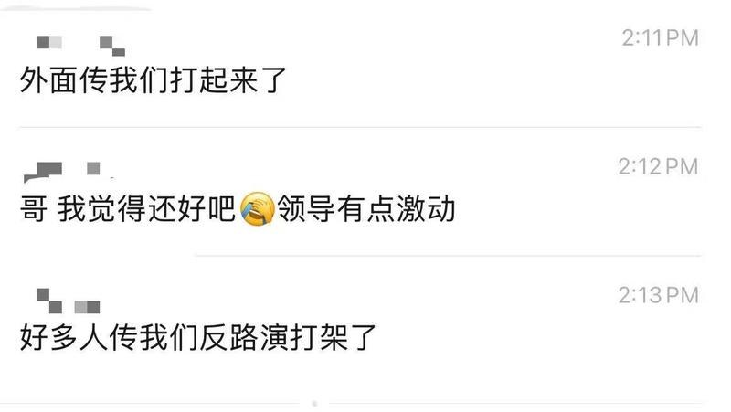
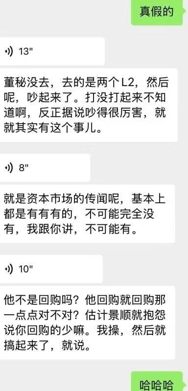
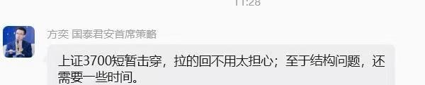
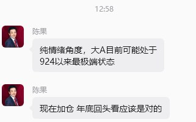

调研纪要 · 2026-10-22 新闻日报
星球 ID: 28855458518111 | 共 337 条帖子 | 精华 61 条
| 查看研究积累
强制同步到研究积累
全部 机械设备 计算机 电子 电力设备 医药生物 其他 非银金融 宏观策略 通信 有色金属 食品饮料 基础化工 轻工制造 商贸零售 传媒 汽车 农林牧渔 国防军工 社会服务 纺织服饰 建筑材料 交通运输 建筑装饰 石油石化 综合 环保 煤炭 公用事业 家用电器
书签
美国中期选举的不同结果可能对市场产生哪些影响？
美国中期选举的不同结果可能对市场产生哪些影响？
Meta 信用风险指标因 AI 支出计划创下新高
Meta 信用风险指标因 AI 支出计划创下新高
黑石集团总裁乔恩·格雷反驳 AI 泡沫警告，称需求呈“抛物线式”增长
黑石集团总裁乔恩·格雷反驳 AI 泡沫警告，称需求呈“抛物线式”增长
【东吴电新】碳酸锂周度更新（10.16-10.22）：本周进一步去库，锂价下跌
【东吴电新】碳酸锂周度更新（10.16-10.22）：本周进一步去库，锂价下跌
#价格：本周碳酸锂现货、精矿价格下跌。SMM电池级碳酸锂9.9万元/吨，周环比-4.8%；锂辉石精矿（CIF中国）1485美元/吨，周环比-1.3%。期货主力合约LC2701 10/22收盘价9.4万元，周环比-4.7%。
#库存：本周SMM碳酸锂新口径库存13.0万吨、去库0.4万吨。其中上游库存3.4万吨，环增0.2万吨；正极厂库存3.7万吨，环减0.2万吨；电芯厂及其他库存2.0万吨，环减0.1万吨；贸易商库存3.9万吨，环减0.3万吨。仓单量2.1万手，周环比-22%。
#产量：本周产量增加845吨至2.6万吨，其中辉石提锂产量环增814吨至14967吨，盐湖产量环增20吨至5741吨，云母提锂产量环增29吨至3184吨，回收料提锂产量环减17吨至2483吨。
#淡季预期叠加供给恢复、锂价阶段性承压。供给端，9月以来国内锂盐检修产能陆续恢复，叠加津巴布韦部分货船到港，锂盐供应有所增加。10月22日，#枧下窝采矿项目进入环评拟批准公示阶段，选矿厂及尾矿库仍需重新履行环评程序。需求端，10月下游排产环比微增，但11月至次年2月将逐步进入排产淡季，需求季节性走弱预期叠加市场对隐性库存的担忧，短期锂价预计偏弱运行。关注27年3月起下游需求恢复情况。年度看，26-27年碳酸锂供给紧平衡，27年价格中枢预计10万/吨左右。
投资建议：看好具备优质资源且利润弹性较大的公司，重点推荐赣锋锂业、国城矿业、盛新锂能、大中矿业、永兴材料、天齐锂业、中矿资源、华友钴业、雅化集团、藏格矿业，关注盐湖股份。
风险提示：需求不及预期
#洪灏 近期在多个公开场合和专访中，明确给出了“股市将在第4季度迎来技术性或大级别反弹”的论断，其主要观点可总结为：
#洪灏 近期在多个公开场合和专访中，明确给出了“股市将在第4季度迎来技术性或大级别反弹”的论断，其主要观点可总结为：
1. 核心判断：当前处于“恐慌抛售尾声”，年底前大概率大反弹
他直言目前的暴跌属于典型的恐慌性抛售，无论是美股的 Gamma 敞口（GEX）收紧还是各风险资产的指标，都显示市场已进入极端超卖状态。
洪灏强调：“再差的市场都有反弹，再冻的冬天都会见到春天。” 他坚信负面因素已经处在计入股价的最后阶段（左侧筑底），在 2026 年底之前，市场大概率会迎来一波大反弹。
2. 中国股市（A股/港股）：10月开始技术性反弹
尽管官方推出的刺激政策力度略低于部分情绪化投资者的预期，但洪灏指出，长期结构性问题无法一蹴而就，短线交易更应看重仓位和情绪面。
当前海外投资者对中国资产大幅低配，加之技术面严重超卖，他预测中国股市有望在 10 月左右迎来一轮强劲的技术性反弹。
3. 反弹的“时间表”与催化剂
10 月下旬和 11 月初，市场将迎来美联储议息会议（10月28日）以及美国中期选举（11月3日）两大重磅事件。他认为市场的负面计价会在这些事件发生前彻底结束。
伴随反弹，他预计到 2027 年一季度（明年春天），全球通胀势头将开始出现实质性回落，为四季度确立的反弹和筑底提供支撑。
4. 洪灏推荐的4季度防御与进攻配置
在整体策略上，洪灏虽然看好四季度的筑底反弹，但他提醒“左侧接飞刀”的过程依然会很痛苦，投资者在布局反弹时应保持结构优化，他明确看好以下方向：
1）高股息/红利板块： 作为震荡筑底期的防御缓冲。
2）医疗生物科技： 具备较强的估值修复弹性。
3）估值合理的硬科技： 避开此前估值过于泡沫化的部分AI应用，转而持有具备硬支撑的基建或核心科技股。
4）黄金与大宗商品： 依旧被他视为对抗长期不确定性的核心锚定资产。
总体来看，洪灏的最新发声并非盲目乐观，而是基于“市场极度恐慌＝反弹临近”的反向交易逻辑，认为四季度是投资者忍受短期痛苦、静候市场出清并迎来岁末反弹的关键窗口。
华测检测三季度业绩交流会议要点
华测检测三季度业绩交流会议要点
1. 2026年前三季度整体业绩
•核心财务指标：2026年前三季度公司实现营业收入54.2亿元，同比增长15.27%；实现归属于上市公司股东的净利润9.59亿元，同比增长18.04%；实现归属于上市公司股东的扣除非经常性损益的净利润9.12亿元，同比增长19.09%。
•盈利与现金流表现：扣非增速高于营收增速，主业盈利能力持续夯实；前三季度归母净利润率17.69%，同比提升0.41个百分点；经营活动产生的现金流净额9.23亿元，同比增长54.89%，回款能力显著提升。
•单季度业绩：2026年第三季度在高基数基础上延续稳健增长，实现营业收入19.90亿元，同比增长14.27%；归母净利润3.95亿元，同比增长14.52%；扣非净利润3.84亿元，同比增长17.44%；单季归母净利润率19.85%，同比提升0.05个百分点。
•区域收入表现：前三季度境内营业收入同比增长11.42%，境外营业收入同比增长68.34%，国际化战略加速兑现。
2. 各业务板块经营进展
•生命科学板块：食品与健康产品事业部作为集团“123战略”先行者稳步放量；新加坡JDM收购落地，叠加南非、法国等并购整合，全球化布局持续完善。
•环境检测板块：基本盘稳固，通过精益管理和数字化深度赋能，运营绩效持续改善、毛利率稳步提升；前瞻布局新污染物、生物多样性调查等新兴领域，培育可持续业绩增长点。
•消费品测试板块：
–全面发力，新能源车检测新产能释放，带动营收和毛利增长；苏州低空经济实验室已开业；航空航天领域深耕航空材料，推进欧盟适航相关工作。
–芯片半导体FAMA产能充分释放，高端高毛利业务占比明显提升；轻工玩具以及房品检测持续突破国际客户，海内外协同发力。
•贸易保障板块：电子材料化学及可靠性检测业务营收稳步增长，毛利率维持高位；麦克伯泰克PCB检测业务实现快速增长，并购的Open View完成全域体系整合，东南亚本地服务能力进一步增强。
•工业测试板块：整体保持较快增长；NALS整合深化，全球服务网络全面打通；建工与工业领域加快向高附加值服务转型，计量校准、数字化可持续发展等业务稳中有进。
–前期并购的南非Safety与希腊M Sert持续整合深化，其中M Sert在报告期内成为公司全球首家获得CBAM核查资质的机构，能力覆盖CBAM管控各大行业，为独立第三方核查机构。
•医药及医学板块：创新药市场复苏带动CRO业务持续快速增长；医疗器械持续加码高端产能和资质布局；医学领域转型聚焦功能医学，稳居行业前列。
3. 并购与国际化战略
•前三季度增长结构：前三季度收入增长中接近60%来自并购贡献，接近10%来自自然增长。
•主要并购标的进展：
–南非SIX SA：2025年10月并表，业务分为HSE（安全健康的培训、咨询和审核）与食品检测两大板块，拥有5个南非食品实验室、1个格鲁吉亚食品实验室；当前食品检测以微生物业务为主、利润率较低，化学测试业务开始拓展，后续利润率提升空间较大；HSE品牌在非洲具备较强影响力，第一年整合已更换CEO为公司派驻人员，正通过优化管理成本、导入精益管理与集采、发挥规模经济效应提升盈利。
–开景、黄冈、ALS、M Sert等标的均保持高速增长，M Sert于2025年12月并表，利润率处于较高水平；仅两个小型标的表现偏弱，一个处于业务爬坡阶段，江苏泓海受电动自行车政策变化影响表现不佳，二者整体影响较小。
•2026年并购节奏：2026年并购节奏慢于预期，当前多个标的处于SPA协议阶段或尽调阶段，原本预计2026年三季度落地、四季度并表，当前预计四季度落地、2027年一季度并表。
•海外并购差异化策略：
–国际检测巨头各有侧重与业务剥离动作，公司聚焦自身优势赛道并购，重点方向包括大消费品板块（玩具、轻工、纺织、食品）、船舶、与中国出口协同性高的产品认证领域。
–区域布局优先选择欧洲、东南亚、非洲、中东和南美，因地缘政治因素对北美标的保持谨慎。
–并购核心优势为可向标的输出中国客户资源与业务增量、提供管理赋能，依托中国市场能力获取优质标的合作机会。
4. 医药医学板块经营与展望
•整体经营表现：2026年前三季度医药医学板块收入同比增长40%以上；签单情况表现亮眼，医药板块整体签单同比增长接近150%。
•细分业务签单与进展：
–CRO业务签单实现翻倍以上增长；上海质量研究平台签单同比增长60%以上，客户审计数量同比增加70%以上，2026年已通过十余家国际客户审计，国际客户单体规模大、竞争格局好，将持续带来业务增量。
–医疗器械板块签单同比增长50%以上，分为有源、无源两大业务：有源业务若相关并购落地，将依托欧盟认证资质拓展出口业务，形成新增长极；无源业务广州并购主体成长良好，昆山GxP无菌实验室为国内仅有的2-3家通过美国FDA审计的实验室之一，竞争力突出、增长较快。
–医学业务收缩特检、普检等非核心业务，聚焦功能医学赛道，已取得显著竞争优势；板块2026年一季度亏损，前5个月中有4个月实现盈利，2026年预计大幅减亏、仅小幅亏损，2027年将实现盈利。
•长期目标：目标2030年自然增长情况下实现10亿元收入、10%以上的利润率，若有并购落地目标将更快达成；广西收购猴场将对CRO业务形成支撑。
5. 汽车检测业务与德国IMA并购情况
•德国IMA整体经营：并购后前两年表现良好，2025-2026年受德国汽车行业未跟上新能源转型、行业景气度下行影响，德国本土收入有所下滑；美国、墨西哥区域业务增长良好，且德国通过减员等降本措施，德国、美国、墨西哥区域利润实现增长。
•中国区业务变化：前两年因拿到越南电动车企业VinFast约700-800万美元订单形成高基数，后续客户自建实验室（公司提供顾问服务）导致订单流失，2026年中国区利润有所下滑；沙特、马来西亚品牌导入进度较晚，2026年利润端仍将承压。
•商誉减值说明：商誉减值需待评估后确定，暂无法给出明确结论。
•并购协同效应：IMA帮助华测获得奔驰、宝马、大众等德国车企的OE认可，为华测国内汽车板块带来大量车企及供应商订单，相关订单逐步转由华测主体签约，贡献显著增量。
•国内汽车检测业务展望：
–华测自有汽车检测板块增长良好、毛利率持续提升，重点布局新能源汽车、车联网赛道，汽车EMC、电机电控、汽车电子等领域产能投产后快速饱和，持续扩产；外资检测机构逐步退出或收缩，公司市占率提升空间较大。
–2026年10月工信部加强汽车创新设计与研发测试的政策，主要利好国有强制性认证检测机构，对第三方检测机构增量贡献有限；长期增长动力来自车型迭代加快、功能复杂度提升带来的研发测试需求。
6. 芯片半导体业务经营情况
•2026年经营特征：2026年收入整体增量不大，但利润减亏幅度显著，毛利率大幅提升；核心原因是业务结构优化，缩减低毛利的可靠性测试中占比约60%的板卡业务（此前毛利为负），加大高毛利的FA/FAMA纯测试业务投入，同时提升运营效率。
•经营策略调整：更换管理团队，战略优先级向FA/FAMA业务倾斜，在高功耗等具备优势的可靠性测试领域持续投入；坚持“有利润的收入、有现金流的利润”原则，放弃低质低价订单，不再单纯追求收入规模增速。
•后续展望：四季度受板卡业务供应延迟影响的收入将逐步确认，收入增速将有所改善；2027年芯片半导体业务将实现盈利，后续将持续在FA/FAMA领域进行设备与人才投入，该业务属于公司战略二重点赛道。
7. 现金流与应收账款管理
•现金流改善核心原因：
–建立全流程系统性现金流管理体系，在合同签订阶段明确付款节点与要求，强化合同履约全周期回款管控。
–主动放弃回款困难、账期过长的业务，主要涉及食品、环境检测领域的部分政府类业务。
–化债相关政策对回款有一定正向作用。
•坏账与季节性特征：2026年一季度坏账准备减少3000多万贡献利润增量，截至三季度该影响已基本回吐，全年坏账计提水平与2025年基本持平；环境领域部分长账期项目回款延迟导致三季度坏账计提季节性增加，整体回款规模实现较好增长。
•后续展望：现金流管理体系持续强化，叠加业务结构优化，后续现金流状况将持续改善。
8. 资本开支与产能利用率
•资本开支规划：长期资本开支占营业收入比例设定为7%-10%，每年根据投资机会动态调整具体比例。
•重点投入方向：增量资本开支重点向战略二赛道倾斜，包括医药、半导体、新能源汽车、车联网、AI相关硬件可靠性、机器人、PCB、光模块、食品扩产等领域；其他成熟业务仅安排维持性资本开支。
•2027年资本开支特殊安排：2027年存在两类大额投入，一是昆山医疗器械与医药二期产能扩建（现有产能已满产），二是深圳电子科技新基地搬迁及大型设备配置（旧基地暂停大额设备投入），若无其他超大型项目，2027年资本开支比例大概率接近10%；2028年若无大额专项投入，比例将回落至7%-8%。
•产能利用率情况：
–公司对10万元以上的约6700台套设备进行实时利用率监控，利用率按每周6天、每天24小时的标准计算，不同业务属性设备利用率差异显著，化学分析、可靠性测试、汽车EMC等设备可24小时运转，物理测试类设备利用率天然较低。
–当前公司整体设备平均利用率约49%-50%，近年呈持续逐年提升态势；设备利用率不完全等同于产能利用率，还需结合人力等要素综合判断。
9. 长期战略与经营目标
•宏观应对与战略框架：面对K型分化、高波动、内卷的外部环境，公司以提升增长确定性为核心，落地集团与事业部两级“123战略”，布局有层次的韧性增长，兼顾短期业绩兑现与中长期增长点培育。
•核心经营抓手：
–将运营效率作为核心竞争力，推进人效专项，通过目标分解、考核、能力模型、自动化、AI应用等工具持续提效。
–强化并购整合能力，打造平台型企业，形成自然增长+并购增长双增长极，持续深化国际化能力。
–重点推进消费品国际化，已完成海外大客户布局并获得国际客户认可，后续通过拓展客户供应商体系实现收入落地。
–完善组织能力建设，搭建“一机两翼三支柱”人才发展体系，强化企业治理、ESG与创新能力。
股东回报目标：持续提升现金流、ROE等核心指标，相关指标仍有较大提升空间，在高波动市场环境下为投资者提供确定性较强的投资机会。
[太阳]【国金计算机&科技】东阳光：AI业务高质&高量爆发中
[太阳]【国金计算机&科技】东阳光：AI业务高质&高量爆发中
#单Q3收入同比高增38%_AI业务收入规模达11亿
——公司2026年前三季度实现营收146.72亿元，同比+33.74%，其中Q3单季度营收52.97亿元，同比+37.70%，收入增速进一步加快，主要受益于AI新业务快速放量及传统业务稳健增长。
——前三季度AI业务实现营收11.15亿元，同比+2302.57%，毛利率达43.29%。
——具体来看，算力相关业务实现收入约6.92亿元；积层箔及积层化成箔实现收入4.37亿元，同比+1654.51%。
#百亿算租长单加速履约_已收客户相关款项118亿元_对应前三季度经营性现金流达124亿元
——截至9月末，算力服务订单项下高性能服务器等相关资产达196.53亿元，已收算力客户相关款项117.62亿元；前三季度经营活动现金流净额达123.65亿元，同比+2445.25%，主要受益于算力客户服务款流入。
#剔除股权激励及公允价值影响后_核心经营利润同比增速50%+
——公司Q3单季度归母净利润2.48亿元，同比-15.15%，扣非归母净利润3.35亿元，同比+9.71%。表观利润主要受到股权激励费用及股权公允价值变动影响，剔除前三季度股权激励费用5.27亿元、持有东阳光药及立敦股权公允价值变动损失0.89亿元后，公司实现调整后归母净利润12.53亿元，同比+51.96%；调整后扣非归母净利润12.28亿元，同比+56.02%。AI算力服务与积层箔业务贡献新增利润，制冷剂价格高位运行，主营业务盈利持续改善。
#各项AI业务进入加速放量阶段_看好2027年业绩持续增长
——算租：公司此前累计签署预计总金额390-460亿元的五年期算力服务合同，算力服务订单稳步履约、收入持续兑现。
——积层箔及电容：公司积层箔产品已进入TDK、RUBYCON、NICHICON等国际电容龙头供应链；公司积层箔电容器助力秦淮数据打造的行业首个 SST智能直流供电商业化项目于2026年7月成功投运。
——AIDC：秦淮数据剩余70%股权收购持续推进，未来有望进一步强化数据中心基础设施与算力运营业务协同。
风险提示：AI产业发展不及预期、算力业务推进不及预期、行业竞争加剧等。
☎️联系人：陈芷婧/鲍淑娴/刘高畅
【申万宏源通信】东阳光26Q3财报速评：算租加速、全栈AIDC基建稳步向前
【申万宏源通信】东阳光26Q3财报速评：算租加速、全栈AIDC基建稳步向前
#符合预期、调整股份支付及股票公允价值变动后业绩增长提速。
26Q1-3营收146.72亿元，yoy+33.74%，归母净利润6.38亿元，yoy-29.57%；剔除股权激励、相关股票公允价值变动后，归母净利润12.53亿元，yoy+51.96%。
单Q3营收52.97亿元，yoy+37.70%；归母净利润2.48亿元，yoy-15.15%，测算调整后归母净利润约5.07亿元。
#AI业务收入加速放量、算租由订单储备走向确收。
26Q1-3基石业务实现收入129.32亿元，yoy+22.26%；
AI业务实现收入11.15亿元，yoy+2302.57%，毛利率43.29%。
其中，单Q3 AI业务收入8.26亿元，是上半年合计的2.86倍；前三季度算力相关业务收入6.92亿元，单Q3约6.32亿元，算租收入贡献明显提升。
#百亿设备投入与客户付款交叉验证、资产负债表凸显算租履约提速。
Q3末合同负债57.79亿元，较H1新增46.45亿元；算力业务累计已收客户相关款项117.62亿元。
算力订单项下服务器等资产196.53亿元，较H1新增155.39亿元；同期固定资产及在建工程合计新增155.06亿元。客户付款、设备部署与收入兑现形成验证。
#积层箔扩产、IDC并购持续推进、全栈AIDC协同空间进一步打开。
前三季度积层箔等收入4.37亿元，yoy+1654.51%；乌兰察布2000万平产线全面投产，湖北宜都3000万平项目稳步建设，持续承接AI服务器电源及SST供电需求。
秦淮数据收购，公司于9月提交重组问询回复。
结合既有液冷布局，“IDC+算租+电源+液冷”全栈AIDC基建布局持续推进。
[玫瑰]欢迎联系申万宏源通信团队（刘菁菁/郝知雨/陈力扬19310840519/包轩豪/林起贤等）
【申万宏源通信】润泽科技26年三季报速评：主业稳增，算力投入提速
【申万宏源通信】润泽科技26年三季报速评：主业稳增，算力投入提速
#符合预期、业绩保持增长。
前三季度营收56.66亿，yoy+42.45%；扣非归母净利润17.99亿，yoy+32.97%。整体业绩增长稳健。
单Q3营收19.20亿，yoy+29.64%；归母净利润5.99亿（同比下滑主要受去年REITs处置收益高基数影响）；扣非归母净利润5.93亿，yoy+24.88%，环比-5.03%。
Q3毛利率45.85%，较上半年下降0.73pct。单季度毛利率与扣非环比下降预计主要受Q3集中交付、折旧刚性影响。
前三季度经营性现金流净额45.08亿，yoy+63.10%，回款持续增强。
#算力投入提速、增长储备持续增加。
前三季度CAPEX 114.19亿，yoy+42.84%；其中Q3达67.48亿，超过上半年合计46.70亿。
截至三季度末，在建工程151.72亿，较年初+115.07%，主要系算力设备增加所致。
无形资产21.51亿，较年初+57.94%，主要系香港、印尼算力中心新增土地使用权，境内外资源布局持续推进。
#IDC+算租高速发展的算力基建产业龙头、低估值。
1）AIDC算力业务持续贡献增量，前三季度收入已接近25年全年。
2）算力设备投入明显提速，后续投运与上架爬坡有望带动收入利润释放。
3）境内算力与境外园区同步布局，持续拓展成长空间。
[玫瑰]欢迎联系申万宏源通信团队（刘菁菁/郝知雨/陈力扬19310840519/包轩豪/林起贤等）
❗【天风电新】华正新材26Q3点评：超预期，研发费用增加明显，看好高端化转型1022
❗【天风电新】华正新材26Q3点评：超预期，研发费用增加明显，看好高端化转型1022
———————————
🌼财务数据
26Q3收入26.5亿，同比+141%，环比+54%，归母6.27亿，同比+3045%，环比+342%，扣非6.27亿，同比+4003%，环比+356%。
26Q1-3收入56.1亿，同比+76%，归母8.0亿，同比+1178%，扣非7.93亿，同比+1499%。
🌼业绩分析
公司26Q3收入和利润同环比大幅增长主要系覆铜板涨价+高端化占比提升所致。26Q3毛利率提升至36.1%，同比+24pct，环比+17pct，净利率23.7%，同比+22pct，环比+15pct。26Q3公司销售、管理、财务变化不大，主要变化在研发费用达1.2亿，同比+125%，环比+50%，我们预计系布局高端化产品（高速板、BT载板core层、ABF膜所致）。
逐月看，公司此前定增回复函披露7+8月经营业绩收入16.65亿，归母3.55亿，26Q3收入26.5亿，归母6.27亿，即单9月收入9.85亿，归母净利润2.72亿，环比+35%，净利率27.6%。量的口径，单月出货覆铜板270-280万张，PP 550-600万米。
🌼投资建议
公司9月收入约10亿，高端品收入占比30%+，即3亿+，考虑27年新增50万张/月高端品产能，按照单张400元，合计高端收入5亿+，按照20%净利率，单月利润1亿+，27年利润13亿。
从股票安全边际和向上空间看：高端品13亿，给20X，值260亿，FR4当前单月约2亿利润，即使假设出现价格下行利润腰斩，亦有12亿利润，给10X，值120亿，合计值380亿，再考虑ABF膜、BT载板core层和PTFE期权，合计看500亿，较目前约70%空间。
———————————
欢迎交流：孙潇雅/张童童
[红包]【力合微】2026Q3：单季营收提速、双轮驱动成效显现，端侧AI通信底座价值重估
[红包]【力合微】2026Q3：单季营收提速、双轮驱动成效显现，端侧AI通信底座价值重估
[太阳]#公司发布2026三季报：Q1~Q3实现营业收入3.07亿元，同比增长13.82%；单Q3实现营业收入9691万元，同比大增35.48%，单季归母净利润209.8万元，同比实现扭亏。其中，智能电网业务营收2.74亿元，同比增长12.85%，基本盘稳固；非电网物联网业务营收3284万元，同比增长24.26%，第二曲线高速扩张。
[太阳]公司坚持“智能电网+非电网物联网”双轮驱动战略，打造多场景物联网芯片平台，核心PLC技术#深度卡位端侧AI底层通信环节，产业价值逐步显现。
[爆竹]#智能电网：业绩压舱石，受益十五五投资红利
十五五”期间新型电网预计投资规模超5万亿元，配网智能化改造、算电协同联动持续推进，电力物联网市场稳步扩容。公司深耕用电信息采集与配网创新应用，新一代SPLC芯片适配电网最新标准，年内有望验证落地。
[爆竹]#智能家居&智慧酒店：端侧AI核心场景，PLCP生态规模化落地
公司作为荣耀全屋智能PLC芯片核心供应商，获颁“荣耀全屋智能解决方案杰出贡献伙伴奖”，与生态伙伴共建PLC全屋智能开放生态；全球首款通过Matter官方认证的PLC网桥，可实现与苹果Home等全球主流生态对接；PLC方案已覆盖亚朵等智慧酒店场景并实现规模部署，有望持续放量。
[爆竹]#智慧光伏：能源端侧智能，海外合规驱动增长
欧盟CBAM碳关税进入强制合规阶段，光伏组件级智能管控与碳足迹追溯需求刚性提升。公司产品适配欧美主流安规与通信标准，在MLPE领域已实现关断器、优化器、微型逆变器等整机产品规模化批量出货，成功切入光伏智能组件市场，持续推进头部客户战略合作，有望成为重要增长极。
[爆竹]#车载芯片：持续拓宽端侧互联边界
适配新能源车车身减重降本需求，对应市场规模超100亿元。当前处于车企方案验证导入阶段，构成潜在的第三增长曲线。
[礼物]#投资逻辑：多场景物联网芯片平台价值存预期差
当前算力芯片的估值预期已充分演绎，而支撑设备互联互通的底层通信底座，其产业价值仍被市场显著低估。力合微作为国内PLC通信芯片领域的龙头企业，智能电网业务提供稳固业绩基本盘，非电网业务在智能家居、智慧光伏等多场景加速落地，有望深度受益端侧AI互联需求爆发，长期成长值得期待。
【信达消费-点评】永艺股份：内生经营改善，中期份额提升，业绩表现靓丽
【信达消费-点评】永艺股份：内生经营改善，中期份额提升，业绩表现靓丽
[太阳]事件：公司发布2026年三季报。26Q1-3实现收入40.84亿元（同比+17.3%），归母净利润2.25亿元（同比+17.4%），扣非归母净利润2.24亿元（同比+21.3%）；26Q3实现收入15.46亿元（同比+19.4%），归母净利润0.88亿元（同比+49.1%），扣非归母净利润0.89亿元（同比+61.1%）。
[太阳]点评：尽管全球地缘冲突影响终端需求，公司在基数抬升背景下，凭借自身扩张、提价落地，仍实现靓丽增长，单季度收入创历史新高；盈利能力方面，公司持续强化采购议价能力、推广极致成本方法论，加强降本增效，推动利润率稳步提升。此外，根据我们测算，26Q3剔除汇兑影响后，公司实际归母净利润增速翻倍、归母净利率已稳定保持在7%+。
[太阳]成长路径多元，全球份额扩张。公司通过持续提升市场份额有效对冲宏观需求不确定，同时深入推进大客户价值营销全覆盖，我们预计美国市场增速靓丽、欧洲市场保持平稳。此外，公司针对薄弱&新兴市场设立专项营销团队，我们预计亚洲、南美、非洲等维系高增。海外产能方面，26H1越南&罗马尼亚基地经营趋势均已改善，目前全球贸易政策仍存高度不确定性，公司未来凭借多元基地布局有望维持外销稳健增长。内销方面，受制于终端需求疲软，我们预计收入同比平稳，但国内渗透率提升空间明确、且结构性机会显著（份额有望持续集中），公司品牌战略有望逐步显现成效。
[太阳]盈利表现优异。26Q3公司毛利率为22.0%（同比+1.6pct），归母净利率为5.7%（同比+1.1pct）；费用表现来看，26Q3期间费用率为14.7%（同比+0.06pct），其中销售/研发/管理/财务费用率分别为6.39%/2.92%/3.88%/1.55%（同比分别-0.69/-0.21/+0.11/+0.85pct），剔除财务费用率波动、整体费用率表现优异。
[太阳]现金流稳定，营运能力改善。26Q1-3经营性现金流净额为3.82亿元（同比+0.20亿元），其中26Q3单季1.98亿元（同比-0.27亿元）；存货/应收/应付周转天数分别为46.2/47.0/69.0天（同比分别-11.1/-0.4/-8.0天），存货效率优化我们预计主要系订单景气、出货节奏加快。
【中泰电子|奥士康】Q3业绩大超预期，看好Q4业绩释放+估值中枢抬升！
【中泰电子|奥士康】Q3业绩大超预期，看好Q4业绩释放+估值中枢抬升！
[礼物]事件：公司发布26年三季报
➠26Q1-3：营收51.13亿元，yoy+26.8%；归母4.54亿元，yoy+60.9%；毛利率25.6%，yoy+4.2pct。
➠26Q3：营收21.27亿元，yoy+45.0%，qoq+27.1%；归母3.72亿元，yoy+329.2%，qoq+470.0%；毛利率33.4%，yoy+13.7pct，qoq+14.0pct。
➠Q3还原泰国基地汇兑损失后归母达4亿，大超预期！
[太阳]涨价持续加速，看好Q4利润释放！
➠Q3公司营收环比增长27%，价格传导带动毛利率环比+14pct，利润弹性显著。
➠截至2026.8.31，公司在手订单达28.8亿，其中单双面板/四层及以上板单价环比Q2增长57.3%/76.7%。当前行业交期2个月左右，在手订单有望于Q4贡献显著业绩增量，后续行业供应紧缺预计持续支撑价格。
[玫瑰]持续拓展AI领域，有望抬升估值中枢！
➠公司近年来持续拓展高端AI领域，在服务器领域持续拓展客户，CPU领域积极拓展，推进海外头部ASIC客户验证；
➠公司为AIPC核心供应商，AIPC HDI板价值量预计提升2-3倍，公司与联想、惠普、华硕、微软等主流厂商均有深度合作；
➠10.20日公司公告拟发行H股并于香港联交所主板上市，有望进一步推进全球化战略布局并加速海外业务拓展。
风险提示：行业竞争加剧，涨价不及预期等
[庆祝]派点请支持中泰电子：王芳/杨旭/王峙博
【中信新零售】普拉达集团(1913.HK) 3Q26业绩速览：内生增速降至1%，Miu Miu转为下滑
【中信新零售】普拉达集团(1913.HK) 3Q26业绩速览：内生增速降至1%，Miu Miu转为下滑
总览：剔除Versace集团9M26营收41.0亿欧元，内生增长4%；单Q3营收13.57亿欧元，内生增长1%（vs. 2Q26：+7%），略好于彭博一致预期的+0.6%；零售收入内生增速由Q2的+5%降至持平。
分品牌：Q3 Prada品牌零售收入同比增长1%（vs. 2Q26：+6.3%），符合彭博一致预期的+1.0%；美洲及亚太市场保持增长，其中Prada品牌中国市场实现正增长，欧洲及日本大致持平。Miu Miu品牌零售收入同比下降3%（vs. 2Q26：+2.6%），受去年同期+29%的高基数及不利地区组合影响，剔除中东影响后Q3大致持平。
分地区：Q3亚太（除日本）零售收入同比持平（vs. Q2：+8%），好于彭博一致预期的-1.4%，中国内地客流偏弱，韩国、香港及澳门持续增长形成支撑；日本同比持平（vs. Q2：+8%），弱于彭博一致预期的+4.0%，本地需求稳定，但较高基数拖累增速；美洲同比增长5%（vs. Q2：+19%），弱于彭博一致预期的+10.2%，仍为表现最好的地区；欧洲同比下降3%（vs. Q2：-2%）；中东同比下降18%（vs. Q2：-26%），本地消费支撑下较Q2改善，但仍拖累集团尤其是Miu Miu表现。
分渠道：Q3直营零售收入同比持平（vs. Q2：+5%），略低于彭博一致预期的+0.2%；批发收入同比增长12%（vs. Q2：+21%），前三季度增长由独立批发及免税渠道共同推动；授权收入同比增长24%（vs. Q2：+10%），眼镜及美妆授权业务持续贡献增长。
📊 汇嘉时代26Q3业绩点评：超市调改驱动收入与毛利双升，费用率下行放大利润弹性
📊 汇嘉时代26Q3业绩点评：超市调改驱动收入与毛利双升，费用率下行放大利润弹性
📈 整体业绩：收入稳健增长，利润大幅回升。
2026Q3实现营收6.26亿元，同比增长4.87%；归母净利润0.39亿元，同比大增188.87%；扣非归母净利润0.29亿元，同比增161.73%。前三季度营收19.61亿元，同比+4.95%；归母净利润1.37亿元，同比+70.08%；扣非归母净利润1.22亿元，同比+64.05%。正式业绩落在此前预告归母净利润1.35–1.43亿元区间内，符合预期。利润高增主要得益于商超收入与毛利率提升，以及累计销售费用下降。
🛒 业态拆解：超市成主要驱动力，结构持续优化。
2026年7–9月按业态看，超市收入3.72亿元，同比+15.73%，毛利率21.65%（同比+1.54pct），是收入与毛利改善的核心来源；百货收入1.20亿元，同比-22.38%，毛利率28.34%（同比-9.28pct）；其他业务收入1.35亿元，同比+10.70%。整体毛利率32.68%，同比下降2.3pct，主因百货占比收缩与结构变化。
💡 核心看点：超市调改持续推进，带动超市收入与毛利率同步提升，成为本轮业绩反转的关键。同时，销售费用率下行有效放大利润弹性，使收入小幅增长转化为利润的大幅释放。百货业务虽仍承压，但整体经营质量持续改善。
🔮 盈利预测与估值：我们维持公司2026–2028年归母净利润1.45/1.95/2.27亿元的预测。对应2026年PE约26x，处于合理区间。后续需持续跟踪超市调改进展、费用管控力度以及百货业务的边际变化。
🤝 欢迎交流：嵇文欣 / 曹敦鑫
新澳股份：Q3利润加速兑现，毛条弹性与产能爬坡共振
新澳股份：Q3利润加速兑现，毛条弹性与产能爬坡共振
[太阳]事件：公司发布2026年三季报。2026Q1-Q3公司实现营业收入46.63亿元，同比+19.74%；归母净利润4.71亿元，同比+24.69%；扣非净利润4.58亿元，同比+23.37%。其中2026Q3实现营业收入15.76亿元，同比+17.64%；归母净利润1.45亿元，同比+36.00%；扣非归母净利润1.42亿元，同比+36.89%。Q3利润增速显著高于收入增速，盈利弹性继续兑现。
[太阳]点评：Q3利润加速兑现，羊毛价格弹性与新产能利用率提升是主要驱动。我们推测Q3利润增长主要受益于毛精纺纱线及毛条产品价格上行、盈利水平提升，以及越南、银川生产基地产能利用率提升贡献增量利润。2026Q3公司毛利率18.87%，同比提升1.23pct；2026Q1-Q3毛利率20.40%，同比提升0.16pct。毛利率同比变动由H1的下降转为前三季度提升，说明羊毛价格上行向报表端的传导进一步体现。
[太阳]费用管控延续较优表现，归母净利率明显提升。2026Q3公司销售费用率、管理费用率分别为1.64%、2.55%，同比分别变动-0.27pct、-0.56pct，我们推测主要受益于规模效应；财务费用率为0.89%，同比提升0.17pct。前三季度公司销售费用率、管理费用率分别为1.69%、2.58%，同比分别变动-0.23pct、-0.51pct；财务费用率为1.11%，同比提升0.77pct，主要仍受汇兑扰动及融资规模上升影响。综合影响下，2026Q3公司归母净利率为9.21%，同比提升1.24pct；扣非归母净利率为8.98%，同比提升1.27pct。前三季度归母净利率为10.09%，同比提升0.40pct；扣非归母净利率为9.83%，同比提升0.29pct。
[太阳]经营现金流仍受备货影响，但Q3边际转正，库存与订单储备为旺季交付提供支撑。2026Q1-Q3公司经营活动现金流净额-0.43亿元，主要系毛条价格上涨、采购单价上升。期末存货29.70亿元，战略备货继续处于较高水平；短期借款18.01亿元，较年初+120.7%，主要服务于羊毛上行周期下的原料备货与营运资金需求。
[太阳]Q4展望：利润确定性增强，继续关注涨价传导。当前公司仍处于“羊毛价格上行、海内外产能爬坡、羊绒业务放量”三重驱动阶段。随着毛条及毛纱价格传导进一步顺畅，叠加越南、银川产能利用率提升，Q4盈利同比改善仍有支撑。
[太阳]中长期看，公司成长逻辑在于宽带战略、全球产能和品类扩张。宁夏2万锭产能利用率仍有提升空间，越南5万锭全精纺产能分步投产；高支、混纺、功能性及户外羊毛占比提升，推动主业结构升级。羊绒业务持续推进扩产、客户优化和混纺转型，目标迈向全球市占率第一。依托公司一体化的采购生产优势，以及客户基础，公司有望将花式纱等业务打造成第三成长曲线。
[太阳]盈利预测及投资建议：我们上调2026-2028年归母净利润5.96、6.56、7.06亿元预测。当前市值对应PE分别为9.41X、8.55X、7.95X。维持“买入”评级。
[月亮]风险提示：1）羊毛等原材料价格大幅波动风险；2）下游行业需求持续疲软；3）新产能投产及爬坡不及预期；4）海外经营环境及汇率波动风险。
✨周大福：港澳延续高增，金价波动下集团经营韧性突出
✨周大福：港澳延续高增，金价波动下集团经营韧性突出
#经营表现： 集团发布FY27Q2（26Q3）经营数据，集团零售值同比-0.5%；内地零售值同比-5.3%，主要受渠道优化及同期高基数影响，港澳及其他市场零售值同比+33.2%。内地直营/加盟同店销售分别同比+2.2%/-2.9%；港澳同店销售同比+29.6%，同店销量同比+14.0%。
[玫瑰]#内地市场：定价首饰同店转正、标志性系列表现亮眼。
1）定价首饰：同店销售同比+11.1%，零售值同比-7.7%，占内地零售值29.2%（去年同期29.9%）；2）计价黄金：同店销售同比+1.7%，零售值同比-3.5%，占比67.5%。“万相”系列季内零售值超预期实现近20亿港元，8月上新“传颂”系列，以文化设计及工艺升级持续丰富标志性产品组合，强化品牌对年轻客群的吸引力。
[玫瑰]#港澳及其他市场：计价黄金带动增长、客流改善支撑动销
1）定价首饰：港澳同店销售同比+13.0%，港澳及其他市场定价首饰零售值同比+19.0%，占比26.5%（去年同期29.6%）；2）计价黄金：受益于消费气氛及客流改善，港澳同店销售同比+43.5%；港澳及其他市场计价黄金零售值同比+44.4%，占比69.3%。
#渠道优化持续推进、高端升级与海外布局同步深化。季内内地周大福珠宝净关店240家至4807家，较Q1有所收窄；加盟店对内地零售值贡献同降5.9pcts至61.6%。此外，公司季内新增1家内地高端形象精品店，总数增至13家。海外于新加坡威士马商场、马来西亚谷中城美佳广场开设门店，其他市场零售值同比+31.1%，出海第二曲线正加速成形。
[太阳]#点评： 公司品牌升级战略稳步推进，标志性产品推新+高端门店升级持续贡献业绩增量，叠加关店数量持续收窄，在金价波动环境下展现较强经营韧性。此外，公司发布FY27H1盈喜公告，受益于黄金借贷合约重估产生的公允值收益及核心市场销售改善，预计上半财年净利润同比增长90%-100%。预计FY27全年归母净利润104亿港元，建议持续关注！
【广发商社】周大福FY27Q2业绩交流会精要（2026.10.22）
【广发商社】周大福FY27Q2业绩交流会精要（2026.10.22）
#【1】业绩指引： 公司仍维持年初指引，将结合10月销售及后续市场情况，于11月重新评估。下半财年传统旺季叠加万相、传颂等系列扩大铺货，有望支撑产品结构改善及毛利率韧性。其中，传颂销售网点预计由目前400多家扩至全年2000多家。
#【2】渠道方面： 受行业景气度影响，全年净关店数量可能高于年初指引，但预计仍少于上一财年，下半财年关店节奏也将较上半年放缓。新增门店将继续向高线城市及优质商圈倾斜。
#【3】产品方面： 公司将持续打造具有品牌辨识度的系列产品，围绕中国文化、传统与创新工艺及当代审美推进开发，并拓展博物馆、少数民族文化等题材，通过设计、故事及工艺迭代强化产品差异化，承接消费者对情感价值及个性表达的需求。
#【4】海外方面： 上半财年旅游零售表现较好，新加坡、马来西亚通过既有门店升级及高端商场新店贡献增量。迪拜首店已于10月开业，泰国、加拿大、美国、澳大利亚等市场继续筛选优质店址，稳步拓展海外网络。电商方面，日本Amazon业务已上线，美国相关电商业务仍在准备。
【西部医药CXO】凯莱英26Q3业绩：单季收入提速增长，经调整利润增速亮眼，Q4交付规模有望进一步提升！
【西部医药CXO】凯莱英26Q3业绩：单季收入提速增长，经调整利润增速亮眼，Q4交付规模有望进一步提升！
[太阳] 2026年前三季度，公司实现营业收入53.95亿元（yoy+16.52%），恒定汇率下同比增长20.00%；归母净利润8.52亿元（yoy+6.49%），增速低于收入主要系汇率波动影响，前三季度财务费用1.76亿元、较上年同期-0.90亿元增加2.66亿元；经调整净利润10.74亿元（yoy+21.81%），经调整净利率19.90%（+0.86ppts）。
[玫瑰]单Q3实现营业收入17.88亿元（yoy+24.04%），恒定汇率下同比增长28.25%，收入端较Q2明显提速；归母净利润3.32亿元（yoy+81.49%），扣非归母净利润2.03亿元（yoy+25.70%）。单Q3经调整净利润约3.2亿元，同比增长约50%！经调整口径下季度利润增长显著快于收入，盈利质量改善趋势明确。
[玫瑰] 分业务看，小分子CDMO基本盘稳健，新兴业务延续高增。前三季度小分子CDMO业务收入34.65亿元（恒定汇率yoy+7.44%），毛利率47.97%（+0.97ppts），恒定汇率下毛利率49.83%（+2.84ppts）；新兴业务收入19.23亿元（yoy+52.69%），主要是化学大分子、生物大分子和制剂业务板块增长强劲，毛利率30.95%（+0.41ppts），恒定汇率下毛利率32.08%（+1.53ppts）。整体毛利率41.88%，（恒定汇率+1.12ppts）。分客户看，来自大制药公司收入25.13亿元（yoy+22.40%），来自中小制药公司收入28.82亿元（yoy+11.84%）；分区域看，境外市场客户收入36.23亿元、恒定汇率下同比增长11.64%，境内市场客户收入17.72亿元（yoy+42.83%），国内需求成为重要增量。
[玫瑰] 在手订单与交付节奏支撑Q4进一步提速，报告期内公司新签订单同比保持双位数增长，第四季度交付规模较Q3将有所增加，公司维持2026全年营业收入增长19%-22%的指引。期末存货24.30亿元、较年初增长65.20%，合同负债4.18亿元、较年初增长66.35%，均指向订单交付备货与预收款同步扩张，看好全年及明年业绩，持续推荐！
[红包]欢迎交流。
（西部医药 李梦园、张崴）
吉比特26Q3业绩要点 | 广发传媒互联网
吉比特26Q3业绩要点 | 广发传媒互联网
主要情况：
前三季度保持增长，Q3流水回落。前三季度营收54.96亿元，yoy+22.5%；归母净利润15.85亿元，yoy+30.6%。单季度看，Q3营收17.70亿元，yoy-10.1%、QoQ-5.9%；归母净利润4.93亿元，yoy-13.3%、QoQ-14.0%。扣非归母利润4.79亿元，yoy-14.98%、QoQ-14.6%。此外合同负债基本保持稳定，在6.34亿元（环比减少3千万元）；三费整体稳定，销售费用6.06亿元，相比Q2回落近9000万元。
国内核心产品流水有所回落，海外收入贡献提升。Q3《
杖剑传说 ↗ 》大陆版、港澳台及日本版流水分别为3.25、1.39亿元，同比-56.2%、-70.9%，去年Q3为产品流水最高点；欧美版3.90亿元，同比新增量。《
问道手游 ↗ 》3.83亿元，yoy-10.51%。仗剑海外表现亮眼对冲国内流水自然滑落。
环比变化拆分：
披露主力产品流水环比下滑1.6亿元，递延释放约3000万元；反映在营收上环比减少1.1亿元，营业成本减少约0.16亿元=毛利减少1亿元。三费角度减少约8414万元。因此经营利润环比稳定；主要的利润滑落在1）投资净收益从Q2的5871万元到Q3的亏损2029万元，减少7901万元，公允价值收益则略有增加1000万元。因此导致营业利润环比较少4000万元。此外所得税以及少数股权损益略有提升最终导致归母利润减少8000万元。
关注稳定性与分红：
按中报计划，《
杖剑传说 ↗ 》韩国、东南亚版、《
问剑长生 ↗ 》欧美版及《
失落城堡2 ↗ 》拟于Q4上线。Q3拟每10股派现60元，前三季度分红合计11.48亿元，分红率72.44%。公司Q3实际延续了经营侧的稳定，主要由于联营企业的投资收益负向变动影响。建议关注Q4仗剑海外更多地区上线表现以及分红价值。
天润乳业26三季报速览：
天润乳业26三季报速览：
1、公司26Q1-3收入21.85亿元，同比+5.4%；归母净利润0.80亿元，同比扭亏为盈；扣非归母净利润0.54亿元，同比-30.0%。Q3收入7.35亿元，同比+8.4%；归母净利润0.26亿元，同比+131.1%；扣非归母净利润0.35亿元，同比+85.7%。
2、26Q3毛利率/净利率18.9%/2.8%，同比+4.2pcts/+2.2pcts。Q3实现期间费用率12.3%，同比+1.1pcts，其中销售/管理费用率分别为6.4%/3.6%，同比-0.1pcts/+0.1pcts。
3、分产品来看，26Q3常温乳制品收入4.08亿元，同比+14.0%；低温乳制品收入2.81亿元，同比+6.3%；畜牧业产品收入0.28亿元，同比-7.9%；其他收入0.07亿元，同比+25.8%。
4、分渠道来看，26年Q1-3经销实现收入18.42亿元，同比+2.6%；直销收入2.93亿元，同比+35.2%。其中Q3经销6.16亿元，同比+6.1%；直销收入1.08亿元，同比+38.7%。
5、分地区来看，26年Q1-3疆内实现收入11.92亿元，同比+7.8%；疆外收入9.44亿元，同比+4.1%。其中Q3疆内3.82亿元，同比+6.5%；疆外3.42亿元，同比+14.0%。
（华创食饮 欧阳予/范子盼/张恒玮）
【兴证医药】川宁生物发布2026年三季报
【兴证医药】川宁生物发布2026年三季报
2026年前三季度收入28.83亿元（同比-16.10%），归母净利润3.32亿元（同比-45.63%），扣非归母净利润3.25亿元（同比-46.79%）；毛利率24.24%（同比-8.56pct），净利率11.35%（同比-6.43pct），销售费用率0.97%（同比+0.41pct），管理费用率3.88%（同比-0.71pct），研发费用率1.96%（同比-0.48pct）。
2026年单三季度收入7.85亿元（同比-27.80%），归母净利润0.55亿元（同比-64.91%），扣非归母净利润0.54亿元（同比-64.67%）；毛利率18.74%（同比-7.45pct），净利率6.75%（同比-7.62pct），销售费用率1.34%（同比+0.83pct），管理费用率3.37%（同比-1.01pct），研发费用率2.11%（同比+0.64pct）。
注：资料来源为公司公告，仅为公开资料整理，不构成投资建议
联系人：邹文凯17621880725/杨希成/黄翰漾/孙媛媛
【浙商轻工史凡可】永新股份：Q3收入稳健成长、盈利高油价背景下具韧性，质地优异
【浙商轻工史凡可】永新股份：Q3收入稳健成长、盈利高油价背景下具韧性，质地优异
#业绩一览
1）26Q3单季收入10.73亿元（+11.82%）、归母净利润1.28亿元（+1.67%）、扣非净利1.24亿元（+4.84%），在Q3油价大幅涨价背景下彰显韧性；财务费用同比减少0.17亿，主要系公司账上欧元贷款（25年末折rmb约2.6亿元）受益Q3期内欧元快速贬值。
2）26Q1-Q3实现收入30.11亿元（同比+11.26%，下同）、归母净利润3.12亿元（+0.94%）、扣非净利2.97亿元（+2.14%）。
#海外与薄膜业务预计延续高增
1）公司彩印主业调价机制灵活，虽Q3综合毛利率21.96%（-2.48pct），伴随提价落地Q4盈利能力有望修复。
2）加大海外市场开拓力度，服务跨国客户以及本地终端客户两手抓，业务类别也从最初的彩印产品拓展到基础材料类产品，26H1海外业务占比已达18.5%，预计未来3-5年为公司重要收入增量，且盈利能力显著好于国内业务。
3）第二主业薄膜受益于产能释放：年产3万吨双向拉伸多功能膜项目26H1建成投产，年产2.2万吨新型功能膜材料扩建项目剩余产能26H2陆续投产，预计其成长性延续（26H1+16%）。
[太阳]永新股份彩印主业稳健、薄膜与海外业务高增延续，新产能有序释放，优质高股息标的、持续推荐！
风险提示：油价大幅上涨、汇率波动
[玫瑰]欢迎联系：史凡可18811064824/傅嘉成13161688452/曾伟/褚远熙/曹馨茗
[發]【国泰海通煤炭 | 黄涛团队】电投能源2026年三季报点评：分红持续提高，配置价值凸显
[發]【国泰海通煤炭 | 黄涛团队】电投能源2026年三季报点评：分红持续提高，配置价值凸显
[太阳]公司公告2026年前三季度实现营收371.21亿元/+19.63%，归母净利76.85亿元/+43.57%。单Q3实现营收131.98亿元/同比+19.04%，归母净利23.92亿元/同比+32.63%。市场一致预期公司2026年实现归母净利润100亿元，当前股价对应PE 8.5倍，按60%分红，股息率7.1%。
[玫瑰]煤炭板块继续贡献稳健盈利压舱石。2026上半年白音华煤电收购完成后，公司煤炭产能提升31%至6300万吨/年。公司煤炭销售90%为长协销售，且蒙东褐煤价格一直以来保持相对低位稳定，因此公司煤价受市场价波动影响较小，2026上半年公司吨煤收入183.75元/吨，同比+4.30%，预计全年相对稳定，继续贡献稳健盈利压舱石。
[玫瑰]铝价维持高位，贡献业绩弹性。白音华40.53万吨/年电解铝产能注入、扎铝二期35万吨/年绿电铝项目投产，使公司电解铝产能提升至161.53万吨/年。公司铝价可参考铝（A00）平均价，2026Q3平均铝价23726元/吨，环比Q2微降2.14%，维持相对高位，展望26Q4，预计铝价维持高位震荡，公司电解铝板块有望继续贡献较好盈利。
[玫瑰]新能源项目稳步推进。截至2026H1，新能源装机规模达738.37万千瓦（不含储能）。2026年9月，公司公告关于投资额济纳旗温图高勒10万千瓦风电项目，新能源项目稳步推进。
[玫瑰]分红比例继续提高，持续回报股东。公司制定2026-2028年股东分红回报规划，提出现金分红原则上为当年归母净利润的60%左右，且不低于55%。公司2025年分红比例54%，较2024年的36%明显提高，未来三年分红规划进一步提高至60%，持续回报股东，配置价值凸显。
[红包]欢迎交流：黄涛/邓铖琦/刘兴华
【广西能源1-3Q归母净利+263%至2.84亿，超预期】
【广西能源1-3Q归母净利+263%至2.84亿，超预期】
26H归母1.4亿。1、来水增多，2、电网售电量增长，3、自发电增加，替代外购电，降本，4、煤电电价环比改善，但煤价并未明显上涨，火电减亏。
作为我们一直推荐的优质综合能源和电网公司，广西能源母公司还有大量高盈利电力资产，未来有望注入，定位十年前的小长电。
本次业绩很好，值得长期持有。
明年公司看点有三：1、今年收购的水电股权或增利0.7亿，2、网内新投产风电或增利0.7亿，3、煤机涨价或进一步减少亏损，预计0.5亿，今年Q4要看来水和各种成本结算，不做预期，主要看明年增量和未来空间。
北新建材2026年三季报点评：量价平衡策略下石膏板销量降幅收窄，原材料涨价业绩继续筑底
北新建材2026年三季报点评：量价平衡策略下石膏板销量降幅收窄，原材料涨价业绩继续筑底
1、26Q1-3收入191亿元，同比-4%，归母净利润19亿元，同比-26%，扣非净利润18.6亿元，同比-26%。Q3收入64亿元，同比+1.5%，归母净利润5.3亿元，同比-19%，扣非净利润5.5亿元，同比-15%。
2、量价平衡策略下石膏板同比降幅收窄，防水收入录得增长，涂料收入基本持平。
（1）石膏板：
#同比角度，量降继续但降幅收窄，价格基本守住。Q3收入同比-11%（龙牌-0.2%、泰山-7%、梦牌+32%），销量同比-9%（龙牌-2%、泰山-12%、梦牌+25%），单平均价同比基本持平（龙牌+0.1元、泰山+0.3元、梦牌+0.2元），单平毛利同比-0.1元（龙牌+0.05、泰山+0.06、梦牌-0.13元）。Q3需求延续低迷，但边际变化看，策略转向量价均衡后量的同比降幅较Q2已明显收窄（Q2量-21%）。
#环比角度，让价换量，份额恢复。Q3销量环比+13%（龙牌+17%、泰山+16%、梦牌+7%），单平均价环比-0.6元（龙牌-0.2元、泰山-0.4元、梦牌+0.1元），单平毛利环比-0.3元（龙牌+0.2元、泰山-0.4元、梦牌-0.1元）。量增显著的核心是公司转变策略以平衡量价，市占率预计环比提升；且虽然价降，但龙牌泰山价差维持。
（2）轻钢龙骨：收入同比增长，其中销量同比+18%，均价同比持平。
（3）防水和涂料：防水收入同增、北新涂料收入持平略降，原材料价格同比大幅增长的情况下利润同比下降。
3、盈利略有承压，但降费成果显现。Q3公司整体毛利率26%，同比-2pct，主要系护面纸/沥青/丙烯酸/钛白粉价格同比提升；Q3期间费用率15%、同比-0.5pct（其中销售/管理/研发费用率分别同比-0.2/-0.5/+0.1pct）；Q3归母净利率8.2%，同比-2.1pct、环比-0.6pct。
4、现金流同降，或由原材料涨价导致。Q3公司经营现金流净额0.9亿元，同比-4.9亿元，系购买商品接受劳务支付现金提升；收现比97%，同比+0.1pct，付现比103%，同比+6pct。截至Q3末公司应收账款和票据63亿元，同比-3.4%，资产负债率仅为24%。
5、Q3盈利继续筑底，在需求尚未明显回暖、行业竞争加剧的背景下，公司灵活采取量价平衡策略带动销量环增，市占率有所恢复，降费成果逐步显现，盈利质量仍显著优于同业。继续看好当前底部配置价值，以及需求企稳后的业绩弹性。
【中信电子】长电科技2026年三季报点评：利润超预期，资本开支上调至173亿元
【中信电子】长电科技2026年三季报点评：利润超预期，资本开支上调至173亿元
【核心财务】前三季度收入309.52亿元（+7.96%），归母16.17亿元（+69.58%），扣非15.61亿元（+99.17%）。Q3收入114.25亿元（同比+13.5%、环比+10.3%）；归母7.73亿元（同比+60.0%、环比+39.5%），扣非7.53亿元（同比+117.4%）。收入略超我们前瞻上限（114亿元），归母超出上限（6.4亿元）约21%。
【毛利率】Q3毛利率17.48%（同比+3.23pcts、环比+1.80pcts），受益产品结构优化与稼动率高位。
【费用】Q3四费率9.87%，与Q2持平。销管费用率降至3.63%（H1为3.98%），符合公司预期；研发费用率降至4.92%；财务费用率升至1.32%（Q2为0.95%），主因扩产借款增加。
【税率】Q3有效税率9.2%，与Q1的8.7%、Q2的7.7%相当（去年同期20.7%），我们判断主因韩国子公司所得税抵免延续，贡献净利润约1.0亿元。
【结构】前三季度运算电子占比30.9%（+54%），较H1的+40.4%提速；汽车电子收入+30%，临港新厂产能逐步释放。韩国工厂加快导入头部晶圆厂与AI客户的先进封装业务。
【投入】董事会将2026年固定资产投资计划由99.8亿元上调至173.1亿元，前三季度已投88.9亿元（+104%），重点投向高端先进封装；65亿元定增已获国资批复。
【核心结论】三季报利润显著超预期，剔除低税率影响Q3归母同比仍增约四成。前三季度归母已完成Wind一致预期（2026E 21.80亿元）的74%，我们预计全年利润有望超预期。资本开支大幅上调彰显需求信心，维持推荐！同时建议关注OSAT扩产带动相关后道设备的增量机会。
风险因素：AI资本开支不及预期；折旧压力超预期；韩国税收优惠变化；汇率波动等。
长电科技拟将2026年投资计划由110.1亿元调增至182亿。
长电科技拟将2026年投资计划由110.1亿元调增至182亿。
先进封装产业加速❗
先进封装的中军王牌：#芯碁微装
双创与2015创业板和上证综指对比
双创与2015创业板和上证综指对比
高盛发出股市挤压风险警告后，对冲基金纷纷做空。
高盛发出股市挤压风险警告后，对冲基金纷纷做空。
华为获23亿美元离岸贷款，芯片支出激增
华为获23亿美元离岸贷款，芯片支出激增
消息人士称，台积电寻求工厂设备替代方案，以摆脱中国稀土掣肘
消息人士称，台积电寻求工厂设备替代方案，以摆脱中国稀土掣肘
据韩国媒体报道，三星电机已收到特斯拉预付的 8.3 亿美元和英伟达预付的 20 亿美元，用于扩大其 ABF 基板的生产能力。
据韩国媒体报道，三星电机已收到特斯拉预付的 8.3 亿美元和英伟达预付的 20 亿美元，用于扩大其 ABF 基板的生产能力。
苹果的现金流使其成为投资者最青睐的人工智能对冲工具
苹果的现金流使其成为投资者最青睐的人工智能对冲工具
因预购强劲，苹果将iPhone Duo 出货目标上调44%
因预购强劲，苹果将iPhone Duo 出货目标上调44%
🌸个护数据线上9月情况跟踪【国金轻工】
🌸个护数据线上9月情况跟踪【国金轻工】
1⃣行业大盘数据：
#卫生巾+裤型卫生巾：9月GMV 11.1亿元，同比-2.6%，抖/东/猫分别同比+7%/-10%/-7%。
#牙膏：9月线上GMV 9.3亿元，同比-8%，抖/东/猫分别同比-9%/+6%/-15%。
2⃣分品牌数据统计：
#卫生巾品牌：
百亚-自由点：9月合计0.78亿元，同比-6%。
豪悦-洁婷：9月合计0.18亿元，同比-46%。
稳健-奈丝公主：9月合计0.41亿元，同比-16%。
外资品牌：护舒宝9月合计1.23亿元，同比-10%；苏菲9月合计0.88亿元，同比-25%。
#牙膏品牌：
登康口腔-冷酸灵：9月合计0.37亿元，同比-11%。
云南白药：9月合计0.88亿元，同比-26%。
风险提示：三方久谦数据，以公司数据为准
🔮国金轻工赵中平团队
毕先磊13122270825/叶秋含17510421019/储天舒/谢俪丹/单欣彤
10月22日，宜春市生态环境局发布《枧下窝锂矿采矿项目环评拟批准公示》，公示期至10月28日。项目设计开采规模3000万吨/年，服务年限18年。附件为企业环保承...
10月22日，宜春市生态环境局发布《枧下窝锂矿采矿项目环评拟批准公示》，公示期至10月28日。项目设计开采规模3000万吨/年，服务年限18年。附件为企业环保承诺函。该节点标志着国内最大单体锂云母矿的复产审批取得关键进展，建议关注后续正式批文下发及实际投产节奏对远期平衡表的影响。
今日市场点评1022：全球风险资产共振下挫，A股放量调整
今日市场点评1022：全球风险资产共振下挫，A股放量调整
🔆行情总览
🌀A股全天震荡调整，沪指收-1.48%，深成指-2.96%，创业板指-4.37%失守2600点，较今年6月历史高点回撤已超40%，沪深京三市近5000只个股飘绿，成交1.54万亿较前一日放量约千亿。
🌀港股方面跌幅更深，恒生指数收-3.03%，恒生科技指数重挫5.03%失守3800点。亚太市场同步走弱，日经225跌2.7%，韩国综指跌3.5%。
🌀机器人概念股逆势活跃，银行板块再度拉升，工商银行、建设银行股价创新高；算力硬件、创新药、影视传媒领跌。
🔆核心事件与观点
🌀特斯拉下调资本开支引发AI交易再度降温，A股算力硬件深度回调，但产业层面利好仍在积累。工信部等八部门印发《
产业基础能力提升“十五五”规划 ↗ 》，提出推动AI在产品研发、设计仿真、中试验证、生产运营全环节落地；盘中还传出DeepSeek完成约1000亿元融资、宁德时代与腾讯参投的消息。今日下跌是外部风险偏好收缩驱动的传导，国内算力产业的需求逻辑未被破坏，但短期反弹需等待海外AI信用风险企稳。
🌀护盘资金尾盘再度出手，宽基ETF两次集中放量。临近午盘，中证500ETF、中证1000ETF半小时成交分别超30亿、20亿；临近尾盘，沪深300ETF华泰柏瑞、嘉实及上证50ETF华夏成交量激增至120亿、82亿、61亿。10月15日以来多次出现ETF尾盘放量现象，今日两度放量且覆盖更大范围宽基，显示托底意愿明确。指数下方有政策底承接，但1.54万亿的成交量配合近5000股下跌，说明市场自发做多动能仍弱，逆转调整节奏难以依靠托底护市完成。
⚠️ 风险提示：中东乱局烈度加剧风险；AI巨头财报密集，现金流及开支节奏问题加剧风险；中美俄会晤落地不及预期风险。
🌹 欢迎大家与我们讨论，请联系国联民生宏观团队陶川/林彦
GS 香港市场综述
GS 香港市场综述
📊恒生指数 -3.0%｜恒生中国公司指数 -3.2%｜恒生科技指数 -5%｜成交额 1760 亿港元
📈领涨板块：电信 -0.6%，公用事业 -1.4%，金融 -1.4%
📉落后板块：医疗保健 -5.6%，材料 -5.5%，非必需消费品 -4.7%
📌港股创下 3 月以来最大跌幅，恒生指数已经接近 6 月的点位水平。
📌多数板块负面消息与利空催化因素持续累积，南向资金对本地市场的支撑力度持续回落，23000 点关口失守，撰稿时点南向资金净卖出 110 万美元，南向资金已经连续五个交易日净卖出。
📌港股市场成交额明显放大，电商监管相关的压力再度受到市场关注，国内市场监管机构发布指引，督促电商平台收紧产品质量管控，该消息进一步加剧恒生科技板块的抛压。
💸资金流向方面，盘面呈现明显单边下行格局，港股绝大多数主线板块都遭遇抛盘。
💸当日开盘阶段，资金就大额卖出科技与平台类标的。
💸交易盘面观察到腾讯出现规模不小的卖单。
💸工业板块当中，宁德时代在本周早些时候业绩不及预期之后，依旧持续被资金抛售。
💸银行这类避险属性标的对应的 H 股同样迎来卖盘，资金卖出建设银行 939、中国银行 3988、邮储银行 1658；保险板块里平安的抛压有所缓和，友邦保险仅出现小额卖出。
💸消费板块当中，福耀玻璃 3606 等标的出现承接买盘，澳门博彩标的银河 27 HK 也有少量资金买入。
🧩分板块来看，科技板块下跌幅度居前，恒生科技指数收跌 5%。
🧩跌幅靠前标的集中在 AI 硬件以及相关产业链个股，联想 - 10.9%、华虹半导体 - 9.5%、智谱 - 7.1%、MiniMax-6.5%。
🧩医疗保健板块走势快速反转，当日回吐此前较大幅度涨幅。
🧩工业板块同样承压，宁德时代等大盘标的下跌 7%，在业绩不及预期之后再度走弱。
🧩材料板块继续下行，金价走弱的趋势延续，紫金黄金下跌 8%。
🧩金融板块跌幅相对抗跌，整体跌幅 1.4%，其中银行板块仅下跌 0.7%，资金向避险资产倾斜，优先选择银行标的。
🧩交易盘面看到银行 H 股遭遇抛售，但是银行 A 股出现可观买盘。
高盛韩国收盘报告 —— 支撑薄弱
高盛韩国收盘报告 —— 支撑薄弱
📊韩国综合指数下跌 3.52%，点位 5533.8，成交额 104 亿美元，外资净买入 4600 万美元
📊韩国创业板指数下跌 3.62%，点位 764.1，成交额 48 亿美元，外资净卖出 9200 万美元
📌【市场复盘】
📉韩国综合指数近乎直线下行，收盘重回 5600 点下方。
📉盘中资金博弈波动较大，外资最终在韩国综合指数上小幅净买入，外资在三星电子集中卖出 9500 万美元，在运输设备板块买入规模最高，为 4100 万美元。
📉境内机构是今日主要的净卖出方，在科技板块卖出规模最高，达到 3.81 亿美元。
📉散户逢低买入带来一定支撑，但在其他公司回购资金缺位的情况下，买盘不足以完全承接卖盘。
📉SK 海力士（000660）下跌 5.5%、三星电子（005930）下跌 4.0%，回吐昨日大部分涨幅，其余多数板块同样收跌，成交缩量。
📉韩国央行维持政策利率不变，利率为 3%。
📉韩国综合指数成交额较 20 日均值增加 31.9%。
📉韩元升值 8 个基点，汇率至 1 美元兑 1322.3 韩元。
📌【核心资讯】
💻半导体板块（下跌）：SK 海力士（000660）下跌 5.5%，三星电子（005930）下跌 4.0%，收盘走低，回吐昨日大部分涨幅。
💻境内机构与散户为科技板块共同的净卖出方，买盘力量偏弱，今日仅散户为净买入主体。
💻SK 海力士回购计划已经提前一个月于昨日完成，不再有回购带来的支撑。
💻相关报道显示，美光不计划研发 4F² 存储芯片；本土报道提示，在技术竞争加剧的背景下，三星电子与 SK 海力士或将面临持续加大的压力。
💻值得注意的是，外资延续了在 SK 海力士连续两日的净买入态势，小幅净买入 3400 万美元，但在三星电子转为净卖出 9500 万美元，终结连续 4 日的净买入。
💻境内机构在两家标的上均为净卖出，在 SK 海力士卖出 2 亿美元，在三星电子卖出 6500 万美元；散户逢低布局，在 SK 海力士买入 1.58 亿美元，在三星电子买入 1.58 亿美元。
🏦韩国央行维持利率 3% 不变：韩国央行货币政策委员会一致决议，政策利率维持 3.00% 不变，符合彭博一致预期以及我方预测。
🏦央行声明显示，央行上调经济增长预测上限，2026、2027 年增速预测分别为 3.3%、2.9%，市场一致预期为 3.5%、2.5%，同时 2027 年通胀预测存在上行风险。
🏦我们认为，行长在新闻发布会中维持市场预期内的偏鹰派立场。
🏦相较于央行此前的评估，国内宏观环境整体走强，行长表示，在确认通胀向 2% 目标收敛之前，货币政策委员会将保持鹰派立场。
🏦我们维持此前预测，2027 年一季度加息 25 个基点至 3.25%，同时不排除 11 月加息的可能性，最终取决于宏观数据、美国中期选举后的政策走向以及国际油价变化。
🏗️建筑板块（上涨）：建筑板块走高，三星工程（028050）领涨，涨幅 16.1%，该公司三季度业绩超预期，营业利润 5006 亿韩元，开盘前市场一致预期仅为 2490 亿韩元。
🏗️除此之外，三星工程宣布将于 10 月 23 日至次年 1 月 22 日回购 1640 万股，回购完成后注销 1455 万股，以此提升股东回报。
🏗️受行情外溢影响，同业标的 DL E&C（37550）上涨 1.0%、HD E&C（000720）上涨 0.5%，表现强于大盘。
🎮游戏开发板块（上涨）：板块表现跑赢大盘，Kakao Games（293490）领涨，涨幅 7.3%，本土券商将其评级从中性上调至买入，目标价上调幅度 67%。
🎮报告提到，该公司预计 2027 年盈利水平改善，2026 年尚处于经营亏损状态，增长动力来自持续扩容的新游戏储备。
🎮其中《
Dokkaebi’s World ↗ 》前期表现亮眼，《
奥丁 2 ↗ 》将于 2027 年上线，叠加其他待发行产品，市场预期公司业绩有望反转、估值存在重估空间。
🎮另外，在 GIR 覆盖标的范围内（Kakao Games 不在覆盖清单），GIR 持续看好 NC，支撑逻辑有三点：第一，《AION2》韩服与台服带来持续性收益；第二，《AION2》10 月 5 日全球上线后初期反馈向好；第三，2026 年后重磅三 A 游戏储备逐步清晰。
🔍市场驱动因素
🔍市场驱动因素
📉亚太股市大幅走低，在美国科技股财报不及预期之后，全球科技与人工智能板块的抛售潮在整个区域蔓延开来。
📉韩国、香港以及日本领跌，而台湾、韩国、日本和中国的半导体以及人工智能相关个股下跌尤其明显。
📉中国股市进入技术性熊市区间，香港市场电商监管相关担忧再起，进一步加重市场压力。
📉防御性板块整体表现占优，资金从动量股和周期板块当中撤离。
📈印尼是区域当中明显的例外标的，雅加达综合指数（JCI）扭转早盘跌势，收盘上涨，背后是 Dananantara 买盘的推动。
📈印度与澳大利亚市场同样展现出相对韧性。
💵宏观层面，韩国央行维持利率在 3% 不变，日元与韩元走强；澳元、新台币以及东盟区域货币走势偏弱。
🌏【🌐地区综述】
🇦🇺澳大利亚：AS51 指数下跌 0.43%。
📉澳大利亚股市收盘走低，报 8793.20 点，受到全亚洲普遍抛售氛围拖累，矿业、可选消费板块拖累大盘，不过该指数年内至今依旧上涨 4.6%。
📉能源板块与材料板块领跌，分别下跌 2.65%、1.65%，大宗商品走弱叠加市场对中国需求的担忧带来压制。
📞通信、必需消费、地产板块跑赢大盘。
💡市场核心关注点集中在澳洲联储收紧政策的风险，虽然失业率抬升至五年高点 4.7%，但市场依旧认为 11 月存在加息可能性。
💱澳元兑美元跌至 0.7012。
📈NEX TDC 上涨 7.19%，分析师认为周三的抛售存在过度情形。
📉Nick Scali 大跌 15.57%，原因是盈利指引偏弱，同时券商下调评级至卖出。
📉Fortescue 下跌 4.78%，受材料板块行情拖累，但是该公司维持全年铁矿石出货量以及资本开支指引不变。
📉Santos 收窄了全年产量、销量指引区间。
🇹🇼台湾：TAIEX 指数下跌 1.81%。
📉台湾股市收跌，创下 9 月 16 日以来最低收盘点位，全天持续遭遇卖盘，收盘落在日内低点。
📉市场交投情绪偏弱，1075 只个股当中有 751 只收跌，全球科技财报的担忧情绪给半导体板块带来压力。
📉台积电（2330）下跌 1.5%，是盘面最大拖累项；穆迪基于台积电的技术领先地位、财务实力、强劲 AI 需求，将它的发行人评级从 Aa3 上调至 Aa2。
📈PCB 以及基板相关个股逆势走强，瑞银上调相关标的目标价，英伟达产能预期带来正面催化。
📈欣兴电子最高涨幅达到 7.3%，景硕科技上涨 5.5%。
📈布伦特原油价格站上 110 美元，进一步推升避险情绪。
💱新台币兑美元走弱至 32.588，10 年期收益率维持在 2.001%。
📉台科（2466）放量大涨 9.4%；国光学（6209）下跌 10.5%。
🇰🇷韩国：KOSPI 指数下跌 3.52%。
📉KOSPI 指数近乎直线下行，收盘回落至 5600 点关口下方。
📉盘中资金博弈波动较大，外资最终在 KOSPI 小幅净买入，外资集中在三星电子（005930）卖出 9500 万美元，在运输设备板块买入最多，金额 4100 万美元。
📉本土机构是主要净卖出方，科技板块卖出金额最高，达到 3.81 亿美元。
📉散户逢低买入带来一定支撑，但在其他公司回购资金流入缺失的背景下，买盘不足以完全承接卖盘。
📉SK 海力士（000660）下跌 5.5%、三星电子（005930）下跌 4.0%，回吐昨日大部分涨幅，其余多数板块在成交缩量的环境下同步收跌。
🏦韩国央行维持政策利率 3% 不变。
📊KOSPI 成交量较 20 日均值增加 31.9%，交投表现低迷。
💱韩元升值 8 个基点，汇率来到 1322.3 韩元兑 1 美元。
🇯🇵日本：NKY 指数下跌 2.65%。
📉日本股市遭到大幅抛售，日经指数跌破 64k 支撑位置。
📉Meta、特斯拉、泛林集团业绩不及预期压制科技板块，PHP 安全漏洞相关消息进一步加速资金转向防御板块。
📉NKY 下跌 2.65%，TOPIX 指数下跌 1.14%，东证 Mother 板块下跌 1.75%。
📉成长股、周期股跌幅居前，下午开盘之后日元快速升值，下跌行情进一步加速。
📉资金流向双向波动，整体小幅净卖出，对冲基金是卖出主力，长线资金则以买入为主。
📉AI 相关标的回吐昨日涨幅，半导体板块下跌 6.3%、AI 板块下跌 6.2%、光学板块下跌 6.1%。
📉爱德万测试（6857）下跌 6.6%、东京电子（8035）下跌 7%、软银（9984）下跌 6.9%，三只标的合计贡献日经指数大约 62% 的跌幅。
📉Resonac（4004）下跌 11.2%，银行板块同样走弱。
📈软件板块、防御板块相对跑赢大盘。
📊成交量相比 20 日均值低 11.4%。
📉收盘之后 Disco（6146）公布财报，二季度业绩超出一致预期，但是三季度指引低于市场预期。
🇨🇳中国：沪深 300 指数下跌 1.84%。
📉A 股大幅下挫，指数下探至 4036.30 点，相对 6 月高点回撤幅度达到 20%。
📉深证综指下跌 2.93%，创业板指下跌 4.37%，成长、科技板块领跌。
📉市场担忧 AI 资本开支，叠加全球半导体财报不及预期带来压力。
📉电商监管相关消息再度扰动市场，监管机构要求各大主流电商平台强化产品质量、消费者权益相关管控。
📉和 AI 相关的通信标的跌幅靠前，中际旭创（300308）下跌 12.25%、光迅科技（002281）下跌 8.73%、苏州天孚光通信（300394）下跌 8.34%。
📈防御板块、政策支持类板块相对抗跌，中国移动（600941）上涨 2.52%、纳睿雷达（688522）上涨 2.40%，在大盘走弱的环境里形成对冲。
💱人民币兑美元小幅走强至 6.6732，中国 10 年期国债收益率基本持平，报 1.6305%。
🇭🇰香港：恒生指数下跌 3.00%。
📉港股创下 3 月以来最大单日跌幅，恒生指数回落至 6 月水位下方，失守 23000 点关口，各个板块负面消息持续累积。
📉南向资金持续流出，为连续第五个交易日净卖出，统计时点净卖出 110 亿港币。
📉成交金额同步放大，恒生科技指数跌幅更深。
📉国内电商监管相关消息带来扰动，监管机构要求平台加强商品质量管控，电商相关标的承压。
📉腾讯（0700）、宁德时代（3750）在业绩不及预期之后继续遭遇卖盘。
📉银行 H 股同样走弱，建设银行（0939）、中国银行（3988）、邮储银行（1658）均出现下跌。
📉科技板块跌幅靠前，恒生科技指数下跌 5%；联想（0992）下跌 10.9%、华虹半导体（1347）下跌 9.5%、智谱（2513）下跌 7.1%、MiniMax（2159）下跌 6.5%、宁德时代下跌 7%、紫金黄金（2159）下跌 8%。
📈金融板块下跌 1.4%、银行板块下跌 0.7%，走势相对抗跌。
🇮🇩东盟（印尼）：JCI 指数上涨 1.12%。
📈印尼股市在区域普跌行情当中走出独立行情，早盘一度下跌 2.7% 之后反转上行。
📈驱动因素是 Dananantara 确认在上周五暴跌之后大举买入本土股票。
💱印尼盾走势偏弱，市场消化印尼央行维持利率不变、同时下调存款准备金率的政策决议。
📈SET 指数上涨 0.45%，在亚洲整体疲软环境当中韧性突出。
📉泰铢汇率回落至两周低位，银行板块受益于净息差、信贷增长改善，三季度业绩预期向好。
📉CP 板块受益于禽肉需求走强，巴西供给端扰动带来额外订单，业绩预期上调。
🇮🇳印度：NIFTY 指数下跌 0.60%。
📉Nifty 指数盘中最低下探至 25028 点。
📉指数展现出一定的相对韧性，但是依旧没能收复前期的下跌缺口，油价走高带来持续的宏观层面压力。
📉印度市场的远期波动率抬升，市场资金流出科技板块。
📉Nifty Bank 指数下跌 0.7%，Nifty IT 指数下跌 1%，几乎全部行业板块收跌。
📉金属、IT、能源板块跌幅居前；银行、医药板块跌幅最小，仅小幅收跌。
📉印度 VIX 指数盘中一度冲高 5%，之后回落至 15.7。
SpaceX 目前实际上是最好的新云服务提供商……
SpaceX 目前实际上是最好的新云服务提供商……
SpaceX 只坚持短期租赁，因此只要计算资源持续稀缺，计算资源短缺曲线持续向上向右倾斜，SpaceX 就可以不断提高价格。
除此之外，SpaceX 拥有业内最佳的基础设施建设能力以及自身的计算需求，因此它可以随时吸收多余的需求。这就是为什么它比像 IREN 这样的竞争对手收取 2 倍的溢价，甚至高达 3 倍。（每 GW 600 亿美元）
要追踪 Nvidia 的收入，现在最需要密切关注的公司就是 SpaceX。在 2030 年 SpaceX 的 ASIC 从 Terafab 量产之前，它将比世界上任何其他公司消耗更多 Nvidia 芯片，而且消耗得更贪婪。SpaceX 难道不会轻易吸收 Nvidia 芯片需求因谷歌和其他超级云服务商开发自家 ASIC 而导致的放缓吗？
美银——亚洲宏观视角：AI出口热潮——溢出受益者图谱与政策应对路径
美银——亚洲宏观视角：AI出口热潮——溢出受益者图谱与政策应对路径
本轮由AI基础设施投资驱动的亚洲出口超级周期，对中国台湾地区、韩国与中国内地产生了显著分化的宏观溢出效应。中国台湾地区与韩国因科技产业占GDP比重高、产能瓶颈刚性且产出缺口为正，资本开支乘数效应最强，并传导至居民收入与财富效应；中国内地虽同样录得科技出口增长，但国内地产调整、地方财政约束与负产出缺口抵消了外需红利，整体溢出有限。政策层面因此走向分化：中国台湾地区与韩国面临再通胀压力，央行需继续加息；中国央行则按兵不动并预留进一步宽松空间。核心风险在于，科技集中度是一把双刃剑——中国台湾地区与韩国对AI资本开支、奖金分红与股市财富的依赖度越高，未来若全球科技周期转向，其调整幅度也将最深。
一、资本开支溢出：中国台湾地区与韩国显著占优，中国内地仅体现为产能利用率修复
• 冲击规模差异：以半导体及ICT产品出口占名义GDP比重衡量，AI相关出口相当于中国台湾地区GDP的约67%、韩国的20%，而中国内地仅约5%。这意味着同样的外部需求冲击，在中国台湾地区与韩国足以拉动整体投资，在中国内地则易被庞大且多元化的经济体量稀释。
• 产能约束驱动扩产：中国台湾地区与韩国的出口集中在先进半导体等供给刚性环节，台积电、三星电子与SK海力士等企业指引显示，现有产能无法仅靠提满负荷满足需求，必须新增设备与厂房。我们预测三星与SK海力士2026年资本开支合计增长63%、2027年再增26%，台积电2027年资本开支亦将增长29%。
• 中国内地的不同路径：中国内地计算机、通信及电子设备制造业产能利用率在2026年二季度升至78.7%，高于整体制造业的73.5%，表明强劲的科技出口主要吸收了闲置产能，而非触发大规模扩产。在地产投资下滑、基建受制于地方城投流动性压力的背景下，AI带来的投资拉动被宏观逆风大幅对冲。
二、居民与消费溢出：财富效应高度集中，中国内地内需仍受资产负债表拖累
• 就业与收入传导狭窄：电子相关制造业就业占中国台湾地区总就业约11%，韩国约3%，中国内地仅1.8%。且利润向普通工资的传导有限，主要体现为一次性奖金与利润分享——台积电2025年员工分红池翻倍至2060亿新台币，SK海力士与三星半导体核心员工人均奖金可达数十万美元，但覆盖面窄，对整体居民收入拉动有限。
• 股市财富效应分化：截至2026年10月初，中国台湾地区加权指数年内涨幅约70%，韩国KOSPI涨约60%，而上证综指下跌约3%。中国台湾地区家庭金融资产中约28%配置于本地证券，财富效应显著；中国内地家庭资产中房产占比高，房价连续四年回落，叠加存款利率与理财收益下行，居民资产负债表修复缓慢，消费复苏基础脆弱。
• 零售数据印证：中国台湾地区8个月平均零售销售同比接近8%，韩国约4%，中国内地不足1%，清晰反映出科技繁荣在国内需求端的传导落差。
三、政策分化：中国台湾地区与韩国“收水”，中国内地“维稳+结构性宽松”
• 财政反应：三地出口超预期均带来税收红利。中国台湾地区拟推出每人1万新台币的“AI红利”现金发放；韩国将企业税增收转化为科技与基建投资及定向家庭支持；中国内地前8个月公共预算收入虽转正（+5.7%），但增量主要集中在上层中央财政，土地出让收入持续拖累地方支出，且部分税收增长源于征管强化与出口退税削减，实际财政立场偏紧，与“更加积极”的定调形成反差。
• 货币政策路径：
◦ 韩国：已加息至3.0%，因核心CPI达2.7%、产出缺口转正，我们预计11月与明年2月各再加25个基点，终端利率至3.5%。
◦ 中国台湾地区：央行自2024年起未跟随全球降息，当前政策利率2%，但鉴于溢出效应扩散，预计12月将加息12.5个基点至2.125%。
◦ 中国内地：出口红利未引发过热，人民银行无需紧缩，近期通过PSL利率下调与按揭补贴等定向工具托底，但若出口增速出现实质性失速，我们预期将转向更大力度的降息与财政协同宽松。
四、核心风险评估：科技集中度风险与不对称敞口
• 中国台湾地区与韩国：当前资本开支、奖金、股市财富与财政收入高度绑定AI周期。一旦全球AI资本开支放缓，上述循环可能快速逆转，中国台湾地区因溢出面最广而风险敞口最大，韩国财政对半导体利润的依赖度上升亦削弱稳定性。
• 中国内地：多元化经济结构与较低的家庭科技股权暴露限制了直接反转风险，但若出口增速大幅下滑，将失去对内需疲弱的重要对冲，倒逼政策更大幅度放松。
• 基准判断：产能瓶颈与芯片定价韧性支撑AI上行周期尚未见顶，但投资者需警惕“溢出越强、反转时调整越深”的非线性风险，尤其在中国台湾地区与韩国资产中。
交易与配置启示
• 短期看好中国台湾地区与韩国科技产业链的资本开支景气度，但建议通过衍生工具对冲周期反转风险；
• 中国内地资产方面，AI出口带来的制造端利用率修复利好电子制造与设备环节，但消费与宏观杠杆板块仍需等待地产企稳与财政实质发力信号；
• 政策交易主线：做多韩国与中国台湾地区利率上行曲线，同时布局中国内地政策宽松预期的久期资产。
摩根大通——中国股票策略：弥合中国创新与回报落差的七大核心问题
摩根大通——中国股票策略：弥合中国创新与回报落差的七大核心问题
一、核心结论：创新领先但盈利转化滞后，三大缺口主导市场分歧
中国已确立全球创新枢纽地位，在电动汽车、电池、光伏、造船、工业机器人、AI及生物科技等领域具备全球竞争力，制造业增加值约占全球三成，商品出口约占全球15%。然而，权益市场表现显著落后于产业进步：2026年三季度中国股出现回调，自2025年初以来，MSCI中国与沪深300累计回报分别为9%与6%，大幅跑输MSCI全球指数（35%）与MSCI新兴市场指数（49%）。摩根大通认为，市场分歧的核心已从“中国能否创新”转向“创新如何兑现为可持续盈利与股东回报”，而当前延迟兑现主要受制于三大结构性缺口：需求缺口（出口韧性未传导至居民收入与消费复苏）、价值捕获缺口（激烈竞争与产能过剩压制利润率）、市场准入缺口（优势产业面临更复杂的全球贸易环境）。尽管宏观承压，历史回溯显示，过去20年中契合政策优先级、获得融资支持且具备盈利动能的行业，以及拥有强企业家精神与创新密度的领域（如生物科技、AI应用），仍能在低增长环境中持续产生显著阿尔法。
二、需求缺口：出口引擎强劲但覆盖面有限，内需仍是盈利的决定性变量
2026年前八个月，中国出口按美元计同比增长19%，其中集成电路、汽车、船舶、锂电池等高端产品增速达35%至55%，但低端消费品出口近乎停滞。结构上，出口增长更偏资本密集而非劳动密集，对就业与工资的拉动弱于总量扩张，因而未能溢出为广泛的消费回暖。指数层面，MSCI中国成分股约82%的收入仍依赖国内经济，海外收入仅占18%（且集中于IT与部分工业板块）。基于此，摩根大通测算，若海外业务（占收入18%、估算盈利25%）增长20%，而国内业务（占收入82%、估算盈利75%）仅增长5%，整体指数盈利增速约为8%，显著低于市场一致预期的14%；国内盈利增速每变动1个百分点，对指数每股盈利（EPS）的拉动约为海外变动的4.5倍。因此，内需疲软是盈利预期上修的核心约束。政策方面，鉴于当前出口与通胀（PPI已转正）表现优于2024年9月，摩根大通中国宏观团队预计政策将保持“增量且精准”的温和节奏，主要通过加快财政执行（如“六张网”投资）而非“大水漫灌”；真正的政策加码触发点更可能出现在出口减速并传导至就业压力时。
三、价值捕获缺口：反内卷进程分化，利润率修复路径清晰但尚未普及
中国制造业升级体现为研发强度提升（2025年达2.8%，首次超过OECD均值）、高技木产出增速接近整体工业三倍、出口结构向机电与高附加值产品迁移。然而，产能快速扩张与内需偏弱导致创新收益大量让渡给下游客户，利润率改善有限。中央财经委员会部署的“反内卷”政策旨在重塑供给纪律，目前行业进展呈现显著分化：
领先行业（物流、化工、锂）已依次完成“资本开支下降+库存去化→价格企稳→净利率大幅修复”三步曲。例如，物流行业通过自律提价实现收入连续五季增长；化工受地缘与欧洲产能退出带动，价差扩大推动净利率同比提升约550个基点；锂电因资本开支骤降63%与储能需求爆发，净利率扩张超2600个基点。
落后行业（光伏、汽车、白酒）仍停留在“资本开支下降但库存累积”的第一阶段，价格竞争持续压制盈利。光伏产能超需求两倍以上，净利率较十年均值低约2100个基点；汽车国内单车利润仅约3000元，企业被迫以海外增长对冲国内挤压，但海外市场正面临贸易政策逆风；白酒则受制于需求萎缩，库存天数仍同比上升。
整体而言，反内卷从“行政定价”向“市场出清”过渡，盈利的可持续修复取决于产能纪律的维持与需求侧的配合。
四、市场准入缺口：贸易壁垒上升，出口商股价受汇率与政策双重压制
中国最具全球竞争力的行业（电池、电动车、风电、电力系统）恰是欧美贸易措施聚焦领域。2026年以来，欧盟启动《
外国补贴条例 ↗ 》深入调查、提出《
工业加速器法案 ↗ 》，美国FCC将特定逆变器与机器人纳入覆盖清单，虽光模块暂获豁免，但政策不确定性升高。叠加人民币自年底以来升值约4%且对冲覆盖率低，出口商以美元计价的收入转换为人民币时产生汇兑损失，导致一季度见顶后股价持续疲软。摩根大通认为，产业升级逻辑未变，但短期股价重估需等待两个外部催化：一是人民币汇率企稳或对冲工具普及，二是欧美贸易政策边际缓和。中长期看，通过海外本地化生产从“出口产品”转向“输出产能”是结构性解方。
五、AI生态：基础设施为锚，应用层待变现，互联网平台具期权价值
中国AI产业链呈现“政策锚定资本开支—国产芯片替代—模型降本—应用变现”的传导链条。当前盈利高度集中于硬件层（预计占2026年行业营业利润的93%），而模型与应用层仍处投入期。关键判断包括：
• 算力与国产化：受益于“AI+”战略与千亿级引导基金，本土芯片在AI基础设施需求中的占比预计从2025年的40%升至2028年的80%，瓶颈正从设计转向代工与HBM产能，先进封装与服务器ODM环节价值凸显。
• 模型层：中国大模型性能达美国前沿水平的90%，但价格仅为其10%至20%，在开源与编码代理领域全球份额快速提升，预计模型与应用层将在2028年左右实现营业利润转正。
• 互联网平台：作为AI变现主载体，其股价目前仍受困于弱消费预期，市场将AI投入视为成本而非资产。摩根大通建议将平台类公司视为“看涨期权”：短期优选云收入与利润率已验证的阿里云智能，中期布局微信智能代理等场景落地的腾讯，两者均需在宏观消费回暖与AI收入可归因化后实现重估。
配置上，建议以AI硬件与国产化为核心底仓，精选具备定价权的模型公司，并在互联网平台因情绪错杀时边际增配，以分散单一供应链风险。
六、宏观代理变量：地产与消费寻底，轻仓位下具不对称机会
地产调整进入第五年，8月开发投资同比降约20%，新开工与土地出让金深度负增长，仅一线城市价格初步企稳。8月推出的“828”政策实质取消预售制（资金监管至竣工、按揭放款延后），将倒逼开发商减少拿地并延缓供给，有望在2027年推动更多一线城市价格企稳；9月推出的百万亿房贷利息补贴（前五年减100个基点）更多是信号意义，对三四线城市销量有边际托底，但难改价格趋势。消费端，8月零售额同比仅增0.4%，人均可支配收入中位数增速放缓，房产负财富效应持续抑制消费倾向。出口繁荣因资本密集属性未能广泛惠及就业，劳动密集型行业出口反而下滑。
策略上，摩根大通不建议左侧重仓博取地产与消费的V型反转，但指出两者仓位已极低、估值压缩至历史低位，任何基本面企稳信号（如二手房挂牌量收缩、租金收益率超越房贷利率）都将带来显著反弹空间。建议选择性配置：一是融资优势明显的头部国企开发商及受益于二手交易活跃的房产中介；二是具备自身alpha的消费龙头（高股息、海外扩张或困境反转）。
七、流动性周期：居民存款搬家初启，慢牛格局下盈利接棒是关键
住户资产配置正经历从房产与存款向金融资产的结构性迁移：房产占比从2021年的56%降至2026年预估的45%，存款占比升至32.6%，而股票与基金合计仅占约11%，仍低于2021年牛市水平。超额储蓄自2023年峰值9.1万亿元降至2026年6月的6万亿元，定期存款利率大幅下行（3年期降幅约135个基点）促使资金流向理财、保险及“固收+”产品。若股市回报稳定，居民增配股票每提升1个百分点，或带来约5.3万亿元的潜在流入。监管层通过ETF干预展现“平滑波动、抑制过热”的意图（1月净流出约7000亿元，7月后温和净流入约500亿元），意在培育“慢牛”而非“疯牛”。摩根大通认为，存款搬家提供的只是流动性底，指数级别的重估最终需依赖盈利增长接棒；当盈利增速企稳且波动受控，增量资金才会加速入市。
八、投资启示与配置建议
综合七大问题，摩根大通的核心框架是：在“创新—盈利”的转化链条中，优先布局那些政策扶持明确、供给格局改善且盈利可见度高的环节，同时利用市场对宏观悲观预期的过度折价构建不对称组合。
具体建议：
1. 核心超配：AI基础设施与国产化链条（半导体设备、先进封装、算力租赁、电力配套），以及反内卷领先且利润率刚修复的化工、物流龙头。
2. 战术配置：估值合理、云智能变现路径清晰的互联网平台（短期阿里、中期腾讯），作为AI应用落地的期权标的。
3. 边际增配：低仓位、低估值的一线国企地产商与优质房产中介，以及具备海外扩张能力的消费白马，作为分散AI交易拥挤度的补充。
4. 观察触发剂：紧盯出口增速是否放缓至中个位数（政策加码的前瞻信号）、一线城市二手房价格能否连续环比转正、以及AI头部公司能否在财报中单独列示并扩大AI业务毛利率。
结论：中国股市正处于“产业创新强、宏观内需弱、资金结构转”的复杂阶段，指数级别全面爆发需等待需求缺口收窄与盈利预期上修，但结构性阿尔法依然丰沛。建议以“制度红利+产能出清+AI渗透”为主线，在波动中布局具备真实现金流与全球竞争力的优质资产，对单纯依赖流动性驱动的小盘题材保持审慎。
大摩——美股互联网板块当前交易位置：AI收入与融资动态成为核心焦点
大摩——美股互联网板块当前交易位置：AI收入与融资动态成为核心焦点
摩根士丹利指出，上周北美互联网板块整体下跌约4%，显著跑输标普500（下跌1.9%）与纳斯达克（下跌4.5%），板块内部分化加剧。亚马逊、Alphabet与Meta领跌，周跌幅分别达4.7%、3.1%和1.3%，三家公司基于2026年预期每股收益的估值倍数约为19倍、17倍和24倍，较其过去十二个月均值存在分化（亚马逊与Meta较两年均值折让约17%和11%，Alphabet则基本持平）。AI相关资本开支的融资压力与变现能见度，正取代宏观情绪成为主导短期股价的核心矛盾。
从细分板块看，数字广告板块（市值加权）上周下跌2.6%，电商板块下跌4.4%，而旅游板块逆势上涨3.5%，共享经济板块微跌1.9%。资金明显从高贝塔的AI叙事标的轮动至现金流更稳健的旅行及本地生活平台。个股层面，Bumble因私有化要约单周暴涨133.9%，FIGS、Etsy等电商股亦录得两位数涨幅；而Unity、Roblox等游戏及元宇宙相关标的继续承压。
估值维度，当前亚马逊、Alphabet、Meta的远期EV/EBITDA倍数较五年及十年均值呈现“利润端折让、收入端溢价”的特征：远期EV/EBITDA较五年均值低约11%至19%，但远期EV/Sales较五年及十年均值高出约12%和13%。这一背离反映出市场愿意为AI驱动的收入增长预期支付溢价，同时对利润率修复路径保持谨慎。此外，若将股票薪酬（SBC）视作现金处理，数字媒体、电商及游戏板块的EV/EBITDA中位数将分别被动抬升约38%、26%和13%，凸显实际经营性现金流覆盖能力仍是区分优质标的与纯概念炒作的关键。
摩根士丹利维持对北美互联网行业“具吸引力”（Attractive）的评级观点。短期建议投资者紧密跟踪三大线索：其一，超大规模云厂商（Hyperscalers）下季度财报中对AI算力供需及2027年资本开支指引；其二，AI应用层公司的单位经济模型（Unit Economics）能否在获客投入加码下维持正向自由现金流；其三，私募信贷与公开市场融资环境对未盈利AI初创企业流动性的边际影响。整体而言，板块正从“叙事驱动”转向“现金流与ROI验证”阶段，建议超配旅游、电商效率领先者及部分数字广告龙头，低配仍依赖持续融资支撑的纯AI应用层标的。
大摩——宁德时代（300750）——单位毛利下探是新常态吗？
大摩——宁德时代（300750）——单位毛利下探是新常态吗？
宁德时代2026年三季度业绩显著低于市场一致预期，核心拖累项为单位净利润环比下滑至0.08元/瓦时（1H26为0.10元/瓦时），管理层归因于产品结构向低毛利产品倾斜，以及增值税出口退税削减与9月起开征的2%国内消费税合计带来约15亿元的额外成本。尽管公司归母净利润仍录得212亿元（同比增长15%），但单季毛利率环比下降2.5个百分点至20.7%，大摩模型测算的盈利较此前预期低约12%。我们预计市场将出现显著的下修，当前核心分歧在于：0.08元/瓦时是否已成为新常态，还是随产品结构优化与成本传导而向上半年水平修复。我们的基准判断是：公司质量溢价并未瓦解，但储能（ESS）赛道的价格竞争加剧，叠加税收增量的消化节奏，使得单位盈利的反弹幅度受限，大概率呈现浅V型修复而非V型反转。
一、3Q26业绩拆解：量增利减，税收与结构双杀
• 量：季度电池销量超260GWh，规模扩张延续，但“以量补价”特征凸显。
• 利：单位净利由上半年0.10元骤降至0.08元/瓦时，降幅达20%。管理层明确指引两大拖累：一是产品组合恶化，储能及低毛利动力电池出货占比上升；二是政策性成本抬升，增值税退税减少叠加国内消费税开征，单季度额外侵蚀利润约15亿元，相当于单位成本上升约0.006元/瓦时。
• 毛利率：毛利总额同比增长27%至342亿元，但毛利率环比降2.5个百分点至20.7%，反映在营收规模扩张下，盈利质量短期承压。
二、新常态之辩：为何我们判断“底部有支撑，反弹有顶”
• 质量溢价仍在，但变现难度上升：宁德时代在动力电池领域的技术迭代、客户绑定与循环回收体系构成深护城河，但在国内储能市场，由于对电芯循环寿命与安全性的容忍度高于车用标准，二线厂商产能释放正加剧价格竞争，公司难以将质量优势完全转化为溢价。
• 税收负担的缓冲机制：若终端售价无法完全转嫁新增的2%消费税与退税削减，短期由单位毛利吸收；但大摩认为，通过规模化降本（如CTP/CTC结构优化、自产矿产线爬坡）与高镍/固态电池等高端产品占比回升，有望在未来4–6个季度内逐步对冲约一半的税收冲击，剩余部分构成永久性利润率台阶的下移。
• 我们的量化预期：预计4Q26单位净利小幅回升至0.085–0.09元/瓦时，2027年随储能出海（欧美高毛利项目）与神行/凝聚态电池放量，有望重返0.10元附近，但中期中枢较此前模型下修约8%–10%。
三、估值方法论与目标价调整逻辑
• 估值锚定：维持A股13倍2027年预期EV/EBITDA（对应约20倍2027年预期P/E），该倍数处于过去三年均值上方0.5个标准差，已隐含新一轮产品周期（凝聚态电池、储能系统集成）的溢价。H股目标倍数16倍，与LG新能源持平，隐含H/A目标价溢价20%。
• 目标价：A股目标价500元，较当前259.08元存在约93%的上行空间；该目标价较基于DCF的NAV折让35%，体现估值纪律。此次未因单季毛利波动而调整倍数，仅微调盈利预测，因长期产能利用率与自由现金流生成能力未遭破坏。
• 财务预测微调：2026–2028年预期营收分别为6077亿、7174亿、8736亿元（基本不变），但2026年EPS自21.04元小幅下修至约20.5元区间，2027年EPS自24.77元下修至约23.5元，对应2027年预期P/E约11倍，仍处于历史估值箱体下沿。
四、多空因素与风险监测
• 上行催化：欧洲储能需求超预期反弹；锂价进一步下跌释放成本空间；固态电池量产时点提前；海外本地化产能（匈牙利、印尼）获得政策补贴。
• 下行风险：国内储能招标价格跌破0.6元/Wh心理关口；美国IRA法案对中国产能的排他性细则超预期；碳酸锂价格反弹超30%侵蚀加工利润。
• 关键观测指标：月度装机份额变化、储能系统毛利率（而非仅电芯）、单位设备折旧变动、消费税实际转嫁率。
五、交易启示
维持“增持（Overweight）”评级及行业首选（Top Pick）地位，认为市场将过度反应单季毛利波动，而忽略其全球市占率稳固（1–9月国内动力份额仍超45%）、经营性现金流强劲（上半年超800亿元）及股息率有望升至4%–6%的防御属性。短期股价因盈利下修或承压至230–250元区间，但逢回调建立长仓是风险收益比占优的策略。相对而言，H股较A股折价收窄的交易机会更具吸引力（H/A溢价已升至约30%的历史高位）。
大摩——敏实集团（0425.HK）实地调研要点
大摩——敏实集团（0425.HK）实地调研要点
管理层在本次调研中重申2026年全年指引：营收与盈利均维持双位数同比增长，对照上半年已实现营收同比增9%、盈利同比增12%的基线，下半年提速具备可兑现性；自由现金流指引维持10亿元人民币，而上半年仅录得2800万元，意味着下半年需兑现约9.72亿元的自由现金流转正压力，市场对此定价仍不充分。我们判断，三季度铝价环比回落已实质性缓解毛利率挤压，下半年盈利质量边际改善的可见度正在抬升。当前股价对应2026年预期市盈率仅7倍（大摩模型口径），叠加双位数盈利增长与AI基础设施、人形机器人零部件两条第二曲线的期权价值，风险收益比具备显著吸引力。评级维持增持（Overweight），目标价51港元，较2026年10月16日收盘价22.38港元隐含约128%上行空间。
一、电池盒业务：欧洲纯电放量叠加国内法规收紧，份额扩张逻辑顺畅
• 欧洲端拉动明确：欧洲汽车制造商协会（ACEA）口径下，2026年前八个月欧盟纯电车销量同比增45%，而欧盟市场贡献敏实电池盒收入约七成，终端装机斜率直接映射至公司出货动能。
• 国内法规红利：自2026年7月起国内电池安全标准趋严，中小电池盒供应商因验证能力与产线一致性短板被动出清，敏实作为已通过严苛整车厂认证的一级供应商，份额提升具备强制性而非可选性。
• 综合判断，电池盒作为基本盘，2026年下半年收入动量不会走弱，反而因欧、中两端共振进入加速段。
二、第二曲线分化：AI基础设施快于预期，人形机器人慢于预期
• AI基础设施端超预期：随着对Cooler Master的出货已经启动，大摩模型显示，2027年AI基础设施相关收入将超过人形机器人相关业务，这一交叉拐点较此前市场预期提前。该业务享有更高的估值溢价叙事，构成估值重估的关键期权。
• 人形机器人端节奏后置：人形客户订单爬坡慢于原假设，短期对表观营收几无贡献，但不改变中长期关节结构件、轻量化壳体的潜在空间。市场前期对人形主题的过度折现反而提供了预期差。
三、估值框架与量化锚
• 基准估值采用DCF框架：加权平均资本成本（WACC）假设13%（其中股权成本15.3%、债务成本6.3%），中期增长率9%，永续增长率3%。
• 模型口径核心预测：2026–2028年预期每股收益分别为2.60元、3.38元、3.96元人民币；预期营收由2025年257.37亿元递增至2028年378.25亿元；净资产收益率由2026年12.8%阶梯式抬升至2028年16.4%；股息率由2026年4.8%升至2028年7.3%，自由现金流收益率2028年重回8.6%。
• 当前2026年预期市盈率7.3倍、市净率0.9倍、EV/EBITDA 4.9倍，均处于历史估值区间下沿，已price in较为充分的整车销量下行担忧。
四、多空分歧与情景风险
• 上行情景触发：铝制电池盒斩获超预期新项目/新客户、海外市场拓展速度快于预期、人形项目定点落地。
• 下行情景约束：国内乘用车市场（尤其插混）长期需求走弱、海外市场销售复苏乏力、劳动力成本刚性上行侵蚀利润率。
• 行业观点层面，大摩对中国汽车与共享出行板块整体维持同步大市（In-Line），敏实属于板块内少数的相对收益标的。
五、交易与配置启示
市场当下核心焦虑在于整车销量下行会否传导至零部件表观订单，但我们认为该担忧已被估值充分吸收。在7倍前瞻市盈率、双位数盈利增长、10元级自由现金流、AI基建期权未被定价四重因子叠加下，当前位置下行保护充分。策略上，建议将敏实作为港股汽车零部件板块的相对收益核心持仓，短期波动提供加仓窗口；关键跟踪节点为四季度电池盒新定点披露、Cooler Master链出货月度兑现度，以及铝价走势对毛利率的反向校验。
【华盛昌】26Q3利润同比+648%，环比+278%
【华盛昌】26Q3利润同比+648%，环比+278%
26Q3业绩高增。收入5.19亿，同比+188%；归母利润1.6亿，同比+648%，环比+278%
利润率提升明显。26Q3毛利率56.5%，同比+11.8pct，净利率30.85%，同比+19pct，受规模效应及产品结构影响。
已全资收购的子公司伽蓝特产品覆盖100G-1.6T全速率测试需求，期待后续产品进展。
致尚科技：Q3营收和利润拐点明确，看好Senko&PH需求打开成长空间
致尚科技：Q3营收和利润拐点明确，看好Senko&PH需求打开成长空间
[太阳]2026年10月22日，公司发布2026年三季报，前三季度公司实现营业收入13.18亿元，同比增长75.86%，归母净利润0.54亿元（较上一年下降，系25年同期处置福可喜玛股权所致）；单Q3实现营收6.35亿元，同比+171.77%，环比+52.34%，归母净利润0.42亿元，同比+327.66%，环比+140.88%。费用端来看，前三季度销售、管理、研发费用率分别为6.56%、6.32%、3.10%，较去年同期分别下降1.36、8.65、3.51个百分点，费用管控加速提质，我们认为费用端有望在中长期实现优化，利润水平有望进一步夯实。
[太阳]公司未来核心增长点聚焦于光器件板块，核心成长逻辑主要包括：其一，与SENKO联合开发MPC连接器，独立承接工艺开发与量产落地，间接切入CPO供应链，预计2027—2028年随CPO交换机放量而逐步兑现，系抬升公司估值中枢的首要引擎；其二，MPO/MTP光纤跳线加速推进，与PH客户签订2027年度需求预测合作备忘录，目标金额5亿美元，订单能见度显著提升，系公司业务增长的主要催化点；其三，MMC/SN-MT相关产品开启批量生产，深度卡位AI数据中心高速互连环节。
[太阳]行业层面，我们认为MPO连接器市场正加速繁荣，其在CPO/NPO中用于光引擎至面板间或面板外的光信号传输，连接器市场或深度受益于新技术革新带来的催化；同时，该产品具备显著的“量升价涨”逻辑：一方面，AI算力集群正从十万卡向百万卡规模演进，推动服务器与交换机间光纤布线密度剧增，持续拉动MPO用量需求；另一方面，MPO插芯正从12芯向24/48/64芯高密升级，并向着MMC/SN-MT等小型化连接器演进，推动产品价值量相应提升。
新澳股份26Q3超预期简评261022
新澳股份26Q3超预期简评261022
[玫瑰]公司Q3收入/净利+18%/36%，超市场预期，从近期沟通来看，市场预期净利+25%左右、主要担心汇兑、虽提价但低价库存用完等问题；因此超预期反映的是提价滞后反映、叠加羊毛价格增幅放缓后库存加权平均法下成本增幅放缓=净利率提升、Q3提升幅度较Q1Q2加大，而上半年低于预期则正由于毛价快速上涨、库存加权平均法下成本也快速上涨、外销订单锁价。
[玫瑰]此外市场担心Q4高基数，但我们判断主要影响将体现在毛条利润承压，而羊毛延续提价趋势、羊绒在承接两个大单后延续量增趋势，从而仍延续增长。
[玫瑰]上调26净利从5.95至6.06亿，27/28为7.09/8.12亿，对应26/27PE9/8X；考虑定增摊薄则在11/9X。短期看提价，中期看越南+宁夏扩产，长期为羊毛在运动户外的渗透率提升（占比已从21年20%提升至26年36%），维持买入。
宏和科技：26Q3业绩延续高增长，电子布景气度持续向上
宏和科技：26Q3业绩延续高增长，电子布景气度持续向上
[礼物]公司发布2026年三季报，前三季度公司实现收入约19.75亿元，同比增长131.65%，实现归母净利润7.43亿元，同比增长435.63%，扣非归母净利润7.49亿元，同比增长476.12%；其中Q3实现收入9.27亿元，同比增长206.82%，实现归母净利润3.64亿元，同比增长607.73%，环比增长52%，扣非归母净利润3.77亿元，同比增长694.07%。
[太阳]电子布延续高景气度，公司Q3业绩高增长：今年年初以来，电子布景气度持续上升，电子布价格逐月上涨，以重庆国际电子布为例，截至9月底，7628电子布均价约11.65元/米，较年初实现翻倍以上增长，薄布及超薄布涨幅更大，同时10月份7628电子布价格再次上涨1.5元/米，价格超过13元/米。
[福]宏和科技前三季度电子布均价约14.63元/米，同比增长194.37%，公司专注于薄布、极薄布、超薄布等高端E布以及低介电、低热膨胀特种电子布的生产销售，目前公司是国内T布的龙头，而当前T布供需最为紧张，26H2-27年供需缺口有望持续，价格或将持续上行；2026年1月，公司拟定增不超过9.95亿元用于高性能玻纤纱产线建设，下半年公司募投产能将逐步释放，26H2逐步迎来量价齐升阶段，前三季度公司电子布销量约1.34亿米，其中Q3销量约4686万米，且超薄、极薄布占比逐步提升。
[太阳]当前电子布到CCL涨价链传导顺畅：10月13日，覆铜板巨头建滔集团，再度发布涨价通知，公司自即日接单起，将对使用2116(含)以下薄布为生产原材料的板料和PP之销售价格上调15%，电子布延续供不应求的格局，织布机短缺，电子纱短缺，电子纱/电子布库存均处历史低位仍是最现实的情况，年底前涨价预期持续存在。
[福]我们认为，电子布在高端PCB里成本占比较低，AI需求拉动明显放量，供给端织布机短缺瓶颈短期没办法解决，电子布涨价趋势将延续，电子布龙头企业业绩弹性逐季度提升。
【中信建材】华正新材三季报超预期
【中信建材】华正新材三季报超预期
华正新材三季度利润6.27e，按照我们拆解，6-9月利润分别为0.9/1.5/2.0/2.7e
#高频高速占比持续提升+fr4涨价共同奠定业绩趋势向上，且利润扩张边际加速
我们测算#10月单月利润或达到3.3e附近，预计#12月单月利润或达到4e以上
#预计27年利润或达到50e以上，估值不到6x
—————
欢迎交流：冷威/孙林潇
[太阳]【申万轻工】永艺股份：Q3收入表现亮眼，α逐步兑现
[太阳]【申万轻工】永艺股份：Q3收入表现亮眼，α逐步兑现
[庆祝]26Q3收入15.45亿元，同比+19.4%，归母净利润0.88亿元，同比+49.1%，扣非净利润0.89亿元，同比+61.1%
[玫瑰]#经营利润表现亮眼。Q3还原汇兑后净利润1.1亿+，同比增长90%；Q3毛利率22.04%，同比+1.58pct，环比+0.06pct，公司年中产品提价、积极推动供应链变革，#在原材料涨价背景下毛利率同环比均有改善
[玫瑰]存量客户份额提升+新客户开拓+升降桌品类放量，#预计收入势能延续；当下在全球办公椅制造商份额仅个位数，中期提份额空间较大。且伴随前期利润拖累项目逐步扭亏/减亏，供应链变革修炼内功，#利润率修复趋势明确
[拳头][拳头]#被低估的出口链标的，经营业绩亮眼，中期份额提升趋势明确，26年仅10倍PE，股息率6%，推荐买入
☎申万宏源轻工：屠亦婷、黄莎、庞盈盈、张海涛、魏雨辰
[Gift]密尔克卫：Q3收入、利润均超预期，符合前期判断、业绩加速增长！持续推荐。归母净利润：Q1 +7.1%，Q2 +9.6%，Q3 +22.3%，非线性加...
[Gift]密尔克卫：Q3收入、利润均超预期，符合前期判断、业绩加速增长！持续推荐。归母净利润：Q1 +7.1%，Q2 +9.6%，Q3 +22.3%，非线性加速，Q3单季度2.12亿元、创历史新高。营业收入：Q3 +12%，Q2 +14%，Q3 +27%。#周期与成长共振、业绩加速上行
【兴证医药】恒瑞医药miR-124调节剂HRS-7085国内II期期中分析结果亮相ACG
【兴证医药】恒瑞医药miR-124调节剂HRS-7085国内II期期中分析结果亮相ACG
公司在2026年美国胃肠病学会（ACG）年会公布了创新药口服小分子微小核糖核酸-124（miR-124）调节剂HRS-7085片的II期临床研究（HRS-7085-201）的期中分析结果：在中重度活动性溃疡性结肠炎（UC）患者中，HRS-7085 10 mg和20 mg每日两次（BID）治疗8周后，临床缓解率、临床应答率及内镜改善率在数值上均高于安慰剂组，粪便钙卫蛋白水平呈下降趋势；整体安全性和耐受性良好，不良事件以轻中度为主，未发生因不良事件导致的永久停药。
关于UC：
UC是一种主要累及直肠和结肠黏膜及黏膜下层的慢性非特异性炎症性肠病，病程呈反复发作、迁延不愈的病程特点。全球患病人数估计约500万，且发病率仍在上升。现有生物制剂（抗TNF-α、抗整合素、抗白介素类单抗）及口服小分子药物（JAK抑制剂、S1P受体调节剂）仍存在临床缓解率低、相当比例患者出现原发性无应答、继发性失应答或不耐受的问题。
关于HRS-7085:
miR-124是调控炎症反应的关键微小RNA之一，可抑制STAT3等促炎信号，减少Th17细胞极化和巨噬细胞活化。HRS-7085通过促进Cbp80与Cbp20结合形成帽结合蛋白复合物（CBC），增强包括miR-124前体在内的长链非编码RNA的剪切，从而上调T细胞和巨噬细胞内成熟miR-124的表达，减少病灶局部炎性因子的释放。与广谱免疫抑制不同，miR-124上调被认为是一种靶向免疫调节策略。同靶点的Obefazimod临床III期显示，其临床缓解率与JAK和IL23p19等高疗效产品相当，但内镜缓解率显著优于现有疗法。作为一种机制新颖的口服小分子药物，HRS-7085有望为对常规治疗、生物制剂或JAK抑制剂应答不佳的中重度UC患者提供新的治疗选择。
仅为公开资料整理，不涉及投资建议。资料来源：公司公告
联系人：王佳慧18801298007/杨希成/黄翰漾/孙媛媛
[太阳]【海尔生物】26Q3单季收入+18%、归母+30%，海外+制药端+新产业提速、费用率拐点确立【东吴医药朱国广团队】
[太阳]【海尔生物】26Q3单季收入+18%、归母+30%，海外+制药端+新产业提速、费用率拐点确立【东吴医药朱国广团队】
[礼物]10月22日发布三季报：26Q1-3营收19.64e（+11.51%）、归母2.20e（+10.75%）、扣非1.98e（+14.26%）；26Q3单季营收6.67e（+18.00%、环比+3.6%）、归母0.72e（+29.91%）、扣非0.61e（+21.34%）。
[玫瑰]盈利质量：26Q1-3毛利率47.18%（+0.67pct），产品结构优化对冲了大宗与供应链涨价；
扣非归母净利率+0.24pct，归母净利率-0.08pct，非经影响项主要系超25亿可支配资金的理财收益下行，且汇兑对26Q1-3收入增幅形成约1.2pct负向影响、对利润率影响0.61pct。
[玫瑰]分产业：①实验室解决方案26Q3 +35%、26Q1-3 +24%，公司贡献AI4S基建，提供AI+自动化解决方案商，相关商机储备超亿元；
②智慧用药26Q3 +24%、26Q1-3 +16%，自主研发“AI智眸”智能体加强机器人自动化，智慧用药在手订单超+50%；
③血液技术26Q3 +19%、26Q1-3 +3%、Q1季节性扰动出清；
④低温存储产业26Q3 +10%、26Q1-3 +12%，巩固原龙头传统业务低位，同时探索半导体制造、量子计算、航空应用等前沿领域。
[玫瑰]分市场：①海外26Q3 +21.82%、26Q1-3 +7.24%（海外占比35%），欧洲自动化药房项目高基数出清；
②国内26Q3 +15.58%、26Q1-3 +14.29%。
[红包]上调指引：管理层判断三大增长引擎均优于预期，全年收入增速将小幅超过10%，预计全年归母增幅与收入相当、且宏观改善下具备上行空间。
风险提示：海外项目确认节奏；汇率波动；并购整合不及预期。
【华创医药】海尔生物26年三季报点评：海外业务明显提速，实验室解决方案持续高增长
【华创医药】海尔生物26年三季报点评：海外业务明显提速，实验室解决方案持续高增长
公司发布财报，26Q1-Q3营收19.64亿元（+11.51%），归母净利润2.20亿元（+10.75%），扣非归母净利润1.98亿元（+14.26%）。26Q3营收6.67亿元（+18.00%），归母净利润0.72亿元（+29.91%），扣非归母净利润0.61亿元（+21.34%）。
分地区来看，26Q3海外收入同比增长21.82%，较上半年明显提速，主要得益于海外同期负向影响逐步出清，以及本地化经营能力持续提升；国内收入同比增长15.58%，延续恢复性增长。前三季度海外、国内收入分别增长7.24%、14.29%。制药终端需求持续旺盛，前三季度制药端收入同比增长21%，公司国内已覆盖TOP100药企中的50家，海外已覆盖全球TOP25药企中的超过2/3。
分产业来看，1）低温产业：26Q3收入同比增长10%，连续5个季度同比正增长；2）实验室解决方案：26Q3收入同比增长35%，前三季度增长24%，其中智慧实验室方案在手订单已接近千万元，超亿元商机逐步转化；3）智慧用药：26Q3收入同比增长24%，受益于行业景气度改善；4）血液技术：26Q3收入同比增长19%，前三季度增速回正至3%。
利润端，26Q1-Q3毛利率提高0.67pct至47.18%，产品结构优化抵消了成本上涨的部分影响，三项期间费用率合计下降0.1pct。财务费用项下汇兑损失对利润率产生约0.61pct的负向影响，同时非经常性损益减少影响归母净利润增速。前三季度经营性现金流净额1.86亿元（+125.52%），回款效率有所提升。
【兴证医药】海尔生物2026年三季报整理
【兴证医药】海尔生物2026年三季报整理
[太阳]2026年前三季度，公司实现营业收入19.64亿元，同比+11.51%，汇兑对收入同比增幅产生约1.2pp负向影响；实现归母净利润2.20亿元，同比+10.75%；实现扣非归母净利润1.98亿元，同比+14.26%；实现经营现金流净额1.86亿元，同比+125.52%。
[太阳]2026年第三季度，公司实现营业收入6.67亿元，同比增长18.00%；实现归母净利润7229.47万元，同比增长29.91%；实现扣非归母净利润6065.75万元，同比增长21.34%。
[太阳]分产业：低温产业前三季度同比+12%，第三季度同比+10%；实验室解决方案产业前三季度同比+24%，第三季度同比+35%；智慧用药产业前三季度同比+16%，第三季度同比+24%；血液技术产业前三季度同比+3%，第三季度同比+19%。制药端前三季度增速达21%。
[太阳]分地区：国内业务前三季度同比+14.29%，第三季度同比+15.58%；海外业务前三季度同比+7.24%，第三季度同比+21.82%，海外同期负向影响出清、在地化能力驱动大幅提速。
[太阳]全年展望：管理层结合需求洞察、商机获取、订单转化等经营情况初步判断，三大增长引擎发展态势略好于预期，预计全年收入增速将小幅超过员工持股计划设定的10%增长目标，并维持半年度报告中关于"全年归母净利润增幅与收入增幅大致相当、并在宏观因素改善的情况下具备上行空间"的预期（上述预测为公司基于当前经营情况的初步判断，不构成业绩承诺）。
仅为公开资料整理，不涉及投资建议
资料来源：公司公告
联系人：东楠13917252436/黄翰漾/孙媛媛
普洛药业：披露26年三季报，今晚8点电话会解读【招商医药】
普洛药业：披露26年三季报，今晚8点电话会解读【招商医药】
2026年前三季度公司实现营业收入68.35亿元，同比下降11.97%；归母净利润6.14亿元，同比下降12.37%；扣非归母净利润5.68亿元，同比下降12.22%。
单独看Q3，实现营业收入20.11亿元，同比下降13.28%、环比下降15.34%；归母净利润0.91亿元，同比下降33.47%、环比下降66.60%；扣非归母净利润0.73亿元，同比下降42.41%、环比下降71.09%。
欢迎参加今天20点电话会！
（梁广楷/许菲菲/侯彪）
菲莫国际：26Q3 IQOS终端销量同比+7.1%，关注新烟产业链
菲莫国际：26Q3 IQOS终端销量同比+7.1%，关注新烟产业链
[庆祝]26Q3PMI收入114亿美元，同比+5.5%，有机+7.1%，经营利润49亿美元，同比+14.1%，有机+ 10.5%；#无烟收入占比超40%，截至 Q3 无烟产品已进入 110 个国家，其中30 个市场无烟收入占比超 50%
[玫瑰]#HNB： Q3HTU出货415亿支，同比+1.5%，#调整终端IMS+7.1%；其中日本IMS+3.4%，剔除 10.1消费税提价（每包涨20日元）前囤货影响后+1.3%，IQOS日本份额 68%，SENTIA 承接价格敏感 TEREA 用户；欧洲IMS+6.0%，份额 11.6%（+0.9pct），德国、希腊、西班牙、罗马尼亚表现亮眼，波兰风味禁令持续扰动，剔除波兰后IMS+8%；欧日以外市场IMS+12.7%
[玫瑰]#口含烟： Oral SFP 销量同比+0.5%，其中#ZYN出货同比+20.6%，完全抵消北欧传统 snus 下滑；ZYN 已覆盖 62 个市场；目前#ZYN获FDA授权SKU数已达31，是获批版本最多的品牌，且6.30 ZYN 20款旗舰产品拿到MRTP 减害授权，在美国市场合规化发展空间可期
[玫瑰]#雾化：VEEV出货同比+61.6%，持续巩固在欧洲地位，在罗马尼亚、希腊、法国、西班牙等多国实现高增，海外新市场拓展顺利，印尼、埃及、马来西亚以及 8 月新上市的韩国均取得初步验证
[拳头][拳头]海外新烟高景气，国内HNB规范化流程推进，#关注新烟产业链中烟香港、思摩尔、恒丰纸业、民丰特纸、昆船智能、华宝国际、华宝股份
崇德科技：业绩拐点已至，高端滑轴出海，低估值布局良机
崇德科技：业绩拐点已至，高端滑轴出海，低估值布局良机
⚙️核心观点：预计公司#Q3收入及利润环比及同比出现拐点，燃机、核电、风电多领域需求共振，并#持续拓展半导体等新兴应用。扣除现金后27年净利润对应市值PE仅14倍，成长与估值兼具吸引力！
⚙️高端滑轴龙头，技术壁垒深厚，全球化持续突破
公司深耕动压油膜滑轴二十余年，#全球龙头Renk和Waukesha技术支持，已成为国内龙一，产品逐步进入GE、西门子、ABB等国际客户供应链，#从国产替代迈向全球竞争。
⚙️AIDC燃机+核电，打开高端能源装备增量空间
公司具备F级重型燃机滑动轴承研发能力，并#与西门子、GE等国际客户长期合作；核电领域，公司核主泵轴承实现批量交付，并#参与“华龙一号”、第四代核电等项目，充分受益于高端零部件国产替代。
⚙️风电“以滑代滚”+半导体拓展，打开长期成长空间
风电，公司#已通过国际头部风电齿轮箱客户审核。同时，公司持续推进气浮轴承、精密主轴、高速永磁电机及PEEK轴承等产品布局，并积极#拓展半导体相关应用场景，公司成长边界有望持续拓宽。
📌估值：2026-2027年公司净利润预计分别为1.6/2.2亿元，按当前市值约42亿元、扣除现金10亿元(无债)，对应27年PE为14倍，当前为低估值布局良机。
【国泰海通通信】致尚科技：盈利拐点显现，国内外同步扩产1022
【国泰海通通信】致尚科技：盈利拐点显现，国内外同步扩产1022
事件点评：公司发布2026Q3财报，前三季度实现营收13.18亿元，实现归母净利润0.53亿元。Q3单季度营收6.43亿元，接近上半年营收之和，环比增长54.56%。单季度利润看，公司实现归母净利润0.42亿元，出现利润的拐点。我们点评如下：
[玫瑰]业绩符合预期，越南工厂盈利水平较高。市场普遍预期公司Q3进入盈利拐点，显现出明显的经营性利润，我们认为业绩整体符合预期。我们预计公司单季度营收约超过5亿元为MPO业务（预计海外国内贡献3/2亿），剩下的主要为消费电子、设备等其他业务。Q3单季度营收快速放量，我们预计公司已经能做到约2亿/月产值，国内外预计各占一半。从盈利驱动的来看，越南合资工厂盈利能力已经达到行业平均水平（约20%利润率），实际海外前三季度净利润已经达到约1.2亿元，但由于有少数股东，前三季度确认到报表的为0.6亿元。国内产能7月投产，预计仍在放量和爬坡过程中，同时承担MPC等多项研发投入，盈利有继续提升的空间。
[玫瑰]前次募投资金加大对光通业务投入。公司同步发布增加募投项目资金的公告，拟用部分募投项目结余资金和超募资金约2.36亿元，用于新增“高端智能装备制造基地项目”投资金额。该项目达产后预计产钢面积11万平方米，新增年均收入11.93亿元，投资回报率24.90%。当前公司开启国内外同步扩产，来应对明年较大涨幅的订单（例如此前5亿美金订单）。
欢迎交流 余伟民/王彦龙/黎明聪 18819251936
致尚科技q3点评：收入加速兑现，mpo主业+mpc#有望双击
致尚科技q3点评：收入加速兑现，mpo主业+mpc#有望双击
Q3收入6.35e，同比+171%，环比+52%；归母0.42e，同比+328%，环比+141%。
此前市场对公司的交易，主要围绕对Senko的Cpo预期，#忽略了Mpo等主业收入的超预期增长。同时，Cpo中，Senko生态位愈发清晰，两者叠加有望迎来业绩+估值双击！
后续看：
1️⃣Mpo、Mmc等加速兑现，#逐步跻身无源第一梯队。短期，应收账款环比起势较快，奠定q4基础，明年，订单或超预期落地。
2️⃣产能上，此前越南工厂为主，后续国内加大扩产，净利率有望持续提升。
3️⃣Cpo中，Senko已明确成为nv的CPO的连接器/FAU合作伙伴，打消此前市场质疑，公司mpc预计明年q1起小批量出货。
坚定看好 By Txy
【申万计算机】科大讯飞1024开发者节20261022：星火X2.6发布，聚焦端云协同、具身交互和组织提效
【申万计算机】科大讯飞1024开发者节20261022：星火X2.6发布，聚焦端云协同、具身交互和组织提效
#星火X2.6升级、编码benchmark达国内领先梯队水平
[礼物]本次X2.6公布在SWE Verified、Terminal Bench等测评集上的跑分，与当前国产第一梯队模型跑分相当。
[礼物]坚持全栈国产算力训练，提升编程、智能体及长程任务处理能力。
#侧重端云协同、强调安全性
[礼物]推出云+端协同方案，提出未来60%的应用在本地完成、30%由端云协同完成、10%由云端处理的目标，通过本地执行、敏感数据脱敏及云端任务规划，降低调用成本、加强数据保护。
#语音基座与多模态交互升级，拓展眼镜、汽车及机器人场景
[礼物]发布全国产语音基座大模型Spark-Audio，统一语音识别、翻译与理解能力，拓展多人说话人区分、环境声音及情绪理解。
[礼物]40克讯飞AI眼镜展示多语言翻译、跨设备协作及语音下单支付。
[礼物]星火智慧座舱3.0展示复杂行程规划、车外语音交互和车辆召唤。
[礼物]机器人超脑平台升级，强化动态降噪、多人交互及语音与动作协同。
#星帆WinWork发布、推动个人提效向组织提效延伸
[礼物]数字员工平台通过构建企业本体，整合业务数据、专家经验和岗位规则，连接ERP、CRM等系统。
[礼物]支持跨采购、财务、法务协同，在关键节点保留人工确认。平台提供本地部署方案，面向央国企及安全敏感行业推进应用。
#教育、医疗、法律应用深化
[礼物]讯飞星光教师超级智能体覆盖备课、学情分析及家校沟通，教师反馈每周可节省6—10小时；学习机引入探究式学习。
[礼物]讯飞晓医拓展持续健康管理，医学影像云平台覆盖区域人口超过2.6亿。
[礼物]讯飞晓法面向案件梳理、证据审查及诉讼策略等工作提供专业辅助。
#开发者生态持续扩展，企业场景需求增加
[礼物]开放平台开发者达千万级，过去两年新增开发者中50%以上与企业相关。本届开发者大赛吸引15个国家、351座城市的5.2万余支队伍参赛。公司持续推进模型开源，并提供对话式开发、智能体流程自动化及设备互联能力，支持开发者进入具体业务场景。
详情欢迎联系！
[太阳]【凯莱英】2026三季报信息整理
[太阳]【凯莱英】2026三季报信息整理
[玫瑰]【业绩概述】
2026Q1-3营业收入53.95亿元，同比+16.52%，恒定汇率下同比+20.00%；实现毛利22.59亿元，恒定汇率下同比+23.17%，毛利率为41.88%，恒定汇率下同比+1.12ppts。实现归属于上市公司股东的净利润8.52亿元，同比+6.49%，主要系汇率波动影响；经调净利润10.74亿元，同比+21.81%。
单季度看，2026Q3实现营业收入17.88亿元，同比+24.04%（恒定汇率下增长7.44%）；环比基本持平；归母净利润3.32亿元，同比+81.49%，环比+54.50%。单季度毛利率41.09%，同比+0.97ppts。
[玫瑰]【分版块】
前三季度小分子业务实现收入34.65亿元，同比+3.59%，恒定汇率下同比增加7.44%；实现毛利率47.97%，同比+0.97ppts，恒定汇率下毛利率49.83，同比提升2.84个百分点。新兴业务收入19.23亿元，同比增长50.20%，恒定汇率下增长52.69%，主要是化学大分子、生物大分子和制剂业务板块增长强劲。新兴业务毛利率30.95%，同比提升0.41个百分点，恒定汇率下毛利率32.08%，同比提升1.53个百分点。
[玫瑰]【分客户】
前三季度来自大制药公司收入25.13亿元，同比+22.40%；来自中小制药公司收入28.82亿元，同比+11.84%。境外客户收入36.23亿元，恒定汇率下同比+11.64%；境内客户收入17.72亿元，同比增长42.83%。
[玫瑰]【订单及业绩指引】
CDMO行业临床后期或商业化项目具有供货量大、执行周期较长、计划性强等特点，相应订单通常在下半年较为集中交付，从公司在手待交付订单看，第四季度交付规模较本期将大幅增加，公司预计2026全年营业收入将增长19%-22%。
资料来源：公司公告
注：仅为公开信息整理，不构成任何投资意见
【国泰海通医药】凯莱英26Q3业绩点评：单季度收入17.88亿元，同比增长24.04%，
【国泰海通医药】凯莱英26Q3业绩点评：单季度收入17.88亿元，同比增长24.04%，
[玫瑰]26Q3业绩情况
[太阳]公司第三季度实现营业收入17.88亿元，同比增长24.04%，恒定汇率下同比增长28.25%；实现归母净利润3.32亿元，同比增长81.49%；实现扣非归母净利润2.03亿元，同比增长25.70%。
[太阳]归母净利润增速低于收入增速，主要系汇率波动影响所致。计算Q3单季度经调整利润3.24亿元，同比增长接近50%。
[玫瑰]26年前三季度业绩情况
[太阳]2026年前三季度公司实现营业收入53.95亿元，同比增长16.52%，恒定汇率下同比增长20.00%；实现归母净利润8.52亿元，同比增长6.49%；实现扣非归母净利润7.28亿元，同比增长0.04%；经调整净利润10.74亿元，同比增长21.81%。
[太阳]按客户类型：来自大制药公司收入25.13亿元，同比增长22.40%；来自中小制药公司收入28.82亿元，同比增长11.84%。按区域：境外市场收入36.23亿元，恒定汇率下同比增长11.64%；境内市场收入17.72亿元，同比增长42.83%。
[玫瑰]分板块业务情况
[太阳]小分子CDMO业务前三季度实现收入34.65亿元，同比增长3.59%，恒定汇率下增长7.44%，整体保持稳健。
[太阳]新兴业务前三季度实现收入19.23亿元，同比增长50.20%，恒定汇率下增长52.69%，占收入比重进一步提升；增长主要来自化学大分子、生物大分子和制剂业务板块拉动。
[玫瑰]订单交付与全年指引
[太阳]CDMO行业临床后期或商业化项目具有供货量大、执行周期较长、计划性强等特点，相应订单通常在下半年较为集中交付。
[太阳]从公司在手待交付订单看，第四季度交付规模较本期将大幅增加。
[太阳]公司披露前三季度新签订单同比保持双位数增长，并维持指引2026全年收入增长19%~22%（对应约79.4~81.4亿元）。
联系人：余文心/周航/张子彤
【天风医药杨松团队】凯莱英三季报业绩点评：业绩符合预期，Q4预计集中交付订单
【天风医药杨松团队】凯莱英三季报业绩点评：业绩符合预期，Q4预计集中交付订单
📖事件：2026年10月22日，公司披露三季报：2026Q3 营收 17.88 亿元，同比 +24.04%（#恒定汇率 +28.25%）前三季度营收 53.95 亿元，同比 +16.52%。（#恒定汇率 +28.25%）。
Q3 归母净利 3.32 亿元，同比+81.49%，（非经常性损益为 1.28 亿元）；扣非净利 2.03 亿元，同比 +25.70%。前三季度扣非净利 7.28 亿元，同比基本持平。
📖分板块看：前三季度新兴业务收入 19.23 亿元、同比+50.20%；小分子 CDMO 收入 34.65 亿元、同比 +3.59%（恒定汇率 +7.44%）。单Q3小分子 CDMO 收入约 11.68 亿元，同比约 +27.5%；新兴业务约 6.19 亿元，同比约 +18.1%
🔥公司重申全年19-22%的业绩指引。从在手待交付订单看，Q4交付规模将大幅度增长，#我们预计公司Q4业绩有望实现加速增长。
更多：天风医药 杨松/刘一伯
【兴证医药】凯莱英发布2026年三季报
【兴证医药】凯莱英发布2026年三季报
[玫瑰]2026年前三季度收入53.95亿元，同比增长16.52%；归母净利润8.52亿元，同比增长6.49%；扣非净利润7.28亿元，同比增长0.04%；经调整净利润10.74亿元，同比增长21.81%。
[玫瑰]2026Q3收入17.88亿元，同比增长24.04%；归母净利润3.32亿元，同比增长81.49%；扣非净利润2.03亿元，同比增长25.70%；经调整净利润3.21亿元，同比增长49.53%。
[玫瑰]分业务：1）2026年前三季度小分子CDMO收入34.65亿元，同比增长3.59%；2）2026年前三季度新兴业务收入19.23亿元，同比增长50.20%。
[玫瑰]分客户：2026年前三季度来自大制药公司收入25.13亿元，同比增长22.40%，来自中小制药公司收入28.82亿元，同比增长11.84%；来自境外客户收入36.23亿元，同比增长11.64%，来自境内客户收入17.72亿元，同比增长42.83%。
[玫瑰]维持2026年收入指引：预计2026年收入增长19-22%，26Q4订单将集中交付。
注：资料来源为公司公告，仅为公开资料整理，不构成投资建议
联系人：乔波耀18380197702/黄翰漾/孙媛媛
【开源医药】凯莱英2026年三季报点评：Q3收入同比加速增长，新兴业务持续高增，预计Q4交付大幅放量
【开源医药】凯莱英2026年三季报点评：Q3收入同比加速增长，新兴业务持续高增，预计Q4交付大幅放量
[太阳]2026年前三季度：公司实现营业收入53.95亿元，同比增长16.52%（恒定汇率下+20.00%）；实现毛利22.59亿元，恒定汇率下同比增长23.17%，毛利率41.88%，恒定汇率下同比提升1.12个百分点；实现归母净利润8.52亿元，同比增长6.49%，利润增速低于收入主要系汇率波动影响；扣非归母净利润7.28亿元，同比增长0.04%；实现经调整归母净利润10.74亿元，同比增长21.81%，经调整归母净利率19.90%。
[烟花]2026年单Q3：实现营业收入17.88亿元，同比增长24.04%（恒定汇率下+28.25%）；归母净利润3.32亿元，同比增长81.49%；扣非归母净利润2.03亿元，同比增长25.70%。
[礼物]业务及经营亮点：
1️⃣小分子CDMO：前三季度收入34.65亿元，同比增长3.59%（恒定汇率下+7.44%）；毛利率47.97%，同比提升0.97pct，恒定汇率下毛利率49.83%，同比提升2.84pct。
2️⃣新兴业务：前三季度收入19.23亿元，同比增长50.20%（恒定汇率下+52.69%），化学大分子、生物大分子及制剂业务均增长强劲；新兴业务板块毛利率30.95%，同比提升0.41pct，恒定汇率下毛利率32.08%，同比提升1.53pct。
3️⃣客户拓展：前三季度来自大制药公司收入25.13亿元，同比增长22.40%；来自中小制药公司收入28.82亿元，同比增长11.84%。
4️⃣区域表现：前三季度境外客户收入36.23亿元，恒定汇率下同比增长11.64%；境内客户收入17.72亿元，同比增长42.83%。
5️⃣订单及能力建设：报告期内新签订单同比保持双位数增长，持续加大市场开拓、能力建设及产能投建力度，重点布局多肽、寡核苷酸、ADC等增量业务。
[红包]业绩展望：临床后期及商业化项目订单通常在下半年集中交付。根据在手待交付订单，公司预计第四季度交付规模较第三季度大幅增加，预计2026年全年营业收入增长19%-22%。
[爆竹]业绩点评：单Q3收入增长提速，扣非归母净利润同比增长；前三季度小分子业务恢复增长，新兴业务维持较快增速，两大板块毛利率均同比改善。随着第四季度订单集中交付，全年收入有望进一步释放，持续关注新兴业务放量及盈利能力提升。
[抱拳]联系人：余汝意18616143214/李沛成19219779927
【国信食饮】洽洽食品1-3Q2026业绩：收入韧性增长，利润率延续修复
【国信食饮】洽洽食品1-3Q2026业绩：收入韧性增长，利润率延续修复
[玫瑰]1-3Q2026营业总收入53.6亿元，同比+19.1%；归母净利润3.9亿元，同比+131.0%；扣非归母净利润3.3亿元，同比+191.3%。3Q2026营业总收入18.6亿元，同比+6.1%；归母净利润1.4亿元，同比+79.1%；扣非归母净利润1.3亿元，同比+84.5%。收入、利润略低于预期。
[玫瑰]3Q2026收入同比+6.1%，在休食行业整体Q3降速背景下，公司已保持较强韧性。据我们观察，#公司瓜子、坚果均有更多sku进入量贩零食渠道，预计量贩零食渠道仍贡献主要增量。
[玫瑰]3Q2026毛利率同比+2.1pp，#毛利率延续修复态势（瓜子原料价格回落）但同比提升幅度环比2Q收窄，预计与部分坚果原料价格坚挺且包材、运费价格上涨有关。销售/管理/研发/财务费用率分别为11.3%/3.6%/1.2%/0.4%，分别同比+1.2/-0.9/-0.1/-1.1pp；归母净利率/扣非归母净利率7.7%/7.1%，同比+3.1/+3.0pp，除毛利率改善外，单季度所得税率回落亦有正向帮助。
[玫瑰]我们初步预计26年/27年收入76.3/83.8亿元，同比+16%/+10%，利润5.7/6.7亿，同比+79%/+18%，当前股价对应PE估值16/14x。#关注明日10:00am业绩交流会（需提前报名）。#文字观点
【华创食饮】洽洽食品2026三季报业绩速递：
【华创食饮】洽洽食品2026三季报业绩速递：
公司发布2026年三季报，Q3实现营收18.6亿元，同比+6.1%；归母净利润1.4亿元，同比+79.1%；扣非归母净利润1.3亿元，同比+84.5%。
26Q1-Q3实现营收53.6亿元，同比+19.1%；归母净利润3.9亿元，同比+131.0%；扣非归母净利润3.3亿元，同比+191.3%。
26Q1-Q3毛利率为26.1%，同比+4.2pcts；销售/管理/研发/财务费用率为11.6%/4.9%/1.3%/0.1%，同比+0.3/-0.4/-0.1/-0.2pcts；净利率为7.1%，同比+3.4pcts。
26Q3毛利率为26.6%，同比+2.1pcts；销售/管理/研发/财务费用率为11.3%/3.6%/1.2%/0.4%，同比+1.2/-0.9/-0.1/-1.1pcts；净利率为7.5%，同比+2.9pcts。
洽洽食品将于10月23日（星期五）上午10：00举行线上业绩说明会。线上直播链接：
路演资讯平台-价值在线 ↗
（欧阳予/范子盼/黄欣培）
【中金食饮】珠江啤酒三季报点评：吨价延续增长，税率波动致使利润承压
【中金食饮】珠江啤酒三季报点评：吨价延续增长，税率波动致使利润承压
[Rose]公司发布2026年三季报：3Q26收入同比-0.1%至18.7亿元，归母净利润同比-4.6%至3.16亿元，低于我们预期，主要系3Q26所得税率较高所致。
[Rose]3Q26吨价延续增长，我们估计97纯生保持较快增长。3Q26公司销量同比-2.2%至45.9万吨，吨酒收入同比约+2.2%至4086元，我们认为主要系产品结构持续优化，其中我们估计珠江97纯生、P9表现仍然好于公司整体。
[Rose]吨成本上涨，费用优化部分对冲成本和税率压力。从成本端来看，3Q26公司吨酒成本同比+4%，带动毛利率同比-0.9ppt至50.1%，我们认为主要系部分包材价格上涨所致，2Q26铝价、瓦楞纸价格分别同比+20%、10%。费用端来看，3Q26公司销售费用率同比-2.4ppt，管理费用率同比-0.5ppt，费用率下降较多。但由于3Q26所得税率同比+4.1ppt，利润有所承压，3Q26公司归母净利润同比-4.6%至3.16亿元，归母净利率同比-0.8ppt至16.9%。
[Rose]看好珠江97纯生、新品P9在广东省份额持续增长，全年利润有望稳健增长。展望全年，我们预计公司销量基本平稳、吨价维持较好的表现，叠加费用端持续优化，有望部分对冲包材成本上涨压力，推动利润稳健增长。我们认为97纯生仍处于省内渗透率提升阶段，P9作为新品尚处培育期，随着渠道覆盖、终端动销进一步提升，公司产品结构和盈利能力仍有改善空间。
[Rose]盈利预测和投资评级：我们预计公司26/27年收入分别同比+2.7%/3.9%至60.4/62.7亿元，归母净利润同比+9.4%/9.9%至9.89/10.86亿元，对应26/27年PE为18.7/17倍，维持跑赢行业评级。
欢迎联系王文丹/王雪骄/季雯婕
万物新生 26Q3 preview
万物新生 26Q3 preview
[太阳]收入指引区间 23 到 25%，将更接近 25%。
1 二季度是以旧换新超预期业绩达成，三季度增速超行业大盘。
2 三季度收入细项拆分：1p 快于大盘，3p 中个位数正增长，战略倾向于1p 业务所以 3p 放缓。
[太阳]利润端：
1 opm3.1% 水平，季度环比保持稳定。
2 全年利润率 opm 维持此前指引。
[太阳]四季度目前判断：
收入增速不低于三季度，目前维持判断。
【zx新材料】持续看好燃机成撬环节长源东谷、涛涛车业
【zx新材料】持续看好燃机成撬环节长源东谷、涛涛车业
⭕SpaceX大幅上调电力建设预期，预计2027年新增约10GW 算力，公司争取在2027年新增20GW电力与冷却配套能力，提前预留扩张空间。燃机成撬环节订单弹性大，目前长源东谷、涛涛车业都已调整至明年10x以下，重点关注。
⭕长源东谷：重大资产注入落地，我们预计康豪26/27年有望实现4+/6亿利润，加上主业明年公司整体有望实现12亿利润。中报披露的1.65亿美元订单对应X需求，仅是冰山一角。明年500MW+的燃机和300MW内燃机成套交付有望带来15亿以上利润，成倍利润市值弹性。当前即便考虑发股摊薄公司明年仅12xPE。
⭕涛涛车业：公司球车北美产能已完成转产，后续提价和新品有望持续扩大北美市场份额，主业高速增长当前市值主业仍未充分交易。公司有望依托北美本地资源和制造能力快速切入燃机成撬，27年有望实现300MW交付，近期进展顺利催化将至。
国家广电总局印发《 》，关注IP影视、新媒体、广电等公司投资机会【中泰传媒互联网】
国家广电总局印发《
广播电视和网络视听“十五五”规划 ↗ 》，关注IP影视、新媒体、广电等公司投资机会【中泰传媒互联网】
事件：国家广播电视总局印发《
广播电视和网络视听“十五五”规划 ↗ 》。
点评：
⭐《
规划 ↗ 》总体目标为到2030年，广电媒体全面挺进互联网主战场（包括“十五五”期间推出优秀电视剧（网络剧）100部；推出优秀微短剧500部；广电视听行业人工智能渗透率达95%及以上）；2035年，广电视听数智化转型、高质量发展取得决定性进展。
⭐具体细则方面，首先，《
规划 ↗ 》指出需打造更多精品内容，运用人工智能、超高清、虚拟现实等技术深度赋能内容创作，支持广电视听机构与境外主流媒体合作，共同制作传播视听节目，并建立大小屏相互赋能、长短视频相互协同的传播体系。其次，构建“总局引领、省局支持、平台激励”的微短剧新大众文艺协同发展机制，推动真人剧与AI剧双轨发展，打造“世界故事工厂”。
⭐同时，推动头部网络视听平台新增节目全面超高清化，有线电视、IPTV超高清终端加速普及，并创新电视大屏人工智能服务，发展便捷交互新模式和新场景应用。
⭐我们认为，《
查找图书 ↗ 规划》为业内公司划定了清晰的转型方向与落地路径，具备优质内容储备与AI工业化制作能力的公司有望在微短剧、AI剧等品类推动内容规模化落地，开拓海外市场，视听内容生态有望焕新。广电公司与头部视听平台有望受益于内容生态焕新，在推动大屏服务数智化升级同时，有效吸引用户进入大屏生态，改善经营可期。
建议关注：
👉挖掘IP多模态价值的国有新媒体公司：芒果超媒、华智数媒等。
👉广电公司：新媒股份、海看股份、江苏有线、无线传媒等。
👉IP影视公司：荣信文化、中文在线、华智数媒、华策影视、博纳影业、掌阅科技、昆仑万维、慈文传媒等。
⚡风险提示：文化监管端的政策风险；国有传媒企业优惠政策变动；内容播出表现不及预期；研报使用的信息数据更新不及时的风险。
10月22日下午三点，深圳福田，景顺长城某间没有窗的会议室。
10月22日下午三点，深圳福田，景顺长城某间没有窗的会议室。
我们这次来的官方说法叫"主动走访机构投资者，就近期经营情况做交流"。
民间说法叫：灭火。
董秘昨晚没睡。车上一路没说话，快到楼下的时候他忽然开口："你待会少说话。"
会议室里对面坐了四个人，主位那位没起身。桌上的矿泉水没人动。
董秘打开PPT，第一页是免责声明，第二页刚要切到经营情况——
"先别切了。"基金经理把手机屏幕朝上推过来。那根线就横在桌子中间。
"波动。"他念了一遍这个词，笑了一声，"你们公告里写的，'受市场波动影响'。波动。"
董秘的手停在翻页笔上。
"上次调研——三周前，就在这间屋子——你说排产环比两位数增长。你说储能订单排到明年。我回来加的仓。"他一条一条数，"你现在跟我讲行业阶段性需求波动？"
董秘开口，声音还是稳的："碳酸锂价格——"
"别跟我提碳酸锂！"
这一声出来，会议室里所有人都不动了。
基金经理站了起来。他其实也不想站起来，但那一下没收住。"你知道我这个月净值多少吗？你知道排名掉哪去了吗？我三年排名！"
董秘也站起来了。他也累，也委屈，忍了一整天的东西全在这一刻翻上来："你以为我愿意？我上周还在路演！我他妈也是昨天才知道的！"
后来的事发生得太快。我至今没搞清楚是谁先推的桌子——我只记得那瓶矿泉水以一个漂亮的抛物线飞过去，砸在墙上，水顺着"全球动力电池市占率稳居第一"那页PPT慢慢洇下来。
有人扑上去拉。基金经理被两个人架着往外拖，还在喊，声音已经变调了：
“我还持有！我还持有啊——”
走廊里回声很大。


2 图
大摩——理想汽车（2015.HK）｜核心叙事：动力 + 算力
大摩——理想汽车（2015.HK）｜核心叙事：动力 + 算力
一、Lianshan平台：重新定义电驱与能源安全
理想正式发布Lianshan平台，该平台实现了电池、电驱与充电系统的全栈自研与深度统一。其最显著的商业承诺是“符合条件情况下的终身电池起火保障”，并承诺八年或16万公里后电池健康度（SOH）不低于75%，以此建立极强的安全信任壁垒。性能层面，该平台目标实现“充电10分钟，续航500公里”的5C超充能力；同时，自研碳化硅（SiC）技术据公司披露可额外提升30公里续航并节省24毫米舱内空间。预测性诊断系统则有效降低了车辆故障与抛锚率。充电网络方面，截至报告日，理想已建成4,200余座充电站、23,000余个充电终端，设备综合在线率达99.9%。报告指出，严格的品控与终身火保承诺构成了核心差异化优势，但初始投资巨大，未来网络利用率与投资回报率（ROI）仍是关键观测指标。
二、电池+芯片：具身智能的底层基石
管理层明确将“动力+算力”作为核心战略，旨在将自研电池、电驱与自研MACH芯片（A Mark For Mach）深度融合，强化能源与算力的协同集成。这一架构被视为理想在具身智能（机器人、自动驾驶等物理AI）时代的关键护城河。然而，分析师坦诚，芯片业务尚处早期，叠加电池合资方（欣旺达）的依赖以及终身质保带来的潜在保修敞口，相关研发回报的兑现仍需时间验证。
三、财务影响与短期催化剂：i6车型成试金石
报告认为，垂直整合长期有望提升可靠性并降低供应商依赖，但对近期盈利构成有限拖累，预计2026年每股收益（EPS）仍为负值（摩根士丹利预测为-2.27元人民币，市场一致预期为-1.93元），直至2027年才有望转正。短期股价走势的核心变量是i6车型——该车型将于2026年10月28日（即报告发布一周后）正式刷新上市，首次搭载5C电池与MACH芯片。其定价策略、订单转化效率以及产能爬坡的顺畅度，将直接决定2027年的销量上行空间与市场情绪。积极的静态体验反馈与平稳的交付爬坡是接下来的关键正面催化剂。
四、估值方法与风险提示
目标价通过概率加权DCF模型推导（牛市/基准/熊市权重25%/50%/25%），基准假设包含15.9%的加权平均资本成本（WACC）、2.1的Beta值及3%的长期增长率。
上行风险包括：L系列销量超预期爬坡带动利润率改善、纯电（BEV）车型放量、自动驾驶研发快于预期。
下行风险则涵盖：零部件瓶颈导致的意外中断、新车发布延迟、以及中国电动汽车整体销量增速放缓。
结语
摩根士丹利维持对理想汽车的“超配”评级，认为其从“整车厂”向“能源+算力”基础设施供应商的转型虽短期拖累利润，但为其在AI物理落地时代赢得了长期期权。投资者当前应紧盯10月28日i6上市后的订单与交付数据，作为验证该叙事的关键窗口。
高盛——中国消费仪表板：2026年第三季度｜消费与收入增速放缓
高盛——中国消费仪表板：2026年第三季度｜消费与收入增速放缓
1. 宏观消费动能：环比走弱，名义与实际增速双双回落
据国家统计局季度家户调查，2026年第三季度全国居民人均可支配收入名义同比增长5.4%，较二季度的5.6%微降；经季调后的环比年化增速由二季度的5.2%大幅放缓至4.4%。消费端疲软更为显著：人均名义消费支出同比增速由3.8%降至3.5%，季调后环比年化增速更从3.6%骤降至0.2%，反映出交通通信及教育文化娱乐类支出明显收缩，仅食品消费形成部分对冲。值得注意的是，三季度社会消费品零售总额同比增速由二季度的0.2%回升至0.7%，主要受低基数效应及中秋节假日提前带来的部分十月消费前置所拉动，该指标与居民实际消费走势出现短暂背离，不宜过度解读为需求实质性改善。
2. 劳动力市场：总量稳定但结构分化，薪资增速仍滞后于名义GDP
官方城镇调查失业率在9月微升至5.2%（6月为5.1%），但高频PMI就业子指数加权平均值环比改善，仅处历史低位区间。薪资指标呈现多空交织：官方工资收入同比增速由5.2%放缓至4.8%，农民工月均收入增速亦微降至2.9%；而长江商学院（CKGSB）企业经营状况指数中的用工成本子指数则指向工资加速上涨。高盛自研的薪资追踪模型显示，三季度城镇薪资同比增速小幅升至4.9%，但连续两个季度低于同期5.9%至6.0%的名义GDP增速。尤为值得关注的是，尽管客观就业与薪资数据保持平稳，客户端沟通中投资者对AI替代效应及就业前景的主观悲观情绪显著升温，预期与现实的裂口有所扩大。
3. 居民资产负债：预防性储蓄继续堆积，去杠杆进程温和延续
经季调后，三季度居民储蓄率由二季度的32.7%升至33.4%，持续高于疫情前趋势水平。高盛测算的“居民超额存款”（实际存款与疫情前趋势值之差）在三季度进一步扩大至63万亿元人民币。尽管存款绝对规模仍在增长，但过去十二个月累计增量占GDP比重由二季度的8.9%降至8.6%，储蓄堆积速度边际放缓。资产端，2026年二季度（最新数据）全国居民总资产环比增至746万亿元，主要贡献来自权益资产回暖；负债端，受房贷及短期消费贷余额收缩拖累，居民杠杆率自2024年中起持续温和下行，去杠杆趋势未改。
4. 消费信心与政策预期：官方指数低迷，微观调研更显疲弱，增量刺激料有限
国家统计局消费者信心指数在7至8月维持低位，与二季度基本持平。高频的Morning Consult日度调研（偏向高收入群体）则显示，三季度各年龄层及收入分位的消费信心均出现较明显下滑，其中高收入群体降幅最大，折射出财富效应收缩与收入预期转弱的叠加影响。政策层面，国家发改委在10月20日记者会上表示正研究制定扩大内需战略（2026至2030年）实施方案，重点围绕稳就业、增收入、强公共服务及建设全国统一大市场等方向，并提及清理不合理消费限制。然而，高盛指出上述表述多为既有政策的重复，近期政策信号更侧重“六张网”（水网、新型电网、算力网、新一代通信网、城市地下管网、物流网）等高科技投资领域，因此对短期内出台大规模增量消费刺激持审慎态度，维持“增量刺激规模有限”的判断。
5. 核心结论与投资含义
综上，2026年三季度中国消费数据呈现“收入增速缓降、消费意愿疲软、储蓄率居高不下、信心指数探底”的组合，宏观修复的基础尚不稳固。零售数据的短期反弹更多源于基数与节假日错位，而非内生动能反转。对于配置而言，在居民资产负债表修复缓慢、AI替代焦虑压制风险偏好的背景下，消费板块短期难现系统性估值扩张，建议结构上关注具备高股息防御属性及受益于“六张网”等政策催化的细分领域，而对可选消费及依赖杠杆消费的标的保持谨慎。未来6至12个月的核心跟踪变量为：居民超额存款的释放节奏、城镇薪资增速与名义GDP的收敛时点，以及四季度至明年一季度是否有实质性消费补贴或个税减免政策落地。
野村——中国医疗健康：AIDD专家电话会纪要——当前AI应用集中于临床前阶段，数据资产与闭环能力构成核心分水岭
野村——中国医疗健康：AIDD专家电话会纪要——当前AI应用集中于临床前阶段，数据资产与闭环能力构成核心分水岭
野村举办了两场关于AI辅助药物发现（AIDD）的专家电话会，邀请服务于外部管线的AI赋能型CRO（专家A）与拥有自有研发管线的AI原生型Biotech（专家B）参与讨论。两位专家在“AI当前主要落地于临床前阶段”及“数据壁垒高于模型壁垒”上达成共识，但在商业模式可持续性上出现明显分歧。核心结论如下：AI目前仅渗透至药物研发全生命周期中占比较小的临床前环节（如基于结合亲和力预测的靶点优化），真正进入临床阶段的仅有小分子候选药物；由于各家公司模型与实验数据高度不透明，外部投资者难以横向对比技术优劣，学术发表数量、跨学科科学家规模、合作交易频次及自有管线的推进状态（例如英矽智能的Rentosertib进入III期被重点提及）是验证其真实实力的少数可行抓手。开源模型的普及将削弱通用数据的稀缺性，而源自自有管线的专有实验数据（湿实验室数据）正变得不可替代。因此，专家B强烈看好AI原生公司的长期前景，认为其具备“干实验+湿实验”闭环带来的重复订单韧性，而AI赋能型公司更接近项目制外包，经常性收入存在不确定性。此外，专家B指出，近期跨界进入AIDD领域的AI实验室普遍缺乏生命科学积淀与湿实验室产能，短期难以撼动现有格局。野村认为，该纪要为投资者在AIDD赛道区隔“真壁垒”与“概念炒作”提供了关键微观视角。
核心要点拆解
一、技术落地边界：临床前是主战场，生化理解突破是下一个拐点
两位专家一致判断，AI在制药中的价值目前高度集中于临床前阶段，该环节在整体时间与资金投入中占比有限。主要应用场景为基于结合亲和力预测的靶点优化与分子生成，真正意义上的AI设计小分子候选药物才刚刚迈入临床。要实现颠覆性突破，AI必须在理解复杂生化路径与生物信息学方面取得底层范式升级，而非仅依赖现有数据模式的拟合。这意味着未来2至3年内，AIDD的商业化贡献仍将局限于提升早期研发效率，而非缩短整体周期。
二、竞争壁垒重构：专有湿实验室数据取代通用模型成为稀缺资源
随着开源AI模型降低通用算力与基础算法的门槛，单纯拥有“干实验室”建模能力的公司护城河正在收窄。专家B强调，具备自有管线并持续产生高质量湿实验反馈数据的AI原生公司，其数据闭环能不断自我迭代，这种专有数据资产是外部竞争者无法复制的。专家A虽部分认同，但也提示AI赋能型公司在早期筛选阶段仍具服务价值。野村量化视角认为，评估一家AIDD公司时应给予“自有管线数量及阶段”与“湿实验室自动化设备投入”更高权重，这比单纯统计合作订单更能预示长期毛利率稳定性。
三、商业模式分歧：AI原生公司 vs. AI赋能型CRO
专家B的核心多头逻辑在于：AI原生公司通过内部管线的推进，自然形成重复性的订单与数据回流，收入可见度更高；而AI赋能型公司更接近传统CRO的按项目收费模式，面临客户需求波动与比价压力。专家A承认这一风险，但认为两者在现阶段是互补关系——前者擅长早期干实验室探索，后者掌握湿实验验证产能。专家B进一步泼冷水，认为传统药企自建AI平台的效果远不及专业的早期AI赋能公司，而新入局的纯AI实验室因缺乏湿实验能力，难以跨越从计算到验证的“死亡谷”。
四、投资启示与观察指标
在当前估值分化环境下，野村建议投资者避开仅靠公开论文叙事的标的，转而跟踪以下硬指标：一是管线资产进度，尤其是进入临床II期及以上的AI原创分子数量；二是湿实验室自动化设备覆盖率与产能利用率，这直接决定数据飞轮转速；三是合作交易的重复签署率，用以验证客户粘性。对于AI原生公司，市场应给予其闭环能力对应的估值溢价；对于AI赋能型公司，则需严苛审视其向前端研发渗透的深度，而非仅看短期订单流水。
总结
市场过去过度关注模型参数的优劣，而产业专家明确指出，数据闭环与湿实验能力才是未来三年分化的关键。野村认为，随着开源工具平权，AIDD的竞争将从“算法竞赛”转向“数据质量与实验闭环效率”的竞赛。在当前医疗健康板块估值修复窗口，建议超配拥有自有管线且具备规模化湿实验室的AI原生企业，对纯外包属性的AI赋能商保持审慎，警惕其因缺乏数据壁垒而在价格竞争中利润率承压。
高盛——中国太阳能研究｜分析拟议光伏技术出口管制潜在影响；重申对迈为股份的“买入”评级，因悲观情景已基本反映于股价
高盛——中国太阳能研究｜分析拟议光伏技术出口管制潜在影响；重申对迈为股份的“买入”评级，因悲观情景已基本反映于股价
高盛针对中国商务部与科技部于10月16日联合公布的光伏技术出口管制提案（拟将12项光伏技术，涵盖多晶硅、硅片、电池片等上游至下游环节，以及源代码、基础算法模型、核心设备等纳入禁止或限制出口目录，其中大规模多晶硅生产、大尺寸薄片硅片生产及钙钛矿电池生产等技术列为禁止出口，但光伏终端产品不在管制范围内）进行深度影响评估。高盛认为，该提案的市场情绪影响中性偏正面，且悲观情景已充分定价，维持对迈为股份（300751.SZ）的“买入”评级，目标价人民币270元（较10月16日收盘价133.45元存在约102%上行空间）；对深圳捷佳伟创（SZSC, 300724.SZ）维持“中性”评级，目标价人民币60元（上行空间约24%）。
一、政策背景与核心判断
管制提案的三大驱动因素为：国家安全考量（光伏技术在航天、国防等领域的渗透）、绿色技术共享导向（仅针对高规格技术/设备，一般绿色技术出口维持开放）、监管对齐（规范“交钥匙”生产线出口的许可要求）。高盛指出，此系常规行政更新，不针对特定实体或区域，公开意见征询期为2026年10月16日至11月15日。在正式目录更新前，企业需对受限技术出口进行登记。市场此前因传闻潜在出口禁令，覆盖设备股股价自3月至7月累计回撤约60%，当前12个月远期EV/EBITDA压缩至12倍，接近2024年至2025年上半年历史底部，而订单展望实则显著改善（2025-2027年预期CAGR为+13%，对比2023-2025年为-43%）。高盛认为，基于“绿色技术共享”原则及中国光伏制造成本较全球同行低30%-200%的绝对优势，对覆盖设备企业海外业务（高盛预测2027-2030年新签订单中海外占比均值仅约25%）影响有限，且为二季度起持观望态度的企业提供了明确政策清晰度，有望重启出货。
二、悲观情景压力测试与估值安全边际
高盛量化了两种极端悲观情景以检验下行风险：
情景一（2027年起禁止新接海外订单，存量订单可继续执行）：预计迈为2027-2030年平均EBITDA较高盛基准预测（GSe）下滑15%，估值下行28%；捷佳伟创EBITDA下滑26%，估值下行17%。
情景二（2027年起禁止所有海外出货及收入确认，最为严苛）：预计迈为EBITDA平均下滑31%，估值下行50%；捷佳伟创EBITDA下滑32%，估值下行17%。
关键结论在于，迈为与捷佳伟创最新收盘价已较情景二下的隐含权益价值存在2%-3%的折让，意味着最悲观假设已被市场定价。叠加迈为半导体板块订单强劲（高盛预测2027年订单价值翻倍），高盛认为风险收益比极具吸引力，因而重申“买入”评级。捷佳伟创因钙钛矿新应用商业化时点更远（2028年之后），短期可见度较低，故评级“中性”。
三、公司核心逻辑与估值方法论
迈为股份（Buy）：全球丝网印刷设备龙头（市占率超80%），HJT电池设备领导者（市占率超70%）。投资逻辑在于新应用（HJT及半导体）带来的第二增长曲线，有望对冲国内光伏资本开支“反内卷”导致的周期性疲软。目标价270元基于2027年预期EBITDA的29倍EV/EBITDA倍数（核心业务20倍、新应用业务85倍，按86%/14%的EBITDA混合比例），并以8.3%的股权成本折现至2026年。主要风险包括新应用需求不及预期导致订单取消、出口管制超预期收紧、半导体业务拓展放缓。
捷佳伟创（Neutral）：全球TopCon设备龙头（市占率超50%），钙钛矿设备先行者（市占率40%）。尽管试订单能改善前景，但钙钛矿技术竞争加剧且商业化时点模糊，风险收益相对平衡。目标价60元基于2027年预期EBITDA的9倍EV/EBITDA（核心业务7倍、新应用45倍，按87%/13%混合），折现率10.6%。上行风险来自钙钛矿技术突破带来的资本开支超预期，下行风险则源于竞争导致订单流失及估值向核心业务靠拢。
四、核心结论与投资启示
高盛认为，拟议的光伏技术出口管制更像是“预期修正”而非“基本面逆转”。对于迈为股份，当前股价已充分甚至过度反映海外订单受限的极端担忧，而半导体业务的放量及HJT试验订单的落地将构成未来12个月的核心催化。对于捷佳伟创，建议等待钙钛矿新应用可见度提升后再做配置决策。投资者当前应关注11月15日公众意见征询结束后的最终政策落地情况，以及两家公司在国内“反内卷”背景下获得的试验性资本开支进度。
摩根大通——2026年CIIF人形机器人与物理AI巡展纪要——生态需求驱动、工作流集成落地，行业从概念炒作迈入早期部署验证期
摩根大通——2026年CIIF人形机器人与物理AI巡展纪要——生态需求驱动、工作流集成落地，行业从概念炒作迈入早期部署验证期
一、核心结论：行业叙事已切换，估值锚点从“Demo”转向“Uptime与回报率”
本届CIIF展会的观感与早期以“步态流畅度”为核心的机器人展览截然不同，重心已彻底移至“工作流能否稳定运行”。宇树、优必选、智元均展示工业检测、搬运等实用场景原型，而非单纯运动性能秀。投资者与产业方最密集的提问集中在：感知一致性、操作可靠性、标定稳定性、数据质量、部署工具链及ROI验证。这标志着Physical AI正从“实验室逻辑”迈向“工业逻辑”。我们对中长期保持建设性看法，但短期证明责任（burden of proof）急剧上升：一旦对话进入连续运行小时数与投资回收期，“酷炫演示”无法独自支撑估值，执行纪律与单位经济性取代宏大愿景成为定价核心。
二、需求脉冲真实，但结构仍属“建栈”而非“车队部署”，市场将保持高度选择性
路演交流显示需求积极，但需求结构决定其可持续性边界——当前订单多数绑定研发扩张、数据采集、开发者平台、小批量试点及零部件备货，而非终端用户的大规模 fleet 部署。这种结构在近期仍可维持强势，因为生态参与者愿在工具与组件上重金投入，直至工厂或家庭做出规模化采购决策。关键摇摆因子是“试点→重复订单+可量化ROI”的转化节奏，该转化在不同场景间极不均衡。因此，板块可维持正向动量，但“质量”正在分化：市场将奖励订单可见度高、可重复执行的细分领域，惩罚仅靠叙事与一次性项目驱动的区域。
三、数据采集成为通用智能突破前最具变现确定性的“桥梁”，卖铲人经济先于整机厂兑现
数据几乎出现在每场讨论中，且绝非概念词。管理层将数据定义为瓶颈与机遇的双重体：更好数据管道直接转化为任务性能提升与迭代加速。行业明确区分人类数据（低成本扩量）与真实机器人数据（最高质量但稀缺），这支撑了一条清晰的短期变现路径——传感器、数据手套、灵巧手、标定工具及采集模块，即便在终端部署早期亦可产生显著收入。我们反复听到的行业共识是：即便强大的“大脑”能力，也需场景数据、标定与可靠传感器/手来将智能转化为一致的任务执行。因此，“数据工具层”成为焦点，卖铲人（shovel-seller）经济学有望早于OEM盈利模式兑现。
四、灵巧手成实用化真实瓶颈，早期采用聚焦可靠性与性价比而非极限参数
展会传递出手部路线图日趋务实：行业公认灵巧手与力控是解锁有意义工业任务的门控项，但短期 adoption 并非“不计成本追求最大自由度”，而是平衡可靠性、生命周期与成本性能——工厂以uptime与一致性为考核标准。连杆、腱绳、直驱等路线争议仍在，但早期工业牵引偏向能承受重复循环且控制稳定的设计。触觉传感被视为精密操作力反馈的必需品，但技术路线未收敛，给时间表与标准设定带来不确定性。投资含义：手部既是瓶颈也是变现路径，但早期赢家将是那些实现可制造性、可服务性与稳定量产的企业，而非仅靠“演示灵巧度”取胜者。
五、“大脑”竞赛从宣言转向迭代速度与闭环部署，OEM分化加剧
最一致的信息是：具身智能非单一突破时刻，而是数据规模、场景迭代与闭环部署的持续磨炼。OEM战略明显分野：部分坚持硬件平台姿态、依赖外部算法伙伴；另一些重注模型与数据基础设施以攫取更多价值链。行业共识是——脱离正确传感器栈、标定与高质量场景数据，单纯模型性能不足为凭。这抬高了OEM的短期门槛：若无法展示可重复任务表现与部署经济性，将面临被估值压缩为“身体供应商（body supplier）”的风险，在硬件层通缩中边缘化。市场将奖励那些在客户工作流中展现更快迭代、更好集成与可重复结果的玩家。
六、算力约束成为分水岭，边缘-云端架构选择是真实产品决策
算力以两种形式成为门控因素：训练端仅少数玩家能负担大规模持续训练与强化循环，决定迭代速度与泛化能力；推理端，工业任务的响应时延、稳定性与安全KPI使边缘计算不可或缺。这催生真实的架构辩论：多少负载在设备端完成、多少调用云端，如何跨模式管理时延与可靠性。该动态亦塑造商业化序列：受控B2B部署可更好工程化绕开连接性与算力预算约束，而2C场景对安全、成本与鲁棒性要求陡增。实操结论：算力强度成竞争差异化要素，但亦是弱平衡者难以承载的成本与集成负担。
七、电池、热管理与运行时长：静默的规模化制约因素，解释“工业优先”的商业化顺序
连续运行约2小时的配置仅适用于演示与特定训练循环，连续工业操作必须工程化集成换电与充电窗口。更高算力负载与更强执行器推高发热与功耗，热管理与能量密度成为隐形天花板。这些约束强化了“工业部署为首波浪潮”的逻辑：工厂可围绕换电、充电窗口与受限任务集进行设计，而家庭环境结构松散、安全容忍度低、消费者对价格敏感。这意味着组件需求更可能绑定使能技术（电源管理、热解决方案、系统集成），而非通用人形机器人销量直线爬坡的线性故事。
八、减速器与执行器选择转向“场景驱动”而非“路线意识形态”，多架构共存成定局
谐波（精度/扭矩密度/紧凑性不可替代，多用于上肢精细动作）、行星/摆线（鲁棒性/抗冲击/性价比，用于承载与苛刻环境）、螺杆（线性执行/爆发力）的讨论热度上升，且均具投资辩论价值。未来不会加冕单一赢家架构，而是奖励能支持多架构、规模化交付一致质量并随OEM ASP下降持续降本的供应商。这同时抬升了可制造性与专用设备的重要性——快速放大精密产能才是真实瓶颈，而非图纸本身。
九、“视觉”战场从峰值参数转向一致性与标定，竞争格局按场景碎片化
感知被定义为集成与一致性问题，而非单设备规格竞赛。客户反复强调：光照变化下的xy一致性、时延、标定漂移、多机器人位置部署的集成摩擦，才是痛点。标定工作流与多传感器对齐构成护城河。相机vs. LiDAR vs. 混合方案的辩论完全场景依赖：低成本LiDAR适用于粗导航，富3D栈用于近距离操作与数据采集。结论：感知仍是短期最清晰的需求 pockets 之一，但竞争白热化（产品周期快、用例分散），赢家将是能工业化标定、负责任拓宽产品线并在规模化中维持一致性且控制成本的企业。
十、OEM战略分野：宇树、优必选、智元的不同打法与市场定价含义
• 宇树：强化硬件平台姿态——做坚固身体、开放生态，明确承认OEM无法内化所有行业工艺，邀请系统集成商与工业伙伴做垂直化。
• 优必选与智元：更重“大脑+数据+部署”叙事，强调数据基础设施与场景验证为可持续价值捕获路径。
价值池正向上移动：若“大脑+部署”层长期攫取更多经济回报，纯平台型OEM若不能构建更高价值层，将被视为硬件供应商估值。全球对标中，Tesla Bot与Figure AI的 scaling 可信度与数据飞轮是核心基准，Boston Dynamics代表移动可靠性标杆。投资启示：OEM不会被平等估值，市场将奖励可重复工作流结果与单位经济性，而非品牌曝光度。
十一、重点公司更新：奥比中光（Orbbec）与领益智造（Leader Drive）的“卖铲人”逻辑强化
• 奥比中光：CIIF messaging 聚焦数据采集工具与多路线感知（结构光、双目、iToF/dToF及不同形态），配置头部/腕部/身体多位置传感器栈供客户生成与清洗训练数据。管理层指出机器人相关订单动能强劲，且因布局移动/服务机器人等更广 footprint，体积 scaling 更早。观点：该“数据工具+多元化感知”策略可在OEM部署早期即变现，清晰度高于单一产品策略。
• 领益智造：会后我们与总裁层交流，态度更趋建设性。管理层将Physical AI定义为已兑现且正在规模化的增量增长，并强调该需求正逐步脱钩传统工业资本开支周期，为精密传动组件拉长增长跑道。产品路线从谐波减速器向行星、摆线、关节模块及更广精密传动扩展，与展会观察到的架构多元化完全吻合。尽管低端竞争者与价格压力真实存在，管理层聚焦以产品能力、客户认证与规模化可制造性防守，而非纯价格战。观点：这是少数让投资者感觉“在执行 scaling”而非仅讲板块乐观故事的对话，维持我们板块内首选（Top preference）地位。
十二、股价异动解读：Tesla Bot头条是引信，但中国供应链近两日更似情绪与资金流驱动，而非基本面重置
过去两个交易日催化剂为Tesla Bot相关新闻流重新聚焦“Physical AI scaling”，触发快速风险-on轮动。但中国区盘面行为显示：投资者先买入流动性好的Beta，而非等待中国人形OEM试点转化为可重复、ROI支撑的订单证据。这完全契合CIIF所见——板块方向正确，但多数OEM部署仍早期且场景特定，生态尚需证明可靠性、可服务性与单位经济性（而价格持续下行）。在此结构下，若后续证明点（proof points）缺席，OEM反弹易快速回吐。
十三、配置建议：偏好“有韧劲基础业务的Tesla Bot供应链”，板块内首选领益智造>奥比中光，对纯OEM Beta保持审慎
• 首选策略：不追高中国“Physical AI proxy”Beta，而是倾斜至具备强劲非机器人基本面的Tesla Bot供应链名——三花智控（Sanhua Intelligent）与恒立液压（Hengli Hydraulic）。逻辑：即便人形时间表延后，这些公司亦可凭 resilient base business 吸收波动，实现复合增长而无需完美机器人执行落地。
• 板块内排序：领益智造仍是表达该主题的最优载体（Clear monetization pathway + 多年度产能规划 + 产品线拓宽），奥比中光次之（感知硬件+数据采集工具先于整机厂变现）。多数中国OEM仍需在“从身体到大脑”的转型中证明可重复性、利润率持久性与规模化部署经济性，当前反弹在更多持续性证明点出现前，大概率维持 headline-与flow-driven。
• 风险提示：SST/边缘算力/热管理等细分技术路线延迟、超大规模客户自研模块削弱OEM份额、初创公司低价竞争、宏观AI CAPEX周期下行，均可能令高Beta回撤。建议规避纯概念小市值标的，聚焦拥有成熟传统现金流支撑、且800VDC/机器人相关产品已进入客户验证或量产倒计时的资产负债表强劲企业。
高盛——800VDC架构全景入门及电气设备供应商影响研判——技术范式切换重塑竞争格局
高盛——800VDC架构全景入门及电气设备供应商影响研判——技术范式切换重塑竞争格局
一、核心结论：为何800VDC是AI基础设施的“物理层分水岭”
高盛认为，英伟达推动的800VDC高压直流架构并非简单迭代，而是破解下一代AI机架功率密度突破1MW后物理与电气瓶颈的必由之路。传统54VDC或480VAC架构在传输同等功率时铜材消耗巨大、转换环节繁多（每次转换损失1%-3%效率）、且无法缓冲AI训练/推理带来的毫秒级负载剧烈波动。800VDC通过设施级集中整流、直接分配至机架，可实现端到端效率提升最高5%、铜用量减少最高45%、并释放机柜空间用于算力部署，据英伟达测算可降低TCO达30%。这一技术迁移将彻底重构数据中心电力链（power train）的产品组合与价值分配，从传统低压开关柜、AC PDU/AC UPS，转向中压UPS、固态变压器（SST）、边车式（sidecar）整流模块、高效DC-DC转换器、固态断路器及储能缓冲系统。商业化节奏已明确：2027年上半年边车方案率先落地，2027下半年至2028年初原生800VDC与SST开始起量。高盛估算，到2030年全球新增数据中心容量中约6%（约10GW）将采用800V GPU架构，对应SST潜在总可寻址市场（TAM）约50亿美元，固态断路器TAM高达80亿美元，且几乎所有供应商均预期单MW价值量（$ per MW）将显著提升，行业量价齐升逻辑清晰。
二、技术拆解：新架构需要哪些“硬科技”，谁在卡位
800VDC的落地依赖六大类关键新硬件，传统产品或被替代、或需升级：
1. 边车（Sidecars）：作为过渡至原生DC的模块化方案，紧贴MW级机架将AC转为800VDC并集成短时储能，2027年初将成首批商业化产品。台达、伊顿、施耐德、罗格朗、Vertiv、Flex均已推出或验证中，其中罗格朗认为其或成永久性方案（因并非所有数据中心都会全量切换）。
2. 中压UPS（MV UPS）：置于电网接入端（最高34.5kV），替代白空间内碎片化低压UPS，可减少高达75%的AC PDU机柜。ABB的HiPerGuard占据主导，GE Vernova与Vertiv亦在验证。
3. 固态变压器（SST）：被视为最终形态的“游戏规则改变者”，直接中压交流转800VDC，取消多级转换，体积与铜铁用量大幅下降。高盛监测到台达、伊顿、ABB处于第一梯队，目标均在2027下半年实现出货；施耐德计划2027年推Power Center、2028-29年推Power Block；西门子与Reinhausen合作模块化SST；罗格朗虽在研发但暂缓商业化决策（ROI不确定）。初创公司如Heron Power、Amperesand、DG Matrix等亦加速渗透。
4. DC-DC转换器：靠近GPU进行800V至12V/12.5V终段降压，依赖氮化镓（GaN）与碳化硅（SiC）半导体，ABB、Flex、Vertiv、伊顿、罗格朗均在开发。
5. 固态断路器与开关：DC架构下电弧风险剧增，需微秒级响应的半导体断路器（传统机械式的千分之一速度），ABB已获其他行业订单，西门子推出Sentron与SIRIUS系列，成本仍高（约60万美元/MW，为传统5倍）但不可或缺。
6. 电容/电池储能系统（CESS/BESS）：充当“低通滤波器”吸收毫秒级功率尖峰，Flex、Vertiv、伊顿、GE Vernova等均已纳入方案。
配套增量：
◦ 特种线缆与母线：电流降低使线缆更细，从4线AC转向3线DC（正/回/地），铜吨数下降对体积是逆风，但高工程附加值ASP将推升利润率，普睿司曼与耐克森直接受益。
◦ 高温超导电缆（HTS）：近乎零损耗、占地极小，耐克森为市场先驱（已演示LV DC HTS及AmpaCity 700V微电网试点），长期构成线缆板块的估值期权。
◦ 液冷成刚需：MW级机架下液冷效率为风冷3000倍，CDU、冷板、热交换器需求爆发。阿尔法拉瓦尔（Alfa Laval）为CDU用铜焊换热器龙头（供应全球前10大CDU厂商中的8家），Envicool、Vertiv、施耐德（收购Motivair）、伊顿（收购Boyd）均卡位完整。
三、竞争格局：五大传统巨头 vs. SST新锐，罗格朗的“逆袭”逻辑
高盛将参与800VDC竞争的企业分为三类：传统电气巨头、光伏逆变器厂商、纯SST初创。
• 产品广度第一梯队：罗格朗、施耐德、伊顿、Vertiv、台达拥有最完整传统+800VDC适配组合。其中罗格朗的边际变化最大——其在2026年资本市场日（CMD）超预期发布新型边车、有机液冷方案、AI负载稳定器，并确认SST开发中，形成“近乎完整的产品套件”，成功打破市场对其“仅依赖白空间（机柜/PDU等）的刻板印象”，向灰空间（中压电力、液冷）大幅拓展。这是高盛将其上调至买入的核心论点：市场给予其显著低于同业的EV/IC倍数，源于不合理的悲观预期，而800VDC转型将驱动单MW含量从250万美元升至300万美元以上（若含SST可达380万美元），盈利能见度提升。
• SST进度领先者：台达（已部署亚洲并与美团、秦淮数据合作，美国客户验证中，2026 late-2027测试出货，2028量产）、伊顿（2MW MV SST获TÜV SÜD认证，2026下半年接单、2027下半年出货，目标新加坡2Q27首部署）、ABB（Infinitus全直流 portfolio，3MW+ SST 2027下半年商业化，暂不开发边车）。
• 谨慎/观望者：日韩及部分APAC厂商（如Megmeet、Kstar）认为SST未来1-2年内难有规模采用，更倾向渐进过渡。
• 跨界挑战者：Enphase、SolarEdge利用软件定义电力电子经验切入GaN/SiC SST，但关键数据中心严苛工况验证存疑；初创公司如Heron（前特斯拉高管）、Amperesand（淡马锡参投）、DG Matrix（ABB与三菱重工投资）等融资火热，加速试点。
四、财务与估值含义：单MW价值量上移，利润率结构性改善
高盛在报告中强调十大核心认知（Top 10 Learnings），其中对投资者最关键的量化结论包括：
• 800VDC到2030年可支撑约10GW新增容量（占存量DC基础6%，占当年新增60%），SST TAM约50亿美元，固态断路器TAM高达80亿美元。
• 几乎所有供应商预期800VDC下单MW收入更高：例如Vertiv从325-375万美元/ MW上调10-15%；伊顿从120-150万升至120-290万；罗格朗从250万升至300万以上（含SST 380万）；GE Vernova现有20-30万，有望随MV UPS+SST提升2-3倍。
• 对线缆商是“量减价增”：铜用量降但工程溢价升，普睿司曼与耐克森的利润率扩张逻辑被高盛明确点名。
• 罗格朗的估值修复空间最大：当前交易估值显著低于全球电气设备同业隐含线（EV/IC vs ROIC/WACC框架下处于折价区），因投资者担忧其 portfolio 偏重白空间。高盛认为该担忧“毫无根据（unwarranted）”，其CMD展示的产品多元化正是催化剂。
• 西门子虽评级买入，但数据中心仅占集团收入4%，弹性小于纯暴露或高曝光标的。
• Carel Industries（买入）作为液冷控制器与传感器供应商，数据中心HVAC板块预计五年收入复合增速约25%，且增长正从单一数据中心向制冷与暖通全场景扩散，提供稳健底仓属性。
五、多空因素与情景推演
上行催化：
1. 2027年上半年边车方案被超大规模客户（hyperscalers）快速采纳并验证ROI；
2. SST在2027下半年如期量产且良率超预期，率先卡位的厂商（台达、伊顿、ABB）获取超额份额；
3. 罗格朗因产品组合多元化获市场重估，估值倍数向施耐德/Vertiv收敛；
4. 耐克森超导电缆在大型AIDC中获得首批标杆订单，打开长期TAM；
5. 英伟达Rubin平台及后续架构进一步锁定800VDC标准，倒逼存量AC机房加速改造。
下行风险：
1. SST技术路线延迟或可靠性问题（如SiC/GaN器件良率、热管理失效）导致原生800VDC普及慢于预期，过渡期拉长则边车方案成“永久方案”可能压缩SST空间；
2. 超大规模厂商自研电力模块或采用开放式设计（OCP）削弱传统OEM份额；
3. 铜价波动或电网接入审批瓶颈延缓数据中心建设节奏；
4. 初创公司低价竞争或专利纠纷扰乱格局；
5. 宏观经济或AI资本开支周期下行导致数据中心CAPEX推迟。
六、交易启示与配置建议
高盛在本次报告中明确将罗格朗上调至买入，并视其为欧洲资本品覆盖中数据中心主题的最佳风险调整回报标的，核心逻辑是：估值折价+产品矩阵意外完整+单MW含量提升+向灰空间拓展的二次成长曲线。建议投资者超配罗格朗，同时买入普睿司曼与耐克森以捕捉“铜减价增”与超导期权，维持Vertiv、伊顿、台达、西门子的买入评级但相对排序靠后（因估值或暴露度问题）。
短期交易层面，2026下半年至2027上半年是边车方案验证与SST原型机交付的关键窗口，股价波动将围绕各大OEM的订单指引与量产时间表展开。对于长线资金，当前时点布局800VDC电力链龙头相当于押注AI基础设施从“芯片稀缺”向“物理层瓶颈释放”的范式转移，罗格朗的估值修复与台达/SST先锋的业绩兑现是最具确定性的两条主线。
🧧【DCTX】市场对光模块短期过度悲观，重视龙头公司的中长期配置机会
🧧【DCTX】市场对光模块短期过度悲观，重视龙头公司的中长期配置机会
🎁#市场对大光Q3业绩及远期增长预期过于悲观。近期市场流传Q3业绩较差的说法，叠加物料供应偏紧，进一步放大了对当季交付及后续增长的担忧。我们认为，Q3虽受部分物料约束，但不至于像部分传言描述的那样差，不应将阶段性交付扰动外推为远期增长失速。#结合我们近期在北美调研的龙头备料情况，支撑主要来自需求与供给两端：
🎁#需求端，云平台收入有望超预期，高回报持续推动算力扩建。北美调研显示，微软、Google等云平台受益于企业AI应用落地，收入及ARR有望超预期；部分海外AI算力项目回本周期约9—12个月，较高回报持续增强CSP投入意愿，为光互联需求提供支撑。
🎁#供给端，1.6T DSP确实紧张，但对业绩的冲击不宜过度放大。龙头已结合在手及预期订单提前备货、锁定核心材料，为短期缺料提供缓冲。我们判断，当前供应约束主要影响阶段性交付节奏，四季度后有望逐步修复，缺货问题预计在明年得到解决。#随着供应改善，高速产品需求有望进一步转化为出货，产品结构升级继续支撑盈利增长。
📈#从中期维度看，我们认为板块底部区间已经显现，后续成长空间仍值得期待。龙头供应有望修复，二线光模块厂商增速亮眼，行业需求仍在释放，应重视悲观预期消化后、订单与业绩兑现带来的修复机会。#继续重点关注联特科技、中际旭创、新易盛、天孚通信
☎️欢迎联系：csy,wyj,clh
【西部消费】食饮内需“过日子”股票组合推荐
【西部消费】食饮内需“过日子”股票组合推荐
双节催化9月社零增速企稳，下沉城市更好，国内消费环境虽然依然承压，但是中低端消费随着竞争格局好转，头部企业企稳。老百姓进入“纯过日子”时代，对于业绩低速稳定类必须消费品，兼具高分红属性的标的，防御价值值得重视！
[玫瑰]伊利：A股稀缺高股息标的，26年股息+回购5%。原奶周期拐点逻辑顺畅，ASP由负转正，收入利润有望加速增长。
[玫瑰]榨菜：类现金价值股、筹码干净，账上净现金占市值比50%，低客单价榨菜持续增长，26年股息率4%。
[玫瑰]颐海：复调行业回暖、长期叙事清晰，颐海也是增长α最明显的餐饮供应链标的，26年股息率7%+。
[玫瑰]卫龙：魔芋新口味月销爬坡，H2收入增长逆势加速，账上净现金占市值比40%，26年股息率8%。
[玫瑰]百胜：同店连续14个季度正增，唯一穿越周期餐饮标的，开店持续加速，利润率提升明确，全年业绩有望超预期，26年股息率10%。
[玫瑰]小菜园：50元客单价突出极致性价比，国庆翻台5.8同比+0.7，Q4有望迎同店转正，今年利润底，26年股息率5%。
[玫瑰]康师傅：H1低增收&高质量增利，方便面毛利率修复，渠道透明化与“五码合一”降促提效，利润表现超预期，26年股息率7%+。
[玫瑰]统一：渠道重构与经营纪律托底，主动淘汰低效传统渠道、发力特通，方便面与奶茶撑基本盘，26年股息率7%+。
于佳琦/田地/肖燕南/孙翯
【灿瑞科技】触觉芯片卡位，具身数据采集与灵巧手感知双轮驱动-东北计算机llq
【灿瑞科技】触觉芯片卡位，具身数据采集与灵巧手感知双轮驱动-东北计算机llq
1️⃣直击感知底层：数采设备的核心本质是采集力与力矩等多维触觉数据，#而底层支撑是感知芯片。#公司以三维磁性触觉传感器（单芯片XYZ三轴力同步检测、微型封装）切入，卡位“电子皮肤”与数采设备的核心价值点。
2️⃣出货放量：#公司产品已在人形机器人灵巧手及数采指套/手套中量产出货。作为具身模型训练“卖铲人”核心，下游头部客户指引数倍增长，千万片级量产基地已全面启动。
3️⃣产品矩阵丰富：从触觉芯片到关节位置传感器，从指尖数采到全身电子皮肤，矩阵式产品延展路径清晰，成长空间全面打开。
【广发机械】人形机器人：特斯拉业绩会总结，2个月内催化充足-20261022
【广发机械】人形机器人：特斯拉业绩会总结，2个月内催化充足-20261022
#业绩会超预期的点在于机器人进展的时间线比前期表述更清晰、指引明确：
1️⃣1-2个月内发布Optimus非预编程视频/Demo，展示现实场景智能化。股东大会在12月4日，潜在的重要催化。
2️⃣27年4月大量投入使用AI5，额外计算量会带来很大影响，
3️⃣27年底开始向客户交付，最初客户工业应用（危险的重复性任务）。
4️⃣27年底解决人工智能、机电设计以及可靠性和使用寿命等问题。
5️⃣预计1年+时间达到每周产2万台
#本轮的核心变化在于openAI的astra给机器人模型突破带来新的可能性。模型突破意味着走向通用性＝大规模应用的曙光。
#交易节奏：优先OpenAI链与物理AI相关标的，后程转T链（年底爬产到2000-2500周产）。
#openAI相关标的：兆威机电、长盈精密、绿的谐波等。
T链组合：丝杠#恒立液压、浙江荣泰、北特科技; 减速器及相关环节#科达利; 感知与控制#奥比中光、峰岹科技; 轴承#光洋、天创。
我们整理了特斯拉24年以来业绩会上机器人相关的表格对比，欢迎交流[抱拳]
【国金轻工】工博会MRO点评：工业AI向端侧下沉，MRO长尾客户渗透加速
【国金轻工】工博会MRO点评：工业AI向端侧下沉，MRO长尾客户渗透加速
1）AI对MRO的价值不在商品价格，而在压降单客服务的边际成本，特别是中小客户。MRO采购金额约占总采购的10%，却消耗采购部门约80%的时间精力，参数不标准、需求表述模糊是中小客户线上化率偏低的主因。以京东工业为例，大客户收入增速仍为目前主要增长动力（25/26H1分别+24%/34%），AI预计可显著加速中小客户收入（25/26H1分别+8.6%/19%，已提速），中小客户具备长期收入/毛利弹性。
2）AI技术路线转向端侧实时决策。以京东工业为例，工业世界模型具备现场状态理解、动态推演与风险预测能力。对MRO而言，中小制造企业普遍缺乏IT团队与主数据治理能力，中心化部署的采购系统对其构成重资产投入；端侧推理叠加多模态输入（工程图纸、Excel清单、拍照识图）。
3）AI产出开始从工具转为可计价的结果。以京东工业为例，工品智炼将物料治理与合规审核封装为22个智能体，商品数据治理人效提升10倍、端到端任务成功率由60%提升至90%；面向中小客户的"智采管家"选型决策时长缩短39%、核心岗位效率提升70%。
4）行业端AI预计显著抬升线上化/集约化渗透率斜率。中国线上化渗透率仅9.5%vs美国15%；集约化供给渗透率约仅个位数，对应美国30-40%。
【鸿路钢构】今日有所调整，我们认为是市场整体情绪承压下的交易性影响，我们继续坚定对【鸿路钢构】的持续推荐，三季报预期高增，业绩拐点明确，未来成长空间广阔！
【鸿路钢构】今日有所调整，我们认为是市场整体情绪承压下的交易性影响，我们继续坚定对【鸿路钢构】的持续推荐，三季报预期高增，业绩拐点明确，未来成长空间广阔！
布鲁可暴跌超18%，因 #控股股东减持套现2.1亿人民币，公司回应与 #信托补税 有关，后续资金缺口以及是否会继续减持暂未沟通。
布鲁可暴跌超18%，因 #控股股东减持套现2.1亿人民币，公司回应与 #信托补税 有关，后续资金缺口以及是否会继续减持暂未沟通。
【国海机械】推荐柳工：现阶段工程机械的α机会 1022
【国海机械】推荐柳工：现阶段工程机械的α机会 1022
——————
①逻辑：低估+业绩环比改善+电装出口渗透率拐点+其他可能的预期差
②汇率影响减弱的情况下，Q3业绩环比Q2改善，同时Q3节点容易形成业绩低基数下未来业绩的乐观预期；
③电装出口行业接近10%拐点：26.9电装行业出口654台，出口渗透率达到9.8%；海外电装高毛利率贡献较高利润增量。
——————
欢迎联系：国海机械 张钰莹/王恰
🚩【长城机械 汪湛帆】中科仪-半导体设备最强Alpha
🚩【长城机械 汪湛帆】中科仪-半导体设备最强Alpha
————————————
看点1:27年订单高增，同比增长50%+，预计27年利润6-6.8e，估值20倍出头，最便宜的半导体设备
看点2:公司海外客户进展顺利，台积电的大陆工厂和台湾工厂，公司都已经通过验证，海力士国内工厂已经批量供货，海外工厂预计27年会有进展。海外市场空间是国内的3倍
看点3:27-29年光刻机和量子真空领域业务有望加速放量，预计会有亿元级别订单落地
市值展望：修复到30.0-40.0x PE，初期展望180-272e，50%+空间
【中金机械】杰瑞股份3Q26业绩点评：燃机订单充足按序交付，毛利率改善明显
【中金机械】杰瑞股份3Q26业绩点评：燃机订单充足按序交付，毛利率改善明显
🌺公司公布 1-3Q26 业绩：1-3Q26 实现营收 119.74 亿元，同比+14.9%，单 Q3 实现营收 43.28 亿元，同比+23.0%；1-3Q26 归母净利润 18.87 亿元，同比+4.4%，单 Q3 归母净利润 6.91 亿元，同比+21.9%。1-3Q26 业绩符合我们预期。
盈利能力稳步改善：1-3Q26 公司毛利率 31.6%，同比+0.3ppt；3Q26 单季度毛利率 32.8%，同比+3.3ppt。费用端，单 3Q 公司销售费用率/管理费用率/研发费用率/财务费用率为 4.4%/4.4%/4.0%/1.7%，同比-0.3/+0.7/+0.6/+1.5ppt。1-3Q26 汇兑损失 3.73 亿元，去年同期收益 0.25 亿元，对利润形成拖累。
⭐燃机订单充足，毛利率改善明显。公司上半年累计获取燃机及配套设备订单超 31 亿美元。3Q26 末合同负债 70.51 亿元，较年初+263.3%、环比+242.5%，1-3Q26 经营现金流净额 24.13 亿元，同比-17.6%，单 3Q 净流入 31.61 亿元，较上半年显著改善，主要为重大项目预收款增加；公司机头资源储备充足，3Q26 末预付款项 43.45 亿元，较年初+297.3%、环比+64.4%。单 3Q 整体毛利率环比+3.8ppt，我们认为核心受益于高毛利燃机订单，后续燃机订单逐步交付有望推动公司盈利能力持续改善。
⭐布局 AIDC 一体化业务，打开新成长空间。AI 算力需求增长带动数据中心供电及配套设施需求扩张。公司依托燃机成撬及模块化集成能力，向供配电、储能、液冷热管理等环节延伸。我们认为，公司有望由燃机设备供应商向 AIDC 一体化解决方案提供商延伸，提升单项目价值量，打开长期成长空间。
🌺盈利预测与估值：我们维持公司 26/27 年盈利预测基本不变。当前股价对应 2026/2027 年 24.4 倍/11.8 倍市盈率。维持跑赢行业评级，考虑到行业估值中枢下移，我们下调目标价 18.8%至 130.00 元对应 34.9 倍 2026 年市盈率和 16.9 倍 2027 年市盈率，较当前股价有 42.9%的上行空间。
🌺风险：北美市场业务拓展不及预期；国内油气企业资本开支不及预期。
🔥【国盛张一鸣】#冲高回落不是结束、仍然买在分歧！ 特斯拉每次开完电话会冲高回落已成市场肌肉记忆，尤其在这样的市场实属预期之内。但机器人行情仍在主升，物理ai会...
🔥【国盛张一鸣】#冲高回落不是结束、仍然买在分歧！ 特斯拉每次开完电话会冲高回落已成市场肌肉记忆，尤其在这样的市场实属预期之内。但机器人行情仍在主升，物理ai会是四季度主旋律，这次马斯克的发言也是最务实最细节的一次，量产时间表已经很明确，海外Open AI、英伟达、meta、figure等也都将在物理ai&机器人领域陆续发力。冲高不见得是卖点，分歧反而是买点，聚焦t链&刚开始的o链。t链核心：#福赛科技、科森科技、斯菱智驱、鸣志电器、浙江荣泰、北特、新剑（金沃、五洲）等、友升股份、恒锋工具。o链：#长盈精密、立讯精密、鸣志电器 等。
🚩【长城邓宇亮】机器人：波动时刻，更要聚焦中军王牌❗
🚩【长城邓宇亮】机器人：波动时刻，更要聚焦中军王牌❗
🔥什么是王牌中军？
真有量，真有业绩，且是最大的。只要这个方向有行情，这些公司会有超额。
🔥T有量，T的供应链也有量，O也有量，物理AI有量，数采设备也有量。不是一家放量，而是都在放量，并且一切才刚刚开始。
🧧#物理AI中军王牌：奥普特
🧧#数采设备中军王牌：龙旗科技
🧧#O链设备中军王牌：博众精工
🧧#T链王牌中军：
丝杠： 北特、恒立、荣泰
谐波： 科达利、斯菱
轻量化： 恒勃、福赛
执行器/电机： 恒立、拓普/三花
国产：七腾/胜通、智元、宇树
[玫瑰]【中泰医药谢木青、刘照芊】迪安诊断：ICL拐点进一步验证，特检与AI打开成长空间
[玫瑰]【中泰医药谢木青、刘照芊】迪安诊断：ICL拐点进一步验证，特检与AI打开成长空间
#I#ICL拐点确认、政策缓和下有望持续提速。公司诊断服务增速由2026Q1的约-8%提升至Q3的+8.35%。首批检验收费方案整体呈现“价格平移＋结构调整”，立项指南新增130余项创新项目，质谱等高端特检进入合规加收范围；迪谱诊断并表进一步完善公司质谱布局，叠加院内外包需求释放，诊断服务有望延续较快增长。
#盈利能力提升、经营现金流保持较好水平。2026年前三季度公司综合毛利率30.42%，同比提升1.35个百分点；精准中心累计达到120家，相关业务收入同比增长45%，三级医院收入占诊断服务收入的比重提升至53%。公司主动压降低毛利业务，并持续推进区域一体化、供应链集中管理及低效实验室优化，盈利能力有望继续改善。前三季度经营性现金流净额8.24亿元，维持较好水平，经营质量整体稳健。
#AI与数据要素打开长期成长空间。公司已沉淀约22PB多组学、多模态数据。宫颈细胞病理AI已取得NMPA三类医疗器械注册证，累计产出近1000万份临床辅助诊断报告，产品覆盖10余个海外国家和地区；公司同时推进临床科研平台、病理AI一体机及白血病智能体落地，探索本地化部署、检测服务导流及SaaS/API收费等商业模式。
💡风险提示：诊断服务恢复不及预期风险；检验收费政策影响超预期风险；投资收益及信用减值转回具有波动性；AI和创新产品商业化不及预期风险。
☎联系人：谢木青/刘照芊
阿里巴巴股价创两个月最大跌幅，受中国监管限制影响
阿里巴巴股价创两个月最大跌幅，受中国监管限制影响
中国股市将步入熊市，因人工智能交易热潮与政策预期消退
中国股市将步入熊市，因人工智能交易热潮与政策预期消退
【林荣雄：现在敢判断底部么？】这种时刻，即便有可能错，作为策略分析师也要勇于有自己的观察和判断：
【林荣雄：现在敢判断底部么？】这种时刻，即便有可能错，作为策略分析师也要勇于有自己的观察和判断：
基于过去两轮创业板指大周期复盘，发现一轮极限的调整幅度大约是此前区间上涨幅度的60%左右，调整周期为16-19周，触及阈值后立马反弹。
这意味着即便考虑到超跌的因素在内，历史的暗示就是本轮回撤创业板指底部应该就在2600附近。欢迎交流探讨[抱拳][玫瑰][抱拳][玫瑰]


2 图
高盛中国午盘
高盛中国午盘
📊上证综指-0.89%；上证 50**-0.66%**
📊深证综指-1.78%；创业板指-2.77%
💰成交额9270 亿元人民币；环比-2%
📉今日中国股市以避险情绪为主，各大指数均大幅收跌。
📉在近期的回调中，指数权重股和机构重仓股遭到抛售最多，这可能是由于机构的调仓行为所致。
📄公募基金三季报将于本月底前发布，届时我们将获得更多关于持仓数据的信息。
🏦“国家队” 尚未真正介入，近期其操作多在收盘前开始，且在过去几天中，力度主要集中在创业板和科创 50 指数，而总名义金额仍低于 7 月抛售期间的水平。
📌板块方面，在没有新负面消息的情况下，CPO（共封装光学）板块跌幅最大，其次是其他 AI 硬件。
✅利好方面，受 Optimus 正面评论影响，机器人主题保持坚挺。
✅高股息股作为避险资产也吸引了一些资金流入。
💸资金流向：我司交易台资金流向为 1.2 倍净卖出。
📥入医疗保健、半导体、工业板块标的，卖出电池、消费品板块标的。
🔄CPO 板块呈现双向交易，以买入为主。
高盛香港午间综述
高盛香港午间综述
📊恒生指数-2.9%；恒生中国企业指数-3.1%；恒生科技指数-4.6%；成交额 1275 亿港币
📈领跌幅度相对较小板块：医疗设备及服务板块下跌 0.3%，地产信托板块下跌 1.1%，电信服务板块下跌 1.2%
📉跌幅居前板块：软件与服务板块下跌 5.2%，半导体板块下跌 5.0%，汽车及零部件板块下跌 4.7%
📉恒生指数已经明确跌破关键的 23000 点关口，最新点位 22972 点，该点位在三季度大部分时间里间歇性提供支撑，跌破后触发新一轮技术性卖盘。
📉该指数今年以来累计下跌10.3%，表现显著弱于区域内其他市场。
📉日经指数今日下跌 2.0%，但年内收益仍为正；韩国综合股价指数下跌 3.0%，诱因是韩国央行释放偏鹰派表态。
📉在摩根士丹利除日本外亚洲指数整体走平的背景下，港股表现明显落后，受中概科技资产以及内地财政刺激预期降温的拖累。
📉南向资金抛售进一步加重市场压力，午盘前净流出规模接近 4 亿美元。
📰【新闻与个股变动】
📌阿里巴巴（9988）：股价最大跌幅达 6%，拖累恒生指数表现，电商监管再度受到审视，市场情绪承压。
📌联想（992）：股价最大跌幅 8.8%，跌至 8 月以来低点，公司 20 亿美元再融资计划引发市场担忧，当前市场对 AI 相关融资的敏感度有所抬升。
📌宁德时代（3750）：继昨日大跌 11.4% 之后，今日再度下跌 4.9%，特斯拉下调 2026 年资本开支预期拖累新能源车相关标的；另有消息称，该公司是深度求索 1000 亿元融资轮次的主要投资方之一。
📌腾讯（700）：有消息称，该公司属于深度求索 1000 亿元融资轮次里的大额投资方；另外，公司已经完成 18 亿美元以及 260 亿元人民币的高级债券发行。
💸【资金流向】
📊亚太交易台整体交易量相较过去 20 日均值提升 19%。
📊当日资金流向为 1.2 倍净卖出，长线资金占总流向的 78%，为 1.1 倍净卖出；对冲基金占总流向的 22%，为 1.6 倍净卖出。
📊板块层面，信息技术板块 1.3 倍净卖出、工业板块 1.2 倍净卖出、原材料板块 1.3 倍净卖出；医疗保健板块 1.1 倍净买入。
📊香港本地交易盘为 3.4 倍净卖出，仅消费板块存在买入，其余全部板块均出现卖出操作。
镍减产点评20261022
镍减产点评20261022
事件：彭博消息，多家中国镍生产商高管计划最早周二开会，讨论在印尼的电池材料工厂协同减产，涉及青山控股、格林美、力勤资源、浙江华友钴业等，因金属价格疲软、成本上升挤压高压酸浸（HPAL）业务盈利，会议拟确定所需减产规模；8月曾讨论类似提议但未达成协议，细节仍可能变化。
湿法亏损导致减产。LME镍价较5月高点下跌超过20%、钴价跌至年内低点，且成本端由于硫磺价格的上升，使得HPAL产线亏损，在广泛的亏损推动下，企业开始商谈协议减产。我们认为在目前镍价下，联合减产传言对价格的托底作用或将持续，镍价的底部区间逐步显现。
减产力度和执行情况尚需观察。目前印尼MHP在产项目产能62万吨，钴产能3万吨，2025年合计产量46.9万吨，26年产量约46.8万吨。如果按照新闻表述，按照当前的产量减产30%，则月度减产量为1.17万镍吨。考虑到目前镍价和供需情况，若减产严格执行，镍价上行的动力较强。但由于8月已经有相关讨论而未落地，具体执行情况和镍价表现仍需观察。
[红包]【申万家电&轻工&汽车】电动两轮车行业点评：3c认证暂停事件短期影响行业，不改需求回暖趋势，推荐雅迪、爱玛、九号等头部公司，估值低位具备性价比
[红包]【申万家电&轻工&汽车】电动两轮车行业点评：3c认证暂停事件短期影响行业，不改需求回暖趋势，推荐雅迪、爱玛、九号等头部公司，估值低位具备性价比
[太阳]电动两轮车9月迎来行业拐点。7-8月受台风天气、去年9月新国标落地前抢发货带来的高基数影响，出货仍有所承压。随着9月基数大幅下降，叠加开学季、就业季带动电动两轮车需求，#9月出货端迎来大幅回暖，有望带动Q3头部企业收入、业绩快速修复。
[礼物]3c认证暂停、三码合一等事件短期影响行业，#中长期看利好行业向头部集中。#9月底部分3C认证中心被暂停资质，相关电自车型暂停生产、销售，行业内各家企业电自生产均受到不同程度影响。同时，#11月1日起将实施三码合一新规，车、电池、充电器绑定，并强化强化防篡改与互认协同要求。我们认为头部企业Q4电自虽受到一定影响，#但可通过电自/电摩产能调配、恢复/申请新认证等方式降低影响；而不具备电摩生产资质、合规程度更低的中小企业受影响更大，有望进一步出清，带动行业头部集中。
[發]电动两轮车龙头企业估值低位+业绩修复+高股息，具备较高性价比。#雅迪/爱玛26年PE分别为8.6/11.0倍，#对应股息率5.8%/4.5%，#今年分红率有望进一步提升，随着公司业绩即将迎来修复，具备较高配置价值。九号公司受欧盟对华割草机器人拟实施最高53.3%的反倾销关税终裁影响，但公司大部分产能将转移至东南亚，影响可控。
☎欢迎联系【申万家电&轻工&汽车】刘正/屠亦婷/戴文杰/刘嘉玲/沈呈熹/程恺雯
❗️❗️【染料】今日还原物报价由18万涨至20万，成交价13万涨至15万！大超预期
❗️❗️【染料】今日还原物报价由18万涨至20万，成交价13万涨至15万！大超预期
#闰土股份： 分散弹性标的，当前年化利润23e，PE仅5X，远期6w价格下，年化利润45e，市值看3倍以上空间。
#锦鸡股份： 活性弹性标的，当前H酸对应利润弹性8e，对位酯对应弹性2e，合计10e利润弹性，4xPE，市值看翻倍空间。
【西部计算机】OpenAI布局AI硬件产品矩阵，看好端侧AI机遇
【西部计算机】OpenAI布局AI硬件产品矩阵，看好端侧AI机遇
[太阳] OpenAI布局AI硬件产品矩阵，年底有望亮相。OpenAI的首款消费级设备接近一台无屏智能音箱，外形如冰球大小的金属圆环，配备扬声器、麦克风、摄像头与环境传感器，并带可活动的机械结构，定价预计 300 至 400 美元，预计2026 年下半年亮相、最早 2027 年 2 月出货。产品定位AI-first computer：由模型承担主要交互，持续获取视觉与语音上下文，从而摆脱“掏出手机、解锁、打开 App”的启动链路。此外，据 AR圈，OpenAI 已规划 AI 徽章、音箱、录音笔、AI Pin、AI 眼镜、AI 手机六类产品，出货规划达千万级别。
[太阳] 收购苹果硬件团队，补齐消费电子能力。2025 年 5 月 OpenAI 以约 65 亿美元全股票收购 Ive 联合创办的 io Products，原苹果 iPhone 与 Apple Watch 设计副总裁 Tang Tan 出任首席硬件官，已有超过 400 名前苹果员工在 OpenAI 任职。
[玫瑰]建议关注：瑞芯微、乐鑫科技、立讯精密、舜宇光学、光峰科技、歌尔股份、敏芯股份
郑宏达 谢忱 李想 王朗
1）光模块企业利润，1.6T的影响只是短期因素，近期基本都解决了问题。无论是marvell的dsp，还是LPO/LRO方案。
1）光模块企业利润，1.6T的影响只是短期因素，近期基本都解决了问题。无论是marvell的dsp，还是LPO/LRO方案。
2）大光受1.6T影响，二线光模块三季度表现集体不错，季度环比加速度趋势不变，目前看二线光的赔率持续上升。
3）SPIL扩产光引擎，更多是对接tsmc cpo，明年Q4开始进入加速期，配套产品是rubin ultra 576。
4）博通TH7明年下半年开始起量，NPO会跟随量产。
#产业看好光，加大光的投入是确定的。
#继续看好联特科技，北美多个客户稳步推进，不断超预期。
AI攻防加速演进，#重视网络安全产业投资机会
AI攻防加速演进，#重视网络安全产业投资机会
[玫瑰]#PHP高危漏洞引发关注，#AI安全能力进入实战验证
10月21日，PHP官方发布安全更新，修复两项CVSS评分均为9.2的严重漏洞，可导致未经认证的远程代码执行，涉及广泛使用的Web运行环境。OpenAI披露，Calif在Patch the Planet项目中使用GPT-5.6 Sol发现其中一项关键漏洞，Wiz亦独立发现并报告两项漏洞。前沿模型已能够发现影响互联网基础设施的重大安全问题，AI对网络攻防的改变正在加快兑现。
[玫瑰]#实战威胁强化安全刚需，#持续运营与AI防护打开增量
AI提升漏洞挖掘效率，也降低攻击工具开发成本，企业对资产排查、漏洞修复、威胁检测及应急响应的时效要求将持续提高，推动安全需求由合规采购向实战防护深化。企业部署模型和Agent亦带来新的数据访问、工具调用及权限管理需求，安全投入有望覆盖传统系统防护、AI辅助安全运营及模型与Agent保护。具备检测、研判、处置及持续服务能力的厂商，有望获得更多客户预算。
[玫瑰]#重点推荐10月金股-深信服，#安全修复与AI基础设施扩容共振
【1】安全业务恢复增长：26H1安全收入15.87亿元，同比+10.57%，防火墙、上网行为管理等成熟产品受益于AI升级及更新替换，AI安全平台、MSS、SASE等业务拓展新增需求。公司安全GPT与托管服务结合，有望提高威胁研判和响应效率，承接客户持续安全运营需求。
【2】云业务打开成长空间：26H1云计算及AI基础设施收入22.12亿元，同比+58.60%。公司依托自研虚拟化和超融合，把握VMware替代机会，并向统一存储、AI算力网关及企业Agent开发平台延伸。深信服既能承载企业AI应用，也能提供配套安全防护，存量客户交叉销售及平台价值量提升空间值得重视，持续重点推荐。
📋【广发商社】小商品城26Q3业绩交流会精要（2026.10.22）
📋【广发商社】小商品城26Q3业绩交流会精要（2026.10.22）
🌍 1．出口展望：看好四季度，预计全年仍有两位数增长。Q3出口增速回落主要受关税调整前集中备货、台风影响港口运输等因素扰动。9月义乌入境外商6.25万人次，环比+1.1%，中东、西亚方向环比约+4%；10月义博会期间可感知外商人数进一步提升。随着前置备货影响消化、物流趋稳，公司对后续出口保持信心。
📜 2．政策增量：中美消费品降税与东盟合作值得关注。中美对降关税涉及玩具、家电、婴儿用品、厨卫及节日礼品等，与义乌优势品类匹配度较高，落地后有望直接受益，但尚待正式实施及细则明确。中国—东盟自贸区升级涉及数字贸易、供应链互联互通，有利于拓展东盟市场。
💳 3．义支付：1039业务为主要增量，结算滞后推动Q3放量。前三季度跨境支付交易额突破75.10亿美元，同比+98%。市场采购贸易回款通常滞后约一个月，前期出口订单在Q3结算；中东方向业务恢复亦有贡献。公司对全年目标完成有信心，原定中长期目标已提前实现，后续将重新规划，并继续拓展境外牌照、数字人民币合作。
🏬 4．六区市场：招拍价格提升，企业集聚增强。全球数贸中心约5200个商位，整体运营平稳。今年部分商位招拍价格较去年明显提升，主要受商户订单增长、产业集群及中小企业集聚带动，具体可比口径未明确。四层继续培育无人机、机器人等智能装备业态。公司对未来3—5年业绩稳定性有信心。
📊 5．盈利变化：结构与摊销拖累毛利率，租金调整保持差异化。毛利率回落与业务结构、项目折旧摊销及运营成本增加、土地入表后摊销增加有关，后续继续降本。租金结合行业景气、商位稀缺性及二级市场价格动态调整，通过续租及公开招商盘活存量。
🤝 欢迎交流：嵇文欣/曹敦鑫
中材国际：订单增速稳健，汇兑损益影响利润，看好“两外一服”战略深化
中材国际：订单增速稳健，汇兑损益影响利润，看好“两外一服”战略深化
[玫瑰]公司前三季度实现收入319.4亿元，同比-3.20%，归母净利润12.9亿元，同比-37.91%，对应Q3收入106.8亿元，同比-5.68%，归母净利润3.5亿元，同比-45.75%。
[太阳]2026年前三季度，公司新签订单642.7亿元，同比+7%，对应Q3单季度新签197.5亿元，同比+6%；分地区来看，2026年前三季度国内、国外订单分别增长5%/8%，海外增速略高，体现海外整体需求仍然较好。公司前三季度收入同比略降，我们判断主要原因是由于中东等地有地缘冲突，部分海外项目执行及结转受到一定影响。
[太阳]2026年前三季度，公司毛利率17.03%，同比基本持平；期间销售费用率10.19%，同比提升1.25个百分点，主要因为财务费用同比增加2.08亿元，我们判断主要原因是2026年前三季度汇兑损失同比增加。
[太阳]2026年前三季度，公司收现比96.12%，同比提升11.73个百分点，收现比改善带动公司经营净现金流同比大幅改善至2.26亿元（2025前三季度：-6.29亿元），公司整体现金状况好转。
[太阳]我们认为地缘冲突如果趋缓，公司海外项目结转将逐渐恢复正常，同时汇兑损益扰动未来也有望逐渐削弱。而从订单结构来看，公司海外订单、非水泥类订单、以及生产运营服务类新签订单增速均高于整体订单增速，占比上升，体现公司整体订单结构多元化，未来有望带动公司“两外一服”战略进一步深化，业务结构及盈利能力有望进一步改善。
福斯特深度之二——龙头稳固，蓄力新程
福斯特深度之二——龙头稳固，蓄力新程
1、引言：胶膜龙头地位稳固，发力第二增长曲线
福斯特是光伏胶膜龙头，行业下行期仍保持优异业绩。公司市占率稳定在50%以上，二三线企业出货收缩或停产；同时公司毛利率持续领先，2025年仅福斯特、斯威克保持正毛利率。公司坚持“立足光伏主业、大力发展其他新材料”，电子材料等新业务进入快速发展通道，能否复制主业成功是未来成长的关键。
2、电子材料：国产化+高端化，量利齐升可期
公司电子材料包括感光干膜、感光覆盖膜与FCCL。感光干膜已位列国内第二，但市场仍由外资企业主导，国产替代空间较大；AI推动高端PCB需求增长，预计2030年市场规模约160亿元。公司已覆盖国内头部PCB客户，高端产品有望推动量利齐升。FCCL全球市场规模约100亿元，公司无胶挠性覆铜板已批量出货，具备原材料自研能力及多种技术路线，有望加快国产替代。
3、铝塑膜：切入核心供应链，乘固态电池东风
2025年公司铝塑膜销量超过1400万平方米，同比增长超过12%，是国内少数实现盈利的铝塑膜企业，并位列全球前八。固态电池产业化有望打开增量空间，预计2030年市场规模接近30亿元。公司已与赣锋电子、江苏正力、广州鹏光等企业建立合作，并与头部动力电池及3C企业推进技术开发，加快固态电池专用铝塑膜落地。
4、太空光伏：布局蓝海市场，发挥平台化优势
全球低轨卫星有望于2030-2035年迎来发射高峰，太阳翼向柔性化发展，推动基板、盖板、粘结及互连材料同步迭代。公司通过产业基金投资熠融科技，切入太空光伏封装材料产业链，有助于深入理解柔性太阳翼的材料需求，并依托平台化技术能力，加快太空光伏封装材料产业化。
5、如何看待公司未来的成长空间？
公司主业与新业务均具备成长空间。光伏胶膜市占率保持在50%以上，销量有望跟随行业增长，毛利率自2025Q3触底回升；感光干膜受益于AI需求、国产替代及高端化，量利进入上升通道；铝塑膜已实现盈利，固态电池打开新空间；太空光伏尚处培育期，公司提前卡位柔性太阳翼封装材料，有望抢占先机。
据 Counterpoint Research 报道，长江存储（YMTC）与长江存储（CXMT）一样，正在研发基于 4F²单元架构的 DRAM。长江存储的 DR...
据 Counterpoint Research 报道，长江存储（YMTC）与长江存储（CXMT）一样，正在研发基于 4F²单元架构的 DRAM。长江存储的 DRAM 运行速度为 9600 MT/s，计划在长江存储 Fab 3 工厂进行量产。
之前都是尾盘，今天时间提前：
之前都是尾盘，今天时间提前：
临近午盘，多只宽基ETF集中放量，中证500ETF南方（510500）半小时成交超30亿，中证1000ETF南方（512100）半小时成交超20亿，创业板ETF易方达（159915）、科创50ETF华夏（588000）现成交超76亿元。
除了时间提前，买的ETF也很多，除了创业板ETF，科创50ETF，中证500ETF和中证1000ETF都买了 ，主打一个雨露均沾……
Baml销售点评：
Baml销售点评：
香港/中国内地市场疲软
· 腾讯（700）昨日突破400元，在强烈的南向抛售压力下——他们昨日净卖出2.17亿美元（最大卖盘）。他们的卖单占成交量的40.37%（买单为29.1%，因此净卖出为34.73%）。没有明显的公司公告，而公司已经处于业绩披露期。他们还卖出了其他持有量较大的股票，如CM（941，受监管）和BABA（9988）。
· 许多人还指出，今天是中国离岸税款缴纳截止日（中国早前宣布的新规旨在追征离岸信托的所得税）——这一直是市场持续关注的议题
β去风险化最为明显；尽管有人可能会认为，近期“国家队”的购买只是减缓了调整的速度
与此同时，知名公司的业绩令人失望（例如，CATL 3750/300750 昨天的表现，而今天仍在继续抛售；安踏的 2020 年第三季度指引也未能给人留下深刻印象，等等），仍在拖累市场
· 外籍投资者在香港/中国市场偏好一些外国股票，腾讯和阿里巴巴今年早些时候已出现减持，宁德时代昨日也出现了较大规模的卖出。目前开始看到友邦保险（1299.HK）出现资金流出
【信达消费】欧盟针对中国产割草机器人反倾销披露更新
【信达消费】欧盟针对中国产割草机器人反倾销披露更新
[太阳]事件
欧盟于本地时间10月21日披露AD745号机器人割草机反倾销调查首次终裁，根据以往经验，本次终裁并非最终结果，正式终裁条例的法定截止日是27年1月19日，在此之前涉及公司仍可进行多轮抗辩。
[太阳]具体信息
需注意的是本次终裁原文未公开披露，或存在信息误差，仅供参考。文件初步列示反倾销税率如下，深圳库犸动力创新有限公司45.6%，宝时得科技（中国）有限公53.3%，其他配合调查应诉中国企业47.0%，所有其余原产于中国、未配合调查的进口产品统一53.3%，后续仍有抗辩空间。
[太阳]行业影响
本轮反倾销税终裁针对原产于中华人民共和国的涉案机器人割草机，本轮终裁税率已基本靠近当前业内企业整体毛利率水平，潜在冲击较大；从竞争角度看，通过直接提价应对难度较大，后续或考验企业全球化供应链能力，但好在四季度为行业传统淡季，企业仍有应对及抗辩窗口。
[太阳]对九号公司潜在影响
九号公司26H1服务机器人及配件收入为25.6亿元，占营收约18%，占毛利约29%，预计下半年毛利率有望恢复到50%左右水平；公司年内销售目标有望按计划达成，目前在东南亚已落地多家代工厂，27年通过全球化产能布局有望应对反倾销冲击，影响可控。公司在欧洲市场基于渠道及售后能力优势，有望实现可持续性快速发展，美国市场渠道拓展顺利，新品市场反馈良好，未来有望逐步贡献增量。
☎️联系人：姜文镪18817619332/骆峥13317566299
传硅料企业减产安排
传硅料企业减产安排
1. 协鑫：乐山 20 日前全部停产；鑫环、鑫元、中能本月内降至 40% 负荷。中环同意鑫环减产，但要求每月供应量不低于 7000 吨。
2. 通威：原计划 11 月启动减产；本次杭州会议受同行压力，现场表态加快节奏，10 月之内整体开工降至 35% 以下，下周派丁总赴乐山督战；云南一期维持满产，乐山全部停掉；内蒙二期保持现状，内蒙三期由 70% 下调至 50%。
3. 大全：新疆厂区 10 月内停产，本周开始降负荷；内蒙维持运行，整体控制在 35% 开工水平。
4. 新特：准东基本停产；当前整体开工 50‑55%，距离目标尚有差距。企业规划：明年下半年内蒙优惠电价取消后，内蒙产能也将全部关停，全年开工率可以做到 35% 以内。
5. 晶诺：因单个生产主体，无法长期维持 35% 负荷运行；计划 2027 年择机停产，通过年度总量管控完成全年 35% 的考核要求。
6. 丽豪：当前排产暂不作调整；规划 12‑次年 3 月冬季全面停产。
7. 南玻：现已停产，预计明年 3 月复产。
8. 亚硅：半导体板块低负荷运行，海东红狮减半生产；当前已经达到 35% 开工的要求。
今天市场大跌，一大传言是Anthropic的Q4 ARR指引大幅不及预期。我们在X上查了一下，只有一条信息说这个，而且是中国人用中文写的。从外盘情况看，虽然有一...
今天市场大跌，一大传言是Anthropic的Q4 ARR指引大幅不及预期。我们在X上查了一下，只有一条信息说这个，而且是中国人用中文写的。从外盘情况看，虽然有一定下跌，但跌幅不是很夸张。
因此，我们初步判断，今天的下跌属于持续下跌后下跌加速、流动性恐慌。恐慌之后，会出现机会。
[红包]【国金金属】复合氧化锆：国产替代节奏加速 1022
[红包]【国金金属】复合氧化锆：国产替代节奏加速 1022
🔥事件：
√近期媒体问及“日本稀土钇库存仅够支撑数月，已请求美国帮忙劝说中方放宽相关出口管制”，我方表述强硬。
√10月19日两部门宣布强化两用物项管控；近日对日表述强硬，反制情绪交易升温。
📚点评：
#氧化钇海外急缺。我国氧化钇出口量持续下降，9月累计同比下降27%，对日出口趋零。#欧洲市场氧化钇报价年内上涨200%+、内外价差近150倍。
#复合氧化锆：复合氧化锆需要添加重稀土氧化钇等。SOFC、MLCC等高端需求景气高增。预计26-28年SOFC、光纤陶瓷插芯、齿科复合氧化锆合计需求量同比+14.8%/+18.5%/+15.7%。#据草根调研国内复合锆主流报价10-13万/吨_海外报价已至60万元/吨。
#反制升温、复合氧化锆国产替代机会来临。据爱迪特，日本东曹后续将暂停供应齿科氧化锆粉体。若日本全部停产（影响全球供给40%、且全为高端），出口管制背景下国产替代有望提速。
#相关标的：长裕集团、东方锆业、国瓷材料、爱迪特；三祥
风险提示：供给超预期；下游需求不及预期；出口管制政策变化；项目建设不及预期。
国金金属王钦扬/吴晋恺
[红包]Meta FY26Q3业绩梳理：整体表现超预期，Muse商业化路径逐步明确【东吴传媒互联网&海外 张良卫团队】
[红包]Meta FY26Q3业绩梳理：整体表现超预期，Muse商业化路径逐步明确【东吴传媒互联网&海外 张良卫团队】
#整体业绩 营收超预期，CapEx持续增长。26Q3营收646.0亿美元，YoY+26%，高于彭博一致预期的633.3亿美元；GAAP营业利润129.9亿美元，YoY-37%，营业利润率20%；GAAP净利润98.6亿美元，YoY+264%。本季度确认98.9亿美元一次性诉讼费用，剔除该项后，调整后营业利润228.8亿美元，YoY+11%，营业利润率35%。CapEx达349.1亿美元，YoY+80%，FCF为-21.2亿美元。整体来看，核心广告业务保持强劲增长，但AI基础设施及推理投入持续增加，短期利润率和现金流承压。
#广告 AI持续提升用户参与度和变现效率。26Q3广告收入630.6亿美元，YoY+26%。9月DAP达36.4亿，YoY+3%，ARPP为17.72美元，YoY+23%，广告展示量YoY+10%，平均广告单价YoY+14%。内容推荐方面，Instagram用户使用时长同比双位数增长，算法升级推动Reels使用时长提升超4%，Threads人均使用时长YoY+20%。AI广告工具商业化持续推进，Q3近1千万广告主使用生成式AI创意工具，采用视频生成功能的广告主数量QoQ+25%；Partnership Ads业务YoY+97%，年化收入规模超过150亿美元。
#Muse 用户增长和留存表现强劲，商业化路径逐步明确。Muse上线约一个半月，美加地区已有超过1千万用户完成Agent设置，约25%的已设置用户在任意一天使用，初期留存表现超过Threads及其他AI应用同期水平。使用场景方面，购物是目前最主要的场景，超过25%的周活跃用户使用Muse购物，平均单笔购买金额超过200美元。商业化方面，公司计划通过交易佣金、高级模型订阅、企业付费及API服务等方式变现，同时向中小企业经营、销售和客服等场景拓展，逐步建立消费者Agent与商家Agent直接交互的网络。公司未披露具体算力成本，仅说明推理成本较高限制了全球推广速度，预计未来一年算力成本效率提升超过10倍，主要通过模型小型化、推理优化及提高GPU利用率实现。
#指引 全年CapEx指引下限上调。26Q4预计营收730-760亿美元，YoY +22%-27%，有效税率15%-17%。26年总费用指引上调至1750-1790亿美元，主要反映Q3确认的约99亿美元一次性诉讼费用；剔除该项后，全年盈利利润预计仍高于25年。全年CapEx指引由1300-1450亿美元收窄至1350-1450亿美元（含融资租赁本金支付），符合预期。Reality Labs全年营业亏损预计180-190亿美元，同比收窄，预计27年亏损进一步收窄至约150亿美元。
公开信息梳理，不代表我方观点
[红包]浙商机械 邱世梁|王华君【具身智能】27年底Optimus周产能有望达2万台，人形机器人量产渐进，持续推荐！
[红包]浙商机械 邱世梁|王华君【具身智能】27年底Optimus周产能有望达2万台，人形机器人量产渐进，持续推荐！
1️⃣特斯拉：2027年底Optimus周产能有望达2万台，27年底对外出货
特斯拉26Q3业绩会给出Optimus量产时间表：①26Q2：每周几十台；②26年九月：每周数百台；③26年底：每周1000台；④27年底：每周2万台，对应#年产能约百万台。
Optimus后续落地计划：未来1-2月内发布Optimus V3 #非预编程 的演示视频；27年4月将AI5集成在Optimus中（目前AI5已完成流片）；#27年底向外部客户发货。
得州、弗里蒙特工厂建设持续推进：
1）得州工厂：#建设进度快于同期规划。2027年夏季有望投产，面向商业交付。
2）弗里蒙特工厂：正在安装用于Optimus的第一代生产线，预计26年晚些时候投产，主要用于内部训练和数采。
2️⃣OpenAI：入局人形机器人赛道，重点发力大脑环节
OpenAI计划自研制造人形机器人，将大脑作为现阶段研发重点，#2027年样机有望落地。
1）大脑：公司机器人业务负责人阿迪亚·拉梅什：文生图模型DALL·E和视频生成模型Sora的核心开发者、研究副总裁。#或将基于大语言模型开发具身大模型。
2）硬件：团队正大规模招募机电执行器、传感器、运动控制等工程人才，自研一体化执行器。#物理交互数据瓶颈是大语言模型到具身大模型的核心瓶颈之一，本次OpenAI大规模招聘机器人硬件人才，有望补齐物理交互数据短板。
国际巨头特斯拉量产在即，Open AI入局，国内产业、政策、资本共振，人形机器人产业化进展加速。
🚀【具身智能】重视：
1、确定性强的零部件供应商：恒立液压、三花智控、拓普集团、浙江荣泰、汇川技术、双环传动、绿的谐波、五洲新春、金沃股份、奥比中光、中大力德、雷迪克等
2、整机及应用场景：杭叉集团、中力股份、杰克科技、咸亨国际、杭州柯林、新时达、横河精密、中坚科技、优必选、安徽合力等
3、新技术或低估值转型标的：涛涛车业、上海沿浦、华翔股份、峰岹科技、安培龙、柯力传感、汉威科技、福莱新材、日盈电子等
风险提示：AI发展不及预期等
🔗浙商机械【具身智能】60多篇深度报告合集：
浙商机械【人形机器人】系列深度 ↗
浙商机械 邱世梁/王华君18610723118/蒋逸18158576706/秦乐恒15221680140
[礼物]【人形机器人】特斯拉Q3业绩交流会人形要点
[礼物]【人形机器人】特斯拉Q3业绩交流会人形要点
①量产进展：弗里蒙特工厂开启早期生产，这条产线对应年产100万台、约每周2万台，爬坡至少需要一年甚至更久，原因是设计仍在迭代、供应链需从零搭建。
②核心难点：灵巧手仍是机电与可靠性的主要难点，其余机电系统已接近可用。预计27年年末解决AI、机械可靠性与整机寿命问题；
③数据采集：首批1-2w台用于数采，27年年末开始对外出售
④AI5芯片：预计27年4月装车，算力较AI4提升一个数量级。管理层明确表示，手部尚未定型也可先量产并同步训练，初期以危险、重复、7×24小时的工业场景为主。
⑤后续事项：预计1个月左右放出Optimus非预编成视频；
[太阳]解读：本次财报交流会对于Optimus时间表进一步明晰，人形产业催化不断，硬件端以及大脑、数据催化不断，人形机器人板块迎来趋势性行情。数采重视度大幅提升， 特斯拉率先生产的1-2万台本体用于数采，OpenAI、META、字节等大厂目前也在积极布局人形数采，具身智能模型训练及实际部署需要庞大数采需求，是后续重点关注投资方向。
[红包]投资建议：人形机器人板块迎来产业催化行情，重点关注以下主线。（1）大脑和数采链，重点关注福莱新材、汉威科技、仙工智能、奥比中光、日盈电子、兆威机电等。（2）T链：科达利、浙江荣泰、五洲新春、斯菱智驱、世运电路等。（3）本体及其他核心零部件厂商：宇树科技、优必选、上纬新材、卧龙电驱等。
【东吴计算机】<海天瑞声>电话会议重点信息：前瞻布局物理AI，订单有望过亿
【东吴计算机】<海天瑞声>电话会议重点信息：前瞻布局物理AI，订单有望过亿
电话会要点：
物理AI数采主流三种技术路线：1）EGO；2）UMI；3）真机遥操，EGO占比较大，公司已积累上万小时高质量遥操数据。
市场空间：目前单小时数采成本几百元，头部具身大厂26年数采目标千万小时，行业预计未来数采需求小时数过亿。
公司从25年开始布局物理AI数据，目前相关签单金额四五千万，在谈订单大几千万，理想毛利率40%-50%。
公司核心优势：真实场景资源能力、多品牌具身硬件适配、具身大脑算法能力、数据工程能力、数据合规路径打通。
国家数据集团已挂牌，公司未来将积极参与集团业务合作。
观点重申：
海天瑞声是A股稀缺数据标注龙头公司，前瞻布局物理AI数据，背靠中移动，订单和业绩有望持续高增，建议持续关注。
风险提示：订单落地不及预期。
继续call【奥普特】：物理AI落地最佳场景，预期差大，业绩快速兑现！
继续call【奥普特】：物理AI落地最佳场景，预期差大，业绩快速兑现！
#1️⃣物理AI→数据为王。物理A落地#关键在于数据，模型可以基于开源模型开发，工业级数据必驻场拍摄、筛选，再经客户认证。数据量级直接决定模型响应和训练速度，#掌握海量有效数据样本就是掌握核心优势，壁垒极高！
#2️⃣奥普特逆周期数据积累优势凸显。上市以来，公司人数从1000多人增至26年底约4000人，增加人员核心在于配合A客户等客户驻场采集数据（拍照→筛选→认证），耗时3-4年沉淀出千万级独家有效缺陷样本数据。同期基恩士、康耐视等在物理AI数据端人力投入少，#奥普特在数据端护城河深厚。
#3️⃣物理AI已进入业绩兑现期。公司物理AI业务已从投入全面跨入业绩兑现期，25年拿下A客户首个量产订单，26H1物理AI收入达1.8亿，全年预期3亿，2027年预计进一步翻倍至6亿以上。#预期差极大！
[玫瑰]欢迎交流公司近况【zt机械】～
【华通线缆】持续加码非洲安哥拉，不仅仅是非洲电解铝龙头，新兴产业有望打开空间！期待重要突破！[福][福][福]
【华通线缆】持续加码非洲安哥拉，不仅仅是非洲电解铝龙头，新兴产业有望打开空间！期待重要突破！[福][福][福]
公司公告：全资子公司华通安哥拉与安哥拉标准银行签订2份《授信额度开立合同》，公司基于上述合同与安哥拉标准银行签订《
公司担保函 ↗ 》，为华通安哥拉提供100亿安哥拉宽扎（相当于7300万人民币）+4,000万美元的赔偿承诺。两个合计相当于3.4亿人民币。
【华通线缆】攻防兼备！三季报业绩超市场预期。未来有望“老登”变“小登”！低估值标的，新兴业务有望突破，不仅仅是非洲电解铝，业绩和估值有望双提升！不缺催化剂！[福][福][福]
传：铁矿
传：铁矿
（1）与力拓长协谈妥了，长协期限19个月，长协条件与BHP类似，不比BHP差；具体条款让等合同。
从11月份开始，但是11月份矿山的货物数量应该不多了
（2）长协品种:PB粉块，SP10粉
（3）明天中矿收集各钢厂长协需求量
DeepSeek融资150亿美元，挑战美国领先实验室
DeepSeek融资150亿美元，挑战美国领先实验室
1 图
SpaceX和特斯拉会合并吗？你需要知道这些
SpaceX和特斯拉会合并吗？你需要知道这些
【国泰海通食饮】中烟香港：经营向好，人事落地
【国泰海通食饮】中烟香港：经营向好，人事落地
公司26H1业绩回调系外部因素冲击。近期人事变动落地，李斌总任董事会主席，新领导既往履历与公司业务领域高度契合，有望推动公司夯实、丰富业务市场布局。
[玫瑰] 人事落地，新领导到位。
公司近期发布公告，据董事会决议，李斌先生获委任为公司董事会主席兼非执行董事，自2026年9月30日起生效。李斌总1992年进入广东省烟草专卖局（公司）工作，深耕中国烟草行业30余年，曾在多家中烟工业公司任职，其中曾担任两家工业公司主要负责人，拥有丰富的烟草企业管理、多品类产品研发、市场运营及国际拓展经验。中烟香港主营烟叶进出口、卷烟和雪茄出口、新型烟草出口以及海外经营等业务，从既往履历来看李总涉足的领域与公司经营范围高度契合。
[玫瑰] 26H1业绩调整，系短期事件影响。
26H1中烟香港实现收入75.40亿港元、同比-26.9%，归母净利润6.27亿港元、同比-11.2%。此前公司发布盈利预警，预计26H1收入同比跌幅约25%-30%、归母净利润跌幅约10%-15%，实际跌幅落在区间内偏低水平，业绩符合预期。拆分来看，上半年业绩主要受两块业务拖累：一是烟叶进口业务中从美国等地进口的部分出现下滑，影响进口业务体量，烟叶进口26H1收入约50.0亿港元、同比-40.5%；二是卷烟出口中涉及境内关外免税店的部分，由于相关政策调整出现发运节奏延后的情况，卷烟出口26H1收入约4.1亿港元、同比-25.3%。其他业务总体运行平稳，其中烟叶出口和巴西经营业务实现较快增长，新型烟草出口体量占比较小、业务调整对公司整体的影响有限。
[玫瑰] 定位不变，仍具成长性。
我们认为公司26H1的业绩表现主要为外部因素冲击，属于阶段性调整，中烟香港“坚持国际市场拓展主体与投融资平台核心定位”，其在烟草体系内的定位没有改变。李斌总自2026年7月起担任中烟国际集团有限公司董事长、中国烟草国际有限公司总经理及董事，本次任职于上市主体，我们认为将进一步推动中烟香港夯实、丰富业务市场布局，打开增长空间。
风险提示：国际贸易摩擦、业务拓展不及预期。
博汇股份三类基础油核心信息：
博汇股份三类基础油核心信息：
产能：16万吨，按收率12万吨的4cSt，4万吨的8cSt。
当前价格：公司出货价，4cSt的1.9-2万元/吨，8cSt的1.5-1.6万元/吨。价格仍有上涨趋势。据Wind信息，“中国：华北市场：市场价（主流价）：基础油（150N三类）”当前价格3.45万元/吨。
成本：原材料成本9000左右，加工费1000多，消费税1500左右。不考虑涨价毛利7000-8000块/吨。
出货情况：10月开始爬坡出货，除了5000多吨，11月订单1.4万吨（满产），12月订单1.4万吨（满产），一海外大客户订单已排不上。
其他业务：参考Q1、Q3单季度业绩，里面没有三类油贡献，单月可贡献1500万利润。
利润测算：不考虑涨价，假设单吨净利6500万，三类基础油年化利润10.4亿利润，其他贡献1.5亿利润，合计12亿利润，当前4XPE。
壳牌：有100万吨产能预计27年底才能修复。近期给BH下了8000吨的订单，12月底之前要交货。
博汇最新更新：
博汇最新更新：
三类油中韩国sk和s-oil占全球产能约40%，中东产能占全球份额约20%，本次中东产能受损严重，单月出口量从战前18万吨锐减至不足3万吨（靠库存）；同时韩国三类油原材料也来自中东，现在被迫降复合，美国和欧洲都没有多余的产能供应，本身美国的三类油70%也要从韩国和中东进口。中东产能恢复至少要到27年二季度末可能才会复产。
三类油是润滑油中最高端的基础油，对一致性评价要求极高，国内外能做的产能很少，下游主要应用在宝马奥迪等高端车中，因此客户对润滑油价格上涨不太敏感。当前海外sk报价已经上涨到3.2万/吨，而且无法用现价拿到货
看好三类油价格继续上涨，公司15万吨产能，价格每上涨1000元/吨，增厚公司利润1.2亿
历史上的股灾，每次证监会级别以上的官方出来正面回应股市大幅下跌，强有力喊话支持股市都是一个阶段低点和反弹点，截止目前证监会并没有正面回应股市下跌，上周那个金融会...
历史上的股灾，每次证监会级别以上的官方出来正面回应股市大幅下跌，强有力喊话支持股市都是一个阶段低点和反弹点，截止目前证监会并没有正面回应股市下跌，上周那个金融会议也没有正面回应股市下跌
股灾的阶段底部有很多种，这是一种情形，不是说没有其他情形，还有一种就是国家队暴力拉升，单边持续爆拉的那种，不是尾盘拉升护盘
量能 是一个核心参考点
今年沪深300已经连续11周下跌，创下历史记录。
今年沪深300已经连续11周下跌，创下历史记录。
创业板四个月跌了40%，超过了2022年那次熊市，即将追平2015年杠杆牛破灭时期。
所以如果今年亏了很多，那是正常的，你又见证历史了。
英伟达Vera Rubin DSX POD模块化AI工厂增量：干冷器
英伟达Vera Rubin DSX POD模块化AI工厂增量：干冷器
英伟达发布Vera Rubin DSX POD模块化AI工厂参考架构，有望将部署时间从六个月缩短至最短14天。DSX参考设计采用闭环液冷+干冷器，可实现设施冷却用水接近于零。Vera Rubin DSX POD 底层规范带来干冷器新增量。
宁波精达603088：公司是液冷上游装备供应商，提供可生产干冷器、换热器、液冷冷板的成套成形装备与翅片精密模具，可用于数据液冷中心一次侧和二次侧都有下游具体产品应用，包括干冷器，冷板管路，换热器，冷凝器等，覆盖国内主流精密空调液冷厂商，国外特灵，开利，江森、维谛等。
【具身智能数据采集】：4年#2万倍 数据增量。
【具身智能数据采集】：4年#2万倍 数据增量。
GPT-6 Astra显著增强具身智能泛化训练能力，近似于23年初代GPT之于AI。
当前全球可用具身智能数据约50万小时，但目标是2030年采集#100亿小时， 按单价100元/小时估算市场空间达#万亿级。
【相关标的】：
-触觉感知-手套材料：
#大业股份； #正裕工业 ； #福来新材 ； #恒辉安防 ； #汉威科技
-IMU传感器：
#华依科技 ：已与行业头部公司蜜蜂【智元的素材主体】深度合作。
-动作捕捉：
#利亚德 ；#奥拓电子 ；#天地在线等
-具身智能数据：
#海天瑞声 ：公司已与国内某头部具身厂商签署真机数据采集合约。
这波杀跌什么时候见底？（接上周）
这波杀跌什么时候见底？（接上周）
上周说的简单外推这波预计跌幅参考21年跌18周，跌幅40%
本周创业板指4连绿，指数上现在是创业板跌的第18周（21年创业板跌19周），距离美国中期选举11.3号还有1周多，创业板和21年跌幅差不多（38.6%），已跌超39%。
同时，市场本周已经出现连续的赚钱效应，赚钱效应已提前于指数见底
【光模块更新】
【光模块更新】
市场对三季度大光预期进一步下修，Q3悲观预期在旭创85e、新易盛55e（此前为旭创90e、新易盛60e）。
两大光Q3预期再更新下：
两大光Q3预期再更新下：
旭创收入环比20-25%，费用环比肯定会增加几个亿，这样算归母利润在90-95亿，此外非经里面有鹏鼎的投资收益q3亏几个亿，中石的投资收益赚一点，最后90亿左右。全年335亿。
新易盛供给端是主要因素，博通的800G DSP紧张，台积电5/7nm的排产问题之前确实有预期（这个也导致很多800G的订单递延到明年了），收入环比10-15%左右，归母55亿左右。全年200亿。
[拳头]【博迈科】与SBM签署16-21亿元FPSO合同，深化战略客户合作关系【光大能源化工与新材料团队】
[拳头]【博迈科】与SBM签署16-21亿元FPSO合同，深化战略客户合作关系【光大能源化工与新材料团队】
🌟公司子公司天津博迈科与SBM签署FPSO上部模块建造合同，预计合同金额为16-21亿元人民币。本次合同主要工作范围涵盖FPSO上部模块的设计、材料采购、建造等工作，合同已签字生效，生效日期为2026年9月24日，计划于2028年下半年完工。合同金额约为16-21亿元人民币，由固定价格部分加基于当前预估工作量计算的可变价格部分组成。合同将按照实际工程进度和合同约定的节点付款。本次FPSO项目合同的签署将进一步加深公司与SBM的合作关系，为后续业务开展夯实基础。合同的签订将有力保障本公司工作量，对公司业绩产生积极影响。
🌟2026H1，公司实现归母净利润-7044万元，主要由于：（1）资产减值损失压力仍存，上半年计提资产减值损失8335万元。（2）2026H1公司新旧项目交替，2025年末主力UARU FPSO 项目完成全面交付，2026年一季度存量旧项目逐步收尾结转，阶段性造成营收承压。展望下半年，依托全球海上能源投资升温、海外油气项目集中招标窗口期，公司落地卡塔尔 SaipemNFPS 海上压缩综合体大额建造订单，短期产能得到有效填充，长期业务通道同步打通，全年经营稳步修复的发展路径清晰。
🌟公司已与行业头部总包商MODEC、SBM建立起长期稳定的战略合作关系，凭借在模块建造、技术适配等领域的突出优势，成为其重要合作伙伴，2025年公司与MODEC、SBM两大头部总包商均斩获重大合同，合同落地节奏稳健、成果显著。2026年3月，公司与SBM子公司Single Buoy Moorings Inc.签订长期合作协议，标志着双方在FPSO领域的合作迈入战略深化阶段，有助于双方探索资源共享与优势互补的合作模式，提升双方在海工装备市场的综合竞争力。
[庆祝]预计公司26-28年公司归母净利润分别为0.05、1.60、2.04亿元，维持“增持”评级。
[礼物]风险提示：油气行业景气度波动风险，项目进度不及预期，海外市场风险。
🎉欢迎交流
王礼沫13262750709/赵乃迪18618495784/蔡嘉豪13361654532/周家诺
🔥重视t链新晋供应商：#友升股份
🔥重视t链新晋供应商：#友升股份
1️⃣机器人结构件已拿到订单，批量交付，V3的asp50-60美金，V4结构件新增灵巧臂大结构件，总asp可达500美金以上；
2️⃣与thk准备成立合资公司，布局汽车底盘和丝杠，年内开启送样；
3️⃣全球产能布局，主业海外快速增长，预计26年业绩5.2e，27年在6.5-7e，当前估值仅10x+，账上20e现金，最被低估的t链品种。
🚀 #华锦股份 全球35% III类基础油产能停产，价格年内累涨216%
🚀 #华锦股份 全球35% III类基础油产能停产，价格年内累涨216%
#基础油 #III类基础油
据隆众资讯，10月21日III类4亚洲FOB价报3686美元/吨，年内累计上涨216%。卡塔尔Pearl GTL一列生产线受损（涉及III类产能107.2万吨/年），巴林Sitra炼厂40万吨/年III类产能进入不可抗力。据ICIS，受损产能约占全球III类产能35%，市场紧张至少持续至2027年年中。
【华锦股份 000059】：
✅ 基础油规模：润滑油基础油产能90万吨/年，北方最大规模的润滑油基础油生产基地
✅ 品类齐全：同时具备环烷基、石蜡基两类基础油生产能力，覆盖特种油品与高附加值产品
✅ 装置配套：拥有40万吨/年加氢尾油异构脱蜡装置，持续提升基础油加工灵活性
❗AI发现波及全球约七成网站的PHP史诗级漏洞，重申看好AI安全！【天风计算机 缪欣君团队】
❗AI发现波及全球约七成网站的PHP史诗级漏洞，重申看好AI安全！【天风计算机 缪欣君团队】
相关标的：
白马：深信服、绿盟科技、网宿科技、奇安信、安恒信息、启明星辰
黑马：亚信安全、盛邦安全、ST信安、格尔软件
1、#AI首次发现史诗级漏洞，波及全球约七成网站
10月21日PHP官方紧急发布安全更新，修复两个免登录远程代码执行漏洞（CVE-2026-109618/109619，CVSS最高9.2，其中一条含类Heartbleed内存泄漏）。据OpenAI披露，漏洞系其安全研究团队借助前沿模型审计PHP代码库发现，被OpenAI称为#近年来最重大的安全漏洞事件之一。根据W3Techs数据，#PHP占所有已知服务端语言网站的69.3%，且官方补丁仅覆盖PHP 8，海量存量版本无补丁可打；根据路透社，漏洞细节遭提前泄露，#多国政府网站被迫主动下线应急，FBI网络部门、CERT-EU接连发布警告。
2、AI重构攻防节奏，安全响应窗口被急剧压缩
AI把漏洞发现从月压缩到天甚至小时级，本次从发现到披露尚属负责任实践，但一旦攻击者手里也有AI，从发现到武器化将以小时计。除php外，近期催化密集：9/15 CrowdStrike《
全球威胁报告 ↗ 》披露AI驱动的攻击同比+89%；10/9 AI智能体ARTEX因参与真实网络攻击被紧急转闭源；9/29白宫《
超级智能协议 ↗ 》要求模型公司引入独立外部安全评估 。
3、国内AI安全订单逐季加速，重申#AI安全大时代
国内来看，9月中旬国家互联网应急中心公布2026年人工智能大模型安全众测结果，2467名白帽子对国内25家厂商的54款大模型及智能体产品开展测试，累计发现#873个安全漏洞（其中AI特有漏洞占比达70%），涉及越权访问、代理身份滥用等。国内头部网安公司持续放量，按季度加速，参考北美路径，AI安全需求从政企侧向模型侧扩容。
欢迎交流！ 缪欣君/王祺深
液冷（21）：英伟达液冷加速落地，Vera Rubin全液冷与DSX Pod重塑AI基建范式【东北计算机】
液冷（21）：英伟达液冷加速落地，Vera Rubin全液冷与DSX Pod重塑AI基建范式【东北计算机】
🔥#VeraRubin实现100%液冷设计：组装时间显著缩短。黄仁勋在英伟达GTC柏林大会上释放明确信号：液冷适应AI算力基建的刚性需求，在数据中心温控方案中的地位日益显现。Vera Rubin现已全面投产，实现100%液冷设计、消除外露连接线缆。其核心目标在于应对AI芯片功耗飙升带来的散热瓶颈——传统风冷现已难以应对AI数据中心的发热量，液冷成为保障高密度算力稳定运行的必然选择，也直接决定了AI工厂的部署速度与资本周转效率。
🔥#液冷方案的规模化落地正推动产业链深层变革。NVIDIA DSX全栈架构将计算、网络、存储、软件、供电与冷却作为整体协同设计，贯穿设计到运营的全流程。DSX从数字孪生阶段即进行性能、功耗、用水量及扩展能力的虚拟验证，对系统集成与跨领域协同提出更高要求。近期发布的DSX Pod以Vera Rubin NVL72为基础，将全栈平台整合为在工厂内制造的一体化系统。它由7个液冷计算机架通过17公里Spectrum-X线缆连接而成，采用800伏直流供电在工厂完成集成测试后以集装箱交付，现场部署时间可由6个月缩短至14天。该方案采用45℃高温闭式液冷循环，配合室外干式冷却器直接排热，无需蒸发冷却，2吉瓦规模下日均节水约5400万升（相当于18万户家庭日用水量），DSX MaxLPS还可在相同AI产出下最多降低30%用电。
相关公司：（未覆盖不作为投资推荐）
液冷&金刚石：鸿富诚、国机精工、沃尔德、宏昌科技（未覆盖）、黄河旋风（未覆盖）、金洲管道（未覆盖）、美湖股份（未覆盖）、飞龙股份、瑞玛精密（未覆盖）、磁谷科技（未覆盖）
风险提示：AI算力资本开支不及预期；技术路线迭代风险；Vera Rubin量产与DSX Pod交付节奏不及预期；液冷渗透率提升不及预期；行业竞争加剧促使盈利不及预期。
☎️详情欢迎联系东北计算机团队。
1021物理AI再更新—数采ZJ交流要点🌛
1021物理AI再更新—数采ZJ交流要点🌛
1️⃣数采行业趋势：1）数采技术路线未来将走向融合混合模式：通过Ego第一视角数据开展大规模预训练，结合真机遥操数据进行场景化微调，搭配仿真数据做数据扩充；2）数据模态向多维度、高精度升级：当前以视觉数据为主，未来将覆盖视觉、触觉、力觉、位置/姿势等全方位模态，数据精准度需要达到毫秒级，以满足工业、服务场景的落地要求。3）采集场景向真实场景下沉：不再集中于封闭的数据采集场馆，将走向工业工厂、连锁零售门店、家庭等真实场景开展分布式采集，可实现操作人员边干活边采集。
2️⃣数采行业空间：1）2030年全球人形机器人本体市场规模约2500亿元，对应数据采集（硬件+数据服务）占整体成本的25%，对应市场规模约600亿元+；若上游元器件需求量更大，整体市场空间会进一步提升。2）数据服务商商业模式：按小时收费，大规模采购可商谈打包合作价格；数据可对外第三方销售，客户包括人形机器人本体厂商等，也可采集方自用。市场小时报价：真机遥操数采：500-1000元/小时；UMI、Ego数采：200-400元/小时，按照200元/h，30年3eh则是600e。
核心受益环节：a.数采设备供应商（奥比，福莱），b.上游器件IMU、3D相机等（华依，奥比），c.下游数据服务商（海天，凡拓），垂类大小脑（能科，金马，索辰，中控，江顺），整机（宇树）
❗️❗️同时我们认为物理AI新一轮周期在于下游不止机器人，还有垂类agent、端侧等，市场足够大
❗️【国金机械】再强调一遍：物理AI设备三箭客
❗️【国金机械】再强调一遍：物理AI设备三箭客
✊本轮建议以Open ai为核心寻找投资机会，两个值得关注的事情。
🌹 GPT6解决大脑痛点：机器人的交易重心来到#数据采集，昨晚tesla电话会指出训练数据是Optimus核心瓶颈 。
🌹 端侧：甜甜圈是大模型公司重视端侧产品的开始，3C设备有望进入新一轮重估周期。
1️⃣ 龙旗科技：数采设备龙头。
2️⃣ 博众精工：端侧硬件铲子股。
3️⃣ 杰克科技：机器人垂类落地天花板。
【GLMs机械】机器人和物理Ai可以全面更看好一些
【GLMs机械】机器人和物理Ai可以全面更看好一些
1.大家担心Tesla电话会讲的不足以满足大家乐观预期，目前看下来讲的挺好的，产能爬坡比预期的提前。且关于机器人的占比提升不少，我们认为是27年马斯克更加重视机器人（从员工的薪酬激励加入机器人也能看出）
2.物理Ai选股，参考之前段子，还是数采最佳，其次Oai和T链零部件卡位公司即可，当下判断是β行情，个股大家根据自己审美来
❗️❗️【华创机械】人形机器人：特斯拉Q3业绩会量产信号超预期，2027年底周产目标翻倍上修（一）-1022
❗️❗️【华创机械】人形机器人：特斯拉Q3业绩会量产信号超预期，2027年底周产目标翻倍上修（一）-1022
🤖️核心观点： 特斯拉Q3业绩会释放Optimus量产超预期信号，#产品技术路线逐步明晰，量产迈出关键一步，叠加后续催化密集落地，板块有望迎来新一轮行情！
🤖️Q3业绩会增量信息：
#产品技术路线逐步明确：现有制造流程已适用于商业产品，意味着产品设计与制造方案逐步走向成熟，技术路线确定性进一步提升，为后续产能爬坡与规模化生产奠定基础。
#量产取得关键进展： Optimus已进入弗里蒙特大批量产线生产，首批机器人达到量产质量标准，制造工艺被官方确认适用于商业产品。
#产能目标翻倍上修： 马斯克提出2027年底周产2万台目标，对应年化约100万台，较此前周产1万台指引翻倍；但当前仍处于早期爬坡阶段，实际产出取决于设计迭代与可靠性收敛。
🤖️重点催化事件：
▫️10月22日：宇树科技2026世界物理AI大会（今日）、特斯拉Q3业绩发布会（已开）
▫️11月：2026小鹏科技日
▫️12月4日：特斯拉股东大会
🤖️投资主线：优先T链核心标的，其次O链、本体厂商，同步关注国产供应链机会
☎️标的详情及路演，欢迎联系华创机械 范益民/朱珠 或对口销售
🤖【国金具身】特斯拉26Q3电话会跟踪：量产启动，数采是新一轮竟争高地
🤖【国金具身】特斯拉26Q3电话会跟踪：量产启动，数采是新一轮竟争高地
1️⃣10月22日，特斯拉召开26Q3业绩电话会，机器人内容要点如下：
1）弗里蒙特工厂开启生产，27年达到2w/周产能；
2）首批1-2w台用于数采，#27年开始对外出售；
3）预计1个月左右放出Optimus非预编成视频；
4）率先落地的场景是工业应用；
5）特斯拉 AI5 计算平台27年4月推出；
6）灵巧手是工程瓶颈，重点在可靠性和传感器保护。
2️⃣点评：时间表愈发明晰，数采将是头部公司竞争的下一高地
#1）时间表进一步明确： 1月左右发布视频（预计在12.4股东大会附近），27年底爬产至2w/周并开启对外销售，AI5平台27年4月推出保障Optimus智能化水平。我们认为，市场担心的进展持续miss悲观预期正在扭转，明确的时间表意味着实际量产已走上正轨，后面可以期待整个供应链产能及出货可见度持续提升。
#2）数采是产业主旋律： 特斯拉率先生产的1-2万台本体用于数采，OAI下场人形第一步也是采购数采设备及数据服务，全球龙头开启具身数据的新一轮“军备竞赛”。模型训练及实际部署牵引的庞大数采需求，将会是26年起机器人产业最宏大的叙事。
[礼物]投资建议：重点推荐OpenAI和数据基建产业链，同时关注T链反弹机会：
1）OpenAI链: 兆威机电（端侧产品均有涉足，订单规模大，1月开始量产）
2）数据链：奥比中光、芯动联科、华依科技、日盈电子、凡拓数创等
3）T链：三花、拓普、恒立、兆威、五洲、科达利、长盈、浙江荣泰、金沃等
4）格局好：nbhx、绿的谐波、奥比中光、英诺赛科等
5）AI+机器人：中鼎、银轮、兆威、美湖等
6）本体：上纬、宇树等
☎️联系人：陈传红/宋源峰
‼️特斯拉2026Q3人形机器人内容总结：Optimus从"投产"走向"爬坡验证"，周产两万台或在27年底实现【天风机械】
‼️特斯拉2026Q3人形机器人内容总结：Optimus从"投产"走向"爬坡验证"，周产两万台或在27年底实现【天风机械】
一、三季报确认Optimus从"在建"转入"投产"，产能状态实现关键跃迁。其对机器人的表述：Optimus已在弗里蒙特高产线正式投产，下线首批"量产质量"机器人，公司称现有制造工艺"已证明适合商业产品"；产能表中弗里蒙特Optimus由"建设中"转为"早期爬坡"，得州工厂仍处建设阶段。叠加电话会披露奥斯汀已开建"比弗里蒙特大得多"的机器人工厂，Optimus的产能框架首次以"一厂爬坡、一厂在建"的形态落地。
二、"周产两万"为年化爬坡目标，斯克在电话会中明确：#其对应"单线年产100万台"产线的年化速率，而弗里蒙特该产线目前"大部分就位"，#爬到年化速率"至少一年、可能更久"。他反复强调Optimus是S曲线——前段"浅且颠簸"，量产涉及上万个环节，"进度取决于最慢、最不顺的那个"，且部分设计仍在修改，须先解决安全、可靠与耐久问题，"不能用一个多月就磨损"。
。
三、商业化路径清晰：对外交付锚定2027年底，工业场景先行，成本尚无数字。 马斯克表示AI、机电与可靠性问题"预计明年底前后解决"，届时才向特斯拉以外公司交付，即创收时点与对外交付同锚2027年底前后；#首批客户锁定危险、重复、致劳损、需24小时运行的工业场景，家用市场随规模化之后。成本端，CFO仅称随设计成熟"跟踪良好"、趋势上"趋近Cybercab成本落点"。数据路线首次给出量级：#需先造约1–2万台进入Optimus Academy自我对弈、构建数据飞轮；Ashok坦言机器人没有汽车那样的车队数据、也"没有供人穿戴的外骨骼"可遥控，只能先看人示范再在仿真与真实世界中自练，并称这一闭环"已非常接近良好结果"——这也意味着短期产能以"自产自用"训练为主。
四、3个催化剂：①#1–2个月内发布的"非预编程"演示视频；②2027年4月AI5芯片集成（算力较AI4提升一个数量级，管理层称人形机器人任务复杂度约为汽车千倍）；③手部这一"最难硬件"的定制齿轮与良率进展（需兼顾耐磨与"足够柔软"且不损伤传感器）。投入端，OpEx增长已包含Optimus预生产爬坡成本并将持续至商业化，CapEx未来几年继续扩张。马斯克以"灵巧×软件×芯片三乘数、且均指数改进"叠加"Optimus制造下一代Optimus"的递归逻辑描绘长期空间。
反无人机关注【新光光电】
反无人机关注【新光光电】
根据此次航展官方口径，#反无是重要看点。莲洲无人装备展示区将致力打造无人与反无人体系化展演平台，邀请航天科技等企业开展无人机反制动态演示。反无装备动态演示将是展区一大看点。航天科工重点推出升级版的反无人机体系，集成……激光等对抗手段。
公司早在2015年就参与过激光武器中的ATP（跟瞄系统）配套，目前与航天科工、中物院以及兵器集团下属院所均有合作关系，#产品直接或间接应用于2025年“九三”。并与中物院成立合资公司中久新光，合资公司依托中物院市场优势，从事ATP业务。同时具备反无整机集成能力。
近期科工集团下属院所或存在大额激光反无外贸订单机会，#公司正在积极接洽中，希望参与其中ATP系统配套，#价值占比达到30%+。国内Q4也存在招标机会。
主业稳步修复中，按照股权激励目标，26/27/28年营收触发值为3/4/6亿元，主业至少30e+
外贸订单对应到公司部分假设为60e，分三年交付，年均20e收入，假设50%份额，20%净利率，对应2e利润，30X PE，#对应60e市值增量
另外加上星载激光通信ATP项目稳步推进中，合计看至少100e+，具体情况欢迎交流
PMI发布26Q3财报，IQOS动销重回高个位数，ZYN美国量价齐升【国金轻工&新消费】
PMI发布26Q3财报，IQOS动销重回高个位数，ZYN美国量价齐升【国金轻工&新消费】
[烟花]26Q3公司实现净收入 114.4 亿美元，同比+5.5%（有机口径+7.1%），创单季度历史新高；前三季度累计净收入 327.8 亿美元，同比+8.2%（有机口径+5.9%）。利润端同步走强：Q3 调整后毛利率 68.7%，同比提升 0.8pct；营业利润 48.7 亿美元，同比+14.1%（有机口径+10.5%）。结构上，新型烟草（SFP）收入占集团比重已超 40%，公司维持全年 SFP 出货量高个位数增长的指引，并预计 Q4 新型烟草业务增速将再度加快。
[烟花]HNB：发货节奏压制表观增速，终端动销重回高个位数。 26Q3 IQOS 烟弹发货 415 亿支，同比+1.5%，处于公司此前指引区间上沿；调整后终端动销 同比 +7.1%，重回高个位数，全球份额约75%。
①日本市场：调整后终端动销同比+3.4%，剔除 10 月 1 日增税提价（20 日元/包）前的囤货效应后为+1.3%，较 Q2调整后终端动销-3.4%实现企稳回正，4 月首轮增税提价（40 日元/包）后消费者仍处于适应期。税改没有破坏IQOS的核心竞争地位，公司HNB在日本份额维持 68%，低价子品牌 SENTIA 有效承接 TEREA 价格敏感客群。
②欧洲市场：调整后终端动销同比+6.0%（剔除波兰约+8%），在乌克兰局势扰动与波兰风味禁令延续的背景下韧性凸显；IQOS HTU 调整后市场份额提升 0.9pct 至 11.6%，德国、希腊、西班牙、罗马尼亚领涨，意大利延续强势。
[烟花]口含烟：美国量价齐升重回增长，Q4 换规格+加投放是最大看点。26Q3现代口含烟+20.6% 至 5 亿袋，对冲北欧传统 snus 下滑。
美国 ZYN 方面，Q3 发货 32 亿袋，同比+4.2%（剔除上年 9 月促销高基数约+13%），价格在高基数下重回正增长。据 Nielsen，ZYN 美国口含烟份额由 6 月 46.0% 升至 9 月 47.5%。
①8 月 21 日 ZYN ULTRA 11 个 SKU 获 FDA PMTA 授权，ZYN 累计 31 个 PMTA 授权 SKU 为行业最多（另有 20 个旗舰 SKU 于 6 月获 MRTP 授权）；
②Q4 旗舰系列将由 15 袋/罐切换为 20 袋/罐，统一价值定位、优化溢价结构。
[烟花]雾化电子烟：VEEV 延续爆发式增长，欧洲份额登顶。26Q3 VEEV 出货 14 亿支当量，同比 +61.6%（前三季度 40 亿支、+68.1%），欧洲封闭式换弹市场份额升至 22.4%登顶第一，对收入的边际贡献和品类卡位价值持续上升。
[爱心]欢迎联系国金轻纺家电新消费赵中平19867713319
毕先磊/储天舒/谢俪丹15750768025/叶秋含/单欣桐
【青达环保】火电灵活性改造弹性标的，底部+低估值
【青达环保】火电灵活性改造弹性标的，底部+低估值
[太阳]国家能源局发布《关于推动煤电与新能源融合发展的实施意见》，公司全负荷脱硝业务增长空间进一步打开，蓄热器、电极锅炉产品有望迎来爆发！
①#文件提出支持煤电机组通过深度调峰改造进一步压减最小技术出力。目前我国煤电平均调峰深度40%左右，若调峰深度进一步降低到20%甚至更低，对应的改造市场空间将成倍扩大！公司全负荷脱硝产品，采用省煤器水侧动态调节技术，提升省煤器出口烟气温度，为机组在低负荷工况下的稳定运行提供保障，公司在相关市场份额超50%。
②#文件提出鼓励配套改造建设储能储热系统，热电联产机组通过改造建设电制热、储热等电热协同系统，实现新能源替代煤电供热，进一步为新能源消纳打开空间。电极锅炉和蓄热器产品公司已培育多年，可将电能接近100%效率转化为热能进行存储与供给，可应用于火电灵活性调峰。2025年公司“清洁能源消纳”业务收入5221万元（同比+415%），今年相关新签订单迎来爆发，政策刺激下产业发展确定性进一步增强！
[礼物]在25年由于偶发性的一个光伏项目收入确认导致业绩大幅增长的基础上，26年业绩增长仍值得期待，预计全年业绩2亿左右，对应当前估值仅12X，明年不到10X，维持“买入”评级。
[礼物]7.31公司向实控人定增申请拿到批文，定增正式进入发行阶段，若定增实施完成，实控人持股比例将大幅增加，利益关系即将理顺。
详情欢迎联系[抱拳]
建投中小盘 秦基栗/邓皓烛/林赫涵/孟龙飞
【晨光生物 | 推荐更新】辣椒采购价格提升背后代表着什么，后续怎么看？
【晨光生物 | 推荐更新】辣椒采购价格提升背后代表着什么，后续怎么看？
我们周一开始提示，晨光第一批辣椒采购已正式开始且定价超市场预期（#同比增加11%-13%），背后隐含的3个核心信息值得重视：
1、第一批农户交货截至10月31日，#11月还会再进行报价，11月采货量一般大于10月或更为重要；
2、#原料提价后产品顺价概率显著提升，间接提升公司存货价值，当前需要观察11月提价幅度。
根据测算：在销量持平的情况下，公司2027年辣椒红净利润:
【若提价10%】增加5300万元左右
【若提价15%】增加9600万元左右
🇨🇳强现实#中国动力 重点推荐
🇨🇳强现实#中国动力 重点推荐
🚀#民船订单高景气： 据Clarksons，1-9 月累计新船订单 2.1 亿 dwt，#同比+104%，创下本轮历史新高；造船价格指数 186.59点，同比+0.55%、环比+0.13%，造船周期的景气度持续超市场预期，今年的供需缺口或将比 24 年更大，船价有望进一步创新高。
🚀技改&统管有望推动公司产能进一步上修，#重视公司半年报公告交付/新签低速柴油机台份数等数据隐含的产能上修预期。报告期内，船用低速柴油机完新接订单413台套、1079万马力（#分别同比增长16%和43% ），交付323台套、740万马力。
🚀重视公司船舶订单高景气+提质增效产能上修+#维修维保加速布局 （需注意该业务偏新增业务）+燃气轮机景气配套等能源视角成长潜力，#积极增配。
------------
🇨🇳广发军工&化工
#10月金股-乐普医疗 ：PDRN与ECM打开医美成长空间，持续跟踪创新药BD进展【东财新消费丨美护】
#10月金股-乐普医疗 ：PDRN与ECM打开医美成长空间，持续跟踪创新药BD进展【东财新消费丨美护】
1️⃣#PDRN：注册持续推进、关注合规供给带来的先发机会。公司注射用透明质酸钠复合溶液（含PDRN）处于注册审评阶段，相关资料提交均已完成，获批确定性进一步增强（#近期重要进展欢迎私信联系）。海外产品韩国丽珠兰通过差异化材料定位、医生教育及不同产品矩阵已建立广泛消费者认知，25年韩国国内销售收入近10亿RMB，为乐普PDRN提供了成长路径参照。若公司率先获批，将借助先发优势及现有医美机构渠道加快推广，快速放量可期；#重点关注获批时间、机构覆盖和终端价格与复购。
2️⃣#ECM：丰富再生材料布局、ECM产品海外快速放量、国内乐普进度领先。公司ECM/ADM注射填充产品面向鼻唇沟纠正，已提交发补资料。#参考海外市场，韩国Re2O与CellREDM两款ECM材料上市后市场热度居高不下，销售端快速放量：Re2O 26Q1收入约84.4亿韩元，单季度超过25年全年；CellREDM在25年10月至26年3月实现收入约81亿韩元。韩国市场为新品类需求提供了参考，乐普ECM若取得注册突破，有望与童颜针、玻尿酸及射频产品共享机构资源，丰富公司抗衰产品矩阵。#关注注册进展。
3️⃣#创新药BD：口服减重市场快速放量、关注MWN109海外授权进展。控股子公司民为生物MWN109布局GLP-1/GIP/GCG三靶点注射及口服剂型，其中口服肥胖适应症已完成Ⅱ期给药。海外口服减重需求的快速释放为MWN109口服布局提供了市场参照。司美格鲁肽Wegovy口服片于26年1月在美国上市，截至诺和诺德8月业绩披露累计处方已超500万张；26年美国市场预期销售约20亿美元；此外，6月数据显示超80%新增来自前一年未使用GLP-1药物的人群，体现出口服剂型治疗需求潜力。去年落地的MWN105海外授权协议为公司积累了海外BD经验；考虑到105交易首付款偏低，109作为口服剂型、对标市场空间更大的口服司美格鲁肽，议价地位更强。#若达成具备实质现金对价的BD，有望为创新药资产提供外部定价，分担后续研发投入。
[太阳]我们认为公司传统业务已逐步消化集采影响，医美新品与创新药推进打开增量空间。公司当前股价基本回到去年6月初，基本已没有包含医美&创新药&脑机等新业务的预期，#PDRN获批、ECM注册取得突破、MWN109海外BD落地，这些都将是公司股价的重要期权催化，持续重点推荐！
☎东财新消费：刘嘉仁/王越/张一逸/刘文一
🍁润建股份又算了一遍，空间着实有点大：这次的15亿订单是在今年四季度和明年一季度就要确认完的，等于说基于目前产能还没打满就有年化30亿收入，净利率40-50%，...
🍁润建股份又算了一遍，空间着实有点大：这次的15亿订单是在今年四季度和明年一季度就要确认完的，等于说基于目前产能还没打满就有年化30亿收入，净利率40-50%，公司到明年产能扩大到80亿，算得出30亿利润，后续产能还有扩大空间，这个故事量级相对160亿市值确实低估了，token工厂稀缺性远高于普通算力租赁，通道牌照批复都需要，算力火了那么久，公司是第一家也是目前唯一能把token卖到海外的上市公司，第一个大单有标志性意义，公司目前业务咨询量已经暴增。
【长江电新】固德威调研要点：月度回暖，明年增50%，利润修复在望
【长江电新】固德威调研要点：月度回暖，明年增50%，利润修复在望
1、需求：短期看，#10月订单明显回升，10-11月排产较好，12月上半月仍佳、下半月受假期影响稍弱。年度看，#今年收入120亿目标仍可超额完成，海外占比约3/4；#明年营收目标+50%以上，海外占比继续提升。分市场看，英国温暖家园计划推进偏慢、补贴尚未生效，但方向确定；澳洲明年小幅回落；欧洲（英国、乌克兰）、东南亚（泰国500亿泰铢补贴）、中东非及拉美贡献增量，部分区域有望2-3倍增长。
2、盈利：价格策略明确——#不打价格战、不靠降价抢单，成本上行时未提价，成本下行也不同幅下调，因此#碳酸锂/电芯降价将直接转化为毛利改善；目标明年毛利率提升、整体净利率做到10%。汇兑上，人民币年内仍有升值压力，但公司#套保覆盖率已由27%提至72%，四季度有望形成小幅回冲，2027年启用套期会计后波动明显收敛。
3、其他：工商储+大储明年合计约50亿（今年约20亿，主要是工商储），工商储放量更快。#海外大储毛利率可维持30%；国内工商储市占率已由不足10%升至接近20%。大储今年中标近10亿订单、主要明年结算，含AIDC交付。热泵今年已盈利，欧洲推自主品牌并与光储融合；微储、离网开始起量。
【tfjx】宏华数科更新点评：正式收购进军PCB喷墨领域，非纺业务快速提升
【tfjx】宏华数科更新点评：正式收购进军PCB喷墨领域，非纺业务快速提升
[庆祝]公司通过股权收购江苏汉印55%股权进军PCB喷印行业。江苏汉印专注于PCB功能墨水喷印设备及工艺应用的自主研发，PCB字符喷印设备市占率全国领先，公司客户涵盖国内前50PCB板厂中的60%，包含SN、HD等大客户，市占率国内前二。#喷印阻焊设备有望带来技术革新，2台设备大客户认证中，与传统阻焊相比，喷印阻焊的工艺流程仅喷印一道工序，即可以完成传统流程中的涂布（喷涂）、预烤、曝光和显影多套设备和多道工序，市场潜力巨大。
[庆祝]根据我们与专家交流，采用阻焊喷印工艺每平米可降本约20～25 元，月产20万平米，月降本可达300万～400万。新增产线有望均采用此工艺，而存量产线同样有望逐步替换。此外，公司也在开发线路层喷印设备，有望打开更大的市场空间。
[庆祝]目前公司主业相对承压，受主要出口区域南亚能源高企、资本开支缩减影响，以及国内需求下降（主要出口国为中东），上半年业绩承压，预计全年业绩同样承压，但Q3设备订单已见好转，Q4订单有望转正。墨水销售保持较快增速。此外，数码染色订单已成规模，若推广顺利有望明年提供较多增量空间。
[庆祝]非纺业务有望支撑公司业绩。数字印刷两三年前开始布局，预计今年收入占比提升至20%~30%。数字印刷（书刊/包装/标签/装饰）目前渗透率较低，空间巨大。
[红包]当前公司市值87e，历史低位，今年受国内外宏观不利影响业绩承压，完全未打入PCB喷印的预期。明年看纺织业务恢复正轨，数码染色逐步放量；非纺业务提供稳定较快增速，叠加PCB喷墨业务放量，20X估值明显低估。公司从纺织行业向全工业喷印迈进，看好公司翻倍市值空间，建议重点关注！
温氏股份2026三季报点评：周期底部，储备资金，夯实内功【天风农业】
温氏股份2026三季报点评：周期底部，储备资金，夯实内功【天风农业】
事件：
公司2026前三季度实现收入722亿元，同比-4.7%，实现归母净利润-50亿元，同比-194%；其中，26q3实现收入255亿元，同比-1.9%，实现归母净利润-6亿元，同比-133%。截止26q3末，资产负债率59.15%，环比仅微增。
我们的分析和判断
#生猪： 猪价下行拖累利润，成本优势控制整体亏损幅度
1）26q3：【量】肉猪出栏870万头，同比+4%、环比+3%；【价】10.8元/kg，环比+14%；【盈利】综合销价、成本等数据，估算生猪板块净利润约-13亿元，头均亏损约149元/头；若考虑三季度末减值冲回4个亿，则头均亏损约103元/头。
2）26q1-q3：【量】肉猪出栏2651万头，同比+6%（2025q1-q3肉猪出栏量同比+16%），在政策引导下增速得到有效控制；【价】10.6元/kg，同比-27%；【盈利】综合销价、成本等数据，估算生猪板块净利润约-48亿元，头均亏损约181元/头；若含计提跌价准备约1亿元，则头均亏损约185元/头。
#禽： 黄鸡价格回暖，看好全年盈利
1）26q3：【量】3.6亿羽，同比+4%、环比+9%；【价】12.91元/kg，环比+13%；【盈利】综合销价、成本等数据，估算肉鸡板块净利润约6.5亿元，对应单羽利润约1.8元，显著好于26H1。
2）26q1-q3：【量】10亿羽，同比+5%，符合此前5%-10%增速目标；【价】12.11元/kg，同比+8%，#符合我们之前预计三季度黄鸡价格回升的判断； 【盈利】综合销价、成本等数据，估算肉鸡板块净利润约6亿元，对应单羽利润约0.6元。
#未来怎么看？
1）猪：低猪价下夯实成本优势。公司9月完全成本降至11.7元/kg，基本与德康、牧原等优秀公司持平，为全年11.8元/kg目标奠定基础。此外，公司继续拆解成本项，围绕着育种、营养配方、健康养殖（#扩繁场蓝耳病净化完成75%；全部完成后单头肉猪利润有望增加180元） 等方面将降本路径拆成8个子项、20余项具体措施，持续助力成本下降。
2）禽：旺季消费拉动+出海布局，黄鸡业务可期。受饲料原料涨价和代养费提速影响，Q3完全成本约11.8元/kg，但旺季价格拉动更明显，黄鸡盈利改善，实现猪鸡对冲。黄鸡出海已在越南完成团队搭建和海外独资公司注册，初步目标占据越南黄羽肉鸡市场约10%份额，带来新利润增量。
3）资金：猪价涨价预期落空、再度跌破10元/kg，仔猪深度亏损，资金安全凸显。公司资金储备充足：#截至26Q3末库存现金近40亿元（含货币资金、拆出资金、其他流动资产等），另有未使用授信+债券注册额度超400亿，有能力穿越可能的历史最长周期底部。
#投资建议
基于：#①生猪端，“成本”优势带新周期利润“弹性”，公司当前成本竞争优势强且资金安全，新周期“弹性空间可期”；估值上，当前市值对应26年预估出栏量头均市值约1800-1900元/头左右，处于历史相对底部区间。#②黄鸡端，盈利水平可观，且在Q3实现猪鸡双主业对冲优势，未来海外板块利润增长可期。综合猪鸡情况，公司市值向上空间可观，继续重点推荐！
【华大九天】AI EDA驱动经营拐点
【华大九天】AI EDA驱动经营拐点
[礼物]EDA正从点工具进化为智能体，Agentic AI成为行业共识。
9月28日，Synopsys发布AgentEngineer七大长周期智能体和Autopilot统一平台；10月1日，又与OpenAI签署多年期约束性协议，联合开发芯片设计专用模型GPT-Synopsys并建立收益共享机制。海外龙头正推动EDA从“卖License”转向“Agent订阅+算力消耗+成果分成”，其壁垒仍在于数十年积累的工程知识、工艺数据、签核流程和可信验证引擎。
[礼物]在AI领域矩阵式布局，逐渐向平台化发展。
公司将2026年定位为“Agentic AI成为行业共识”的年份，AI布局从单点工具走向平台化，近期落地节奏明显加快。Aether Coder于2026年3月正式上线，针对PyAether用户提供自然语言驱动的接口查询与脚本代码生成，工程师无需记忆复杂函数名称即可完成自动化设计，大幅压低了定制开发门槛。Vision工艺诊断平台缺陷识别准确率达99%，效率较人工提升6倍。此外，公司正打造统一平台底座，既包含基于自身工具链的智能体，也开放接口供生态伙伴接入，使设计流程转向“人定目标、AI自主编排工具、人做最终决策”的新范式。
[礼物]积极并购重组，全流程路径快速补齐。
2026年10月，公司以1.49亿元受让芯行纪6.90% 股份（926.91万股），快速补齐数字电路设计全流程中承上启下的布局布线环节。同期，公司拟以1.5亿元现金及非货币资产增资亚科鸿禹，推动其与思尔芯整合，加速补强硬件仿真加速这一关键核心工具短板，形成完整的数字电路前端设计与功能验证解决方案。根据公司互动易回复，公司数字EDA工具覆盖已近80%，截至2025年末在手订单8.45亿元；此前投资思尔芯补数字验证，如今参股芯行纪补布局布线，数字芯片设计领域的全流程快速补齐。
[礼物]3DIC全链路能力与韬定律的换道卡位，国产替代带动经营拐点。
公司已在韬定律指引下加速构筑韬原生EDA工具链，涵盖系统规划、签核、优化等环节，并基于韬系统架构开发新一代产品。根据公司互动易回复，公司创新性提出四大EDA解决方案：多工具联合优化系统关键路径，打通“器件—电路—芯片—系统”端到端协同；3D全链路物理验证以多芯片堆叠“数据编织”技术规避拆分验证的缺陷漏检；3D跨Die可靠性与完整性仿真攻克跨Die、跨工艺的高精度时序与信号完整性分析；系统集成验证一体化平台完成“3D芯片—先进封装—大基板”的全系统分析交付，且上述方案已实现商业化应用。
[庆祝]投资结论：我们调整公司2026-2028年收入预测至16.7/22.5/29.5亿元。AI EDA正成为AI Agent落地的下一个重要方向，EDA价值有望重估；我们看好公司国产替代与AI共同带动经营拐点。
#🔥【中泰医药祝嘉琦、崔少煜】持续重点推荐创新产业链、景气持续验证、AI4S驱动估值重塑、积极把握新一轮研发生产扩张周期！
#🔥【中泰医药祝嘉琦、崔少煜】持续重点推荐创新产业链、景气持续验证、AI4S驱动估值重塑、积极把握新一轮研发生产扩张周期！
🚀#三季报业绩持续强劲、需求端持续向好、AI4S投入持续加大、行业高景气有望持续。①海外产业链公司三季度业绩持续强劲，#赛默飞世尔科技 2026Q3 收入约 121.4 亿美元，调整后EPS约6.69 美元，均超出市场预期；②#OpenAI 宣布收购AI药物研发平台Orchestra Bio，后者的团队和技术将整体并入OpenAI的生命科学产品线Rosalin；③两国元首达成八点成果共识，其中提到双方同意构建“基于尊重、公平、对等的中美建设性战略稳定关系”，我们预计地缘博弈悲观预期有望持续改善；④多家国内产业链公司2026H1订单强劲增长，为后续业绩高增奠定基础，#药明康德 在手订单同比+25%，#药明合联 未完成服务订单同比+50% ；#凯莱英 在手订单同比+54%；#康龙化成 新签订单同比+30%
🚀#行业景气持续向上、积极把握新一轮研发生产扩张周期。重点关注：①外需持续向好：药明康德、药明生物、药明合联、凯莱英、康龙化成、博腾股份、普洛药业、九洲药业、皓元医药、药石科技、毕得医药、睿智医药、维亚生物、方达控股等；②内需边际改善：泰格医药、普蕊斯、诺思格、博济医药、昭衍新药、美迪西、益诺思、阳光诺和、百诚医药等；③AI制药：药明康德、康龙化成、金斯瑞生物科技、成都先导、英矽智能、晶泰控股、百普赛斯、近岸蛋白、义翘神州、泓博医药等；④生命科学：百奥赛图、药康生物、奥浦迈、纳微科技、赛分科技、昊帆生物等。
☁ 专题报告：
限时领取 ↗
💡风险提示：研发投入不及预期的风险、项目成功率不及预期的风险、AI+制药应用不及预期的风险、地缘博弈加剧的风险。
#无需再悲观，多数股票已经便宜，抄底未来。
#无需再悲观，多数股票已经便宜，抄底未来。
[玫瑰]我们6月中旬最低位多次喊加仓医药(特别是业绩好toB的CXO和科研上游)。
[玫瑰]8月15-17日市场情绪高涨时2次提醒“高切低”表示谨慎。
【开源医药】##IBD行业更新：礼来儿童UC研究报捷，国内口服新机制与双抗加速推进，欢迎联系交流核心管线数据
【开源医药】##IBD行业更新：礼来儿童UC研究报捷，国内口服新机制与双抗加速推进，欢迎联系交流核心管线数据
[庆祝]#【礼来Omvoh：儿童UC后期研究成功，适应症拓展打开增量空间】
礼来10月19日官网宣布，IL-23p19单抗Omvoh（mirikizumab）治疗6-17岁中重度活动性UC的Ⅲ期SHINE-2研究取得积极结果。同期礼来股价一度上涨约4.9%，创历史新高。儿童适应症拓展有望扩大可治疗人群，进一步体现IBD全生命周期管理的商业价值，具体疗效、安全性及注册进展值得持续跟踪。
[庆祝]#【恒瑞HRS-7085：miR-124口服新机制释放早期疗效信号】
HRS-7085 Ⅱ期研究期中分析亮相2026 ACG，第8周可评估患者中，10/20 mg BID组临床缓解率分别为54.5%/66.7%，安慰剂组0%；内镜改善率63.6%/77.8%，安慰剂组16.7%。不良事件以轻中度为主，各组均无因TEAE导致的永久停药。后续关注更大样本疗效验证、长期安全性及每日一次给药探索。
[太阳]#【康诺亚CM551：TL1A/IL-23p19长效双抗布局IBD，探索降低给药负担】
公司10月20日发布，TL1A/IL-23p19双抗CM551获批临床，拟用于UC和CD。据公司披露，临床前药效优于对应单抗，临床前半衰期达3-6个月，结合皮下给药设计，有望探索长效治疗。后续重点关注人体药代、双靶有效暴露及持续疗效，验证长效设计的临床价值。
[太阳]#【三生国健SSGJ-718：双通路协同，自免管线持续扩容】
公司10月19日发布，TL1A/IL-23p19双抗SSGJ-718获批临床，拟用于UC和CD。SSGJ-718同时阻断TL1A/DR3与IL-23/Th17通路，有望提升疾病控制的深度与持久性，并探索对纤维化相关病理过程的潜在干预，为现有疗法应答不足患者提供差异化选择。后续重点关注人体安全性、相较单靶治疗的增量获益及长期内镜改善，抗纤维化价值仍待临床验证。
[玫瑰][玫瑰]#【行业观点：成熟机制拓人群，新机制与双抗争增量】
IBD创新正沿着适应症及年龄人群拓展、口服新机制、双靶协同和长效给药持续推进，有望扩大治疗覆盖、改善长期管理。建议关注恒瑞医药、康诺亚、三生国健、和美药业、海思科、信达生物、荃信生物等相关管线进展，重点跟踪先进疗法失败人群疗效、内镜获益、维持治疗及长期安全性。
联系人：余汝意18616143214 / 钟登琴15213285601
[红包]重磅！FDA对奥林巴斯警告信+进口禁令事件小结：
[红包]重磅！FDA对奥林巴斯警告信+进口禁令事件小结：
[玫瑰]2026年10月7日，第一封FDA警告信，涉及6 处工厂（日本八王子 / 日野、青森、白川；德国汉堡；美国 Gyrus ACMI）。涉及产品包括但不限于止血金属夹、括约肌切口、膀胱镜、支气管镜、内镜远端护罩、瓣膜和插口器。FDA要求企业提交体系整改答复；暂无自动扣留、无召回；
[玫瑰]2026年10月20日，第二封FDA进口禁令，涉及产品包括输尿管镜、支气管镜、腹腔镜、内镜自动清洗消毒机、可口服遥测胃肠胶囊成像系统、肠镜。FDA对由奥林巴斯（Olympus）在日本制造的某些医疗器械的进口警报，根据该警报，这些设备将被拒绝进入美国，同时FDA提示部分设备可能被召回。
[玫瑰]点评：直接利好奥巴在美国竞争对手（波科、南微、安杰思），未来各国监管机构或重新审视奥巴产品质量，利好其他内镜生产厂商（海泰、澳华、开立）
[太阳]联系人：中信医药 陈竹/宋硕/曾令鹏/章树立18201357958
【国信农业】巴西减产正推动新季糖市缺口进一步扩大
【国信农业】巴西减产正推动新季糖市缺口进一步扩大
市场机构再度大幅上调新季全球糖供需缺口。据GreenPool于10月20日预测，26/27产季全球糖市供需缺口预计将扩大至628万吨，较此前预估上调300万吨。主因系巴西9月多雨，甘蔗入榨及ATR远不及市场此前预期，另外超强厄尔尼诺背景下，印度、泰国、欧盟减产幅度或将进一步扩大。
观点：近期原糖已创19个月新高，厄尔尼诺和能源涨价共振，后续预计维持涨势。内盘当前受制于高结转库存和丰产预期，但近期广西部分产区旱情明显，丰产兑现仍具有不确定性，若原糖继续上行，内盘有望补涨。
【长江家电-直击亮点】白电龙头回调后如何看红利配置价值
【长江家电-直击亮点】白电龙头回调后如何看红利配置价值
白电龙头近期回调主要源于内需较弱以及成本端压力延续并有所加大，使得单三季度业绩整体较大幅度回落。
客观来看，当前内需及成本压力较大，使得短期业绩承压，往后去看四季度及明年成本端、汇兑等预计逐步有所缓和，内需压力仍存在但相对可控，叠加外销增量，预计明年往后业绩端逐步企稳同时美的业绩预计有望中个位数以上增长，中期来看业绩将有望保持稳定增长趋势。
在此基础上，美的、海尔和格力都承诺年度分红额保持稳定，同时保持较大回购力度，对应股息率约5.5%-7.5%，回购对应的回报率约1.5%-2%，综合回报率较高，回调后考虑今年业绩下修后估值仍处于低位(美的13.5倍，海尔10.2倍，格力7.7倍)，仍具备较优红利价值，建议回调后可逐步增配。
🫘🫘🫘❗️20261022_市场积蓄力量，反弹或蓄势待发，ZC维度优先看好国内算力网建设带来的国产算力、算电协同、数据要素板块投资机会
🫘🫘🫘❗️20261022_市场积蓄力量，反弹或蓄势待发，ZC维度优先看好国内算力网建设带来的国产算力、算电协同、数据要素板块投资机会
[太阳]上证指数当前运行于3700点一线附近，积极看好短期反弹行情。
消息面上，积极信号正在累积。宏观政策上，国家发改委明确四季度将及时出台新的增量政策，央行已将算力网等"六张网"建设纳入PSL支持领域并下调PSL利率；产业消息上，9月11日国常会研究算力网建设、10月16日总书记考察乌兰察布强调算电协同、10月20日国家数据集团揭牌，催化密集。
资金面上，国庆后股票型ETF净流入超1500亿元，两融余额降至年初水平、净流出明显收窄，机构杠杆出清或临近尾声。
[玫瑰]反弹优先推荐有政策催化和产业趋势的三大方向：
[咖啡]国产算力（算力网纳入"六张网"、国产AI芯片已形成上市梯队）：沐曦股份、摩尔线程、燧原科技、寒武纪、海光信息
[咖啡]算电协同（国常会明确推动算电协同、绿电直连和源网荷储落地，电力资产价值重估）：豫能控股、金开新能、韶能股份、川投能源、三峡能源
[咖啡]数据要素（国家数据集团成立，数据要素市场化进入运营落地阶段）：铜牛信息、深桑达A、太极股份、云赛智联、浙数文化
by 🫘[强] 欢迎领导沟通交流
泽连斯基表态系以退为进
泽连斯基表态系以退为进
【怎么看泽连斯基称愿意达成和平协议的最新表态？】By 华福证券 熊丰
几个小时前，在接受福克斯新闻采访时，泽连斯基表示愿在保留75%领土控制权基础上达成和平协议。不少客户朋友前来咨询此事的来龙去脉，以及俄乌是否将达成协议。#我们的判断是中文媒体的报道有误导和断章取义的成分。#泽连斯基的表态本质是以退为进，未来的一段时间里俄乌冲突仍将持续。
先来看泽连斯基的表态原文。主持人的关键问题原文是：“你是否愿意接受一项和平协议，把一切按照现在的状态冻结下来，而你们仍然保有75%或更多的国家领土？”（#75%其实是一个很奇怪的数据，因为目前俄罗斯只占有乌克兰20%的领土）。
泽连斯基表示：“接受。现在需要冻结战线，我认为这是结束战争的现实办法。乌克兰还需要从美国总统和欧洲获得安全保障。”主持人随后追问，#乌克兰是否应该退出剩余的顿巴斯地区，泽连斯基立马予以否认。
因此，结合上下文，#泽连斯基实际的表态不是愿意割让领土换和平，而是沿着当前的控制线停火，进而开始后续的谈判。这实际上是泽连斯基一以贯之的态度。
怎么看泽连斯基的这一表态？#我们认为这是他的“以退为进”。 特朗普近期一直公开向泽连斯基施压，要求乌克兰结束战争。泽连斯基特意选择接受FOX的采访，#就是借此向川普表态，我们不是你和平计划的阻碍。#进而把压力给到俄罗斯一方。
但需要注意的是，俄乌的停火条件依旧差距巨大。路透近期报道指出，#俄罗斯坚持取得整个顿涅茨克（而乌克兰依旧掌握着约20%的顿涅斯克领土），再考虑停火问题。因此俄罗斯实际上无法接受泽连斯基的报价。#加上此前泽连斯基要求欧盟在2027年额外援助乌克兰700亿资金，我们认为俄乌冲突在2027年仍将持续。
#【中泰电新】俄乌重建预期下重视户储板块弹性机会
#【中泰电新】俄乌重建预期下重视户储板块弹性机会
事件：21日，泽连斯基在接受采访时表示，乌方可在保留至少75%领土控制权的基础上达成和平协议，称“现在我们必须冻结（战线），这是结束这场战争的切实办法。”同时，俄方也释放恢复谈判的信号
重建规模：据2月世界银行、欧盟委员会、乌克兰政府和联合国联合发布的RDNA5评估显示，乌克兰未来十年重建与恢复总成本约5880亿美元，比去年估算上升12%
电力硬缺口驱动户储成刚需：据乌克兰太阳能协会估计，全面战争以来高达50%的发电能力（超27GW）被摧毁或损坏。当前乌克兰发电供给与用电峰值需求之间存在5-6GW需求缺口，缺口直接转化为计划性停电。在该约束下，户储从可选消费成为生存基础设施
投资建议：短期乌克兰进入冬季、供暖需求提升，带动户储需求排产提升；中长期，俄乌停战预期升温，战后电力系统重建需求庞大，贡献户储需求增量，#建议重视户储板块弹性机会：德业/固德威/锦浪/艾罗等
风险提示：需求不及预期、竞争加剧等
中泰电新 曾彪/吴鹏17701800142/郭琳15962175627
[Sun]【XN智能制造团队】 国产含氟特气迎来发展窗口，产能认证与协同布局值得关注
[Sun]【XN智能制造团队】 国产含氟特气迎来发展窗口，产能认证与协同布局值得关注
🔥1）国产化持续推进，各品类发展节奏有所分化
含氟特气国产替代持续推进，四氟化碳、三氟化氮、六氟乙烷等品类已经实现规模化供应，部分产品已经实现海外出口。六氟化钨国内企业正积极推进产能建设，六氟丁二烯、含氟环戊烯等品类处在技术迭代与产能建设阶段，伴随国内先进制程发展，相关材料配套空间广阔。
🔥2）两大重点产品工艺体系独立，扩产与客户认证是关键环节
六氟化钨核心难点集中在纯化环节，具备成熟工艺的企业复制扩产，最快半年至一年便可产出产品；六氟丁二烯合成与纯化工艺链条长，国内多条合成路线均在持续优化提升。二者分属无机、有机化合物，技术体系相互独立；产品产出后还需完成客户认证，认证周期跨度半年到三年，优质供应商有望加快导入节奏。
🔥3）产品功能定位清晰，分别适配芯片不同制造环节
六氟化钨作为成膜前驱体，用于制备钨线、钨塞，完成晶体管以及 3D‑NAND 的层间导通；六氟丁二烯属于高端刻蚀气体，主要在新建高端制程产线替代传统刻蚀材料。两款产品分别服务成膜、刻蚀工序，均是先进芯片制造的重要材料。
🔥4）多品类布局形成认证协同，海外市场打开新增量空间
企业同步布局多款特气产品，已通过认证的品类能够带动其他新品的客户导入，发挥供应链协同优势。海外存储大厂扩产带动上游特气需求扩容，国内产品品质和保供能力已经具备竞争力，头部企业完成海外认证即可实现对外供货，出海开辟新的增长来源。
欢迎交流~WHB
🔥🔥🔥【中金机械】这轮物理AI（人形机器人）持续性，我们认为可能超预期
🔥🔥🔥【中金机械】这轮物理AI（人形机器人）持续性，我们认为可能超预期
🌸特斯拉三季报交流，Optimus启动量产：
1、弗里蒙特工厂产线设计产能100万台/年，产线爬坡至周产2万台需要2027年底
2、正在搭建机器人训练场Optimus Academy，机器人训练至少需要1-2万台规模
3、1-2个月内将放出Optimus最新进展视频，展示非预编程任务
4、2027年4月AI5芯片将被整合在Optimus中
5、2027年底之前将对外出售机器人
1️⃣大家关注为啥最近物理AI和端侧这么火？
1）Ai 大产业趋势，但是算力基建这块的分歧比较大，轮到Ai应用，传媒软件等先行，本周轮到了物理ai。
2）Open AI入场，Astra对机器人大模型赋能，确实存在数据层面的显著提升，大逻辑上机器人有了自己的transformer基础。
3）机器人板块承接度和接受宽度是目前最好的板块，与科技资金喜爱的主题故事共振。
2️⃣持续性怎么看？
机器人行业层面确实发生了变化和提升，比如基础大模型，巨头下场，特斯拉临近量产，我们觉得行业变化并不是迈入“L3”时代，但当前的资金急迫寻找出口，红利资产和科技硬件都不适合容纳，于是机器人从各维度来说都较为适合当前市场环境。物理ai适合11-12月主题行情。
3️⃣最大边际变化在哪些方面？
1）open AI的端侧投入变化较大，相关标的【步科】【领益】【龙旗】【华依】等；
2）astra模型突破，最大利好数据采集，我们初步梳理下来认为数据资产龙头【利亚德】，设备龙头【龙旗科技】，有一定预期差，其余公司【凡拓】【福莱新材】【海天瑞声】等，接下来两周我们也会组织密集的调研交流。
3）后续T链硬件机会有望共振。
【国盛电新】英伟达亮出800VDC路线图，海内外政策共振
【国盛电新】英伟达亮出800VDC路线图，海内外政策共振
在本周的OCP全球峰会上，英伟达两位工程师联合发表了主题演讲，系统地介绍了下一代AI数据中心800VDC供电架构的部署进度。#本次演讲释放了三大信号：
#800VDC架构明确三条部署路线。包括Power Rack、Power Center及基于SST的Power Block。共同推动供电系统从传统交流架构向高压直流演进。
#SST与储能深度融合成为下一代供电方向。英伟达展示了5MVA SST方案，通过中压交流直接转换为800VDC，并支持储能系统接入。提高了供电可靠性及GPU动态负载调节能力。
#首次明确800VDC设备部署时间表。其中Power Rack计划于26Q3具备部署条件，Power Center预计27Q2，Power Block预计28Q1具备部署条件。
此前在9月，中央网信办等七部门也联合发布的数字化实施方案，提到将探索算力设施800V高压直流供电架构，推动超百千瓦单机柜部署。
持续关注国内外800VDC进展。建议关注：
1️⃣上游配电供电产业链以及sst，建议关注#金盘科技、四方股份、阳光电源、特锐德、中恒电气、伊戈尔、中国西电。
2️⃣800VDC的升级预计将带来电源、散热以及电容器需求及性能提升。
建议关注800VDC电源#富特科技、通合科技、欣锐科技、麦格米特、欧陆通，
液冷#同飞股份、金富科技，
电容器#江海股份、法拉电子、风华高科、三环集团、逸飞激光。
风险提示：行业需求不及预期，产业价格不及预期，行业供给侧改革不及预期。
世界首个基于商用网络的AIRAN通话：软件定义通信时代的First Hello
世界首个基于商用网络的AIRAN通话：软件定义通信时代的First Hello
[玫瑰]AI-RAN：通用计算支撑下的通讯网络
10月20日，英伟达诺基亚在Tmobile网络完成世界首个基于商用网络的AI-RAN通话。
诺基亚称：it is the world's first software-defined RAN call using accelerated computing。
AI-RAN全称 AI-Radio Access Network。是英伟达主导的通信架构，旨在在算力卡中同时实现通信运算和AI运算，进一步实现通信基站/枢纽升级为通信+AI推理基站/枢纽。当前AI-RAN联盟已有超过130+会员。
[玫瑰]展望
在通用计算全面接管“云管端”后：
1)传统通信网络将分享AI时代token经济价值。
2)云端和端侧AI在架构适配、执行效率、时延方面均有望全面提升。#“物理AI”发展的重要理论障碍解除。
【东吴电新】GTC柏林大会点评：Rubin全面量产，800V供电&液冷加速落地，物理AI打开成长空间！
【东吴电新】GTC柏林大会点评：Rubin全面量产，800V供电&液冷加速落地，物理AI打开成长空间！
事件：10月21日，黄仁勋在GTC柏林大会发表主题演讲，明确Vera Rubin已全面量产，发布模块化AI工厂DSX POD，并更新人形机器人、自动驾驶及供应链扩产进展。算力交付、供电散热及物理AI应用同步推进，继续看好AI电源、液冷及机器人产业链。
#Rubin全面量产&800V供电加速落地、供应链扩容推动算力部署兑现。黄仁勋明确Vera Rubin已全面量产，计算节点组装时间由Grace Blackwell的约2小时缩短至不足5分钟；大会同期，Google Cloud宣布基于Vera Rubin的A5X实例计划11月全面开放，相关基础设施支持跨站点扩展至最多96万颗Rubin GPU，英伟达联合供应链伙伴扩产，预计27年半导体测试产能较26年翻倍。系统交付方面，公司发布DSX POD，采用标准800V直流输入，将计算、网络、供电及冷却在工厂完成集成、布线和测试，计划27年初由合作伙伴推向全球；在场地配套就绪的条件下，官方目标现场部署时间由6个月缩短至最快14天。芯片量产、供应链扩容与工厂预集成有望共同加快算力投运，800V供电由架构共识迈向产品交付，将大幅拉动HVDC、DC/DC及直流保护需求。
#Rubin采用100%液冷、温水闭环方案强化产业趋势。演讲明确，Vera Rubin计算节点液冷比例由Grace Blackwell的80%提升至100%；DSX采用闭环液冷设计，支持最高45℃冷却液，在气候适宜地区通过室外干式冷却器向空气排热，减少蒸发耗水。大会同期，维谛2.3MW CoolChip冷却液分配单元等产品取得相应DSX Ready类别资格。我们认为，液冷进一步成为新一代算力系统的基础配置，冷板、CDU、管路、快接及换热设备需求有望随Rubin部署释放，系统适配、可靠性验证及规模交付能力将成为竞争重点。
#人形机器人参考平台推出、标准化有望加快规模迭代。英伟达与思灵机器人推出Agile ONE SN，搭载Isaac GR00T及Jetson Thor，本体具备31个自由度，计划27Q1推出。黄仁勋强调，通用人形配置有望服务更多任务，通过规模制造推动技术持续迭代；同时完善“模型训练—数字孪生技能学习—机器人端部署”三计算机体系，减少整机企业重复适配软硬件的工作。随着参考平台及仿真训练工具完善，有望加快机器人研发和应用验证。
#智驾参考架构拓展车型生态、乘用车&无人运输应用持续推进。演讲公布Hyperion参考架构包含14个摄像头、9套雷达、3个激光雷达及双GPU计算系统，大众厢式车、捷豹路虎、沃尔沃及奔驰下一代车型将加入兼容生态。大会同步推出面向DRIVE AGX Thor优化的Alpamayo 2 Edge，推进车端场景理解及运动规划，Bolt、Einride等分别拓展Robotaxi及无人货运应用。我们认为，模型、计算平台及整车生态协同推进，有望降低开发适配成本，关注汽车热管理、智能底盘及执行控制环节的增量机会。
#投资建议： 看好800V供电&全液冷升级，机器人首推海外巨头量产链。1）AI电源：PSU重点推荐【麦格米特】，SST重点推荐【阳光电源】【四方股份】【金盘科技】，HVDC重点推荐【中恒电气】【科士达】。2）液冷：看好二次侧价值量提升与国产供应链突破，建议关注系统方案商【英维克】【申菱环境】及核心零部件标的【飞龙股份】【大元泵业】。3）机器人：首推量产进度领先的海外巨头链，重点推荐【三花智控】【浙江荣泰】【斯菱智驱】【科达利】【北特科技】；看好技术与制造能力突出、客户及产品进展较快的【汇川技术】【雷赛智能】，整机及“大脑”环节建议关注【优必选】【仙工智能】。
【TFCM】英伟达GTC推出新一代机器人Issac数据平台，物理AI叙事再强化，重视具身数据的海外客户新逻辑
【TFCM】英伟达GTC推出新一代机器人Issac数据平台，物理AI叙事再强化，重视具身数据的海外客户新逻辑
🔺数据是本轮行业的最大变化。核心是GPT 6的具身控制能力大超预期，Open ai为代表的海外语言模型大厂开始下场投入具身模型，复刻24年GPT3吞噬NLP的叙事，具身模型进入“暴力出奇迹”的的阶段。Open AI今年真实数据需求在百万小时数量级，明年千万小时级别，考虑英伟达/Google/deepmind等大厂竞争，北美行业需求将迅速提升至亿小时级别，十倍以上行业空间。
🔺海外大厂是最顶级的具身数据客户。Open AI官宣下场布局大脑和本体，英伟达推出Issac新一代机器人数据平台，海外客户数据要求更高，单小时单价是国内具身数据的3-5x，北美初创具身数据公司World engine成立不足1年，ARR已到1亿美金级别。
🔺光轮智能是英伟达Issac数据平台的核心供应商，北美Newton 机器人仿真技术指导委员会的唯一中国企业，与英伟达并列。宝通科技和光轮智能成立宝光科技，上市公司并表，未来有望承担光轮智能的“数据工厂”的角色，参与北美具身数据市场
🔺海外产业趋势已经明确向国内扩散，字节、阿里、腾讯等大厂也进入具身数据的大规模采购周期，行业需求迈入百万至千万小时门槛，创业公司觅蜂、简智终端订单持续加速，上市公司开始布局
🔺标的梳理，建议关注
①宝通科技：合资光轮智能，卡位英伟达，稀缺海外客户资源
②凡拓数创：强现实，已经有明确具身数据订单，明年储备数采产能贡献有效利润弹性
③风语筑：字节世界模型合作预期，前瞻投资世界模型企业，加速布局具身数采
Astra打开具身控制想象空间，英伟达升级Isaac机器人平台，重视机器人硬件&软件的共振！
Astra打开具身控制想象空间，英伟达升级Isaac机器人平台，重视机器人硬件&软件的共振！
#T链硬件进展如火如荼，关注11-12月订单情况+Q3电话会指引
1）周产订单持续爬坡，10月底目前周2k，关注11-12月订单情况：10月中实际周产在1.2k左右，供应商积极准备新产能，10月底目标2k+，同时11-12月量级按照此前客户指引有望上修，具体看兑现情况。
2）关注Q3电话会表述指引：目前主要关注【产品能力+27年量产展望】等相关表述，此前股东信中明确了Optimus量产的重要性以及首条Optimus本体产线已经搭建，关注马斯克问答表述。
#Astra是本轮最大的变化催化，重视通用模型+数采边际变化
1）Astra有望加速具身【泛化】+【长时序难题】问题的解决：Astra在robolab的测试展现了令人惊喜的零样本泛化能力，同时通用模型的思考链天然在长时序难题解决上有优势。目前Astra的具身能力仍在其他垂类场景中测试，重视通用模型对具身场景的影响！
2）海外模型有进展的同时，关注国内大厂的动向以及【数据采集】的行业机会：一旦通用模型在具身应用的能力得到印证，可以期待的是国内大厂向具身模型的加速进军，对应各模型大厂对于【机器人特有的数据】需求量有望提升，关注数据采集行业机会！
#T链硬件为砥，继续强call确定性标的，关注模型+数采行业新增机会
1）T链：轻量化龙头【福赛】，谐波龙头【斯菱】，旋转环节【新泉+凯迪】，结构件【科森】，总成【三花+拓普】，丝杠【北特+荣泰】，设备【田中】
2）模型+数采：数采【海天瑞声+均普】，数采设备【福莱+奥比】
3）国产本体起量，推荐【上纬新材+宇树科技】等
【长江社服】酒店行业周度数据更新
【长江社服】酒店行业周度数据更新
🌷2026年第42周（10.11-10.17），STR口径
[烟花]中国大陆整体：RevPAR同比+0.4%，OCC和ADR分别同比-0.9%/+1.3%
[烟花]三大酒店集团：RevPAR同比+1.6%，OCC和ADR分别同比-1.3%/+3.0%
[烟花]分层次，奢华、中高端、经济型的RevPAR分别同比+2.0% /-2.9%/+2.0%
🌷酒店数据点评
节假日影响消退，本周行业恢复量减价增趋势，ADR带动RevPAR增长。长期看，政策指引叠加产业趋势，看好服务消费发展潜力。2026年酒店行业有望迎来供给增长降速，需求改善，行业贝塔边际向上；推荐#锦江、#首旅、#亚朵、#华住、#君亭等。
彭博行业研究称，中国股市救市可能需要更多国家资金买入才能奏效
彭博行业研究称，中国股市救市可能需要更多国家资金买入才能奏效
市场综述：由于科技股涨势消退，美国股指期货下跌，此前强劲的盈利数据提振了市场对人工智能交易的信心，导致涨幅收窄。
市场综述：由于科技股涨势消退，美国股指期货下跌，此前强劲的盈利数据提振了市场对人工智能交易的信心，导致涨幅收窄。
20261021复盘
20261021复盘
宏观：
1. 泽连斯基：愿在保留75%领土控制权的基础上达成和平协议。俄方已接受美方提出的与乌克兰举行三方会晤的提议。
2. 中办国办联合印发《关于推动科技创新和产业创新深度融合的意见》，明确部署推动集成电路、工业母机、高端仪器、先进材料、生物制造等重点领域关键核心技术攻关取得决定性突破。
物理ai：
1. 英伟达升级Isaac机器人平台，推出人形机器人参考框架与仿真工具。
2. 卖方：OAI下场布局机器人类似于Antropic下场布局AI制药。如果大模型是一条正确的路，那数采需求将迎来爆发式增长。
3. 宇树科技正式发布人形机器人H2-X功夫传奇，最长续航时间达到8小时。
人工智能
1. Spacex业绩会：按当前价格，新增算力部署的投资回收期不到一年。到年底部署3GW、明年新增下限10GW，但到20GW也不是没可能。明年将主要部署Rubin架构算力，Grok bot最终可能会消耗掉大部分。
2. 谷歌：27年新增需求已极难满足。
3. 英伟达宣布与多家核心供应商签署大规模产能扩张协议，涵盖基板、先进封装、半导体测试及光学引擎等关键环节，以应对AI算力需求的爆发式增长。
4. 中办、国办：全面实施“人工智能+”行动，推动人工智能全方位赋能千行百业。
5. 台光电董事长表示：高阶CCL缺口至少看到2030年，M10年底到明年初推。
6. 三星电机的MLCC订单交付周期已进一步拉长至52周（整整一年），客户现行下单需等待一年方可提货。
7. 国内PC端前10大办公Agent月访问量较6月暴增超400%，合计MAU达5783.5万（多端使用量达10.43亿次）；腾讯系MAU达3552.6万（WorkBuddy月活环比大增647.1%、单月使用超8.36亿次）。
医药：
OpenAI收购Orchestra Bio：加码AI制药布局。
半导体：
为应对中国存储厂商竞争与AI算力需求，三星电子与SK海力士正加速升级其在华晶圆厂。
短剧：
淘宝牵手四大内容平台布局品牌短剧！双十一短剧激励政策公布，AI剧、真人剧皆覆盖。
WW:
台媒：24小时内，解放军29架次军机、6艘次军舰、9艘公务船位台海周边活动，“三面包围台湾”。
策略观察：
1. 今日成交14422亿，缩量294亿。上证坚守3700，创业板继续寻底，市场自9月底选择向下后，就越走越看得懂了，自上看回调是回避重要的不确定性，自下看，个股的下跌也都有理由可以解释，只是趋势好的时候，自然更有信心，利好可以是虚利好也能涨，利空得是真利空才能跌，现在趋势不好，也就是反过来而已。跌到这个份上，虽然还有诸多不确定性，但不确定性也会随着事件一件件落地变得更看得清了，也随着价格不断下探，被定价了。
2. 板块方面，农林牧渔（猪催化+厄尔尼诺题材反抽）、电子和建材领涨，科技因为美股催化提前大涨，但是冲高回落，和刚开盘的美股一致，但发稿前已经拉回来了。美股对财报的正反馈还是说明市场没有陷入不讲理的危机模式，明早看meta和特斯拉了。
3. 题材方面，物理ai正常分歧，前排继续大涨，后排横盘调整，数据要素的消息都能让板块拉升，应该也是沾了物理ai数据的气运，大会结束后物理ai若经历一个分歧后再走强就算得上主线吧。昨天尾盘抢轮动预期的其他题材倒也是有冲高，农业、短剧和军工等等。虽然交易不流畅，但是也没有特别差。
【国金传媒互联网 朱珺团队】Meta 26Q3营收同增26%略超预期，诉讼和解费拖累报表利润，FCF转负；Muse产品高度扩张，全年Capex指引下限略上调
【国金传媒互联网 朱珺团队】Meta 26Q3营收同增26%略超预期，诉讼和解费拖累报表利润，FCF转负；Muse产品高度扩张，全年Capex指引下限略上调
营收及利润：
26Q3营收646.01亿美元，yoy+26%（超一致预期2%，Q1/Q2收入yoy分别+33%/+28%。
营业利润129.88亿美元，yoy-37%，主要受本季确认98.9亿美元青少年心理健康及社交媒体相关诉讼和解费用影响；营业利润率20.1%，同比下降20.0pct。剔除该项费用后，营业利润228.78亿美元，yoy+11.4%，利润率35.4%，同比仍下降4.7pct，主要因研发费用及营业成本增长较快（AI折旧摊销、推理成本等）。
净利润98.60亿美元，yoy+264%；稀释EPS为3.83美元（超一致预期7.6%）。净利润高增主要受去年一次性非现金税费形成的低基数影响，Q3有效税率由去年87%降至24%。
分业务：
1）Family of Apps：收入641.58亿美元，yoy+26.4%，其中广告收入630.61亿美元，yoy+26%；分部营业利润171.17亿美元，yoy-31.4%，营业利润率26.7%。
2）Reality Labs：收入4.43亿美元，yoy-5.7%；分部营业亏损41.29亿美元，较去年同期44.32亿美元收窄6.8%。FoA营业利润扣除Reality Labs亏损后，对应集团营业利润129.88亿美元。
运营数据：
1）Family of Apps：生态日活DAP 36.4亿，yoy+3%；
2）广告量价：广告展示量Ad impressions yoy+10%；平均广告价格yoy+14%。
#MetaMuse：
Muse发布约一个半月，美加已有超过1,000万人完成设置；超
过25%的周活跃用户使用购物功能，平均每笔购买额超200美元。公司拟以免费服务扩大用户网络，通过订阅、商业交易收费及企业服务逐步变现。
CAPEX及现金流：
26Q3购置物业及设备支出339.42亿美元，含融资租赁本金偿还的CAPEX为349.06亿美元（市场预期410-420亿美元），同比+80.2%、环比+12.3%。
Q3经营活动现金流327.86亿美元，yoy+9.3%；自由现金流为-21.20亿美元转负。#2026全年CAPEX指引由1300亿—1450亿美元调整至1350亿—1450亿美元、下限上调50亿美元。
#Guidance：
预计26Q4总营收730亿—760亿美元，对应yoy+22%—27%。公司预计汇率对Q4收入同比增速构成约1个百分点的负面影响。全年费用指引为1,750亿—1,790亿美元。预计Q4有效税率15%—17%；Reality Labs全年亏损180亿—190亿美元，2027年预计收窄至约150亿美元，投资将向AI等优先领域调整。
另，公司董事会批准设立无投票权C类普通股（2027年1月生效），A/B股按1:1比例派发C类股票股息。
具体情况交流，欢迎联系朱珺18603077109
【中金海外传媒互联网】Meta拟设无投票权C股，为后续AI投资拓宽融资渠道
【中金海外传媒互联网】Meta拟设无投票权C股，为后续AI投资拓宽融资渠道
1）融资背景：AI投入持续扩张，公司2026年资本开支指引为1,350–1,450亿美元，Q3自由现金流为-21.2亿美元。文件指出，大规模债务融资可能影响信用评级，因此需要拓宽股权融资渠道。
2）具体安排：现有每股A/B股保留，同时获派1股无投票权C股，经济效果类似“一拆二”，计划2027年1月实施。首次送股本身不募集资金、不改变股东持股比例；未来可增发C股用于融资、员工激励及收购，不直接稀释现有投票权，但会摊薄经济持股比例。
3）可能金额及授权数量，需区分三个口径：
① 数千亿美元：内部三种长期预测情景均显示，未来数年累计需筹集数千亿美元，并非每年；具体股权／债务比例及单次融资规模尚未公布。
② 1,000亿股C股：新章程允许发行C股的数量上限。按10月1日股本估算，首次送股约25.56亿股C股，仅占上限约2.56%；剩余额度为未来发行预留空间，不代表公司将全部发行，也不对应确定的募资金额。
③ 7,000亿美元：独立特别委员会财务顾问Moelis在6月11日会议上表示，按公司当时资本结构，多年内可筹集约7,000亿美元股权资金，同时维持扎克伯格投票权不低于50%。彼时尚未设立本次拟新增的C股；该数字并非已公布的C股融资目标，原文未披露具体测算模型。
4）简要测算：
① 首次送股数量：按10月1日股本，A股约22.14亿股、B股约3.42亿股，每股A/B股获派1股C股，因此首次送股约（22.14＋3.42）×1＝25.56亿股C股，实际以送股登记日股本为准。
② 7,000亿美元的独立复算：采用6月前已公开的4月1日股本，假设仅向外部增发A股，扎克伯格持股不变、无其他股本变动。其约34.19亿票要维持50%投票权，公司总票数最多约68.38亿票；扣除现有约56.20亿票，可新增约12.18亿股A股。按每股570–580美元的假设发行价计算，可融资约6,942–7,064亿美元，与7,000亿美元量级吻合。上述为我们基于公开数据的独立复算，并非Moelis披露的原始模型。
Meta Q3 自由现金流为 -21.2 亿美元（上市以来首次为负），上调全年资本开支下限至 1350–1450 亿美元；同时推出 C 类无投票权新股方案（一拆...
Meta Q3 自由现金流为 -21.2 亿美元（上市以来首次为负），上调全年资本开支下限至 1350–1450 亿美元；同时推出 C 类无投票权新股方案（一拆二形式，用于未来融资，规避扎克伯格控制权稀释），财报后盘后上涨 。三个月前（Q2）同样上调资本开支、现金流快速收缩，盘后曾大跌，对比非常典型 。
从前市场用消费互联网的现金牛标尺给 Meta 定价；现在开始用 AI 基础设施长周期标尺定价——愿意为确定性的战略卡位，容忍一段时间的现金流承压和远期稀释风险。
#META 3Q26业绩速览：营收和指引双超预期，98.9亿法律费用被市场当作一次性处理；Muse&27年 color有限
#META 3Q26业绩速览：营收和指引双超预期，98.9亿法律费用被市场当作一次性处理；Muse&27年 color有限
【财务指标】
营收：646.01亿美元，同比增长26%，比市场预期高2%；其中Family of Apps广告收入为630.61亿美元，同比增长26%，比市场预期高2%；
成本费用：成本及费用合计为516.13亿美元，同比增长68%，含98.9亿美元与美国州总检察长就青少年心理健康及社交媒体相关诉讼达成和解产生的费用（此前已公告）；
营业利润：129.88亿美元，同比下降37%，比市场预期低32%，主要受98.9亿美元诉讼和解费用拖累，剔除该费用后营业利润为228.78亿美元，好于市场预期的190亿美元；
净利润：98.60亿美元，同比增长264%，比市场预期低33%，对应净利润率为15.26%，同比提升10.0ppt，环比下降10.8ppt。
【业绩指引】
👉 营收：公司预计4Q26收入在730-760亿美元之间，指引中枢高于市场预期736亿美元；
👉 成本：公司2026年总支出指引区间1750亿-1790亿美元（此前为1650亿-1690亿美元），主要系纳入3Q确认的99亿美元诉讼相关费用；
👉 资本开支：公司预计2026年资本开支为1350-1450亿美元（此前为1300-1450亿美元）；3Q 自由现金流-22 亿美元，为上市以来首次转负，但好于BBG预期的-94 亿美元。
👉 Reality Labs：公司预计2026年Reality Labs营业亏损为180-190亿美元，较2025年下降，公司预计2027年RL亏损继续缩窄至150亿美元，以专注AI投资。
【融资】
无投票权Class C：每1股A/B类获派1股C类，派发本身不产生现金、不带来任何资金流入，总股本翻倍、每股权益减半。类似此前谷歌C股机制，对A/B类股东的影响：投票权不变。经济权益初期不变，三类股按每股同比例分享股息和分配。A类价格会按一拆二调整，即除权后约减半，C类拟在纳斯达克单独挂牌。
完整纪要可以私戳
meta 的财报信息简单要点
meta 的财报信息简单要点
核心业务仍然现金奶牛。AI 驱动展示量+10%，平均广告价格+14%。一部分“内容理解”用了自己的模型后，单位处理成本降了超过80%。
MUSE 是本场电话会重点，需求真实，成本高，变现刚起步。美加总共 1000 万激活用户，日活 250 万，购物最大场景，ASP 200 美金。目前主要靠免费层（较小模型），前沿模型放在付费层。盈利依赖未来一年“计算成本效率提升10倍”的预测，变现比Meta传统剧本更早启动，显著规模化 2027 年后，定位是未来 10 亿级别的产品
资本开支与现金流压力显著。Q3资本支出349亿美元，自由现金流-21亿美元。全年2026年capex指引上调至1350–1450亿美元（低端+50亿美元）。2027年具体capex与费用指引要等到Q4电话会。
新的融资工具。跟谷歌类似，发Class C无投票权股类。按1:1比例向现有股东派发无投票权C类股，2027年1月下旬开始交易，为了筹集资本、员工薪酬、收购。同时不稀释小扎投票权。这个等于公开承认“光靠自身现金流已不够，需要准备股权融资工具”
天风海外科技
meta
meta
1/ 基础业绩好
2/ 2027 capex 没有给数字，没有清晰指引
3/ 之前市场预期的股权融资/ 融资节奏没有落地，没有清晰指引
4/ 新业务比如 muse ，api 业务没有清晰数字
5/ cfo 回答打太极
Meta 26Q3营收同增26%略超预期，诉讼和解费拖累报表利润，FCF转负；Muse产品高度扩张，全年Capex指引下限略上调
Meta 26Q3营收同增26%略超预期，诉讼和解费拖累报表利润，FCF转负；Muse产品高度扩张，全年Capex指引下限略上调
营收及利润：
26Q3营收646.01亿美元，yoy+26%（超一致预期2%，Q1/Q2收入yoy分别+33%/+28%。
营业利润129.88亿美元，yoy-37%，主要受本季确认98.9亿美元青少年心理健康及社交媒体相关诉讼和解费用影响；营业利润率20.1%，同比下降20.0pct。剔除该项费用后，营业利润228.78亿美元，yoy+11.4%，利润率35.4%，同比仍下降4.7pct，主要因研发费用及营业成本增长较快（AI折旧摊销、推理成本等）。
净利润98.60亿美元，yoy+264%；稀释EPS为3.83美元（超一致预期7.6%）。净利润高增主要受去年一次性非现金税费形成的低基数影响，Q3有效税率由去年87%降至24%。
分业务：
1）Family of Apps：收入641.58亿美元，yoy+26.4%，其中广告收入630.61亿美元，yoy+26%；分部营业利润171.17亿美元，yoy-31.4%，营业利润率26.7%。
2）Reality Labs：收入4.43亿美元，yoy-5.7%；分部营业亏损41.29亿美元，较去年同期44.32亿美元收窄6.8%。FoA营业利润扣除Reality Labs亏损后，对应集团营业利润129.88亿美元。
运营数据：
1）Family of Apps：生态日活DAP 36.4亿，yoy+3%；
2）广告量价：广告展示量Ad impressions yoy+10%；平均广告价格yoy+14%。
#MetaMuse：
Muse发布约一个半月，美加已有超过1,000万人完成设置；超
过25%的周活跃用户使用购物功能，平均每笔购买额超200美元。公司拟以免费服务扩大用户网络，通过订阅、商业交易收费及企业服务逐步变现。
CAPEX及现金流：
26Q3购置物业及设备支出339.42亿美元，含融资租赁本金偿还的CAPEX为349.06亿美元（市场预期410-420亿美元），同比+80.2%、环比+12.3%。
Q3经营活动现金流327.86亿美元，yoy+9.3%；自由现金流为-21.20亿美元转负。#2026全年CAPEX指引由1300亿—1450亿美元调整至1350亿—1450亿美元、下限上调50亿美元。
#Guidance：
预计26Q4总营收730亿—760亿美元，对应yoy+22%—27%。公司预计汇率对Q4收入同比增速构成约1个百分点的负面影响。全年费用指引为1,750亿—1,790亿美元。预计Q4有效税率15%—17%；Reality Labs全年亏损180亿—190亿美元，2027年预计收窄至约150亿美元，投资将向AI等优先领域调整。
另，公司董事会批准设立无投票权C类普通股（2027年1月生效），A/B股按1:1比例派发C类股票股息。
【国泰海通海外科技】Meta26Q3：业绩及Q4指引超预期，Muse六周用户破千万，上修26年Capex指引下限
【国泰海通海外科技】Meta26Q3：业绩及Q4指引超预期，Muse六周用户破千万，上修26年Capex指引下限
广告增长更多由价格驱动，AI持续推升转化
-曝光增速放缓至+10%（Q2+14%），单价+14%（Q2+12%），北美单价+23%，单价提升来自广告效果改善和宏观好转。
-GEM覆盖更多版位后App广告转化提升9.6%，合作伙伴广告ARR超150亿美元，同比接近翻倍。
参与度创新高，流量基本盘稳固
-IG人均时长、FBReels时长均保持双位数增长，Threads月活已超过X，WhatsApp消息量创新高。
-内容理解模型本季开始迁移至自研Muse模型，单位处理成本可降超80%，自研模型逐渐反哺主业。
Muse已跑通产品市场匹配，算力是当前瓶颈
-上线约1.5个月美加开通超1000万人，约25%每日使用，购物是第一大场景，客单价超200美元，商业属性比预想的更强。
-因算力紧张暂只开放美加，公司目标一年内把单位服务成本降低10倍以上，下月接入Meta眼镜。
-变现将早于以往节奏，多数用户免费，按促成交易向商家收费，高级模型和企业版收订阅。
企业AI是消化算力的高毛利出口，仍处于起步阶段
-正在搭建MetaEnterprise平台，近期主推模型API、MuseCode和BusinessAgent，增长较快，Muse已上线面向中小商家的功能，潜在覆盖约5亿中小企业。
-联合Sierra、Walmart、Stripe、Shopify等开发PersonalAgentProtocol，规范消费者Agent和商家Agent之间的授权交易，提前布局Agenticcommerce标准。
Capex指引下限上修，2027年继续积极投入
-2026年Capex指引收窄至1350-1450亿美元（前值1300-1450亿美元），隐含Q4Capex490-590亿美元，较Q3的349亿美元环比增长41%-70%。
-除法律费用外，费用增长主要来自第三方云、折旧和第三方token。
-2027年Capex未确定，Q4再给指引，公司口径是继续积极投入，有信心2027年保持强劲收入增长，新AI业务预计2027年开始贡献增量收入。
新设无投票权ClassC股，为融资预留工具
-每股派送1股无投票权股（等同1拆2），2027年1月下旬交易，可用于融资、激励和并购，CFO称此举旨在完善资本结构框架、拓宽融资渠道，暂无可公布的具体融资计划。
盘后涨超6%后回落，市场在Muse前景和投入强度之间权衡
-盘后一度涨约6.8%，Muse用户和留存数据提振情绪，但CFO表示Muse扩张需大量投入，总服务成本将上升，加上ClassC为后续融资预留选择，市场对投入强度和潜在股权融资的担忧升温，涨幅明显收窄。
-我们认为市场认可广告韧性和Muse需求，但对投入强度和变现能力仍然有顾虑，中期关注1月的27年Capex及费用指引。如果Muse变现和降本按计划推进，市场对投入回报的分歧有望逐步消化。
国泰海通海外科技秦和平/曾天
【中信证券前瞻】Meta 3Q26季报速评：Muse商业化框架初步确立，派发无投票权C类普通股
【中信证券前瞻】Meta 3Q26季报速评：Muse商业化框架初步确立，派发无投票权C类普通股
【财务概览】3Q26总营收646.01亿美元（同比+26%，一致预期634亿美元），运营利润129.88亿美元（同比-37%，一致预期182亿美元），对应运营利润率20%（同比-20ppts），主因计入与美国52个州总检察长就青少年诉讼和解的98.9亿美元费用，剔除后运营利润同比+11%。净利润98.60亿美元（同比+264%，一致预期153亿美元），去年同期受一次性税项影响有效税率达87%，基数较低；本季有效税率24%，高于指引，主因和解费用部分不可抵税。总费用516.13亿美元（同比+68%），除法律费用外主要来自基础设施及第三方AI token成本。资本开支（含融资租赁本金偿还）349.06亿美元（同比+80%），自由现金流-21.20亿美元，经营活动现金流327.86亿美元（同比+9%）。期末员工总数66,775人（同比-15%）。
【Family of Apps】FoA广告收入630.61亿美元（同比+26%，cc+26%）；广告展示量同比+10%，单价同比+14%。其他收入10.97亿美元（同比+59%），主要由WhatsApp付费消息及订阅收入拉动。用户活跃度方面，Family DAP达36.4亿（同比+3%），Threads月活已超过X；Instagram人均使用时长、Facebook Reels使用时长均创新高并同比双位数增长。广告方面，Meta Generative Recommender上线Facebook Feed，目标人群转化率提升近2%；GEM扩展后应用广告转化率提升9.6%；合作广告收入同比+97%，年化收入运行率超150亿美元。AI产品方面，Muse个人智能体在美加上线一个半月设置用户超1000万，约25%的设置用户每日使用，购物为首要用途，超25%用户使用购物功能且平均客单价超200美元。变现方面，公司表示将较以往产品更早推进Muse变现，商业模式包括四部分：一是大多数用户免费使用，公司通过商务工具按促成的交易向商家收费；二是需要更先进模型或额外token的用户付费订阅，Muse Wonder目前已在付费档提供；三是商家及企业订阅进阶功能；四是接入Meta内容与广告个性化。企业端，公司组建Meta Enterprise Platform，通过API、Muse Code等提供高毛利推理服务。公司预计新AI业务将于2027年开始贡献增量收入；成本端计划未来一年将Muse算力成本效率提升10倍以上，收入规模化后实现盈利。
【Reality Labs】3Q26营收4.43亿美元（同比-6%），运营亏损41.29亿美元（同比收窄7%）。收入下滑主因Quest头显销量下降，AI眼镜收入强劲增长部分抵消。Muse将于下月登陆Meta Glasses；公司调整VR策略，此后仅在取得重大突破时推出新设备。
【业绩指引】1）预计4Q26总营收730~760亿美元（同比+22%~27%，一致预期739亿美元），假设汇率对同比增速造成约1%负面影响；2）计入98.9亿美元和解费用，上调2026全年总支出指引至1750~1790亿美元（此前1650~1690亿美元），剔除该费用后仍预计2026全年运营利润高于2025年；3）预计2026年Reality Labs亏损180~190亿美元，2027年收窄至约150亿美元；4）2026全年资本开支（含融资租赁）指引区间收窄至1350~1450亿美元（此前1300~1450亿美元）；5）预计4Q26有效税率15%~17%；6）2027年将继续积极投入，暂不提供收入指引预计维持强劲增长；7）董事会批准向A/B类股东按1:1派发无投票权C类普通股，效果相当于1拆2，预计2027年1月下旬开始交易；公司表示C类股可用于后续增发融资、员工薪酬及收购等用途，在保持创始人主导结构的同时扩充融资工具。
欢迎联系中信证券前瞻团队！
【中信证券前瞻】特斯拉2026Q3业绩速评：下调全年资本支出指引，Optimus启动生产
【中信证券前瞻】特斯拉2026Q3业绩速评：下调全年资本支出指引，Optimus启动生产
【业绩总览】
1）当季营业收入280.46亿美元（同比基本持平，环比-1%），低于彭博一致预期的281.32亿美元。其中，汽车业务收入205.6亿美元（同比-3%，环比基本持平）；能源业务收入28.81亿美元（同比-16%，环比-8%）；服务和其他收入46.05亿美元（同比+33%，环比+1%）。
2）当季GAAP毛利率19.59%（同比+1.6ppts，环比+2.76ppts），高于彭博一致预期的17.79%。
3）当季GAAP净利润7.87亿美元（同比-43%，环比-29%），高于彭博一致预期的7.86亿美元。当季Non-GAAP净利润16.97亿美元（同比-4%，环比+47%），高于彭博一致预期的15.58亿美元。
4）当季资本开支47.32亿美元（同比+110%，环比-18%），低于彭博一致预期的79.47亿美元。公司下调全年资本支出指引至约200亿美元（Q2业绩会指引约250亿美元）。当季公司新增最高300亿美元的借款额度，预计2026年内不会提款。
5）当季自由现金流15.31亿美元（25Q3为39.9亿美元，26Q2为-10.92亿美元），高于彭博一致预期的-49.90亿美元。
【汽车业务】
1）当季交付量486,532辆（同比-2%，环比+1%），其中Model3/Y 478,237辆（同比-1%，环比+2%）。
2）当季产量464,391辆（同比+4%，环比+3%），其中Model3/Y 457,387辆（同比+5%，环比+3%）。公司提出约2030年年产500万辆的目标。
3）新车型：半挂卡车Semi已经开始量产，已安装的年产能2.5万辆。公司于10月15日发布了新一代Roadster。
4）积压订单：当季公司积压订单达到4年以来的最高水平。公司称电池供应是限制汽车销量的主要因素。公司正在柏林建设电池包产能，在得克萨斯州生产阴极材料和锂精炼，并继续提高4680电池的产量。
【AI业务】
1）FSD：在北美，当季交付的新车中75%订阅了FSD，环比提升20ppts。在欧盟，目前已有9个国家批准FSD（当季新增4个），公司争取在未来数月取得欧盟范围内的批准，马斯克预计不晚于2027Q1，但具体时间取决于监管。总体上，特斯拉累计交付量1020万辆，当季活跃FSD数174万，总渗透率17.06%（同比+4.82ppts，环比+1.80ppts）。
2）Robotaxi：截至当季末，Robotaxi服务的无监督累计总里程数接近200万英里。Cybercab已部署至奥斯汀的Robotaxi车队中，公司计划于11月在Dallas推出Cybercab服务，并预计2027Q2开始允许首批客户车辆加入Robotaxi车队。公司仍以每英里0.30美元的成本为目标，当前尚未达到，后续将通过扩大运营规模及提升运营效率降本。公司预计，Robotaxi业务对公司收入及盈利的贡献有望于2027Q2开始显现，并于2027Q3—Q4进一步扩大，成为重要贡献来源。
3）Optimus：Optimus的生产已经在弗里蒙特工厂启动，目前处于早期爬坡阶段。百万台年产能产线的大部分设备已到位，但马斯克预计达到约每周2万台的生产速度仍需至少一年，可能更久。公司计划于2027年4月左右将AI5芯片集成至Optimus，预计2027年底向特斯拉以外的客户交付，初期主要面向危险、重复性高及需要24小时作业的工业场景。
4）数据中心：目前公司拥有250-300MW的训练算力，公司计划本年度末达到400MW。
5）Fab：公司正在持续建设奥斯汀Fab，计划2027年上半年开始调试设备，争取于5—6月制造首颗测试芯片。Terafab争取于2028年Q3实现有实用价值芯片的规模生产。相关投入巨大，马斯克预计至2028年初相关资本设备投入将达到数百亿美元，特斯拉与SpaceX如何分担尚未确定。
【能源业务】
1）当季部署储能产品13.7GWh（同比+10%，环比+1%）。
2）公司表示储能业务订单获取速度及积压订单均创历史新高，2027年Megapack产能已接近售罄。AI数据中心需求、电网接入限制及供电保障需求共同推动储能产品需求。公司预计毛利率将实现显著增长。
3）得州Megafactory已开始生产，规划年产能为50GWh。公司首次交付了使用内华达工厂自产LFP电芯的电池组，进一步推进美国本土电池供应链建设。
【速评】
我们认为，财务层面，特斯拉资本开支计划有所下调，同时新增借款额度，有助于市场缓解对其未来现金流的担忧。同时各项业务均出现积极进展，北美FSD新车渗透率快速提升，欧盟获批FSD国家增多，Robotaxi运营里程持续增长，Optimus开启早期爬坡。我们建议密切关注FSD对业绩的贡献、获批进程，Robotaxi运营车队和范围的扩展，以及Optimus的爬产情况。
---------------------------------
欢迎联系中信证券前瞻研究团队！
【东吴电新】特斯拉26Q3业绩交流会要点261022
【东吴电新】特斯拉26Q3业绩交流会要点261022
#汽车需求 Q3交付48.65万辆，连续第二个季度超48万辆，季末订单积压创近四年最高，当前交付主要受产量制约。剔除积分汽车毛利率由Q2的16.3%提升至18.1%，主要受亚太区域交付占比提升推动；公司目标2030年前后实现年产500万辆。
#FSD 北美新车FSD搭载率超75%，较Q2提升近20pct；全球付费用户超170万，订阅用户占比首次超过50%。欧洲已在9个国家获批，首批客户车辆预计27Q2前后可加入Robotaxi车队。
#Robotaxi Q3无监督里程增长8倍，Cybercab奥斯汀车队上线约一个月扩大10倍。公司预计Robotaxi 27Q2开始产生可观财务贡献，27Q3-Q4成为重要业务板块；Cybercab主要用于自营出行服务，26年底前计划继续拓展运营城市、时段及高速场景。
#Optimus 弗里蒙特百万台级产线已进入早期生产，大部分设备已就位，达到每周2万台节拍预计仍需至少一年；奥斯汀同步建设更大规模工厂。当前主要瓶颈为灵巧手、整机可靠性及AI，手部仍在迭代，公司边生产边训练，计划先生产1-2万台机器人，通过Optimus Academy开展人类示范预训练及仿真、真实环境强化学习；AI5预计27年4月导入，管理层预计27年底前后具备对外客户交付条件，初期聚焦危险、重复及7×24小时工业场景。
#储能 Q3装机13.7GWh，为历史第二高；储能毛利率由20.4%升至33.1%，主要受关税退款及电芯质保费用冲回推动。27年Megapack接近售罄，德州Megafactory已投产，并开始交付搭载自产LFP电芯的Megapack。
#资本开支 26年资本开支指引由超过250亿美元下调至约200亿美元；Q3自由现金流超15亿美元，期末现金及投资超450亿美元。未来几年资本开支仍将投向Robotaxi、Optimus、AI算力及半导体等方向。
#AI芯片 Austin研发芯片厂计划27H1启动设备调试、27年中产出首颗测试芯片，目标28Q3左右实现实用芯片规模量产；Terrafab长期投入或超过1000亿美元。
[爱心]欢迎联系东吴电新团队交流。
【CC电新】特斯拉2026Q3财报点评：Optimus进入量产产线，FSD算力底座同步迭代
【CC电新】特斯拉2026Q3财报点评：Optimus进入量产产线，FSD算力底座同步迭代
📊#营收持平、利润承压。Q3营收280.5亿美元，同比基本持平；调整后EPS 0.48美元超预期，GAAP净利润7.87亿美元（同比-43%），主因AI/机器人研发高投入（运营费用+39%）。毛利率19.6%回升，自由现金流15.3亿美元转正。
🤖#Optimus正式量产。Optimus已在Fremont的大规模生产线上开始生产，产线规划年产能100万台，得州第二产线（1000万台级）筹备中。马斯克指引：约一年爬坡至周产2万台，明年4月集成AI5芯片，明年底启动对外交付，一个月后有望发布演示视频。
🚕#AI生态兑现提速。Robotaxi无监督里程近200万英里，奥斯汀Cybercab车队环比+10倍；FSD活跃订阅174万，正争取中国及欧盟获批。
📈#投资建议：特斯拉加速切换为“AI+机器人平台”，Optimus量产落地标志人形机器人产业链进入量产元年，建议关注T核心供应商：相关标的：微型滚珠丝杠：震裕科技、浙江荣泰、天创股份（滚珠丝杠）、科达利（减速器）、金帝股份（微型无框力矩电机）、结构件：模塑科技、旭升集团、蓝思科技（头部）、福莱新材（数采）、执行器：三花 拓普。
风险提示：量产进度不及预期、FSD监管审批风险。
☎️联系：张磊/陈子锐/黄雄17300988285
【XB机械】特斯拉Q3业绩会点评：产能与数据并重，具身智能飞轮开启 20261022
【XB机械】特斯拉Q3业绩会点评：产能与数据并重，具身智能飞轮开启 20261022
[红包]特斯拉Q3业绩会就Optimus进展释放了重要信号。＃弗里蒙特产线的落地与“先部署1-2万台用于数采和训练”的规划，充分印证了物理AI正迈向实质性量产与端到端数据闭环的新阶段。
一、 产能基建落地，商业化节点明确
1. 量产节奏：弗里蒙特工厂周产2万台（年化百万台）产线设备已基本落地。目前处于产能爬坡初期，预计最快于2027年底达产，并开始向外部客户交付。
2. 关键催化：预计1个月发布新视频，＃展示Optimus非预编程任务的真实AI能力；2027年下半年部署AI 5芯片，算力将实现数量级提升。
3. 硬件核心壁垒：灵巧手（需兼顾耐磨、柔软及集成大量高可靠传感器）目前仍是打开应用场景天花板的关键难点，处于持续迭代状态。
二、 突破数据瓶颈，强调数采与仿真闭环
会议明确指出了当前具身智能的数据痛点。由于缺乏类似汽车FSD的海量天然数据源，＃特斯拉计划先制造1-2万台Optimus。其训练路径为：先用人类演示数据完成基础训练，随后在仿真环境和真实世界中依托本体进行大量“自我博弈”与强化学习。这直接验证了“Sim-to-Real（虚拟到现实）”数据获取的重要性。
三、 投资观点：“数采加机器人”双螺旋逻辑确立
结合产业近期进展（如GPT-6、Helix 2.5等突破），我们认为具身智能已形成两条互为飞轮的核心主线：
1. 数采与仿真平台（底层基建）：物理AI的瓶颈在于对重力、摩擦力等物理规律的高置信度感知。单纯依赖真实世界采集成本极高，打破“数据不可能三角”必须依靠数字孪生与仿真合成数据。数采环节已成为整条产业链不可或缺的“卖水人”。
2. 机器人本体及核心零部件（商业终端）：随着“世界模型加VLA操作闭环”的成熟，机器人正从自动化设备向具备物理直觉的AGI载体蜕变。量产奇点临近，＃核心硬件和自动化设备放量的确定性正在增强。
#❗️重点推荐：
蓝思科技：T头部模组+国产机器人机器人ODM+OEM龙头。
五洲新春：机器人零部件平台型公司（丝杠、轴承、减速器、结构件）。
日盈电子：功能性材料+感知系统。
双元科技：自动化装配+检测设备核心供应商。
物理AI方向：华依科技、奥比中光、福莱新材、凡拓数创、步科股份等。
【招商机械】特斯拉三季报机器人总结
【招商机械】特斯拉三季报机器人总结
整体表述：与前几个季度针对机器人设计、灵巧手、供应链建设的讨论较多不同，本次特斯拉强调了生产，当前弗里蒙特工厂已经开始生产，但商业化时间表有待进一步明确。
1首次明确生产出Production-Quality机器人
这意味着Optimus的生产已经不仅仅是停留在原型机验证阶段，而是进入到量产品质的产品生产阶段，下一步有望进一步改进生产工艺，建立稳定大规模交付能力。
2更新了两个生产基地的状态
加州弗里蒙特：进入早起爬坡阶段。德州奥斯汀：正在建设产线和配套设施。
3提出2万台/周的爬坡目标
根据我们通过产业链的了解，当前周产大概在1000台左右。本次电话会马斯克明确到明年年底将达到2万台/周（100万台/年）的产能，也是在明年年底开启企业级交付。
4Optimus Academy
用于采集数据训练Optimus实现大量不同的任务。
5未来1-2个月左右会发布演示视频
马斯克在电话会上明确未来1-2个月左右会发布Optimus相关视频，确保视频不会是提前录制好的，而是执行非预设动作。
[太阳][太阳]【长江电新】特斯拉Q3关于Optimus的论述总结
[太阳][太阳]【长江电新】特斯拉Q3关于Optimus的论述总结
#弗里蒙特周产2w产线已落地，核心看爬坡节奏：预计至少需要一年，可达到2万台/周（年化100万台+产能）。部分设计仍在迭代。
#规划27年底正式对外销售Optimus：明年年底前，也将向特斯拉以外的公司提供Optimus，解决AI、机电设计、可靠性以及机器人的使用寿命这些问题。
#预计1月左右放出Optimus视频，主打impressive和非编程特点，展示Optimus完成非预设程序的任务。
#重点强调数采和提前部署一定规模的Optimus：先造出大量Optimus机器人，计划先造1-2万台进行自主训练，行程数据飞轮效应。先用人类演示数据完成基础训练、完成模型自举，再部署到Optimus本体上，在仿真环境和真实世界里大量自博弈。
#灵巧手&传感器依然是难点，也是打开应用天花板的重点，好事多磨：机器人其余大部分结构已经比较有把握，部分已经迭代到可以稳定工作的状态。灵巧手更复杂，要耐反复磨损，又要足够柔软去抓取易碎物品，集成大量传感器（不被损坏）。现在生产的机器人搭载的还不是最终完美版灵巧手。
#AI5芯片预计28H2部署，将明确优化Optimus的性能：预计把特斯拉AI5芯片集成进Optimus，如果顺利在明年4月，算力大幅提升，意义重大。
----------------------------------------------------
[玫瑰]产量确定标志整个T链标的交付将非常扎实，不仅仅是提前的数采部署，明年年底前的对以外客户的交付都非常明确。
[玫瑰]特斯拉强调数采，说明公司已经进入实质性应用部署优化阶段，且明确强调数据的重要性。
#T链硬件为砥，继续强call确定性标的，关注模型+数采行业新增机会
1）T链：轻量化龙头【福赛】，谐波龙头【斯菱】，旋转环节【新泉+凯迪】，结构件【科森】，总成【三花+拓普】，丝杠【北特+荣泰】，设备【田中】
2）模型+数采：数采【海天瑞声+均普】，数采设备【福莱+奥比】
3）国产本体起量，推荐【上纬新材+宇树科技】等
【超预期】特斯拉26Q3业绩会机器人相关速递20261022【浙商新兴产业吴婷婷/钟凯锋团队】
【超预期】特斯拉26Q3业绩会机器人相关速递20261022【浙商新兴产业吴婷婷/钟凯锋团队】
#人形机器人：
1、产能准备：弗里蒙特工厂设计年产能100万台，产线主体设备大部分已落地。
2、量产进展：Optimus早期生产在弗里蒙特工厂启动，#至少2027年底才能达到周产2万台（年产百万台）。Optimus产能爬坡呈S曲线，初期斜率较缓，核心卡点是设计未完全定型+机器人AI仍需优化。
3、关键时点指引：
#2026年11月左右发布Optimus相关视频，1-2个月内推出所见即所得的非预编程演示，展示Optimus执行自主任务的真实AI能力。
2027年4月左右将特斯拉AI 5芯片集成至Optimus。AI 5相较AI 4算力实现数量级提升，可满足人形机器人远高于汽车的自由度与任务复杂度需求。
2027年底解决机电设计、机器人AI、可靠性及使用寿命等问题，开始向特斯拉以外的公司交付Optimus。至少2027年底达到周产2万台（年产百万台）。
4、应用场景：初期客户聚焦工业场景，优先用于危险、重复性、易造成重复性劳损、需要24小时不间断作业的任务；随着生产规模扩大，后续将推出面向家庭的消费级产品。
5、数据与训练路径：Optimus先通过人类演示完成基础训练，再在仿真和现实环境中依托Optimus本体开展大量自我博弈、强化学习。Optimus没有类似FSD的海量车队天然数据源，需要先造1–2万台机器人用于训练。
#Terafab：
奥斯汀的Terafab研发工厂（研究型晶圆厂/试制厂）进展迅速。预计2027年上半年启动设备调试，最快5–6月流片首批测试芯片，先验证基础制造能力。目标在2028年Q3实现规模化量产。
欢迎联系浙商新兴产业团队吴婷婷13472717082/钟凯锋/谢雨晨/翁雨晴或者对口销售
🤖特斯拉26Q3业绩会机器人部分更新：未来1-2月发布Optimus视频更新，最快27年底达周产2万台20261022【浙商新兴产业吴婷婷/钟凯锋团队】
🤖特斯拉26Q3业绩会机器人部分更新：未来1-2月发布Optimus视频更新，最快27年底达周产2万台20261022【浙商新兴产业吴婷婷/钟凯锋团队】
#人形机器人：
1️⃣量产进展：Optimus早期生产在弗里蒙特工厂启动，#最快到2027年底达到周产2万台（年产百万台）。弗里蒙特工厂设计年产能100万台，产线主体设备大部分已落地。当前Optimus产能爬坡呈S曲线，初期斜率较缓，核心卡点是设计未完全定型+机器人AI仍需优化。
2️⃣关键时点指引：
👉🏻未来1-2月发布Optimus相关视频，展示Optimus非预编程演示+真实AI能力。
👉🏻2027年4月左右将特斯拉AI 5芯片集成至Optimus。AI 5相较AI 4算力实现数量级提升，可满足人形机器人远高于汽车的自由度与任务复杂度需求。
👉🏻2027年底解决机电设计、机器人AI、可靠性及使用寿命等问题，开始向外部公司交付Optimus。
👉🏻最快到2027年底达到周产2万台（年产百万台）。
3️⃣数据与训练：Optimus先通过人类演示完成基础训练，再在仿真和现实环境中依托Optimus本体开展大量自我博弈、强化学习。Optimus没有类似FSD的海量车队天然数据源，需要先造1–2万台机器人用于训练。
4️⃣商业化落地：初期客户聚焦工业场景，优先用于危险、重复性、易造成重复性劳损、需要24小时不间断作业的任务；随着生产规模扩大，后续将推出面向家庭的消费级产品。
#Terafab：
奥斯汀的Terafab研发工厂（研究型晶圆厂/试制厂）进展迅速。预计2027年上半年启动设备调试，最快5–6月流片首批测试芯片，先验证基础制造能力。目标在2028年Q3实现规模化量产。
[玫瑰]风险提示
人形机器人产业链进展不及预期；特斯拉机器人进展不及预期等。
☎欢迎联系浙商新兴产业团队吴婷婷13472717082/钟凯锋/谢雨晨/翁雨晴或者对口销售
【ZX制造】#26Q3特斯拉电话会Optimus机器人相关1022
【ZX制造】#26Q3特斯拉电话会Optimus机器人相关1022
1. 产线状态：弗里蒙特改造产线已经启动Optimus早期量产（early production），产线设计上限年化100万台（周度2万台）；预期2027年底有望稳定爬到周产2万台，爬坡曲线前期平缓。德州第二条Optimus产线规划保留，但本次没有更新开工/投产时间表。
2. 出货顺序：现阶段产出全部优先内部自用，投放到特斯拉工厂干活、送入Optimus Academy采集真实世界具身数据，至少1-2万台的训练投放。
3. 外售节点：对外商业化交付指引推迟到2027年底附近，本次没有给出定价、首批外售规模。短期不以机器人盈利为目标，优先验证制造闭环、任务能力闭环。
4. 技术底座：Optimus和FSD共用同一套纯视觉端到端具身智能栈，输入像素、输出动作，支持自然语言下达任务，不需要逐行编程。
5. 算力配套：年底SI训练算力目标400MW，算力池同时供给FSD和Optimus训练。奥斯汀的Terafab研发工厂进展迅速，预计2027年上半年启动设备调试。
6. 核心瓶颈：马斯克评价Optimus是特斯拉有史以来最难规模化制造的产品；手部执行器、精密传动、零部件良率是最主要卡点，任意一个环节良率问题都会卡住整条产线。
7. 近期动态：预计1-2月左右发布Optimus更新，展示Optimus完成非预设程序的任务及真实AI能力。
8. 资本开支的影响：全年CapEx指引从250亿+下调至200亿美元，但管理层强调不是削减机器人、AI投入，只是部分基建和设备采购节奏延后，机器人投入优先级不变。
特斯拉Q3电话会关于Optimus的要点：
特斯拉Q3电话会关于Optimus的要点：
1. 量产启动：从研发样机走向制造爬坡
弗里蒙特工厂已启动高产能生产线的早期生产。大部分百万台级生产线所需设备已经运抵。但机器人仍有部分设计在变化，量产初期会经历较长的爬坡过程。灵巧手是 Optimus 最难攻克的工程问题之一。
2. 量产目标：每周2万台，预计还需一年或更久
马斯克给出的目标是单条生产线达到年化百万台级产能。对应每周约2万台的生产速度。预计从当前阶段达到这一速度至少需要一年，可能更久。
3. 具身智能：训练数据不是唯一瓶颈，AI架构仍待突破
马斯克明确表示，数据不是当前主要问题，当前仍有不少 AI 架构问题需要解决。特斯拉计划先制造约1万至2万台机器人，再通过实际任务和自我训练形成数据闭环。
4. Optimus Academy：强化学习与真实机器人自我训练
先通过人类示范完成基础训练。
再让机器人在仿真环境和真实环境中反复练习。通过强化学习循环，将机器人自身的任务经验转化为能力提升。
5. AI5：计划2027年4月左右集成
马斯克预计 AI5 集成 Optimus 的时间约为2027年4月，前提是开发进度符合计划。
6. 未来一至两个月：争取展示非预编程任务
马斯克希望发布一段能够证明机器人并非执行预先编排动作的视频。他特别强调，演示需要体现真实 AI 能力，而非确定性的程序控制。
【申万机器人】特斯拉26Q3业绩会机器人部分要点
【申万机器人】特斯拉26Q3业绩会机器人部分要点
1️⃣产能与交付
Fremont产线已开始早期生产，年产百万台的产线设备大部分已到位；至少一年年产能达百万台。Austin 动工建设产能更大的 Optimus 工厂。
2027 年底开始对外商业交付；初期客户以工业场景为主（危险、重复、7×24 小时任务），规模化之后才会进入家庭。
2️⃣训练数据与模型
AI 架构本身仍有大量工作要完善；要获得所需训练数据，必须先制造1–2 万台机器人自主运行。
Optimus Academy正在建设，供机器人练习海量任务、以数据飞轮持续改进。先从人类示范起步做基础训练，再部署到机器人本体，通过“仿真 + 现实”的 self-play 在本体上学习；这条大规模强化学习闭环效果良好。
3️⃣灵巧手
手部是最具挑战的硬件领域，造出耐磨、能抓精致物品、传感器还不因反复动作损坏的手非常难；仍在开发承担磨损与可靠性负荷的专用齿轮。
4️⃣未来判断
Optimus 的价值 ≈ 机电灵巧度 × AI 软件 × AI 芯片硬件三者之积，三者均在指数级改善；AI 5 上车是能力的阶跃。
AI5芯片计划27 年 4 月前后集成至 Optimus，算力较 AI4高一个数量级。
机电灵巧度精调、长期运行可靠性、AI 软件与 AI 5 芯片诸要素汇合约需一年，届时才能向特斯拉以外客户交付并形成规模产量。
5️⃣产品发布
约1–2个月后发布非预编程的Optimus演示视频。
欢迎联系申万机器人团队
领导好～以下为联想集团（0992HK）投资人交流会Highlights，供您参考～
领导好～以下为联想集团（0992HK）投资人交流会Highlights，供您参考～
#新云客户债务问题怎么看？ ①coreweave不是联想客户。联想新云客户多元化，也不存在类似的高杠杆债务危机问题。资金端来看，联想很多新云客户没有上市，资金来源主要是股权融资，没有还本付息压力，资金流健康。且相关新云客户自身的下游客户签约时间较长，所以收入&现金流高度可预期。②联想有充分的风险隔离机制，要求客户必须支付一定比例预付款，且若应收款在一定期限内没收到，公司有权收回机器。哪怕出现极端情况，公司也有实物作为兜底，不存在坏账敞口风险。③联想不为客户提供融资服务
#看好企业端AI后续需求： ①随着企业端把AI深入嵌入高并发场景，云AI订单会呈现指数级增长；②部分国家客户对隐私安全要求极高，对于本地部署AI的需求呈现明显上涨。公司认为未来企业客户的占比会超过CSP占比。且该部分客户利润率较高，利好联想后续盈利能力提升
#联想PC CY26Q3出货量下降较多是公司主动放弃了部分低端市场： 当下存储缺货的背景下，出于对投资人的保护，联想优先要保收入&利润，所以放弃了部分低端市场，控制&减少部分渠道库存。但CY26Q3，公司在前3大厂商中降幅是最小的，足以说明公司经营韧性。#公司预计FY27Q2(CY26Q3)IDG收入会持续上涨，利润率保持稳定
#ISG盈利能力怎么看？联想预计FY27Q2(CY26Q3)ISG利润率会环比上行，未来目标是对标甚至赶超行业龙头。落地路径包括：①销售端&管理端深度改革（联想建立严格的考核机制，在定价方面也建立了底价红线要求）；②进行客户结构优化；③产品结构升级（收购infinidat后，自有IP存储毛利率可以做到65%以上，可为ISG业务带来利润提升，液冷相关产品、Rubin机柜放量也会有助力）
【国海化工】卫星化学：2026年前三季度归母净利润同比大幅增长，高端聚烯烃项目打开长期成长天花板
【国海化工】卫星化学：2026年前三季度归母净利润同比大幅增长，高端聚烯烃项目打开长期成长天花板
[烟花]2026年前三季度公司归母净利润同比增加
2026年前三季度，公司营收464.14亿元，同比+33.49%；归母净利润90.59亿元，同比+141.24%；毛利率27.99%，同比+7.28pct；净利率19.52%，同比+8.72pct。Q3单季营收157.00亿元，同比+38.81%，环比-12.95%；归母净利润28.32亿元，同比+180.03%，环比-31.09%。
Q3丙烷均价828美元/吨，同比+44.47%，环比-7.87%；乙烷均价179美元/吨，同比+4.89%，环比+13.64%。产品端：丙烯酸均价8075元/吨，同比+20.97%，环比-18.17%，价差3335元/吨，同比+4.61%，环比-28.56%；聚乙烯均价10091元/吨，同比+19.47%，环比-7.95%，价差7232元/吨，同比+31.68%，环比-12.65%。
[烟花]港口设施稀缺属性凸显,供应链壁垒铸就护城河
2023年美国乙烷出口占全球98.31%，美国港口出口能力约48万桶/天，卫星参股Orbit港口17.5万桶/天。美国新建码头成本高、周期5-6年，短期难形成有效运力，公司供应链壁垒稳固。
[烟花]α-烯烃综合利用项目进展顺利，支撑公司长期成长
α-烯烃综合利用项目总投资约266亿元，一阶段含2套10万吨/年LAO、90万吨/年聚乙烯（45×2）、45万吨/年聚乙烯等，2024年已全面开建；二阶段含3套10万吨/年LAO、3套20万吨/年POE、3万吨/年PAO、35万吨/年聚乙烯及配套装置，打开长期成长空间。
[玫瑰]盈利预测与估值：预计公司2026-2028年归母净利润分别为120.94、124.26、140.46亿元，对应PE分别7、7、6倍。看好公司长期成长，维持“买入”评级。
⚡风险提示：政策落地情况不及预期、新产能建设进度不达预期、新产能贡献业绩不达预期、原材料价格波动、环保政策变动、经济大幅下行、汇率波动风险、乙烷价格大幅震荡、海外贸易摩擦及关税变动风险、未来中美之间的竞争存在不确定性。
⚡详见报告链接：
[抱拳]【国海化工团队】董伯骏/李振方/李娟廷/杨丽蓉/仲逸涵/于畅/王鹏/王雨寒/余远卓
【广发通信】仕佳光子：Q3业绩超预期，扩产+产品结构优化拉动业绩快速增长
【广发通信】仕佳光子：Q3业绩超预期，扩产+产品结构优化拉动业绩快速增长
[太阳]事件：公司Q3收入12.27亿元（环比+33.51%），归母净利润2.71 亿元（环比+36.43%），加回约5kw的股权激励费用后，超市场预期。
🪶公司经营性环比超预期原因：
1️⃣收入端：
[玫瑰]存量产品（AWG、MPO）：持续扩产+产品结构升级（贡献占收入增长的约70%）。AWG Q3扩产持续，更高价值量的800G AWG 出货占比提升；MPO Q3产能提升，更高价值量的多芯+加长版MPO 产品交付
[玫瑰]增量产品（FAU、CW）：陆续实现交付（贡献约30%）。公司CW激光器随着上半年验证的陆续完成及订单逐步释放，Q3已开始批量交付贡献营收，但绝对值占比仍然较少；FAU 业务面向存量客户已稳定出货，但目前仍然受制于产能。
2️⃣利润端：
[玫瑰]Q3毛利率继续提升。公司三季度毛利率/净利率分别为40.13%/22.09%，环比+2.66/+0.48pct， 受益于高毛利率的 AWG 收入占比提高拉高综合毛利率，同时MPO受益产品结构升级毛利率进一步提升。
🪶投资建议：展望2027年，公司面向多个业务板块积极扩产，AWG及MPO产品继续受益产能增长及价值量提升；CW激光器业务随着设备的到货调试，明年有望带来数倍产能增量及利润贡献；模块用MT-FA在存量客户有望显著爬坡起量，同时CPO中的FAU有随客户需求释放及产线落成带来全新增长点。#我们认为公司高速增长周期在扩产+产品结构优化的逻辑下继续拉长，推荐。
风险提示：产业发展不及预期
[拳头]【安迪苏】坚持蛋氨酸、特种产品“双支柱”战略方针，龙头地位稳固【光大能源化工与新材料团队】
[拳头]【安迪苏】坚持蛋氨酸、特种产品“双支柱”战略方针，龙头地位稳固【光大能源化工与新材料团队】
🌟历经80余年发展历程，铸就蛋氨酸行业全球龙头。公司积极落地“双支柱”发展战略，一方面致力于打造蛋氨酸行业全球领导者，另一方面加快提升特种品业务在全世界范围内的规模和盈利能力。历经80余载深耕，公司成为全球少数几家能够同时生产液体和固体蛋氨酸的蛋氨酸生产商之一，同时也是目前全球第二大蛋氨酸供应商及第一大液体蛋氨酸供应商。公司业务遍及全球，销售团队分布在欧洲/独联体、中东/非洲/印度次大陆、北美、南美/中美洲、亚太和中国等六个地区，向全球逾110多个国家约4200名客户提供服务。
🌟蛋氨酸供需持续改善，产能稳步扩张有望增厚盈利。蛋氨酸行业具有技术、资金、生产、安全、原料等高准入壁垒，行业集中度长期维持较高水平，新增产能释放有限，供给端持续偏紧；同时，受人口增长、发展中国家经济水平提高及现代化畜禽养殖业不断发展等因素驱动，全球蛋氨酸需求快速增长，供需格局持续改善。在此背景下，公司稳步推进产能扩张：2025年在欧洲实施产能扩张项目，年末成功为市场提供4万吨/年额外产能；2026年南京液体蛋氨酸工厂3万吨脱瓶颈扩能项目稳步推进；泉州15万吨/年固体蛋氨酸项目预计于2027年上半年投产。随着产能逐步释放，公司有望充分受益于蛋氨酸供需改善，进一步增厚盈利。
🌟特种饲料添加剂行业迅速扩张，公司持续加码特种产品布局，推动第二增长极加速成型。特种饲料添加剂行业迅速扩张，根据Markets and markets数据，2015年特种饲料添加剂市场规模为77.4亿美元，到2028年其规模将达到130.6亿美元，CAGR为4.1%。公司作为全球领先的特种饲料添加剂供应商，专注于提供高度专业化、高附加值的产品与服务，产品覆盖所有动物品类。产能建设上，公司积极推进布尔戈斯特种添加剂项目及南京特种产品饲料添加剂项目（一期，年产3.7万吨），夯实特种产品生产供给底座。同时，公司通过先后收购Nutriad、FRAmelco、Nor-Feed，持续完善产品组合并加速新产品推出，进一步巩固在特种饲料添加剂领域的竞争优势。
[玫瑰]盈利预测、估值与评级：我们预计公司2026-2028年归母净利润分别为16.60/18.11/19.88亿元，对应EPS分别为0.54/0.59/0.65元。我们给予公司目标价11.07元，对应2026年PE约为20.5倍，维持公司“买入”评级。
[礼物]风险提示：养殖业下游需求变弱、蛋氨酸产能投放进度不达预期、原材料价格波动风险。
🎉欢迎交流
蔡嘉豪13361654532/赵乃迪18618495784/周家诺/王礼沫
[猪头]温氏股份26Q3点评：符合预期，继续推荐
[猪头]温氏股份26Q3点评：符合预期，继续推荐
1、#业绩：26Q1-3公司实现总营收722亿元，同比-5%；归母净利润-50亿元，同比-194%。26Q3，公司总营收255亿元，同比-2%；归母净利润-6亿元，同比-132%。
2、#[猪头]养猪板块：26Q3，估计板块亏损13亿元，头均亏损约149元。肉猪出栏量870万头，yoy+4%；均价10.8元/kg，yoy-22%，环比+14%；均重125kg；全成本约12元/公斤。截至26Q3末，公司生产性生物资产余额为47.4亿元，环比-5.9%，同比-8.5%。
3、#🐤黄鸡板块：26Q3，估计板块盈利6.5亿元，羽均盈利约1.8元。黄鸡出栏量3.6亿羽，yoy+4%；均价12.9元/kg，yoy+8%，环比+10%；均重2.1kg，全成本约12元/kg。
4、#其他：水禽动保等配套业务盈利约0.4亿元。
5、#投资建议：行业生猪产能去化累计已有11%，目前仍处于深亏去化阶段，27Q2有望进入右侧反转。公司生产指标处于行业前列，9月肉猪上市率93%、料肉比2.53，全成本已降至11.7元/kg；肉鸡上市率达95.2%；如以14元/kg猪价假设，对应27年仅7X，维持推荐。
☎️欢迎联系：华源农业李冉15818590866/冯佳文18862106472
📊 小商品城26Q3业绩点评：高基数和沐曦投资影响短期利润，义支付交易额同比近翻倍
📊 小商品城26Q3业绩点评：高基数和沐曦投资影响短期利润，义支付交易额同比近翻倍
📋 事件：26Q3营收50.38亿元，同比-5.81%；归母净利14.81亿元，同比-16.14%；扣非归母16.05亿元，同比-6.87%。前三季度营收153.19亿元，同比+17.29%；归母净利34.61亿元，同比+0.09%；扣非归母34.28亿元，同比+1.08%。
🔍 2025Q3数贸中心招商入驻收入集中体现，当季营收同比+39.02%，构成高基数。测算Q3毛利率40.75%，同比-4.66pct；Q3期间费用率3.44%，同比下降1.50pct，其中管理、研发费用率分别同比-0.85pct、-0.90pct，部分对冲。Q3非经常性损益-1.24亿元，主要系金融资产公允价值变动及处置损失1.89亿元，归母降幅因此大于扣非。
🌐 1-9月义支付跨境交易额突破75.10亿美元，同比+98%；上半年超25.1亿美元，测算Q3单季约50亿美元，约为上半年两倍，全年100亿美元目标达成难度显著下降。Chinagoods前三季度新增注册采购商超58万人、累计超608万人；新增AI应用16项、累计30项，已完成全年32项目标的93.8%。
💡 推荐逻辑：收租型商业模式现金流可预期。2026年租金约25亿元、选位费确认约20多亿元构成利润基本盘，预计租金年均涨幅约5%且未来三年延续，2028年选位费确认完毕后由七区招商、老区盘活与线上支付业务接续。未来三年分红率不低于65%，按全年归母47-48亿元预期测算股息率5%+；对应2026年约12x PE ，估值处于低位。
🤝 欢迎交流：嵇文欣/曹敦鑫
中国西电&平高电气&宝光股份26年三季报点评
中国西电&平高电气&宝光股份26年三季报点评
#中国西电26年三季报点评：Q3利润增长提速，输变电主业盈利持续改善
#事件： 公司前三季度营收187.91亿元，同比+10.8%，归母净利润11.54亿元，同比+23.0%，扣非归母净利润11.83亿元，同比+28.1%；毛利率24.3%，同比+2.2pct，归母净利率6.1%，同比+0.6pct。其中26Q3营收65.78亿元，同环比+16.3%/-1.8%，归母净利润4.66亿元，同环比+36.9%/+36.4%，扣非归母净利润4.47亿元，同环比+42.5%/+22.4%；毛利率24.0%，同环比+0.8/-1.5pct，归母净利率7.1%，同环比+1.1/+2.0pct。特高压等高毛利产品收入占比提升，带动Q3利润增长提速，业绩略超市场预期。
#特高压订单持续落地、产能布局&SST产业化有序推进。26年电网特高压招标超预期，前四批次招标金额约329亿元，超过24和25年全年。公司在特高压和主网市场份额稳固，特高压前四批次/主网前四批次中标金额分别为55.96/45.78亿元，份额分别为17%/7.6%，设备涵盖变压器、换流阀、组合电器等核心产品。同时，公司拟出资3.7亿元、持股55%设立重庆西电高压开关公司，建设高压开关智慧工厂，进一步完善高压开关产能布局。SST方面，西电电力电子参与编制的数据中心及交直流配电网SST团体标准于9月公布，与世纪互联、伊顿等产业链企业共同推进应用规范建设，有望为后续产品验证及市场拓展提供支撑。
#研发投入推升费用率、供应商付款增加现金流略承压。前三季度/Q3期间费用27.53/9.58亿元，同比+23.6%/+19.1%，期间费用率14.6%/14.6%，同比+1.5/+0.4pct；Q3销售/管理/研发/财务费用率分别为3.1%/5.4%/5.8%/0.2%，同比+0.1/-1.1/+1.2/+0.2pct，管理费用率下降，研发投入持续增加。前三季度经营活动现金净额-25.52亿元，同比减少31.07亿元，其中Q3为-22.55亿元，同比减少28.39亿元，主要系供应商付款大幅增长所致。Q3末应收账款/存货/合同负债108.58/67.13/52.47亿元，同比+1.8%/+18.4%/+3.6%。
#盈利预测与投资评级： 我们维持公司26-28年归母净利润预测15.3/18.5/22.4亿元，同比+20%/+21%/+21%，对应现价PE分别为37/31/26倍。公司输变电主业盈利持续改善，海外设备出口及SST业务打开成长空间，维持“买入”评级。
#风险提示： 电网投资及项目交付不及预期等。
#平高电气26年三季报点评：超特高压交付支撑盈利，重点项目订单持续落地
#事件： 公司前三季度营收81.53亿元，同比-3.4%，归母净利润12.31亿元，同比+25.3%，扣非归母净利润12.13亿元，同比+24.2%；毛利率29.9%，同比+4.8pct，归母净利率15.1%，同比+3.5pct。其中26Q3营收27.78亿元，同环比+1.4%/-5.0%，归母净利润4.14亿元，同环比+30.5%/+3.1%，扣非归母净利润4.15亿元，同环比+31.5%/+6.1%；毛利率30.1%，同环比+4.2/+0.1pct，归母净利率14.9%，同环比+3.3/+1.2pct。重点项目履约收入增加及提质增效，推动盈利能力持续改善，业绩略超市场预期。
#超特高压交付支撑盈利、特高压订单保障后续增长。我们预计26Q3公司1000kV/750kV组合电器分别出货4/42间隔，超特高压重点项目履约贡献较大，叠加订单成本管理及降本挖潜，支撑盈利能力改善。截至26年9月，我国特高压累计招标约329亿元，超25年全年，其中特高压交流项目开工超预期，前四批新签特高压订单约31亿元，同比+149%，高毛利订单增长超预期，确保远期业绩增长确定性。26年国网主网设备招标较弱，公司累计中标38.39亿元，同比-34%，26年是十五五开局之年，主网招标需求预计是低点，展望27年我们认为主网设备招标有望恢复增长，远期来看，我们认为GIL有望成为一个重要增量，公司龙头地位稳固，有望成为公司重要增量。
#费用率有所上升、合同负债持续增长。前三季度/Q3期间费用8.92/3.62亿元，同比+1.8%/+17.3%，期间费用率10.9%/13.0%，同比+0.5/+1.8pct；Q3销售/管理/研发/财务费用率分别为3.5%/4.1%/5.8%/-0.4%，同比+0.4/+0.5/+0.8/+0.0pct。前三季度经营活动现金净额-4.17亿元，同比减少5.47亿元，主要系主动缩短供应商付款账期、提升现金支付占比；其中Q3经营活动现金净额2.73亿元，同比减少2.87亿元。Q3末应收账款/存货/合同负债61.43/27.87/23.83亿元，同比-5.6%/+11.1%/+27.5%。
#盈利预测与投资评级： 我们维持公司26-28年归母净利润预测14.1/17.4/20.5亿元，同比+26%/+23%/+18%，对应现价PE分别为20/16/14倍。考虑到公司特高压订单充沛，重点项目持续交付，盈利能力稳步提升，维持“买入”评级。
#风险提示： 电网投资及特高压建设不及预期，国际业务亏损幅度超预期，竞争加剧。
#宝光股份26年三季报点评：高端产品放量驱动盈利改善，金属化陶瓷打开第二增长曲线
#事件： 公司前三季度营收10.35亿元，同比+8.7%，归母净利润0.60亿元，同比+20.6%，扣非归母净利润0.59亿元，同比+23.8%；毛利率21.8%，同比+2.3pct，归母净利率5.8%，同比+0.6pct。其中26Q3营收3.35亿元，同环比+6.8%/-15.8%，归母净利润0.21亿元，同环比+71.0%/-28.8%，扣非归母净利润0.20亿元，同环比+70.8%/-34.9%；毛利率21.6%，同环比+2.4/-1.4pct，归母净利率6.3%，同环比+2.3/-1.1pct。高端产品放量及原材料价格联动机制落地，带动盈利能力同比改善，业绩符合市场预期。
#高端灭弧室加速放量、金属化陶瓷拓展新兴应用。Q3公司国内灭弧室收入同比增长超10%，高端产品收入同比+196%，产品结构持续优化；同时搭建产品售价与主材成本联动机制，对冲有色金属价格波动。高压产品方面，126kV等级首套整站工程产品已实现交付，252kV单断口完成主要型式试验，配套断路器试验持续推进，产品由配网向更高电压等级延伸，有望打开主网应用空间。金属化陶瓷方面，公司依托粉料制备、成型、烧结、金属化及真空钎焊一体化能力，向CT球管、射线管、加速器及半导体设备等高附加值领域拓展，有望随客户验证及产品导入逐步形成第二增长曲线。
#费用率小幅上升、合同负债显著增长。前三季度/Q3期间费用1.40/0.52亿元，同比+11.5%/+13.9%，期间费用率13.5%/15.5%，同比+0.3/+1.0pct；Q3销售/管理/研发/财务费用率分别为3.0%/7.7%/4.4%/0.5%，同比+0.2/+0.4/+0.0/+0.4pct。前三季度经营活动现金净额-0.18亿元，同比增加0.75亿元，主要系票据到期托收收到的现金增加；其中Q3经营活动现金净额-0.45亿元，同比增加0.14亿元。Q3末应收账款/存货/合同负债6.05/3.40/0.12亿元，同比+5.5%/+16.5%/+62.4%，在手订单充沛。
#盈利预测与投资评级： 我们维持公司26-28年归母净利润预测0.88/1.35/2.13亿元，同比+72%/+53%/+58%，对应PE分别为54/36/23倍，维持“买入”评级。
#风险提示： 价格传导不及预期，竞争加剧等。
[太阳]【天风通信】仕佳光子点评：Q3业绩快速增长，毛利率环比提升
[太阳]【天风通信】仕佳光子点评：Q3业绩快速增长，毛利率环比提升
[烟花]事件：公司发布2026年三季报，营收为27.22亿元，同比增长74.46%，归母净利润为5.86亿元，同比增长95.43%，略超我们之前的预期。Q3单季度来看，营收为12.27亿元，环比增长33.51%，主要增长来自于AWG、MPO、CW光源等产品线，归母净利润为2.71亿元，环比增长36.43%；Q3毛利率为40.13%，环比提升2.66个百分点，主要是AWG产品毛利率较高。此外，公司Q3确认股权激励费用0.49亿元，导致公司期间费用率增加。
[庆祝]公司产品研发进展显著，持续进行扩产。1）AWG在手订单饱满，目前公司用于1.6T AWG已实现小批量出货；2）MPO已通过全球主要布线厂商认证并批量出货，并持续进行产能扩张；3）FAU已实现批量出货，有望保持较高增长，此外，用于CPO的高通道FAU产品，今年已实现小批量出货，后续有望起量；4）70、100mw CW光源已开始批量出货，明年出货量有望达到千万级别，公司设备后续持续到货，产能持续扩张。
[玫瑰]我们认为公司AWG、MPO光纤连接器、FAU光纤阵列、CW光源等业务未来增长点清晰，公司持续进行扩产，业绩有望保持较快增长，建议投资者重点关注。
☎天风通信🥇王奕红/康志毅*/张建宇*/唐海清
【西部通信】仕佳光子2026Q3业绩超预期：无源光器件加速放量，有源光芯片持续突破，平台布局打开成长空间
【西部通信】仕佳光子2026Q3业绩超预期：无源光器件加速放量，有源光芯片持续突破，平台布局打开成长空间
1、单季归母净利润2.71亿元，环比增长36%：
公司前三季度实现营收27.22亿元，同比+74.46%；归母净利润5.86亿元，同比+95.43%；扣非归母净利润5.79亿元，同比+95.28%。单Q3营收12.27亿元，同比+116.06%、环比+33.51%；归母净利润2.71亿元，同比+226.19%、环比+36.43%；扣非归母净利润2.70亿元，环比+34.17%。AI数通需求与客户订单增长，推动业绩加速释放。
2、收入放量叠加毛利率提升，共同推动利润增长：
Q3综合毛利率40.13%，较上半年提升3.95pp；期间费用率11.91%，较上半年提升1.19pp，当季确认股份支付费用4937.21万元，占收入约4.02%；归母净利率22.09%，较上半年提升1.04pp
3、无源业务：现有产品持续放量，高密度互联带动产品升级：
400G、800G AWG芯片及组件已规模交付，1.6T产品进入小批量交付阶段，后续看客户导入与交付规模扩大。MPO、MMC高速连接跳线持续大批量出货，高芯数、低损耗及定制化需求推动产品价值量提升；适配800G、1.6T的MT-FA部分产品已批量商用，CPO高通道FAU实现小批量出货。短期增长看MPO、AWG订单交付及鹤壁、泰国产能释放，中期看1.6T与CPO配套产品扩大应用。
4、有源业务：100mW CW扩大交付，高功率光源打开新增量：
公司依托覆盖设计、外延、晶圆加工及封装测试的IDM能力，推进CW、EML激光器芯片产业化。硅光配套非控温100mW CW DFB激光器已批量出货，400mW产品实现小批量出货，数据中心用100G EML处于客户送样验证阶段。后续重点看100mW产品扩产放量，以及400mW产品随NPO/CPO导入扩大供货。公司拟募资不超过28亿元，其中14亿元投向CW激光器芯片及COC产业化，为有源业务规模增长提供支撑。
看好公司有源+无源双平台优势，建议积极关注，重点跟踪新增产能释放、新品规模交付与客户拓展。
欢迎交流：西部通信 陈彤/程莹/邱海涛
仕佳光子2026三季报点评：营收及净利润同比高增，28亿元定增已获受理
仕佳光子2026三季报点评：营收及净利润同比高增，28亿元定增已获受理
[太阳]公司发布2026年三季报：2026Q1-Q3公司实现营收27.22亿元，同比增长74.46%；实现归母净利润5.86亿元，同比增长95.43%；实现扣非归母净利润5.79亿元，同比增长95.28%。2026Q1-Q3公司确认股权激励费用4937.21万元，若加回股权激励支付费用，则2026Q1-Q3公司实现归母净利润6.35亿元，同比增长111.91%。
[玫瑰]2026Q3公司营收及净利润同比均呈现高增态势，主要受益于数通市场需求快速增长
2026Q3公司实现营收12.27亿元，同比增长116.06%，环比增长33.51%；实现归母净利润2.71亿元，同比增长226.19%，环比增长36.43%；实现扣非归母净利润2.70亿元，同比增长226.59%，环比增长34.18%。2026Q3公司确认股权激励费用4937.21万元，若加回股权激励支付费用，则2026Q3公司实现归母净利润3.20亿元，同比增长285.62%，环比增长61.29%。公司营收及净利润同比高增主要受益于AI算力需求驱动带来数通市场快速增长，订单较上年同期增加；同时，公司持续提高运营管控能力，加强降本增效工作，提高产品良率，产品竞争力增强，盈利能力提高。
[玫瑰]公司28亿元定增计划已获受理，光芯片、光组件、光互连器件能力有望进一步提升
公司发布的28亿元定增计划已获受理：高速AWG芯片及光互连组件产能建设项目和高密度光互连器件（MPO/MMC）产能扩建项目将进一步增强公司在无源光芯片、光组件及高密度光互连领域的产品能力；连续波（CW）激光器芯片及COC产业化项目将提升公司在高功率有源光芯片及封装产品领域的产业化能力。
风险提示：技术升级迭代风险、新产品客户验证进度不及预期的风险、市场竞争加剧的风险、宏观政策波动的风险。
资料来源：公司公告、同花顺
【重要提示】以上信息为公开资料整理，不涉及投资建议及研究观点，仅供参考，本公司不保证其准确性、完整性与时效性；市场有风险，投资需谨慎！
仕佳光子三季报速评：MPO高速增长带动业绩超预期
仕佳光子三季报速评：MPO高速增长带动业绩超预期
[庆祝] Q3营收12.27亿元，同比+116%；归母净利润2.71亿元，同比+226%。公司7月起开始确认股权激励费用，Q3单季计提约4937万元（见图）。若还原该项非现金股份支付影响后，Q3实际经营性归母净利润高达3.2亿元以上，环比增长超60%，公司利润端超预期增长。
[太阳] MPO高密度产品放量是业绩释放的核心驱动，康宁/康普/藤仓订单印证旺盛需求。远期看，DFAU订单指引明确，高通道产品有望逐步起量；高功率CW光源100mW已批量、200/400mW等明年有望逐步上量。公司中期看MPO，远期看DFAU与CW，业绩释放节奏清晰。
【松发股份】拟推大规模员工持股计划！全球船舶民企龙头，量利齐升再创恒力新辉煌！[福][福][福]
【松发股份】拟推大规模员工持股计划！全球船舶民企龙头，量利齐升再创恒力新辉煌！[福][福][福]
公司发布2026年员工持股计划（草案）。拟筹集资金总额不超过8.52亿元，按10月21日收盘价187.98元/股测算，买入不超过453.34万股股票（约占总股本的0.45%），本计划股权来源为通过二级市场购买。激励对象不超过5370人，其中董事、高管8人合计仅占0.90%份额，其余99.10%份额分配给其他员工。公司层面的业绩考核仅约束董事、高管，以2027年归母净利润（剔除激励相关费用）150亿元为100%归属目标，140/130/120/110亿元对应归属95%/90%/85%/80%。个人层面考核按内部绩效评级A/B/C/D对应归属100%/80%/60%/0%。
持续聚焦【超强阿尔法】！近期重点：松发股份、华通线缆、九州一轨[福][福][福]
1、【松发股份】船舶中阿尔法最强的之一。我们预计【松发股份】单三季度净利润超30亿元，业绩大幅增长。明后年业绩持续大幅增长！
2、【华通线缆】攻防兼备！三季报业绩超市场预期。未来有望“老登”变“小登”！低估值标的，新兴业务有望突破，不仅仅是非洲电解铝，业绩和估值有望双提升！不缺催化剂！
3、【九州一轨】金刚石散热打开空间，不仅仅是硅光芯片激光隐切加工服务。金刚石散热中单晶金刚石路线有望率先突破，“订单为王”。公司北京金刚石芯片基板项目投产临近。
松发股份：股权激励强化利益绑定，看好远期成长空间
松发股份：股权激励强化利益绑定，看好远期成长空间
[玫瑰]#员工持股方案： ①规模与资金：拟以业绩奖金等筹资不超过8.52e，通过二级市场买入公司股票，激励覆盖不超过5,370人。②考核：方案实行分级考核，按考核结果确定原计划分配权益的实际归属比例；方案尚需股东会批准。③锁定期：最早28年8月底解锁。
[礼物]#激励分级考核： ①所有员工均需考核个人绩效，A-D级对应100%-0%激励比例。②董事、高管还需考核27年公司业绩：公司27年归母按110/120/130/140/150e划分等级，分别对应75%/80%/85%/90%/95%/100%激励比例。
[太阳]#交付放量+订单结构升级→盈利稳步增长： 26—28年预计交付量同比+430%/+76%/+65%。CGT口径下，散货船交付占比预计由26年的63%降至28年的10%，集装箱船由0%升至48%。
[福]#扩产+提效打开远期空间： 三期剩余产能逐步释放；四期2座船坞建设持续推进，27年四期有望部分投产。大型船舶坞期缩短至90天内，叠加核心设备自主配套，效率及利润率水平持续提升。
[發]#高景气行业中的稀缺成长标的-上行空间充足： 新造船价、二手船价分别连续6个月、20个月回升，船厂排期饱满，优质产能稀缺。公司订单储备充裕、扩产持续推进，未来业绩仍有上修潜力。
泡泡玛特和潮玩行业周跟踪1015~1021
泡泡玛特和潮玩行业周跟踪1015~1021
⬇️本周重点：
[庆祝]潮玩行业: 孩之宝第三季度营收15.953亿美元，同比增长15%，调整后营业利润约5.41亿美元，同比增长52%，公司将全年固定汇率营收增长指引上调至7%~9%，调整后营业利润率指引上调至27%~28%；直播购物平台Whatnot发布2027年消费趋势报告，披露其平台2026年玩具与爱好品类订单增长140%，并将怀旧收藏、触感及解压玩具、集换式卡牌列为重点方向。
[礼物]泡泡玛特：泡泡玛特日本池袋PARCO店扩容重开；泡泡玛特在英国纽卡斯尔的首家门店开业；泡泡玛特SKULLPANDA“OFF MODE”沉浸式快闪在纽约开放；截至10月20日周度，核心IP系列产品二手价总体稳中微降（隐藏款溢价率普遍约100%~200%），部分产品（如星星人相关系列、SKULLPANDA花的四幕戏系列、I'm Zsiga系列等）二手价环比回暖，近期新品隐藏款溢价率约为200%~280%，快乐开涮系列及THE MONSTERS一喵变猫系列隐藏款溢价率均超300%。
【布鲁可】CTE展会&基本面更新
【布鲁可】CTE展会&基本面更新
#10月国内BFC开箱数据环比回暖
截至10.21，BFC拟合终端开箱日均GMV 374万/环比9月+23%，与Q2日均基本持平，其中星辰版/传统盲盒（￥19.9-59）/积木车/成人线/其他环比+9.6%/+32.7%/-16.3%/+50%/+23.5%。成人线日均创年内新高，假面、变形金刚、奥特曼传奇版均有不俗表现；6-10月传统盲盒、积木车表现较H1表现相对仍较弱；IP端，假面骑士、侏罗纪、繁星集结新品表现相对较强。
#CTE预告新品亮点
1） 奥特曼群星版老素体回归，展列灰模为人气角色新剧集形象，后续预计双线并行；
2）自然集传奇版霸王龙产品首发首批快速售罄，预组装软胶材质，售价低于美泰/木心同款约50%/40%，涂装颗粒纹理、把玩手感俱佳，且海外上线热度较高；
3）速激/赛博朋克2077推出S（明盒）和E系列（端盒），S系列灰模、分件细节还原，列展车型在影视和游戏中辨识度较高。2077全球销量已超4000万份，我们预计车模与3A玩家受众重叠度较高，且预计售价或接近百元价格带，海外无同价位核心竞品，或为切入积木车海外市场核心抓手。
#近一月海外社媒热度整体维持高位，品牌露出和BFC活动仍在持续推进，漫威/DC/星战成人线比例和面雕水准提升，；从产品推新新节奏优化，Q4后存在高人气院线催化（26年12月复联五、27年5月星战新作）；从渠道角度看，26年美国target、精品hobby点位有所加密，Coasto进驻节奏延后（选品窗口期较长），后续仍存会员制KA渗透空间。
我们坚持拼装模型赛道属性为低渗透、高粘性和难破圈，欧美市场性价比产品长期缺位，看好布鲁可产品驱动下有望凭性价比从可动人偶市场抢到更多份额；此外，自然集、积木车（E/S）灯新系列产品开模成本，若海外放量可期待毛利率回升。
跟踪数据详情参考看板
[红包]重点关注 | ＃永吉股份：AI 漫剧全链路Agent已建成，产能迅速爬坡Q4有望放量
[红包]重点关注 | ＃永吉股份：AI 漫剧全链路Agent已建成，产能迅速爬坡Q4有望放量
[太阳]战略布局AI漫剧，海内外市场持续拓展
公司将 AI 漫剧定位为“包装+管制药品+AI+IP 衍生品”战略下的新业务曲线。海外以东南亚、英语区为主，侧重 H5、短视频平台及本地化翻译后的付费/广告变现，ROI相对稳定。国内以红果、抖音、微信及小说平台合作为主，侧重测试与版权资产沉淀。应用场景包括AI+营销（品牌短剧）、AI+漫剧（国内/海外H5、APP、TK等）、AI+互动（小游戏/互动影游）及B端接入应用服务。
[太阳]定位产业链卖铲人，全链路 Agent优势明显
公司自研灵伍捌全链路智能体，优势在于业务闭环：剧本、资产、成片、投放归因由同一套体系串联。现有 AI 漫剧/互动内容能力主要服务 B 端生产与渠道合作；C 端应用系统架构已搭建完成，待条件成熟伺机上线。
[太阳] AI漫剧业务预计26年底产能翻倍，有望打开成长空间
公司旗下灵伍捌 AI 内容侧已于 2026 年 9 月跑通 A 级及以上剧月产能 100 部，预计年底提升至 200 部/月。
风险提示：AI 漫剧监管与分账政策退坡风险等。
浩洋股份：业绩短期承压，品牌发展积极，SGM有望加速贡献增量
浩洋股份：业绩短期承压，品牌发展积极，SGM有望加速贡献增量
[太阳]事件：公司发布2026年三季报。26Q1-3实现收入8.38亿元（同比+4.6%），归母净利润1.22亿元（同比-9.1%），扣非归母净利润1.16亿元（同比-7.2%）；26Q3实现收入2.55亿元（同比-8.8%），归母净利润0.32亿元（同比-44.0%），扣非归母净利润0.30亿元（同比-43.3%）。
[太阳]点评：我们判断由于下游客户观望中美关税谈判结果、叠加海运费大幅波动，部分 9 月订单延后发货；此外，受制于汇兑影响、季度间收入结构变化，以及刚性费用摊销不足，盈利能力短期承压。我们预计Q4公司收入有望企稳提升，同时规模效应显现、新业务逐步放量，盈利能力有望加速改善。
[太阳]OBM有望延续靓丽表现，ODM修复可期。26H1公司OBM收入同比+46.2%、毛利率同比+6.9pct；我们预计由于基数抬升、26Q3增速或略放缓，但仍保持平稳增长，同时盈利能力受益于产品结构优化、同比仍保持高位震荡。ODM方面，H1收入同比-56.8%/毛利率-0.4pct，我们预计受发货节奏影响，26Q3代工业务同比仍延续承压，但环比或已稳步修复、且Q4修复斜率有望提升。此外，公司品牌矩阵持续扩张，我们判断SGM等新业务有望逐步放量，届时公司成长性有望延续。
[太阳]盈利能力短期承压。26Q3公司毛利率为53.8%（同比-1.0pct），归母净利率为12.4%（同比-7.8pct）。26Q3期间费用率为37.84%（同比+8.03pct），其中销售/管理/研发/财务费用率分别为11.09%/14.40%/10.47%/1.89%（同比分别+3.17/+1.85/+1.27/+1.74pct），除汇兑影响外，我们认为费用率提升主要系收入下滑导致，实际费用绝对值波动均较有限。
[太阳]现金流优异，营运能力保持稳定。26Q1-3经营性现金流净额为2.07亿元（同比+1.09亿元），其中26Q3单季0.73亿元（同比+0.25亿元）；存货/应收/应付周转天数分别为213.7/81.5/99.0天（同比+7.6/-3.0/+6.3天）。
[太阳]盈利预测：我们预计2026-2028年公司归母净利润分别为2.0、3.1、3.9亿元，对应PE估值分别为27.7X、17.8X、14.3X。
[月亮]风险因素：海外市场波动、汇率波动、市场竞争加剧、演艺市场复苏不及预期
中国西电三季报分析：特高压拉动利润，降本增效持续
中国西电三季报分析：特高压拉动利润，降本增效持续
1、公司2026前三季度营业收入188.1亿元，同比+10.7%；归母净利润11.5亿元，同比+23.0%；扣非净利润11.8亿元，同比+28.1%。单季度看，公司2026Q3营业收入65.8亿元，同比+16.0%；归母净利润4.7亿元，同比+36.9%；扣非净利润4.5亿元，同比+42.5%。超出市场预期。
2、收入方面，预计主要系国内电网交付比较好，2025年公司网内订单同比增速较高，对应2026年收入有一定体现，同时海外收入也有一定的拉动作用。
3、利润率方面，公司2026前三季度毛利率达24.44%，同比+2.10pct；2026Q3单季度毛利率达24.03%，同比+0.65pct。主要系产品结构改善（特高压占比提升）和降本增效。。公司三季度各项特高压工程交付良好，拉动利润提升。
费用端，公司2026Q3单季度四项费用率达14.56%，同比+0.38pct，主要是研发费用率有所提升。
同时，公司2026Q3资产/信用减值损失相比26Q2、25Q3均有下降，贡献业绩增量。
因此，公司26Q3毛利率提升以及减值下降共同贡献利润高增长。
4、订单端，公司前三季度订单达10%的增长，国内电网在特高压的带动下增速达到20%以上，海外也保持两位数增长；支撑未来持续增长。
5、公司当前特高压订单强劲，明年交付展望积极，我们预计公司2026、27年归母分别为15-16、18-20亿元。继续重点推荐！
[玫瑰]具体情况欢迎联系
诺德股份2026年三季报点评：锂电箔量利双升，AI弹性可期，继续推荐！
诺德股份2026年三季报点评：锂电箔量利双升，AI弹性可期，继续推荐！
事件：公司发布2026年三季报，2026年前三季度实现收入101.66亿元，同比+112.12%，实现归母净利润2.47亿元，同比+363.36%（上年同期亏损9374万元，扭亏为盈），扣非净利润2.05亿元，同比+289.13%（上年同期亏损1.08亿元，扭亏为盈）。拆分到26Q3，公司实现收入37.33亿元，同比+110.07%，实现归母净利润1.44亿元，同比+775.64%（上年同期亏损2131万元，扭亏为盈），扣非净利润1.55亿元，同比+752.78%（上年同期亏损2369万元，扭亏为盈）。
1、单26Q3来看，
#量端，公司出货3.57万吨，分结构来看，锂电铜箔出货占比超过85%，其中4μm占比逾70%；电子铜箔方面，标箔出货预计4500吨左右，RTF出货700吨左右，HVLP出货210-240吨左右，整体以HVLP-1,2代产品为主，电子箔进展积极。
#利端，整体口径公司单吨盈利回升至4k左右，环比提升显著，主要得益于稼动率提升、涨价落地和产品结构优化。一方面，极薄化铜箔7月涨价落地逐步兑现，锂电铜箔价格中枢抬升明显；HTE铜箔陆续落地涨价，Q4有望进一步增厚盈利；另一方面，公司出货结构优化，HVLP放量积极。
#其他，考虑到铜价Q3上涨明显，公司计提1kw左右，叠加股份支付费用等影响，加回后经营性单吨盈利接近5k。
2、其他财务方面，公司费用率环比有所提升，投资净收益亏损0.13亿元，其他收益-0.14亿元，联营合营投资收益0.18亿元，主要系联营企业的股权转让收益和投资收益等；资产&信用减值损失0.087亿元。此外，公司非经转负，主要系期权亏损与政府补助轧差所致。
3、展望来看，公司主业稳增，涨价趋势明确，有望享受量增逻辑，新一轮涨幅有望进一步增厚盈利；AI铜箔方面，公司高端PCB箔和载体铜箔多线并行，客户验证认可度高，HVLP-3伴随RCC铜箔放量明显，HVLP-4有望年内突破放量，AI放量打开利润弹性空间。考虑结构优化和涨价落地，预计公司27年经营性盈利在12e左右，继续推荐。
Fortescue（FMG-AU）1QFY27运营数据速览：发运量及成本符合市场预期，全年指引维持但仍取决于CMRG谈判
Fortescue（FMG-AU）1QFY27运营数据速览：发运量及成本符合市场预期，全年指引维持但仍取决于CMRG谈判
📍铁矿发运量：季度总发运量环比-11%至0.47亿吨，符合市场预期，其中赤铁矿发运量环比-11%至0.44亿吨，铁桥精粉发运量环比-8%至0.025亿吨。季度内公司完成港口史上最大规模的计划内停机检修
📍销售均价：季度赤铁矿销售均价环比-10%至79.79美元/干吨，实现普氏61%价格指数的82%。铁桥精粉销售均价环比-6%至111.09美元/干吨，实现普氏61%价格指数的115%
📍单位成本：季度赤铁矿C1成本（不含海运费和权益金）环比+13%至21.98美元/湿吨，主要受通胀压力以及产量下降影响，符合市场预期。其中柴油价格上涨同比推高C1成本约1.40美元/湿吨
📍资本开支：季度资本开支及投资环比-14%至9.16亿美元，其中勘探和研究资本开支环比-18%至1.06亿美元
📍现金与负债：截至季度末，在手现金环比减少19亿美元至32亿美元，总债务环比增加2亿美元至61亿美元，净负债环比增加19亿美元至28亿美元
📍FY27指引：全年铁矿总发运量指引维持1.97-2.07亿吨，其中铁桥精粉发运量0.11-0.14亿吨；维持赤铁矿C1成本指引20.50-21.75美元/湿吨；维持金属板块资本开支37-47亿美元，能源板块资本开支1.5亿美元。但公司表示上述指引均取决于与CMRG的谈判进展
📍CMRG谈判：受与CMRG持续谈判影响，季度销量0.43亿吨，较发运量低390万吨。公司预计2026年10月产品库存将进一步增加400-500万吨，并继续优化产品投放渠道。公司表示若截至2026年底谈判仍未完成，运营可能受到影响，包括可能调整后续产量
📍产品组合调整：西皮粉季度发运量降至0，新产品Fortune粉矿首季发运150万吨，占总发运量的3%
📍Blacksmith项目：公司披露Blacksmith项目矿产资源量增加153%至6.15亿吨，并首次公布矿石储量1.96亿吨，平均品位58.0%
📍脱碳与绿色转型：Christmas Creek绿色金属项目产出首批铁水，标志其电熔炼工艺首次成功运行；133MW Nullagine风电项目首批风机部件运抵；目前共有21台电动挖掘机投入运营
【浙商轻纺 史凡可/马莉/詹陆雨】菲莫国际26Q3：HNB环比降速，雾化烟延续高增
【浙商轻纺 史凡可/马莉/詹陆雨】菲莫国际26Q3：HNB环比降速，雾化烟延续高增
#业绩一览
26Q3总收入114亿美元，同比+5.5%（有机+7.1%），其中无烟产品（SFP）收入+4.1%（有机+6.3%），占总收入比重超40%。26Q3调整后毛利率68.7%（+0.8pct）。
#HNB：日本二次提价前囤货、欧洲提速
1）总量：26Q3 IQOS烟弹（HTU）出货量415亿支（同比+1.5%，Q2为+7.6%），调整后终端销量（IMS）同比+7.1%（Q2为+5.1%），环比有所降速。
2）日本：26Q3日本HTU IMS+3.4%，10月1日起每包提价20日元（4月1日已提价40日元），HNB品类份额稳定在约68%，在4月提价幅度高于竞品的情况下未失份额，价格敏感型消费者由SENTIA、DELIA承接。
3）欧洲：26Q3欧洲HTU IMS+6%（剔除波兰约+8%），尽管受乌克兰局势及波兰调味禁令扰动，增速好于大盘，主要系德国、西班牙等市场提速。
4）其他市场为高增引擎：26Q3 IMS+12.7%，墨西哥城、雅加达、利雅得、吉隆坡等市占率快速提升。
#口含烟：美国加大投入、国际加速
1）26Q3美国ZYN出货量32亿袋（+4.2%）；国际现代口含烟出货5亿袋（+20.6%）。
2）8月21日FDA授予ZYN ULTRA 11个型号PMTA授权，ZYN累计31个型号获PMTA（数量居市场首位），叠加6月30日20个型号的MRTP认证，产品背书进一步强化。
#雾化烟：延续放量
26Q3电子烟（VEEV）出货量同比+61.6%（YTD+68.1%）。根据尼尔森及第三方在19个欧洲市场（覆盖VEEV欧洲销量90%以上）数据，VEEV稳居欧洲封闭式电子烟（closed pod）市场第一。
风险提示：新品放量不及预期、市场竞争加剧
欢迎联系：史凡可18811064824/傅嘉成13161688452/曾伟/褚远熙/曹馨茗
爱旭股份：3Q26业绩超预期，领先行业扭亏为盈
爱旭股份：3Q26业绩超预期，领先行业扭亏为盈
[太阳]公司公布3Q26业绩：实现收入52.89亿元，同比+67.9%、环比+11.5%；归母净利润0.45亿元，同比及环比均实现扭亏为盈，领先行业实现盈利修复。业绩超出我们预期，主要系组件海外出货增长、销售保持高溢价叠加有效降本带动毛利提升所致。
#经营现金流持续净流入、毛利率大幅提升。前三季度经营活动现金流净额19.47亿元，同比+10.45%，组件销量同比增加带动销售回款稳步增长。公司三季度单季毛利率约13.3%，环比提升约5pct、同比提升约6pct，主要系ABC组件海外高占比及高溢价带动产品结构优化所致。
#ABC组件盈利能力兑现、销售增长动能充足。我们测算公司三季度ABC组件出货5.4GW，保持满产满销状态，环比稳步增长，其中海外占比约55%。受益于海外市场高需求和高溢价，我们测算公司ABC组件单瓦盈利环比增长，带动单季整体毛利率同环比大幅提升，其中单组件业务毛利率有望高至15%。此外，三季度传统电池业务出货环比基本持平，单瓦亏损有所减少。向后看，我们认为公司ABC组件在手订单饱满，三季度合同负债环比增长约60%，伴随新建及技改产能项目顺利推进，我们看好公司4Q26及2027年全年出货量实现高增长。
#看好高效ABC组件持续受益于光伏行业供给侧改革。近期包括强制性国家标准及新版行业规范条件在内的光伏供给侧优化政策陆续出台，光伏电池组件产品效率标准要求持续抬升、行业高效产能有效供给收紧。我们认为公司ABC技术凭借行业领先效率和差异化市场定位有望持续受益于行业供给侧优化，看好中期行业周期回暖和公司量利齐升双重共振。
[玫瑰]我们维持2027年盈利预测11.33亿元不变。公司基本面改善程度领先行业，我们维持跑赢行业评级和目标价16.5元（对应2027年31倍P/E），较当前股价有39%上行空间，当前股价对应2027年22倍P/E。
[玫瑰]风险提示：光伏需求不及预期；新技术量产进度和产品性价比不及预期。
爱旭股份26Q3业绩点评：业绩超预期，可持续超额盈利兑现提速
爱旭股份26Q3业绩点评：业绩超预期，可持续超额盈利兑现提速
[太阳]2026年10月21日，公司发布2026年三季报。前三季度公司实现营业收入144.72亿元，同比+24.79%；实现归母净利润-7.09亿元，同比亏损。其中Q3实现营业收入52.89亿元，同比+67.89%；归母净利润4456.66万元，同环比均扭亏，业绩超预期。
#ABC组件量价改善、Q3盈利实现修复： Q3公司实现毛利率13.31%，环比提升4.92PCT，单季度毛利率创下自2023年四季度以来的周期新高。截至2026年9月18日，ABC组件在手订单约15GW，相关订单已排期至2027年上半年。高价值市场拓展、订单结构优化及持续提效降本，有望共同支撑公司盈利修复，ABC产品差异化竞争优势逐步兑现。公司前三季度经营性现金流19.5亿元，BC技术造血能力显著。
#行业标准趋严、高效ABC产品有望持续受益： 10月16日，《光伏制造行业规范条件（2026年本）》征求意见稿，拟将xBC电池现有、新建及改扩建项目平均转换效率门槛分别提高至25.60%、26.60%，组件效率分别提高至23.70%、24.40%，一方面表明市场对BC技术高效性能的认可，另一方面随着行业低效产能加速出清，主流产品价格回归合理盈利水平，公司ABC组件在相应溢价下盈利能力有望进一步提高。
#天津基地启动ABC技改、盈利产能持续放量： 10月21日，公司公告拟投资11.50亿元，将天津基地现有PERC电池产能升级改造为6GW ABC电池产能，计划于2026年Q4启动、2027年Q3陆续投产。此外在2026年初，公司已启动义乌5GW、滁州6GW基地技改，截至Q3末，义乌基地改造完成，计划投入量产，滁州基地预计Q4投产，同时济南基地新建首期3GW组件及电池产能陆续投产，公司ABC产能规模将持续提升。新产能释放与老旧产能升级有望为明后年出货带来强劲增长动能，叠加规模效应及工艺降本，公司盈利规模将进一步扩大。
[红包]盈利预测：根据公司ABC组件业务推进及产能建设进度，预计公司2026-2028年归母净利润分别为-4.1/18.4/31.6亿元，对应2027-2028年EPS为0.87/1.49元，当前股价对应PE分别为14/8倍，维持“买入”评级。
钧达股份26Q3业绩点评：光伏主业逐季改善，航天业务协同推进
钧达股份26Q3业绩点评：光伏主业逐季改善，航天业务协同推进
[太阳]2026年10月21日，公司发布2026年三季报。前三季度公司实现营业收入52.23亿元，同比-8.1%；实现归母净利润-4.28亿元，同比亏损。其中Q3实现营业收入20.42亿元，环比+37.4%；归母净利润-1.75亿元，环比减亏0.92亿元，业绩符合预期。
#电池片价格修复叠加提效降本、Q3环比减亏： Q3减亏主要受益于电池片价格修复及公司持续提效降本，根据InfoLink，Q3 TOPCon电池片价格由8月低点上涨11%，带动公司盈利修复。Q3政府补助119.71万元，Q1/Q2分别为1.43、0.68亿元，三季度剔除补贴确认节奏影响，实际减亏趋势超预期。展望后续，相关补贴后续有望逐步确认；同时公司通过多元合作模式融入海外产业链体系、相关产能有望进入稳定放量节奏；考虑到 2025年固定资产减值计提较为充分，看好公司后续盈利增长弹性。
#行业政策密集出台、供给优化有望推动盈利修复： 10月16日，《光伏制造行业规范条件（2026年本）》及《
中国禁止出口限制出口技术目录 ↗ 》发布征求意见稿。《
规范条件 ↗ 》拟全面提高现有及新建项目产品转换效率及能耗水耗要求，要求TOPCon电池效率现有项目≥25.3%，新建/改扩建项目≥26.2%，有望加速市场落后产能出清。《
禁止出口目录 ↗ 》增列光伏相关技术，有望拉长海外项目建设周期、遏制部分核心产能及技术外泄，提升公司竞争力。
#太空能源+整星制造+星座运营及数据服务、商业航天整体布局完善： 子公司捷泰航天聚焦高效晶体硅太空电池，并布局钙钛矿叠层等下一代技术，与巡天千河整星研发制造能力协同，推动形成“材料—器件—系统—在轨验证”闭环，巡天千河全年预计发射卫星15+，卫星业务逐步从单星验证走向业务化、规模化应用。
[红包]盈利预测：根据公司最新业务进展，调整公司2026-2028年盈利分别为-0.64/5.94/14.99亿元，2027-2028年对应EPS为1.91/4.82元，当前股价对应PE分别为18/7倍，维持“买入”评级。
宝丰能源三季度业绩简评
宝丰能源三季度业绩简评
——————————
1）煤制烯烃高景气，强盈利。26Q3扣非归母净利润为49.2亿元，同比+45%，环比-15%；营业收入168.9亿元，同比+33%，环比-0.4%。
2）26Q3烯烃吨净利下滑。公司26Q3聚烯烃销量为150万吨，保持高负荷状态。烯烃销售均价为7550元/吨，季度环比-4%，部分牌号如HDPE等季度均价环比下降。 气化原煤26Q3测算价格环比提升约110元/吨，环比+22%，烯烃吨净利环比下滑，但部分副产物如MTBE等均价环比提升。
3）当前油煤价差得到修复。油煤价格始终保持联动，当前烯烃价格持续提升，根据模型测算烯烃吨净利环比26Q3增长。宁东四期建成后，利润水平可参照宁东三期，年化利润进一步增厚。
4）财务结构持续优化。公司26Q3有息负债为255.4亿元，季度环比减少17亿元，财务费用为2亿元，季度环比减少0.3亿元。公司有息负债主要为项目贷款，负债持续降低，财务费用将持续下降。
5）高景气度维持利于公司分红提升。当前煤制烯烃高景气，公司可预见的资本开支及负债偿还数量有限，公司强盈利、高周转模式对现金积累诉求不高，越长时间的景气度维持，越有利于公司分红水平提升。
——————————
欢迎交流~
宝丰能源2026三季报点评：经营稳健，聚烯烃价差环比收窄
宝丰能源2026三季报点评：经营稳健，聚烯烃价差环比收窄
#前三季度业绩高增、Q3环比回落： 2026前三季度实现营收/归母/扣非归母470.9/143.2/141.3亿元，同比+32.5%/+60.0%/+57.5%。其中，2026Q3单季实现营收/归母/扣非归母168.9/45.9/49.2亿元，同比+32.7%/+42.0%/+45.0%，环比-0.4%/-24.4%/-15.4%。
#烯烃销量同比增长、Q3价差收窄拖累盈利： 1）营收：2026前三季度烯烃营收304.9亿元，同比+30.1%；2026Q3单季营收63.9亿元，同环比-24.8%/-58.9%。2）量：2026前三季度聚乙烯/聚丙烯销量217.5/208.7万吨，同比+18.8%/+16.9%；2026Q3销量74.1/69.6万吨，环比+3.4%/-0.9%。3）价：2026Q3聚乙烯/聚丙烯均价约8465/9200元/吨，环比+2.5%/-1.6%。4）价差：2026Q3聚乙烯/聚丙烯价差约1001/1686元/吨，环比-30.7%/-32.1%，主要受煤价上涨抬升成本、聚丙烯价格环比走弱影响，价差收窄。
#焦化经营稳健、精细化工Q3有所承压： 2026前三季度焦化/精细化工产品营收64.6/21.6亿元，同比+16.5%/+17.7%；2026Q3单季营收20.3/6.0亿元，同比+7.7%/-3.9%，环比-18.8%/-34.7%。焦化营收同比正增、Q3环比回落但仍具韧性；精细化工业务Q3同环比承压，系EVA价格承压、下游光伏胶膜等需求偏弱，量价两端缺乏弹性。
[爆竹] 风险提示：油价大幅下跌；原料价格涨幅超预期。
[爱心]
平高电气26Q3: 单季度业绩增速超预期，在手订单持续饱满
平高电气26Q3: 单季度业绩增速超预期，在手订单持续饱满
#三季报一览
公司前三季度营业收入81.53亿元（-3.36% yoy），归母净利润12.31亿元（+25.34% yoy），扣非后归母净利润12.13亿元（+24.25% yoy）。其中，三季度单季营业收入27.78亿元（+1.39% yoy），归母净利润4.14亿元（+30.50% yoy），扣非后归母净利润4.15亿元（+31.55% yoy）。公司三季度延续良好业绩表现，归母净利润进一步环比增长，毛利率提升至29.87%，结构化订单盈利优势凸显。
#特高压
高景气招标与交付共振。截至2026年前三季度，公司累计交付百万伏组合电器11间隔（三季度4间隔，2025年全年11间隔），全年交付15+在望。公司在手仍超50间隔，国家电网“一交两直”三项特高压工程获得核准，总投资约591亿元，特高压在2026年招标预计突破400亿的基础上，2027年储备项目不断增加，利好后续需求预期。
#投资建议
公司在手订单充裕，整体订单和高压端需求不断累计，26/27年业绩能见度高，维持公司26/27年业绩预期14亿+/17亿+判断，内需预期渐起，重点关注平高的配置机会，持续推进。
中船特气2026年三季报点评：Q3利润高增，六氟化钨盈利弹性释放
中船特气2026年三季报点评：Q3利润高增，六氟化钨盈利弹性释放
#Q3业绩持续高增。2026年前三季度公司实现营收/归母/扣非归母31.2/6.6/6.3亿元，同比+94.3%/+169.3%/+200.7%；其中，2026Q3单季实现营收/归母/扣非归母12.2/3.1/3.1亿元，同比+114.9%/+362.8%/+408.3%，环比+1.4%/+27.0%/+30.7%。
#主营产品六氟化钨盈利弹性释放。根据百川盈孚，2026Q3 5N/6N级六氟化钨均价分别为179/231万元/吨，环比Q2+6.2%/8.9%，价格延续上行趋势；成本端钨粉价格明显回落，2026Q3钨粉均价约96万元/吨，环比Q2下降42.0%。价格上行叠加成本降低，公司盈利水平明显提升。
#扩产路径明确、增量空间打开。公司现有六氟化钨产能2000吨/年，产能利用率处于高位；公司计划于邯郸新增1000吨/年六氟化钨产能，预计2027年建成；上海子公司另规划1000吨/年六氟化钨项目，目前处于环评公示等前期审批阶段。
[爆竹]风险提示：需求不及预期、原材料价格波动风险、新增产能投放不及预期等。
【中信奢侈品】Moncler集团FY26Q3业绩速览：主品牌大致符合预期，Stone Island延续增长
【中信奢侈品】Moncler集团FY26Q3业绩速览：主品牌大致符合预期，Stone Island延续增长
🔺总览：Moncler集团FY26 Q3营收6.1亿欧元，固定汇率下（下同）同比持平。其中Moncler品牌营收5.0亿欧元，同比-1%，大致符合市场预期（vs.彭博一致预期-0.6%）；Stone Island品牌营收1.1亿欧元，同比+5%。前三季度集团累计营收19.0亿欧元，同比+6%。
🔺 Q3—Moncler品牌（均为固定汇率）
分地区看：亚洲/EMEA/美洲地区分别营收2.3/2.0/0.7亿欧元，同比+5%/-8%/+2%，分别贡献收入46%/39%/15%。亚洲保持增长，增速略低于市场预期（vs.彭博一致预期+7.0%），区域内各市场均实现正增长；EMEA受本地需求走弱及旅游消费持续疲软拖累（主要为亚洲游客消费）；美洲增速较Q2小幅放缓，主要受夏季客流走弱影响。
分渠道看：DTC直营/批发渠道分别营收3.6/1.4亿欧元，同比-2%/+2%，分别贡献收入72%/28%。DTC受经营环境及旅游客流疲弱影响，EMEA尤为明显；亚洲相对表现较好，亚太、日本及韩国均实现正增长，线下渠道表现持续优于线上。批发渠道在持续优化分销网络的背景下仍实现增长。
门店数：截至26Q3末，品牌直营/批发单品牌门店数分别为305/43家，较26Q2末分别+7/-1家。
🔺 Q3—Stone Island品牌（均为固定汇率）
分地区看：EMEA/亚洲/美洲地区分别营收0.7/0.3/0.1亿欧元，同比分别持平/+19%/+13%。亚洲主要市场均保持强劲双位数增长；EMEA受DTC客流较Q2放缓及主动减少折扣活动影响；美洲增长主要由DTC渠道持续双位数增长驱动。
分渠道看：DTC直营/批发渠道分别营收0.5/0.6亿欧元，同比+2%/+7%，分别贡献收入44%/56%。DTC在客流放缓及EMEA减少折扣活动的背景下维持增长，亚洲及美洲均保持双位数增长，正价销售亦持续双位数增长。批发增长除基础业务改善外，也受益于Q3与Q4间发货节奏较去年有所变化。
门店数：截至26Q3末，品牌直营/批发单品牌门店数分别为94/11家，较26Q2末分别-1/持平。
[礼物]欢迎联系中信奢侈品团队：姜娅/蒋若涵/张祥钧/燕楚衡
[红包]【CT交运-兴通股份三季报业绩点评】内贸盈利韧性凸显，外贸静候补库弹性可期
[红包]【CT交运-兴通股份三季报业绩点评】内贸盈利韧性凸显，外贸静候补库弹性可期
🔹业绩表现：2026Q1-Q3/26Q3单季度公司营收同比+29.0%/+28.1%至15.3/5.1亿元，归母净利润同比+59.1%/+63.7%至3.1/1.0亿元，扣非归母净利润同比+28.6%/+41.1%至2.4/0.8亿元。
🔹内贸盈利韧性凸显，再度斩获稀缺运力指标
2026Q3，面对炼厂集中检修开工率回落以及台风天气影响船舶周转，公司与大客户深度绑定合作，依靠长协及期租锁定货源，实现内贸业务稳健增长。26Q1-Q3/26Q3单季度公司境内业务分别实现营收6.88/2.27亿元，同比+1.64%/+2.76%，毛利2.45/0.74亿元，同比+9.69%/+8.25%，毛利率分别为35.57%/32.48%。同期行业现货运价来看，26Q3 3000MT/6000MT内贸化学品船运价分别为183/171元/吨，同比分别+9.9%/+14.8%，环比分别-3.9%/+1.3%。此外2026年10月14日，公司再次以第一名的成绩获得一艘13,000载重吨具备甲醇加注功能的化学品船运力，实现连续八年九次累计13个项目均以第一名的成绩获得新增运力。
🔹外贸运价环比回落压低弹性，后续补库开启空间可期
运力方面，8月20日，兴通股份”兴通开荣”轮(13000DWT)、兴通万邦”善明”轮(13800DWT)顺利交付，船队规模进一步扩大。运价方面，2026Q3，休斯顿-远东(10000MT)/鹿特丹-休斯顿(10000MT)/鹿特丹-远东(5000MT)/韩国-新加坡(5000T)运价分别为93/43/114/61美元/吨，同比分别+46.7%/+42.6%/+13.0%/23.6%，环比分别-37.8%/-15.0%/-1.2%/-2.7%。外贸运价环比回落压低利润弹性，26Q1-Q3/26Q3单季度公司境外业务分别实现营收8.38/2.80亿元，同比+65.48%/+59.63%，毛利2.22/0.77亿元，同比+100.13%/+120.57%，毛利率分别为26.45%/27.38%，后续伴随中东货源释放补库开启，外贸弹性可期。
🔹投资建议：公司作为内贸化学品运输龙头竞争优势显著，且外贸运力端成长性明确，后续补库驱动景气端回暖或放大公司盈利弹性，并推动估值修复。此外公司Q4老船潜在出售，非经贡献十分可观。
仅供内部交流，请勿转发，不构成投资建议。
[太阳]【亚虹医药】希维她消费级爆品潜力已显，成为公司业绩核心引擎！
[太阳]【亚虹医药】希维她消费级爆品潜力已显，成为公司业绩核心引擎！
[玫瑰]CIN2适应症是希维她20-30亿市场基石。当前获批适应症为CIN2（宫颈上皮内瘤变2级），传统治疗以宫颈环形电切术（LEEP）等有创手术为主，希维她作为集药物和器械为一体的光动力治疗系统，为患者手术前提供了一次采用无创疗法即可实现治愈的机会。预计到2030年，中国CIN2确诊人数将接近70万，2035年将超过100万。而根据市场调研，约50%的CIN2患者愿意接受无创治疗，假设未来医保后价格为1万元/人，仅考虑CIN2市场，空间可达20-30亿。
[玫瑰]CIN1有望以消费品模式打开第二成长曲线。针对CIN1群体，尽管医疗端建议随访，但当前部分患者群体仍会积极寻找治疗方式，不乏出现CIN1群体接受手术治疗的事件发生。希维她无创高效的特点有望成为这部分患者的首选。每年经筛查被识别出的CIN1患者有望达到几百万人，未来随着希维她的上市推广，CIN1市场有望贡献巨大的弹性。
[玫瑰]海外市场推展顺利。海外布局上，近期与Theramex达成APL-1702欧洲及澳新地区独家授权协议，后续也将成立newco公司推进希维她进入美国市场，预计2027年启动美国3期，2029年有望在美国获批上市，欧美市场预计销售峰值可达11亿美金。
[玫瑰]希维她真实世界疗效大幅跃升，本周IPVS（国际乳头瘤病毒学术大会）两篇poster释出。注册三期因设计偏保守（用药间隔3个月、仅2支/疗程、入组370例），CIN2有效率仅约57%；后续约100例IIT研究优化方案（间隔缩短至1个月、部分患者增至3支）后，有效率有望实现大幅提升！建议关注本周五IPVS大会上发布的数据。
[玫瑰]APL-1401（DBH）Ib期12周数据即将读出：预计10月中下旬读出完整12周临床数据（20多例患者），此前4周数据已显示对IBD患者有疗效，1401作用机制新颖，后续有望与主流IBD药物联用提升IBD患者疗效。
[玫瑰]后续催化剂：希维她放量（26年目标1亿、27年目标5亿，28年目标8-10亿）、希维她IIT数据读出（给药间隔缩短，疗效大幅提升）、希维她欧洲获批上市（预计27年Q2）、希望她美国启动3期临床（2027年）。
[玫瑰]公司当前市值仅70亿，希维她CIN2市场足以支撑，股价位置低，建议关注。
☎ 申万宏源 张静含/仰佳佳
【华创医药】首药控股：小分子研发能力突出，ALK布局迎收获
【华创医药】首药控股：小分子研发能力突出，ALK布局迎收获
[太阳]百亿ALK市场浮出水面，首药布局迎来收获
中国ALK+肺癌年新发5-7万，洛拉一线7年PFS率55%，患者池持续增加，中国现有ALK TKI市场60.8亿，未来百亿可期。首药2/3/4代全面布局：
[玫瑰]SY-707（二代ALK）：26年6月一线获批，现已商业化，安全性、剂型具备差异化优势，峰值8.9亿。
[玫瑰]SY-3505（三代ALK）：2026WCLC二线数据同类最佳，IRC评估ORR 43.1%，颅内ORR 65.0%；mPFS 9.7个月；≥3级TRAEs仅30.1%，未报告神经毒性，有望成为长期管理型ALK。一线iii期数据整理，预计26年底-27年初同步NDA，峰值合计20.3亿。
[玫瑰]SY-12321（四代ALK）：26年7月临床获批，8月首例入组，进度国内第一。
[太阳]其余在研管线布局丰富，多款产品具备BIC潜力
[玫瑰]SY-5007：国产RET抑制剂第一梯队，近期上市，峰值4.4亿。
[玫瑰]SY-5933：联用康特替尼，KRAS G12C与FAK抑制协同增效。
[玫瑰]SY-9453：MAT2A抑制剂潜在BIC，目前处于I期剂量递增阶段。
[玫瑰]SY-14556：新一代p53 Y220C高选择性靶向激活剂。
[太阳]投资建议：首药二代ALK上市、RET抑制剂即将获批、三代ALK即将报产，26年开启商业化，28年扭亏。根据DCF估值，公司合理估值68.7亿元，给予强推评级。
联系人：郑辰/朱珂琛
报告链接：
首药控股（688197）深度研究报告：小分子研发能力突出，ALK布局迎来收获 ↗
【杰瑞股份26Q3速览：超预期！不止于表观增速！还原后实际增速更优秀！经营现金流&合同负债炸裂！
【杰瑞股份26Q3速览：超预期！不止于表观增速！还原后实际增速更优秀！经营现金流&合同负债炸裂！
⭕️速览结论：在中东交付压力、汇兑压力、俄罗斯油服处置的诸多负面因素下，公司依然实现超预期的+21.9%利润增长
——#市场预期： 此前市场预期10%左右，我们预计增长10~20%，实际+21.9%
——#汇兑： 26Q3汇兑损失-1.1e，去年为-0.56e，还原汇兑后，同比增长+28%
——#俄罗斯油服： 25Q3单季贡献6kw利润，对26Q3利润增速构成10%的增速拖累
——#现金流与合同负债： 超历史新高！经营净现金流+31.6e，合同负债70.5e
——————————————
⭕️收入&利润：26Q3收入43.3亿，同比+23%，归母利润6.9亿，同比+21.9%。
⭕️毛利率：26Q3单机32.8%，同环比均有3pcts增长。
⭕️三费：26Q3三费总计5.5亿，去年4.1亿，三费率12.8%，同比增长1.1pcts
⭕️汇兑：26Q3汇兑损失-1.09亿，去年损失-0.56e，多亏0.53e
⭕️非核心经营要素：其他收益+投资收益+公允变动，总计0.39e，前值为0.53e，无正向贡献，经营质量高！
⭕️经营现金流：26Q3为+31.6e，公司历史最高单季现金流！
⭕️合同负债：截至26Q3位70.5e，环比增加50e！历史新高的合同负债！
⭕️在建工程：26Q3为9.7e，环比增加2e，公司新厂房建设在有序推进中！
【杰瑞股份|中信机械】26Q3点评&业绩会亮点总结：
【杰瑞股份|中信机械】26Q3点评&业绩会亮点总结：
燃机&EPC正向贡献对冲油服&汇损压力；FTAI机头、交付、新订单均释放积极信号——即将进入密集催化区间，强烈推荐！
⭕️一、Q3业绩与报表
#汇兑： 26Q1-Q3汇兑损失总额-3.73e，前值收益+0.25e。26Q3汇损-1.09e，前值-0.56e。
#燃机： Q3确收40-50MW，即燃机收入3~3.5e。假设钻完井设备毛利率同比持平为37%，则可计算出燃机毛利率~57%，该粗算毛利率与我们26Q1计算相当，#均为50%+，毛利率偏高原因系#——前三笔订单均为老燃机机头、成本偏低的情景
#订单： 前三季度，新签订单、在手订单，同比翻倍（26H1同比持平，收到预付款后，X订单及其他燃机订单进入后大幅增加）
#天然气业务： 7月发货未在Q3确收，#产生5-6亿元收入延迟。该部分已于10月14日完成验收，将在26Q4体现。
#合同负债： 累计超70亿，单Q3净增加50亿元，对应X的燃机&配套设备预付款。
——————————————
⭕️二、Q3增长分析：燃机&天然气EPC正向贡献，对冲油服&汇损负面（详见图）
#燃机： 3~3.5e收入，粗算55%+毛利率，预计贡献利润至少1e+
#EPC： 收入&毛利率均有提升，主要系交付节奏，Q2为毛利率偏低环节、Q3偏高
#天然气设备： Q3小额交付高毛利设备，但收入体量小
#油服： 核心拖累项，去年25Q3俄罗斯油服单季贡献0.6e利润，拖累严重
#汇兑： 26Q3汇损-1.09e，前值-0.56e。#单季多亏0.53e
——————————————
⭕️三、关键增量信息与重要判断：
#FTAI机头： FTAI已完成机头测试，#三方对测试结果很满意，输出功率、效率等均达到预期目标。具体细节可关注FTAI三季报电话会。
#27年交付指引： 根据已公开订单，除了订单4预计将在28年交付外，其余订单均将在27年交付#——推算出交付规模在~1.8GW/22亿美金+配套5亿美金，总计~27亿美金
#产能： 27年底达到3GW以上，28年继续扩产，2030年初步预计交付4-5GW
#燃机订单展望： 26Q4将开始销售28年产能——#对Q4燃机订单可保持积极期待
#AIDC一体化进展与指引： 26年完成CDU等核心部件的UL认证，27Q1完成所有模块化设备的UL认证
#SST进展： 核心测试已完成，结果优于预期，11月将完成整机组装
#天然气订单展望： 26年保持同比+200%订单指引，有信心年内完成——#对Q4天然气订单可保持积极期待
截至10月21日，宁德时代本轮已回购股份12笔，累计回购金额46.07亿元，累计回购股份数量约1,623万股，回购平均成本约284元/股。
截至10月21日，宁德时代本轮已回购股份12笔，累计回购金额46.07亿元，累计回购股份数量约1,623万股，回购平均成本约284元/股。
[玫瑰]【dcjsj】PHP漏洞事件简评
[玫瑰]【dcjsj】PHP漏洞事件简评
#简述来龙去脉2012年埋下的老漏洞，今年8-9月被oai在内的几家公司【利用AI】先后发现，10月20日提前曝出，各官方警示，php官方发布漏洞。
#漏洞危害利用好漏洞，可远程操控服务器，偷/删/改数据，DDOS，改页面诈骗/病毒等。
#哪些可能受影响oai说全球70%网站搭建都用到php。中小企业网页版简单系统(ERP/OA/HR)、地方政府下级机构(政府、事业单位)二级网站、小电商网站都可能是老版本php运行。#应对办法php官方紧急发布8.2x后的安全版本。除了升级，网安手段：1. WAF/身份认证/零信任(保安拦人)、2. EDR端点安全(进来了抓人)、3.扫描/恢复/备份(受伤了再医)…
#美股代表反馈-明早看收盘WAF: NET；身份认证:OKTA；零信任:ZS；EDR: CRWD/黑莓；漏洞扫描:PANW；备份:RBRK。仅列代表企业，业务有重合。#短受益逻辑1.不代表升级到安全版本就没事，8.1x前的版本官方没有补丁，这正是中小客户省钱一直总的老网站；2.原来有了安全不代表没事，以WAF为例，cloudflare产品有free/专业/商业/企业定价，从免费到上千美金不等，WAF防护水平与功能有显著差异。国内如网宿WAF与CDN业务毛利率天差地别，收入仅一半。
#长受益逻辑此次漏洞发现有AI辅助加速，AI可能会加速各种问题的发现或被利用。
[抱拳]A股同类…WAF:网宿、绿盟；身份认证:亚信安全；零信任:深信服；EDR:奇安信；漏洞扫描:启明星辰；备份:英方。仅列代表企业，A股业务重合度更甚。国内很多网安公司的客户都会受此影响，短期博弈不谈，长期确有望提升对安全重视度。
🐻🐻🐻#70% 网站在用的 PHP 爆高危漏洞！OpenAI 的 AI 挖漏洞火出圈:关注：盛邦安全
🐻🐻🐻#70% 网站在用的 PHP 爆高危漏洞！OpenAI 的 AI 挖漏洞火出圈:关注：盛邦安全
🎁#盛邦安全：国内 PHP 网站的漏洞扫描、虚拟补丁防护，我是专业选手，#全网站点应急防护需求来了
🎁#PHP 高危漏洞曝光，海量站点面临安全风险。#盛邦安全具备 PHP 代码审计、漏洞监测、虚拟补丁防护能力，承接国内 Web 站点漏洞应急防护需求，#AI 漏洞检测赛道再迎催化。
【盘前1022】
【盘前1022】
1、美股主要指数昨天普涨修复，科技股领涨，SpaceX公布的亮眼财报催化情绪，强化了市场对AI投资前景的乐观预期，费城半导体也上涨。尾盘因为担忧中东局势升级跳水，有报道称美国准备下令部分驻海湾国家使馆工作人员撤离，但随后称撤离只限于沙特境内，才略有回升。市场对于利好还是有正反馈，盘后Meta公布三季度营收好于市场预期，营收指引略高于预期，而且对今年资本开支规模再提升，盘后也上涨。特斯拉三季度利润和现金流都好于预期，但盘后先涨后跌。
2、昨天沪指还是坚守3700点，午后回落看趋势不对，尾盘大哥还是发力挺了下创业板，呵护态度明确就可以，虽然呵护时点和资金量边际递减，只要守住就还能有信心。量能1.44万亿，没有太多起色。外围昨天环境不错，大盘高开低走，尤其是宁德时代财报暴雷大跌，杀白马现象愈演愈烈，虽然有基本面因素影响，但流动性负反馈是主要原因，这也算是典型阶段性底部特征。盘后看资金面，机构还在流出，一些刚性退出还没有结束。
3、随着时间的推进，很多不确定性都会相继落地，一些利空也会随着股价下探而被定价消化，昨天幸好就是情绪改善进程还在，一些题材相对活跃，而红利出现补跌，都是一些信号。技术上看，底部结构还在按照既定推演构造中，虽然昨天下跌，但这周还有机会达成，上证指数增强ETF都还是比较容易的选择。双创上面，创业板还在寻底，距离之前说的2580也很近了，坏消息被计价完了，板块底部也会更加扎实。再往下，创业板50ETF，科创综指ETF，科创100ETF，还有科创50增强ETF应该有一些行动，底部真实现了就考虑买入的决心了。
4、现在修复还没有到右侧时点，不流畅和量能不积极都是预期内的，但一些筹码比较轻的题材交易已经活跃，从之前传媒ETF，但国防ETF，再到最近的物理AI，机器人ETF昨晚还有Optimus的超预期利好，持续性已经超预期，大会结束后走个兑现再走强就能算主线，消费电子ETF 也算。畜牧ETF主要就是猪催化和厄尔尼诺反抽了。
（仅供内部参考，不做投资建议，基金投资需谨慎）
📑 高盛中国开盘
📑 高盛中国开盘
💡 Sentiment 市场情绪
📌 宁德时代的疲软拖累了昨日市场。创业板指下跌 1.62%，较 6 月峰值回落～38%，年初至今跌幅达 15.87%。宁德时代昨日以 231.38 至 227.51 元的价格回购了～8 亿元股票，但未能提振股价。
📌 其他方面，与前几日国家队在下午 2 点后开始托盘不同，昨日 ETF 流入仅出现在收盘前最后 10 分钟，且名义金额较小。
📌 隔夜消息面平淡，Meta 加大 AI 支出可能有助于今日该地区 AI 供应链的情绪，而特斯拉削减支出可能会损害汽车供应链。
📌 主要指数 ETF 在收盘前最后 10 分钟出现资金流入。
📡 TMT（科技、媒体和通信）
📌 Meta 上调支出预期，加大对人工智能的押注。
📌 联想寻求 20 亿美元贷款，旨在以更低成本进行债务再融资。
📌 美团考虑发行点心债券。
📌 中国敦促电商平台加强质量控制。
🚗 Auto 汽车
📌 特斯拉在投资进度慢于预期后削减支出目标。
📌 福耀玻璃 (600660.SS/3606.HK)：2026 年第三季度业绩回顾：受行业产量疲软及运营支出增加影响，营收 / 利润未达预期；评级：中性。
美股盘面点评：再度反弹
美股盘面点评：再度反弹
📊📈标普 500 收盘上涨 58 个基点，报 7757 点，收盘市价指令买入规模达 4 亿美元。纳指上涨 113 个基点，报 29822 点，罗素 2000 上涨 36 个基点，报 2783 点，道琼斯指数上涨 69 个基点，报 52857 点。
📑全美股票交易所总成交 158.87 亿股，对比年初至今日均 185.32 亿股的水平有所回落。
📉恐慌指数 VIX 下跌 352 个基点，报 16.7；WTI 原油下跌 180 个基点，报 101.79 美元；美国 10 年期国债收益率持平于 5.12%；黄金上涨 25 个基点，报 4135；美元指数上涨 24 个基点，报 101.69；比特币上涨 210 个基点，报 84485 美元。
🚀市场整体受动量交易、高弹性板块资金追涨带动（SPCX 看涨期权成交量超 100 万张）。
💡巴特利特观点：七大科技龙头表现滞后，背后原因主要是 SPCX 披露持仓结果后，市场对行业竞争加剧的担忧升温，资金轮动流向 SPCX；克利夫兰相关调研消息对谷歌形成压制，同时存在资金调配交易，用于应对后续预期中的增发。
📌半导体板块迎来反弹，但力度不及预期，该板块此前已经 11 个交易日里 10 个交易日收跌，尽管隔夜利好消息不断、全球科技股价格走势偏积极（SMCI 盘前大涨 10%）。
🏢我们交易台今日整体活跃度不高，交易活跃度按 1 至 10 分打分仅为 5 分；在名义成交额依旧偏弱的背景下，收盘买入订单占比高出 3%。
💸资管机构资金流向大致持平，资金流入金融、不动产投资信托、工业以及能源板块，公用事业、医疗健康、科技板块出现资金流出。
📈对冲基金整体小幅净买入，买入集中在科技、医疗健康、金融板块，通信服务板块有资金流出。
📌盘后行情：Meta 上涨 5%……
✅Meta 第三季度营收大幅超出预期，给出第四季度营收指引 730 至 760 亿美元，显著高于市场预期的 735.7 亿美元；公司将于 2027 年 1 月推出新类别股票。
🚗特斯拉上涨 4%…… 第三季度交付量明显超预期，该消息在 10 月初就已经落地；公司本次财报定性评述相比最近几个季度偏向乐观。
📉LRCX 下跌 7.5%…… 季度业绩超预期，第二财季毛利率 52.4%，市场一致预期约 52%，业绩指引小幅高于市场预期。
💻IBM 上涨 6%（盘前公布财报时涨幅曾为 4%）…… 软件业务同比固定汇率口径收入增速提升至 9%，上个季度为 5%，交易处理业务收入同步回暖。
📌衍生品板块：
📊在今早 VIX 期权到期之后，波动率交易柜台今日行情相对平淡，财报落地后市场抛压得到释放。
📈全期限结构的指数波动率都出现买盘，不过交易时段内，波动率偏斜水平持续收窄是主线特征。
⚡市场向上进攻的时候，行权价固定的波动率合约获得买盘，这种情况已经很久没有出现。
💰资金端最值得关注的变化：终于看到资金真实入场买入短期上行看涨期权，合计花费 1800 万美元权利金，标的为 SPY11 月 800 看涨期权、12 月 810 看涨期权。
🛡️当前市场持仓防御属性持续增强，交易台认为，在当前价位，右尾对冲工具处于历史低价区间。
📌标普距离 10 月 6 日高点仅回落约 1.1%，在这个位置布局凸性保险是非常有战术价值的选择，SPY11 月 800/815 看涨期权价差的盈亏比可达 8 倍。
📊标普指数本周剩余时间的隐含波动幅度为 78 个基点。（感谢 Shayna Peart 供稿）
📌对冲基金资金情况：
⚠️10 月至今，对冲基金已经大幅净卖出全球股票，空头卖出规模和多头买入规模比值大约为 5 比 1，空头力量远远强于多头。
📌多头杠杆当前处于过去一年的 73 分位，在 5 年维度为 94 分位；空头杠杆快速抬升，来到 5 年维度 99 分位，逼近 5 年历史高位。
📑Meta 的融资计划与节奏（14C 原文梳理）
📑Meta 的融资计划与节奏（14C 原文梳理）
💡1. 要融多少、什么时候开始
🔹管理层 5 月向董事会提交了三套长期预测，每一套都显示公司需要在未来数年内融资数千亿美元，而且最早从 2026 年秋天就要开始。
🔹财务顾问 Moelis 测算：在现有股权结构下，公司最多只能融约 7000 亿美元股权资本（分多年），否则扎克伯格投票权会跌破 50%。这是推出 Class C 的直接原因。
🔹管理层希望 Class C 最早 2026 年底就能投入使用。
💡2. 为什么选股权、而且是无投票权股
🔹扎克伯格明确表态：不支持任何会稀释他投票权的大额股权融资。
🔹董事会也评估过债务融资，但结论是：以他们考虑的那种规模发债，会损害公司信用评级，是更差的选项。
🔹所以创造无投票权的 Class C 作为 “融资货币”，既能大规模募股权，又不动扎克伯格的控制权，也不用动用现金去回购对冲稀释。
🔹无投票权这一点还有个专门用途：便于向主权财金机构募资，规避美国对外投资的监管合规问题。
💡3. 节奏上的紧迫感（为什么是现在）
🔹文件直接点名：Alphabet、SpaceX、Anthropic、OpenAI 等都在为同一波 AI 建设大额募资（Alphabet 刚宣布约 800 亿美元股权募资），导致融资环境越来越紧。
🔹逻辑是：要赶在竞争对手把市场上可用资本吸干之前先把钱拿到手。虽然公司当前现金够用，但 “为将来的资金需求考虑，现在就动手更稳妥”。
💡4. 具体怎么用 Class C
🔹公司会不定期用 Class C 做股权发行，视市场情况，也可能用于并购对价和员工股权激励。
🔹先派发 1:1 的股票股利，目的是先把 Class C 做出一个有深度、流动性好的交易市场，这样将来增发时折价小、募到的钱更多。
📌①“需要融资数千亿美元，最早 2026 年秋开始”—— 有原文
（Background 大事记，印刷第 18 页，meta-doc1.txt 第 780-781 行）
📝原文翻译：管理层此前在 5 月一次董事会例会中，向董事会提交了三套预测情景，在每一套情景里，这些长期预测都显示，公司需要在数年时间内筹集数千亿美元资金，最早自 2026 年秋季启动。
📌②“现结构下最多只能募约 7000 亿美元，否则扎克伯格投票权跌破 50%”—— 有原文（同段，第 773-774 行）
📝原文翻译：Moelis 指出，如果不想让扎克伯格先生的投票权降至 50% 以下，公司在多年周期内最多大约只能筹集 7000 亿美元的股权资本。
📌③“扎克伯格不支持任何稀释其投票权的大额股权融资”—— 有原文（理由章节 “为公司供给必要的流动资金”，印刷第 7-8 页，第 287-288 行）
📝原文翻译：扎克伯格先生在与特别委员会协商的过程中明确表态，他不会支持会稀释他在公司投票权的大额股权融资方案。
📌④“考虑过发债，但那种规模会损害信用评级，是更差选项”—— 有原文（同节，第 289-291 行）
📝原文翻译：特别委员会也评估了债务融资是否可以满足公司的资金需求，但委员会意识到，如果按照管理层设想的规模进行债务融资，会对公司信用评级产生负面影响，对于公司而言属于吸引力更低的方案。
📌⑤“要赶在同行抢光市场资本前先融；点名 Alphabet、SpaceX、Anthropic、OpenAI”—— 有原文（同节，第 292-295 行）
📝原文翻译：特别委员会同时意识到，把握时机十分关键，需要在竞争对手耗尽各类融资渠道前拿到资金。近期多家知名公司为同类 AI 增长项目完成大额融资，例如 Alphabet、SpaceX、Anthropic 以及 OpenAI，这也使得募资环境的难度持续上升。
📌⑥“Alphabet 刚宣布约 800 亿美元股权募资”—— 有原文（Background 大事记，6 月 11 日会议，印刷第 18 页，第 767-768 行）
📝原文翻译：当前的募资环境里，包含一个关键背景，Alphabet 公司近期宣布计划募集大约 800 亿美元的股权资本。
📌⑦“Class C 最早 2026 年底就要能用”—— 有原文（理由章节，第 296-297 行）
📝原文翻译：管理层向特别委员会表达诉求，希望 Class C 普通股最晚在 2026 年底就可以投入使用。
📌⑧“会不定期用 Class C 做股权发行（视市场情况）”—— 有原文（同节，第 299-300 行）
📝原文翻译：公司计划后续视市场情况，不定时发行 Class C 普通股进行股权融资。
📌⑨“无投票权便于向主权财金机构募资，规避 FDI 监管”—— 有原文（两处）。理由章节第 307-308 行：
📝原文翻译：Class C 普通股无投票权的属性，可以帮助公司对接主权财金机构开展股权融资，满足美国外商直接投资相关监管合规要求。
📌Background 大事记 5 月 29 日段（第 739-740 行）也有：
📝原文翻译：未来融资渠道可以包含主权财金机构；无投票权股份有助于缓解发行带投票权证券带来的监管及合规风险。
📌⑩“预期需要融资支持 AI 增长计划；Class C 让资本结构 / 债股选择不受投票权牵制”—— 有原文（理由章节，在 “确保不会出现显著分歧” 之后，印刷第 11 页，第 456 行起）
📝原文翻译：公司预计需要募集资金支撑 AI 相关增长计划。发行无投票权的 Class C 普通股，可以让公司在选择合适资本结构、做股债融资决策时，基本不用考虑相关安排对投票权产生的影响。
📈 META：营收超出华尔街预期和买方预期门槛，4Q 指引区间上限高于～75B 这一预期门槛。整体数据表现稳健，但投资者仍在为可能的股权融资做准备（看看电话会上...
📈 META：营收超出华尔街预期和买方预期门槛，4Q 指引区间上限高于～75B 这一预期门槛。整体数据表现稳健，但投资者仍在为可能的股权融资做准备（看看电话会上能否获得有关时间安排的信息）。
📌 3Q 业绩高于指引区间上限，主要受定价推动（单条广告价格上涨 14%，展示次数增加 10%）。FY26 费用指引上调至 175–179B，但这只是将 9.9B 的 AG 费用计入其中。不含这笔费用，仍为 165–169B，多少让人松了口气。资本开支区间收窄，仅上调了下限，因此中值现为 140B。这略低于买方预期的 140–145B，因此对 AI 半导体多头略有失望，对 META 多头则是小幅利好。
📌 2027 年，管理层表示仍在制定预算和产能计划，并将继续 “积极投资”。请注意，市场预期为运营支出 215–220B 美元 / 资本支出 250B 美元，电话会上应会披露一些细节。剔除费用后的指引意味着 4Q 费用为 48–52B 美元，高于 3Q 的 41.7B 美元。在尚未计入任何 2027 年增长之前，4Q 的支出运行率已达～200B 美元。临近收盘时传出的 Semafor 股权类别报道属实：将通过 1 比 1 股票股息（实质上相当于 2 比 1 拆股）设立无投票权的 C 类股，生效日期为 1/19/27；资本募集被列为原因之首。资本支出为 34.9B 美元，FCF 为 - 2.1B 美元。
📌 3Q 营收：64.6B 美元，按固定汇率计算同比增长 26%；高于华尔街预期的 63.3B 美元和市场预期的 64B 美元以上。
📌 3Q 广告单价 / 展示量：同比增长 14% / 10%。
📌 4Q 营收指引：73–76B 美元（同比增长 22–27%，受～1 个百分点汇率逆风影响）；华尔街预期为 73.6B 美元，市场预期高端达到 75B 美元以上。
📌 FY26 总费用：175–179B 美元，其中包括 9.9B 美元的费用（剔除该费用后为 165–169B 美元，维持不变）。
📌 FY26 资本支出：135–145B 美元，之前为 130–145B 美元；市场预期～142B 美元，预期区间为 140–145B 美元。
📌 FY27：未提供费用或资本支出指引；“2027 年全年营收将实现强劲增长”；Reality Labs 亏损约 15B 美元，而 FY26 为 18–19B 美元。
📌 3Q EPS：GAAP 口径为 3.83 美元；剔除该费用后为 7.40 美元。
特斯拉下调资本支出目标，引发对其 AI 与机器人目标的质疑
特斯拉下调资本支出目标，引发对其 AI 与机器人目标的质疑
Meta 在加大对市场的押注之际，宣扬其人工智能进展
Meta 在加大对市场的押注之际，宣扬其人工智能进展
物理AI产业链图谱【东北计算机】
物理AI产业链图谱【东北计算机】
【国联民生能源】环渤海港库存环比上升，电厂日耗下降，可用天数下降
【国联民生能源】环渤海港库存环比上升，电厂日耗下降，可用天数下降
🌟10月21日，72港煤炭库存6254.6万吨，周环比上升1.8%，同比下降64.7万吨；其中环渤海港口库存2542.0万吨，周环比上升7.7%，较2025年同期上升131万吨。
🌟10月20日，二十五省电厂日耗达到498.9万吨，周环比下降1.17%，较2025年同期下降4.68%，较2024年同期上升4.11%。其中，沿海八省日耗达到220.7万吨，周环比上升6.05%，较2025年同期上升17.52%，较2024年同期上升24.06%。
🌟10月20日，二十五省电厂库存可用天数达到24.3天，周环比下降0.7天，较2025年同期持平，较2024年同期下降2.9天。
⏰发布日期：2026年10月21日
⚠风险提示：基于公开资料信息整理，可能存在信息滞后或更新不及时、不全面的风险；任何情况下，不构成投资建议。
☎联系人：国联民生能源开采团队 周泰/李航/王姗姗
俄乌冲突有望缓解，关注俄乌重建带来的电力设备和储能机会
俄乌冲突有望缓解，关注俄乌重建带来的电力设备和储能机会
根据央视新闻报道，当地时间10月21日，乌克兰总统泽连斯基在接受采访时表示，乌方可在保留至少75%领土控制权的基础上达成和平协议。俄乌冲突或将迎来缓解。
受俄乌冲突影响，俄乌冲突地区的电网和发电能力大幅摧毁。根据中国能源报8月报道，乌克兰能源部长什梅加尔表示，截至2026年年底，乌克兰全国发电装机容量预计为19.6GW，较2014年的54GW大幅下降。2026年6月，乌克兰能源部长什梅加尔发布更新版能源战略愿景，要恢复54GW装机，其中核电50%、可再生能源30%、新建燃气及改造火电20%。能源建设和电网修复或将是冲突缓和后主要方向。
关注乌克兰重建带来的电力设备和储能机会，核心关注：工商业储能：德业股份、阳光电源、固德威、艾罗能源等；电网设备：正泰电器、三星医疗、思源电气、金盘科技等。
风险提示：冲突继续，需求释放延期。
风格巡礼
风格巡礼
价值策略如何改进，何时占优
在中证800中选股构建传统价值策略，将其相对中证800的超额收益拆成盈利增长、折价修复、换仓轮动和分红四项，传统价值策略的超额主要来自调仓时的估值均值回归，相对稳定的股息可以进一步增厚收益；短板则有两处，一是便宜股里混有盈利恶化的价值陷阱；二是行业暴露，超额在成长牛市中成段回吐。前者用分红门槛和预期负面剔除来增强，年化超额由1.7pp升至3.6pp；后者用贴现率、再通胀、成长稀缺性三个信号投票定仓位，2011年以来，与始终持有价值策略相比，仓位择时将相对中证800的信息比由0.36升至0.57，年化收益也由8.7%升至9.7%。
当前三个择时信号中两个亮灯，价值策略相对中证800仍有望占优。
20261021盘后消息汇总
20261021盘后消息汇总
题材
1.俄乌：泽连斯基：愿在保留至少75%领土控制权的基础上达成和平协议
2.摩根大通将SPACEX目标价从240美元上调至500美元，对应约6.8万亿美元市值
科技
1.NV
①英伟达携供应链伙伴扩产 加速AI基础设施建设
②谷歌云与英伟达宣布Vera Rubin平台正式商用
③英伟达升级Isaac通用机器人开发平台
2.韩媒：三星电机MLCC交期已经涨到52周
3.《
关于推动科技创新和产业创新深度融合的意见 ↗ 》发布
4.宇树科技发布人形机器人“H2-X 功夫传奇”，最长续航时间约8小时
【中信制造】NVIDIA将GPT-6 Astra引入Isaac机器人训练平台，探索AI Agent驱动的机器人研发流程
【中信制造】NVIDIA将GPT-6 Astra引入Isaac机器人训练平台，探索AI Agent驱动的机器人研发流程
📌10月21日，NVIDIA宣布升级Isaac平台，推出结合ChatGPT Astra、Isaac及Cosmos的开源机器人学习工作流，支持GR00T 1.7强化学习、灵巧操作训练及Cosmos世界模型后训练。
1️⃣研发流程：Astra主要承担研发任务理解、工具调用和反馈迭代，而非直接取代机器人动作模型。根据NVIDIA此前技术文章，Astra可协调Omniverse工具自动补充仿真场景的语义标签、碰撞模型、物理属性及传感器配置，并根据仿真检查结果修正方案，减少人工场景搭建与调试工作。
2️⃣能力验证：NVIDIA此前利用Astra参与Unitree G1的Robo Olympics项目，结合Kimodo动作生成、SONIC全身控制与Newton物理引擎构建和优化运动控制器，其中单栏跨越任务在仿真中取得64%的成功率。此外，Astra还参与了机器人拆卸工具设计，以及真实房间采集数据向可交互仿真场景的转换。
3️⃣平台升级：本次同步推出Isaac Lab 3.0、Isaac OS、超2,000项SimReady资产及Human 1M数据集，并通过DGX Station提供本地训练与Agent工作流所需算力。
💡这一进展值得关注的是通用大模型在具身智能产业中的应用边界进一步拓展：除了机器人端的任务规划，大模型还可以作为研发Agent参与仿真环境构建、训练实验和结果验证。NVIDIA正在尝试将这一能力与自身模型、数据、仿真及算力平台结合，提升机器人训练流程的自动化程度。
📌 黄仁勋GTC柏林演讲要点速递
📌 黄仁勋GTC柏林演讲要点速递
1️⃣ 主线：欧洲要从"用AI"变成"造AI"，加入token经济叙事
🌟 原话大意：参与AI经济不能只消费AI，要生产AI；按能源→算力→AI工厂→模型→应用五层，欧洲每层都要有自己的公司。
🌟 英伟达过去一年在欧洲投了近100亿美元，本周在法、英、瑞典、德国投了14家初创公司，欧洲合作方超1.2万家。
🌟 客户名单变长：去年只谈OpenAI，今年点名OpenAI、Anthropic、Meta、Grok、Gemini，另有Mistral、Nebius等区域云。#算力买家在变多（各国自建和更多模型厂）。
2️⃣ AI工厂：DSX POD把上线时间从4-5个月压到1个月
🌟 7个Vera Rubin液冷机柜加17公里线缆，原来在现场装，现在在供应链里装好测好，装集装箱发货。
🌟 1GW造价约500亿美元、年收入约400亿美元，晚上线3个月少收约100亿美元。#没有新的订单数字。
3️⃣ Agent：token用量暴涨，带动GPU需求
🌟 重申AI不会干掉软件：agent干活要靠工具，工具公司都会变成agent公司，企业的数据和工具是自己的。#对AI应用是正面表态
4️⃣ 物理AI：Robotaxi有新进展，人形还在铺路
🌟 Robotaxi：Hyperion做统一标准（14摄像头、9雷达、3激光雷达、双GPU），新增大众商用车、捷豹路虎新车、沃尔沃车队、奔驰下一代4个车系，接入网约车平台组成"虚拟车队"；全球每年1万亿英里，按每英里1-2美元算空间。英伟达自己也做自动驾驶软件。
🌟 人形：参考机Agile ONE明年一季度上市，预装算力和软件；他认为人形会是出货量最大的机器人形态，前提是先统一标准。
🌟 电信：基站也算物理AI，全球约10万个站点、100GW未来会变成分布式AI网络；上周和诺基亚在T-Mobile网络打通首个商用电话。
🌟 演示：Astra用FreeCAD、Blender建3D物体，在Isaac Sim里搭训练场景，训练放在云端；做这个机器人的Pollen Robotics只有约10人。
#3D资产和训练场景是真实需求
近期风语筑/阅文/乐动机器人/中坚/凡拓/上海电影调研情况欢迎小窗交流～
英伟达柏林GTC黄仁勋主旨演讲要点
英伟达柏林GTC黄仁勋主旨演讲要点
1、英伟达推出全新DSX Pods，这套系统旨在缩短数据中心部署上线周期。
2、英伟达正和 Agile Robots 合作打造开放机器人平台以及参考样机。
3、尽管投资者担忧AI基建投入成本，黄仁勋仍呼吁欧洲加快AI落地，维持乐观论调。
4、英伟达同时公布自动驾驶技术合作，合作方包括沃尔沃与Bolt。
5、据报道，现场抗议者短暂打断活动，质问英伟达如何看待自家芯片被用于俄罗斯无人机一事。
英伟达合作伙伴SPIL（矽品）计划到2027年年中将相关产能提升至目前的15倍，并计划到2028年底再次翻番。
英伟达合作伙伴SPIL（矽品）计划到2027年年中将相关产能提升至目前的15倍，并计划到2028年底再次翻番。
卜🥕在ins3的裸die测试（不贴receptacle）独供，整条产线ins3：ins2用量超过1接近2，NV已下批量订单（未公告）。#格局是最不用担心的问题。
当前800e铁底无忧🚗✈️🚀
zttx Stella
【东北计算机】20261021【英伟达升级Isaac机器人平台，推出人形机器人参考框架与仿真工具】
【东北计算机】20261021【英伟达升级Isaac机器人平台，推出人形机器人参考框架与仿真工具】
——————————————
1、第六届RISC-V中国峰会召开，阿里达摩院发布首个车规增强E908A芯片及自动驾驶处理器路线图，中兴微砺睿微、进迭时空分别发布面向智算中心的高性能CPU芯片与服务器级计算芯片，RISC-V正加速向高性能计算、汽车电子等高价值领域蔓延（来源：财联社）
2、美光将于10月21日举办技术网络研讨会探讨DRAM、HBM及NAND技术创新；TrendForce预测四季度企业级SSD、整体NAND合约价预计分别环比上涨23%-28%、15%-20%（来源：财联社）
3、据Anthropic招股书草案披露，公司上半年营收约163亿美元，净亏损807亿美元，其中720亿美元来自可转换票据等会计费用；未来7至10年现有算力采购协议涉及合同金额约4500亿美元，叠加其他协议后基础设施成本总额已超6000亿美元，仍在磋商可能再增最多1500亿美元（来源：财联社）
4、英伟达宣布升级Isaac通用机器人开发平台，推出新的人形机器人参考框架、仿真工作流及数据工具，覆盖机器人训练、仿真验证和部署流程，帮助开发者利用合成数据与仿真环境加速通用机器人开发（来源：财联社）
5、三星电机MLCC订单交付周期已延长至52周，客户现在下单需等待一年才能提货，全球主要客户正争相签订明年供货合同；不仅高容量MLCC交付延迟，低容量和汽车用MLCC也面临同样问题（来源：科创板日报）
6、美国总统特朗普表示，新建大型数据中心必须自行发电，并将多余电力提供或出售给当地社区或电网；同时敦促建设数据中心的企业向当地社区支付“红利”以获得支持，称达成财务协议后原本不受欢迎的数据中心会变得极受欢迎（来源：财联社）
7、OpenAI规划多款硬件，首发AI徽章与音箱，规划量分别达4000万至5000万台和500万台；立讯、富士康、ATL、珠海冠宇、敏芯股份、光峰科技等中国厂商已全面打入其供应链（来源：公众号AR圈）
8、亚马逊AWS部分数据中心面临供电能力瓶颈，导致订购的机架级AI算力系统无法按时启用，部分设备只能暂存于临时仓库；AWS今年8月预计每月将接收价值约30亿美元的机架，并已调整惯例在供应链早期取得机架所有权（来源：IT之家）
9、SK海力士宣布完成规模达40万亿韩元的股票回购，历时两个月，涉及2407万股并将在回购后全部注销，约占已发行股份总数的3.3%，为韩国上市公司规模最大的股票注销操作（来源：财联社）
☎️欢迎联系东北计算机团队
[红包]【西南智能制造团队】- 物理 AI 与具身智能产业专家交流要点
[红包]【西南智能制造团队】- 物理 AI 与具身智能产业专家交流要点
[太阳]1、世界模型构成物理 AI 核心底座，国内技术紧随其后
物理 AI 以世界模型为核心底座，实现机器人对物理世界的感知、交互，行业普遍采用 VLA（视觉‑语言‑动作）技术路线。海外代表厂商有英伟达、AMD、Figure、特斯拉；国内代表厂商包括智元、优必选、宇树、智谱、MiniMax 等。国内基本上采用本体厂商+大模型厂家合作模式。
[太阳]2、商业化按场景逐步推进，多重硬件与成本瓶颈待突破
落地顺序为先工业封闭场景，再服务场景，最后家庭场景。现阶段算力成本高昂，有望通过降本达成盈利，商业化临界点为机器人月度使用成本接近人工薪资；放量瓶颈集中在材料寿命、散热、端侧算力，重点关注国内该板块相关标的。
[太阳]3、产业链价值发生迁移，本体与大模型企业联合成主流路径
大模型企业售卖 token 成为核心受益环节。随着单图生成 3D 技术成熟，传统数据采集业务价值持续下滑。本体企业独立自研世界模型的算力投入压力极大，很难承担，因此和大模型企业强强联合是更合理的产业选择。
[太阳]4、头部企业综合实力成重要考量，3D 基础工具存在供给风险
优先关注空间智能方向新品进展，以及头部本体厂商的合作落地、融资能力。
欢迎交流：万红兵
欧洲海风：英国Berwick Bank项目供应链逐步推进
欧洲海风：英国Berwick Bank项目供应链逐步推进
10月20日，【SSE宣布Seaway7成为英国1.4GW Berwick Bank B海风项目基础及阵列海缆EPCI工作包的优先供应商】。该项目为英国AR7 CfD中标项目，已获得差价合约支持，预计2027年底作出最终投资决策。
项目供应链正逐步推进供应商确定，#预计后续单桩、导管架等基础制造商有望陆续明确。
项目规划约90座固定式基础，采用单桩与导管架混合方案，基础总需求量初步估算约16万吨左右，单吨价格若按照2.6万测算，#对应基础的总订单金额约42亿元（分析师初步测算）。
预计将由多家企业分包，单家企业可获得的订单量预计几万吨量级，各家具体体量尚待观察。
该项目中国企业参与较多，大金、天顺、海力等均有参与。
[红包]【浙商消费】潮玩观察员：海外潮玩龙头最新业绩一览（财报季持续更新）
[红包]【浙商消费】潮玩观察员：海外潮玩龙头最新业绩一览（财报季持续更新）
[玫瑰]结论：北美玩具市场26Q3稳健增长，卡牌品类景气仍在上行。
[太阳]孩之宝
FY26Q3（7-9月）收入16亿美元（+15%），营业利润5.4亿美元（+52%），上调全年收入增速指引至7%-9%（原为5%-7%），业绩超预期核心归因于《
万智牌 ↗ 》。#分品类 卡牌&游戏业务收入7亿美元（+31%），营业利润率49%，其中《
万智牌 ↗ 》收入6亿美元（+34%）；玩具收入8亿美元（+4%），漫威、K-Pop、变形金刚、蜘蛛侠IP表现相对较好。#分市场 Q3北美+5%，欧洲持平，亚太+9%，拉美+5%。
[转圈]海外财报日历：泡泡玛特（10.27）、三丽鸥（11.6）、美泰（11.6）、Funko（11.6）、万代南梦宫（11.10）、多美（11.10）、迪士尼（11.18）。
✨风险提示：需求不及预期风险等。
🌹欢迎联系：史凡可18811064824/马莉/曹馨茗15620152051/陈钊
🌟🌟🌟 中信证券·游戏数据库更新！🌟🌟🌟
🌟🌟🌟 中信证券·游戏数据库更新！🌟🌟🌟
1、伽马Q3数据更新：国内移动、客户端、自研出海收入同比分别增长5.3%、1.3%、15.6%，较Q2的9.6%、16.2%、28.6%均有所放缓，主要系去年同期爆款较多、下半年基数较高，今年虽有不错新品，但爆款程度逊于去年同期；
2、建议关注后续重磅产品储备，包括网易预计明年1月上线的《
无限大 ↗ 》，腾讯《
异人之下 ↗ 》《
粒粒的小人国 ↗ 》等新品的测试及上线进展。
平台涵盖手游、PC、行业大盘及新游日历，支持公司、游戏、国家/地区筛选及趋势观察，周度持续更新📊
【开源通信】独家挖掘【PH&Senko链】继续坚定看好
【开源通信】独家挖掘【PH&Senko链】继续坚定看好
🌹报告合集：
《开源通信||PH需求正提速》2026年10月13日
《开源通信||重视PH链投资机遇》2026年10月8日
《开源通信||重视“MPO&DFAU”新变化》2026年9月18日
《开源通信||MPO再迎利好》2026年8月7日
《开源通信||再谈MPO：无源光互联的强通胀环节》2026年6月15日
《开源通信||MPO持续升级，重视“Senko三兄弟”投资机会》2026年4月27日
🐯2026年10月12日，杰普特发布公告称，公司自2026年1月1日以来持续收到北美V客户采购订单，累计金额约1.63亿美元（折合人民币约11.10亿元，约为2025年全年营收的53.52%），相关产品为光纤连接器产品。
🐯无独有偶，致尚科技于2026年9月30日宣布与PH客户签署《2027年度需求预测合作备忘录》，约定PH客户预计2027年度向公司采购光纤连接器，总需求预测目标金额为5亿美元（折合人民币约33.65亿元，约为公司2025年营业收入的3.37倍）。
🐯我们认为，订单公告的密集催化反映出下游客户对光纤连接器需求呈现强劲增长态势，MPO连接器赛道景气度显著抬升，行业需求高景气逻辑得到进一步验证。
🌹建议重视PH&Senko链投资机会。推荐标的：杰普特；受益标的：致尚科技。
🌹我们建议高度重视MPO相关核心标的，把握量价齐升带来的投资机遇。
（1）【senko三兄弟】推荐标的：杰普特、仕佳光子，受益标的：致尚科技；
（2）【保偏MPO】受益标的：长盈通；
（3）【MPO优质企业】推荐标的：天孚通信，受益标的：长芯博创、太辰光、蘅东光、光库科技；
（4）【光纤&MPO】推荐标的：亨通光电、中天科技、远东股份，受益标的：永鼎股份等。
【AI 物理世界】 6G × AI：大厂加速布局，开启智能万物互联新周期
【AI 物理世界】 6G × AI：大厂加速布局，开启智能万物互联新周期
📡6G不只是通信速率升级，更是AI、通信与感知的深度融合。未来，基站不仅传输数据，还可能实现环境感知，AI则参与网络调度、信号处理与实时决策。
🌐 全球科技巨头已开始布局：
• 华为： 推进5G-A与6G平滑演进，布局U6GHz频段及面向移动AI的网络能力。
• 英伟达： 联合诺基亚、三星等开展6G仿真与研发合作。
随着AI眼镜、机器人、智能汽车等终端发展，6G有望推动无线网络从“连接设备”走向“感知物理世界”。
🎯 产业链机会： 高频射频前端、滤波器、天线、通信模组及感知相关芯片。重点关注移远通信（603236），卓胜微（300782）等产业链公司。
AI推动6G升级，6G反过来拓展AI的物理世界边界。
🔥AI4S早期信号密集显现，四大场景分层布局｜中信证券计算机
🔥AI4S早期信号密集显现，四大场景分层布局｜中信证券计算机
[太阳]AI从科学推理走向Agent自主科研，工业化产出信号增强
-10/20 Anthropic披露Claude自主设计抗蝎毒蛋白：约64小时生成31.8万个候选设计，211个送检、17个达到结合标准；尚未验证毒素中和效果，距离药物仍有差距
-9月Claude优化30余个生物分子模型，平均提速约4倍；AI正从模型预测走向工具编排、候选设计与实验验证
-Rentosertib进入Ⅲ期临床并完成首例给药，AI驱动研发进入临床价值验证
[太阳]应对“反摩尔定律”，效率与资产价值双线兑现
-每10亿美元研发投入产出的新药数量约每9年减半；全球AI药物研发市场预计由2023年119亿美元增至2032年746亿美元
-晶泰26H1 AI4S智慧解决方案收入1.94亿元、同比+136.4%；英矽26H1收入1.063亿美元、同比+287.2%，首次半年度盈利
-10/15阿斯利康与insitro达成AI药物研发合作，首付款4000万美元、潜在里程碑及销售分成最高14.6亿美元，验证AI研发平台的交易价值
-变现沿平台产品、联合研发、资产权益三条路径
[太阳]四大场景：商业化节奏分层
-微观生物：AI进入靶点发现、分子设计与临床管线，率先出现高价值资产验证
-介观材料：GNoME将候选稳定材料扩至42.1万种，MatterGen按目标性能生成材料结构
-宏观物理：Synopsys与OpenAI共研GPT-Synopsys并推进商业化；华大九天PyAether、Vision持续提升EDA开发与晶圆缺陷检测效率
-自驱实验室：移动机器人化学家8天完成688次实验，A-Lab 17天合成41种材料；关注实验闭环与设备平台变现
[太阳]竞争格局：通用模型与垂直平台能力互补、边界交叉
-Claude Science等通用模型负责推理、规划与工具调度；专业平台深耕科学模型、专有数据、实验验证和产业交付
-长期壁垒取决于实验复现、客户工作流嵌入与研发资产兑现能力，客户购买的不只是模型调用，而是可验证的研发成果
[红包]建议关注：
1）微观生物：晶泰控股、英矽智能、剂泰科技、金斯瑞生物科技、百图生科、Anew Labs
2）介观材料：深度原理
3）宏观物理：华大九天、广立微
4）基础设施：镁伽科技、中科闻歌、深势科技
[玫瑰]欢迎感兴趣的投资人联系中信证券计算机&AI应用团队
❗️绿盟科技2026 TechWorld大会总结：Agent安全元年开启，安全有望成为AI准入项【天风计算机 缪欣君团队】
❗️绿盟科技2026 TechWorld大会总结：Agent安全元年开启，安全有望成为AI准入项【天风计算机 缪欣君团队】
1、攻防进入AI无人时代，攻击频率加剧
2026年智能体安全事件或超过去几年总和，行为失控、意图偏离问题越发严重。根据Anthropic披露，玻璃翼上线数月已发现12.9万个验证漏洞；除防御方外，#攻击方已实现自动化攻击，攻击范围及频率快速扩大。
2、Agent标准加速制定，AI安全或成为前置条件
当前已发布5项AI安全国标、2026年立项25项。Agent应用安全首个国标已立项、相关产业标准#有望加速制定，垂域指引金融/政务/工业/电信等2026H2起陆续发布。Agent安全有望成2026-2027网安最强主线，标准落地带来合规扩容。
3、绿盟技术体系进入4.0时代，唯一入选Gartner AI应用安全领域的中国厂商
绿盟发布技术体系4.0，以AI重构安全，包含大小模型混合、能力自进化、数字工程师自主运营等；9月发布AIDR覆盖员工AI使用/自建应用/智能体三大场景，牵头大模型安全网关国标；Meta AI靶场覆盖490靶标，漏洞可复现、攻击可验证。
欢迎交流
天风计算机 缪欣君/王祺深
【广发机械】长川科技业绩预告：业绩超预期，坚定看好半导体设备
【广发机械】长川科技业绩预告：业绩超预期，坚定看好半导体设备
#业绩继续高增。前三季度实现归母净利润17.15-18.15亿元，同比+98.17%~+109.73%，扣非归母净利润16.67~17.67亿元，同比+111.39%~+124.07%；单看Q3，归母净利润7.51~8.51亿元（中值8.01亿元），同比+71.4%~+94.2%，环比+22.9%~39.3%，扣非归母7.45~8.45亿元（中值7.95亿元），同比+72.7%~+95.9%，环比+24.9%~41.7%。
#公司“SOC+存储+先进封装+量检测”全面布局，#持续看好公司的长期增长潜力。
欢迎交流。
孙柏阳/汪家豪/王宁/许贝尔
🔥🔥【长川科技】26Q3业绩大超预期，测试平台龙头加速成长！
🔥🔥【长川科技】26Q3业绩大超预期，测试平台龙头加速成长！
公司发布业绩预告，预计26Q3实现净利润7.51-8.51亿元，同比+71.46-82.88%，环比+22.91-31.10%，#大超市场平均预期。
AI芯片测试量价齐升+存储测试机打业成长空间，公司深度受益算力芯片/存储放量，产品+客户多元化不断推进，持续重点推荐！
[玫瑰][玫瑰][玫瑰]长川科技：Q3业绩超预期，持续强call【华西机械】
[玫瑰][玫瑰][玫瑰]长川科技：Q3业绩超预期，持续强call【华西机械】
#1、单季度业绩超8亿，超预期！26Q1-3公司实现归母净利润17.15-18.15亿元，同比+98%-110%，扣非后归母净利润16.67-17.67亿元，同比+111%-124%，主要系半导体行业市场需求持续增长，公司订单需求旺盛，规模效应进一步凸显，净利润率有所提升！#以中枢值计算，#26Q3归母净利润8.01亿元，同比+83%，扣非归母净利润7.95亿元，同比+84%！继续超市场预期！
#2、ATE设备投资逻辑存在巨大预期差：1）不同于前道直接受益晶圆扩产，#AI彻底改变了ATE设备的陡峭成长曲线，底层逻辑归因于GPU测试机单价翻倍、AI芯片同测数降大幅下降、AI芯片测试时长大幅提升、SLT需求增加等；2）#Advantest在8月、9月全球硬科技两轮反弹均创出了历史新高，A股显然低估了ATE设备的投资价值！
[玫瑰][玫瑰]投资建议：GPU、存储测试机持续放量，27年公司业绩有望延续高增势头，叠加TCB键合设备将构筑新的成长曲线！#当下市值对应27年PE不到30X，底部区间，持续强call！
安踏体育26Q3 运营数据电话会交流要点 20261021[礼物]
安踏体育26Q3 运营数据电话会交流要点 20261021[礼物]
[玫瑰]安踏品牌：26Q3中单位数下滑，其中大货线下下滑高单位数、儿童线下下滑低单位数、线上基本持平；前三季累计低单位数正增长。国庆全渠道流水高单位数正增长，恢复较好。库销比5个月（同比持平），线下71折（持平）、线上48折（同比略加深）。
[玫瑰]FILA品牌：Q3低单位数下降，其中 Fila Core线下下滑中单位数、儿童下滑低单位数、潮牌增长中单位数；Fila 线上增长低单位数。前三季累计中单位数增长。国庆全渠道低双位数增长。26Q3 末库销比6个月以下（同比改善）；Fila Core线下72折（同比略加深）、线上近6折（持平）。
[玫瑰]其他品牌：Q3合计增长 25%-30%，其中，迪桑特增长 15%-20%、MAIA 增长30% 以上。其他品牌前三季累计增长 30% 以上。国庆期间其他品牌合计增长20% 以上。
[玫瑰]可隆经营亮点：26Q3零售流水增长 30%；上半年增长超 40%；同店增长 15% 以上。可隆门店200 多家（覆盖超半数TOP100），年净增10-15家；年活跃会员200万，会员复购和粘性持续增强。
[玫瑰]彪马（PUMA）：安踏持股29.9%，Q4业绩按持股比例计入联营公司损益。目前已提名 2 位安踏系人员进入 Puma监事会，后续重点发展中国市场，中国区收入占全球极低，至少可翻一番。
[玫瑰]全年指引维持不变：安踏增长低单位数，Fila 增长中单位数，其他品牌增长 30% 以上，经营利润率层面，安踏维持 20%左右、斐乐25%左右、其他品牌优于25%。
【安踏体育】2026Q3经营数据交流速递
【安踏体育】2026Q3经营数据交流速递
#安踏牌2026Q3零售表现：三季度实现中单位数负增长，其中安踏大货线下高单位数下降，安踏儿童线下双位数下降，线上业务同比基本持平；表现主要受7月拖累，按月呈改善趋势，9月受中秋连休拉动为三季度表现最好的月份；前三季度累计实现低单位数正增长。
#FILA2026Q3零售表现：三季度实现低单位数负增长，其中主品牌线下中单位数下降，FILA KIDS线下、线上均为低单位数下降，潮牌中单位数增长（2025年Q3潮牌处于调整期、线下低双位数负增长，基数较低，叠加2026年产品调整到位实现较好表现）；线上业务整体低单位数正增长，由FILA KIDS、中网相关线上活动拉动。
#其他品牌整体增长：2026Q3其他品牌整体实现25%-30%增长，前三季度累计维持30%以上增长，有信心达成全年增长目标。
[太阳]三季度市场环境：2026年第三季度国内消费动能较上半年明显放缓，服装鞋帽等可选消费品类压力突出，叠加部分地区极端天气、行业促销竞争等因素，为较具挑战的季度，部分品牌表现受到影响；进入9月以来所有品牌表现均有所改善，国庆黄金周整体取得不错成绩。
[太阳]前三季度整体表现：集团前三季度运行大致符合管理层预期，安踏品牌低单位数增长，斐乐中单位数增长，其他品牌30%增长；安踏、斐乐增长在全年指引范围内，其他品牌继续超指引完成。
[太阳]国庆黄金周全渠道流水表现：安踏品牌高单位数正增长，斐乐品牌低双位数正增长，其他品牌增长20%以上；数据口径为当年10月1-7日与去年同期10月1-7日的同比对比。
[太阳]全年指引维持不变：维持此前向市场提供的全年增长指引不变，对实现全年目标保持信心。
[太阳]全年经营利润率指引：安踏品牌经营利润率20%左右（包含一定比例政府补贴、税收返还，若剔除该部分则约为16%，政府补贴的到账金额和时间存在不确定性），斐乐品牌25%左右，其他品牌优于25%，公司有信心实现上述指标。
【浦银消费】安踏（2020.HK）：Q3流水符合预期，三季度流水承压不影响全年业绩确定性
【浦银消费】安踏（2020.HK）：Q3流水符合预期，三季度流水承压不影响全年业绩确定性
📍3Q26流水与我们此前的预期一致，保持高质量运营，国庆表现亮眼：安踏、FILA流水分别同比下滑中单位数、低单位数，其他品牌增长约25%-30%（迪桑特增长15%-20%、可隆近30%、Maia Active 30%+）。安踏主品牌期末库销比约5个月、同比持平；线下折扣持平至71折，线上加深2pp。FILA 大货库销比同比改善0.3个月至约6个月；线下折扣加深2pp至72折，线上持平。迪桑特和可隆折扣均维持9折以上，库存及售罄表现优于行业。国庆期间按10.1-10.7同比，安踏/FILA/其他品牌流水同比分别+高单位数/ +低双/ +20%以上。业绩会提及目前行业仍处于较高的折扣促销环境，公司双十一将避免过度促销。
📍全年流水及OPM指引维持：公司维持全年流水及OPM指引，对实现全年目标保持信心。安踏主品牌约20%、FILA约25%、其他品牌高于25%。其中，安踏主品牌约20%的指引包含政府补贴及税收返还，剔除后约为16%；
📍Puma收购完成，两名安踏代表进入监事会，合作初期聚焦中国市场：Dennis Tao出任PUMA监事会主席，黄湘燕加入监事会。Dennis Tao为安踏并购与资本市场负责人，曾任Amer Sports董事；黄湘燕曾负责安踏品牌产品、营销和零售，此前在Nike任职逾20年。管理层表示，Puma的各项转型指标已朝健康方向发展，合作初期重点探索中国市场，安踏以本土洞察和零售及渠道资源赋能Puma。
📍可隆未来几年目标20%以上增长，以同店增长引领：品牌Q3同店增15%以上，管理层预计可隆中期规模保持20%增速，冲锋衣、软壳、鞋以及女性相关产品具备较强竞争潜力。品牌年活跃会员超过200万，高卡会员增速约50%，新会员销售占比约50%，180天老客复购约30%。高势能渠道、差异化的高质感商品、户外资源和社群IP，支撑品牌持续增长。
📍浦银观点：三季度流水承压不影响全年业绩确定性，完成对彪马的收购有望提振市场情绪。我们预测彪马以JV并表将对集团带来人民币3亿元左右的利润负面影响。预计2026E、2027E安踏集团的核心归母净利润（剔除联营公司Amer的一次性损益影响）147.6/ 164.8亿元，同比+8.6%/ +11.6%。
[红包]圆通速递2026Q3电话会要点
[红包]圆通速递2026Q3电话会要点
[咖啡]1、#经营数据： 26Q3完成快递86.8亿件，同比+12.4%，市占率达17.1%，同比+1.4pct；3Q26公司完成归母净利润14.5亿元，同比+39.1%，其中快递完成归母净利润15.5亿元，同比+40.8%；航空货运及国际合计亏损0.9亿元（上年同期亏损0.5亿元）。
[庆祝]2、#单票数据： 26Q3，公司单票收入为2.06元，同比-0.08元；单票成本1.82元，同比-0.12元，其中单票揽派成本1.21元，同比-0.08元，单票运输成本0.33元，同比-0.03元，单票中心操作成本0.25元，同比-0.01元，单票面单成本同比持平。单票费用0.05元，同比-0.01元，单票所得税0.04元，同比+0.02元，最终单票归母净利0.17元，同比+0.03元。
[烟花]3、#26Q3单票收入环比下降原因： 一是区域价格竞争松动，二是部分省区取消2026年4月加收的燃油附加费。随着进入旺季+监管对价格松动的干预及时，整体价格波动可控，长期朝着稳定方向发展。
[太阳]4、#反内卷观点： 反内卷是监管部门长期策略，对维护网络稳定、行业健康发展、保障一线快递小哥权益具有重要作用，2027年大概率仍将持续推进。
[礼物]5、#燃油附加费&油价： 2026年4月全国多数地区加收燃油附加费，三季度仅价格竞争激烈的部分区域（如义乌）取消，当前70%以上区域仍在征收，广东等大省始终未取消，各地执行差异较大。若后续油价长期维持高位，未征收地区存在重新加回的可能，燃油附加费整体对收入扰动不大。
[發]6、#航空货运及国际业务亏损原因： 1）油价高位推高成本，航空货运业务无法将油价上涨完全转嫁给客户。2）中东伊朗等地区战争导致中东相关航线停飞，飞行小时数下降；同时欧洲跨境电商政策调整，跨境电商航空货运需求减少、运价下滑。
[咖啡]7、#资本开支： 行业资本开支高峰已过，2027年起进入确定的下降通道，2028年下降速度更快，后续无大规模拿地、新建中心项目，仅存在局部改造、搬迁及常规设备更新，其中年度设备更新支出约20-30亿元。
[啤酒]8、#盈利展望： 若行业进入存量阶段、价格保持稳定，单票收入与单票利润将偏正面，盈利水平有望持续改善，过去高增长阶段增量利润被价格下滑消化的情况将改变。
【广发农业】温氏股份：3季度亏损环比大幅收窄，符合市场预期
【广发农业】温氏股份：3季度亏损环比大幅收窄，符合市场预期
#受益鸡价回暖、猪价小幅上涨等因素、Q3亏损环比大幅收窄
◾️26年前3季度，公司实现营收722.24亿元（yoy-4.7%），归母净利润为亏损49.61亿元（yoy-194.4%），业绩亏损主要由于猪价持续低迷等因素；扣非后归母净利润亏损49.99亿元（yoy-202.3%），非经常性损益主要为资产处置收益、政府补助等。单3季度，公司营收为254.59亿元（yoy-1.9%），归母净利润为亏损5.96亿元（yoy-133.4%），扣非后归母净利润为亏损5.20亿元（yoy-131.9%），受益于黄鸡价格明显上涨，3季度公司亏损环比大幅收窄。截至3季度末，公司资产负债率为59.15%，季度环比上升0.21pct。
#生猪：累计出栏同比增长6.1%、成本有望继续改善
◾️26年前3季度，公司累计销售肉猪2651万头（yoy+6.1%），估算上半年肉猪头均亏损约180-200元/头；26Q3，公司累计销售肉猪870万头（yoy+3.9%）。根据净利润情况，估算3季度肉猪头均亏损约140-160元/头，养殖综合成本约11.9-12.1元/公斤。产能方面，截至26Q3末，公司生产性生物资产余额为47.44亿元，季度环比减少5.9%，同比减少8.5%。
#肉鸡：受益黄鸡价格大幅回暖、Q3单羽盈利达1.8元/羽
◾️26年前3季度，公司累计销售毛鸡9.96亿羽（yoy+5.1%）；单3季度，累计销售肉鸡3.63亿羽（yoy+3.5%），黄鸡出栏量保持稳步增长。受益黄鸡价格回暖，黄鸡业务3季度实现较好盈利，根据净利润情况，估算3季度单羽盈利达1.7-1.9元/羽。
[玫瑰][玫瑰]欢迎交流~
【20261021牛栏山交流要点】
【20261021牛栏山交流要点】
#过去业绩下滑归因：1）产业与人口结构迁移：工地、工厂流动人口向网约车司机、外卖员、快递员等转换，无法饮酒，叠加小餐饮不景气，消费场景收缩。2）电商网络兴起、新兴渠道产生，分流传统渠道销售。3）渠道利润与信心受损：价格体系混乱导致经销商利润下滑，无法维持人员投入，传统渠道对产品持看衰态度。
#重要人事更替与组织架构变革：1）核心管理层交接：牛栏山酒厂原副厂长陈世俊接任并全面负责； 2）核心高管外聘到位：上任后外聘全国市场营销总监、电商全国销售总监两个核心岗位，以及全国范围内招聘核心销售人员，人员已基本到位但未官宣，全国市场营销总监或出自劲牌体系，未来可能走劲酒模式。3）销售架构调整：原销售公司分科室模式改为八大战区，战区负责人由原科长担任。人员配置从一人管多省改为一名销售专员对应一个省级单位，后续将为全国重点城市派驻城市专员，负责大商市场跟踪与辅导，人员仍将进一步补充。用人机制打破“传承”，接纳外聘人员，能者上。
#市场秩序重建：1）严控品牌开发，停止大商开发产品，收拢品牌开发权。2）十年以来首次出台实施窜货管理制度，渠道窜货约束显著加强，经销商不敢违规窜货。大单品白牛二切换扫码开盖，全国经销商重新编码，通过电子围栏识别窜货，同时直接to C拉动市场动销。3）十月将召开全国核心经销商大会。
#产品调整聚焦：1）金标陈酿将改款，升级为系列化产品，与岳云鹏代言的低度新品金标牛合并，包装向年轻化过渡； 2）过去在北京市场主推的特级牛二，将于与金标牛并列为接下来全国重点运作产品。3）产品未来方向：包装年轻化、产品低度化、适配新消费趋势。
或已到底，开启积极变化！
【西部矿业】三季度业绩点评 20261021
【西部矿业】三季度业绩点评 20261021
🚀业绩：公司2026年前三季度实现归母净利67.9亿元，同比增131%，扣非归母净利润68.2亿元，同比增135%；其中Q3实现归母净利润26.2亿元，同比增143%，环比增1%，扣非归母净利26.1亿元，同比增145%，环比基本持平，业绩符合预期。
💡点评：
1️⃣Q3量减价升，业绩环比基本持平。价格方面，26Q3上期所铜均价10.7万/吨，同比+35%，环比+4%，产量方面，Q3矿产铜产量3.8万吨，环比-19%；成本方面，2025年玉龙铜矿不含税完全成本2.8万/吨，按照当前铜价单吨净利超过6万；费用方面，26Q3期间费用环比+1.7亿元，主要来自研发费用增加，另外Q3资产减值损失冲回1.4亿元，环比+1.2亿元。综合而言，Q3公司矿产铜锌等产量环比下滑侵蚀毛利-2亿元左右，但铜价上涨和资产减值冲回对业绩有正向贡献。
2️⃣玉龙扩产&茶亭投产，成长逻辑顺畅。公司当前核心布局三座铜矿，玉龙铜矿(58%权益，在产主力矿山)、获各琦(100%权益，在产)、茶亭铜矿(58%权益，探矿权)，公司计划2026年产量17.2万吨，预计玉龙四期、茶亭铜矿投产后总产能有望达到30万吨以上，较当前翻倍增长，考虑玉龙铜矿成本优势明显，远期利润和市值空间明显打开。
3️⃣加息预期逐步消化，铜价有望获得修复窗口。当前市场预期美联储还有3次加息幅度，当前流动性悲观预期边际上弱于6月中旬，若10月美联储确认暂停加息，金融属性有望迎来修复窗口。公司全部铜矿资产均在国内，成本低+战略地位优势突出。
💡风险提示：铜价大幅波动，公司产量增长不及预期。
【中信机械】恒力重工（松发股份）发布股权激励草案点评
【中信机械】恒力重工（松发股份）发布股权激励草案点评
#点评： 公司今日发布股权激励草案，预计以二级市场交易价格回购股份用于股权激励，回购总股本占公司总股本比例不超过0.45%，同时公司2027年股权激励业绩考核目标为150亿元，我们预计未来超出业绩目标可能性比较大，我们持续看好公司2027年业绩弹性，当下时点重点推荐！
#公司产能扩张顺利： 三期造船产能26年6月正式投产，同时大三期预计再扩120台发动机产能，预计年底前扩产完成，扩张后公司拥有约300台发动机产能，预计100台外售，对应100亿元收入。同时根据龙的传人公众号相关信息披露，公司四期产能第一步扩张预计建设2个大型船坞，每个船坞大概145m×1298m，每个船坞可同时建造6艘超大型集装箱船，我们假设每年出坞3.5次，测算两个船坞对应年收入预计达84亿美金。我们测算公司目前1-4期产能完全投产产值有望超过200亿美金，参考扬子江假设20%以上净利率，其满产后高点利润有望超过300亿元。
#看好逻辑： 恒力重工是本轮造船景气周期发展速度最快、产能扩张最大以及最具成长性的重启民营船企，目前公司产品全面覆盖集、油、散、气等高端船型，同时可自产发动机满足自身船舶建造需求。公司二期产能于2025年8月底投产，预计三期产能2026年底前全部投产，公司四期产能建成后总产能将超过2000万DWT，发动机年产能达300台套。四期产能预计2027~28年有望投产。随着公司二期、三期、四期产能陆续投产叠加高价船订单大量交付，未来盈利弹性可期，我们看好公司长期成长潜力。
[玫瑰]欢迎交流恒力重工最新情况，并联系获取公司最新估值模型及深度报告！
Q3利润环比高增，刀具龙头竞争力再验证，强推【华锐精密】！
Q3利润环比高增，刀具龙头竞争力再验证，强推【华锐精密】！
🔥 Q3淡季逆势增长，产品竞争力充分验证
公司预计前三季度归母净利润3.0—3.4亿元，同比增长118%—147%。按中值测算，Q3归母净利润约0.82亿元，同比+58%、环比+31%。
公司提价后销售均价、营收及毛利率同步提升；传统淡季且无低价库存收益下仍实现环比增长，业绩含金量高。
🔥 进口替代加速，刀具主业空间打开
海内外钨价悬殊，外资品牌刀具提价带来国产刀具进口替代和出海加速。华锐品质对标日系品牌，并具备供应与成本优势，首当受益！
🔥 宇树科技供应商，机器人打开新空间
公司是宇树科技刀具供应商，并与川机器人战略合作。其AI工业软件已供应国内丝杠头部企业，助力产品提质增效。
✅
⚠️风险提示：下游需求、价格传导、进口替代、粉末产线及机器人订单放量不及预期。
仕佳光子Q3业绩超预期，光器件+光芯片深度赋能公司成长
仕佳光子Q3业绩超预期，光器件+光芯片深度赋能公司成长
[太阳]2026年10月21日，公司发布2026年三季报，前三季度公司实现营业收入27.22亿元，同比增长74.46%，归母净利润5.86亿元，同比增长95.43%；单Q3实现营收12.27亿元，同比+116.06%，环比+33.51%，归母净利润2.71亿元，同比+226.19%，环比+36.43%，业绩超越市场预期。我们认为，利润增速显著跑赢收入增速的背后，或印证着规模效应的初步显现以及运营效率的提升。费用端来看，上半年销售、管理、研发费用率分别为1.56%、3.90%、4.60%，较去年同期分别下降0.43、0.93、1.66个百分点，费用管控提质增效的显著升级，公司利润端持续改善。
[太阳]公司未来成长路径清晰，核心聚焦光芯片与光器件两大方向：1）光芯片领域，依托完整的IDM全流程业务体系，在产品端，公司100mW CW产品已批量出货，400mW等规格产品实现小批量交付；在产能端，总投资12.65亿元的高速光芯片与器件开发及产业化项目正在有序推进，产能加速扩容，同时公司计划通过向特定对象发行A股股票募集28亿元资金，为原有在建项目的升级扩产提供支撑；2）光器件领域，MPO正向MMC/SNMT等小型化连接器方向演进，赛道“量升价涨”趋势逐步显现，公司MPO、MMC等高速连接器跳线系列产品已通过全球主流布线厂商认证并实现大批量持续出货，预计将成为又一重要业务增长点。
[太阳]北美头部云厂商资本开支延续快速扩张态势，2026 年第二季度合计规模超 1700 亿美元，全年资本开支指引进一步上修至约 7450 亿美元，算力基础设施投入力度持续加码。与此同时，云厂商核心业务的增长与盈利韧性同步验证：谷歌云单季实现营收 248 亿美元，同比增长 82%，利润率大幅提升至 35.6%；微软 Azure 全年收入首次突破 1000 亿美元，商业化落地成效凸显。我们认为，算力基建端明确的投入指引，叠加云业务端的强劲增长支撑，将深度推动光通信产业景气度持续上行，光芯片与光器件细分赛道的景气度将进一步提升。
【国金电子】仕佳光子26Q3点评：经营性利润超预期，无源产能加速释放带动公司营收高增
【国金电子】仕佳光子26Q3点评：经营性利润超预期，无源产能加速释放带动公司营收高增
[太阳]公司26年前三季度实现营收27.22亿元，同增74%。实现归母5.86亿元，同增95%。#单三季度，实现营收12.27亿元，同增116%，环增34%。实现归母2.71亿元，同增226%，环增36%。加回股权激励费用0.49亿，单季度经营性利润3.2亿，超市场预期，#Q4有望延续环比高增趋势。
[太阳]公司产品进展加速，#下游涵盖国内外头部客户。100mw CW批量出货，400mw CW小批量出货，100G EML客户送样验证中，CPO高通道FAU小批量出货等。看好公司几大业务线齐头并进，光芯片业务进展加速，#核心大客户积极锁定公司产能来缓解物料紧缺问题，公司27年产能超亿颗。#CPO用DFAU通过客户验证开始批量出货，客户给出很大指引，公司爬产顺利，明年有望增厚大量利润。#无源业务产能爬坡加速，MPO和AWG产能持续扩产，配合客户指引持续上量。
联系人：国金电子樊志远团队 应明哲
【长江电新】钧达股份：业绩环比减亏，海外出货超六成
【长江电新】钧达股份：业绩环比减亏，海外出货超六成
事件：钧达股份2026前三季度营业收入52.2亿元，同比-8.1%；归母净利润-4.3亿元；扣非净利润-5.4亿元。单季度看，公司2026Q3营业收入20.4亿元，同比+1.2%，环比+37.4%；归母净利润-1.8亿元，环比收窄；扣非净利润-2.0亿元，环比收窄。
1、2026Q3，钧达股份实现电池片出货8GW，环比+60%，2026Q1-3累计规模约18GW。2026Q3公司毛利率约-2.3%，环比改善1pct，但实际上公司Q2确认电费补贴0.7亿冲抵成本，Q3因补贴确认节奏影响未计提电费补贴，考虑该因素影响公司毛利率改善幅度更优。2026Q3公司海外出货占比约60%，环比Q2的50%进一步提升，国内单瓦微亏，海外基本盈亏平衡。
2、财务数据层面，2026Q3公司公允价值变动收益3600万，主要为金融资产相关的投资收益；2026Q3单季度期间费用率为9.19%，环比-2.70pct有所优化。
3、展望后续，传统光伏领域，公司土耳其生产基地产能已基本满产，预计Q4出货量将有明显提升，经营成果将逐步体现。随着光伏设备禁止及限制出口，海外电池产能稀缺性进一步凸显，亦会带动国内电池出口；新业务层面，公司“卫星能源+整星制造+太空算力星座”业务布局完整，预计全年营收过亿，有望实现在商业卫星公司中排名前十。提示底部布局机会。
爱旭股份：业绩大超预期，毛利率显著提升，继续重点推荐
爱旭股份：业绩大超预期，毛利率显著提升，继续重点推荐
事件：爱旭股份2026前三季度营业收入144.7亿元，同比+24.8%；归母净利润-7.1亿元，同比-33.2%；扣非净利润-8.8亿元。单季度看，公司2026Q3营业收入52.9亿元，同比+67.9%，环比+11.5%；#归母净利润0.4亿元，同环比扭亏；扣非净利润-0.2亿元。
1、2026Q3，爱旭ABC组件持续满产满销，实现出货5.4GW，环比Q2的5.3GW小幅增长。得益于公司高海外占比（预期海外占比55%左右）以及溢价维持，#单季度公司毛利率环比大幅提升5pct至13.3%，估算组件毛利率更高。此外，非BC电池出货近3GW，环比Q2的2.3GW有所提升，主要是行业8月需求旺盛拉动，但经营端或还有少许亏损拖累。
2、其他层面，2026Q3公司资产减值损失1.65亿元（主要为电池改造为BC所产生的设备减值），财务费用2.2亿（估算汇兑亏损大致7-8千万），若还原资产减值&汇兑亏损等影响，公司单季度经营性盈利2亿+。
3、爱旭股份在光伏行业中阿尔法优势显著，ABC组件持续供不应求，2026Q3合同负债环比增长60%+至8.9亿印证订单饱满；ABC组件新建+技改产能顺利推进，今日进一步公告天津6GW改造规划，27年出货量有望超30GW提供增长动能；强制标准下BC产品受益最为确定。继续重点推荐！
爱旭股份&钧达股份1-3Q26业绩速览
爱旭股份&钧达股份1-3Q26业绩速览
[太阳]爱旭股份：1-3Q26营收144.72亿元，同比+24.79%，归母净利润-7.09亿元，同比亏损扩大；其中3Q26营收52.89亿元，环比+11.5%，归母净利润0.45亿元，环比扭亏为盈。3Q26毛利率13.3%，环比提升5.0pct，单季毛利率环比明显改善。
[太阳]钧达股份：1-3Q26收入52.23亿元，同比-8.08%，归母净利润-4.28亿元，同比亏损扩大；其中3Q26收入20.42亿元，环比+37.4%，归母净利润-1.75亿元，环比减亏。3Q26毛利率-2.3%，环比提升1.0pct，单季毛利率环比边际修复。
[玫瑰]电池组件转换效率要求提升，高效产能供给门槛收紧。#我们建议关注近期高效组件业绩兑现度较高的头部企业。
☎以上内容根据公开资料统计或已发布报告观点。如需数据库，欢迎与我们联系。
中国西电&平高电气1-3Q26业绩速览
中国西电&平高电气1-3Q26业绩速览
[太阳]中国西电：1-3Q26营收187.91亿元，同比+10.80%，归母净利润11.54亿元，同比+22.95%；其中3Q26营收65.78亿元，同比+16.27%，归母净利润4.66亿元，同比+36.88%，环比+36.43%。3Q26毛利率23.99%，同比+0.81ppt，单季毛利率同比改善。
[太阳]平高电气：1-3Q26收入81.53亿元，同比-3.36%，归母净利润12.31亿元，同比+25.34%；其中3Q26收入27.78亿元，同比+1.39%，归母净利润4.14亿元，同比+30.50%。3Q26毛利率30.09%，同比+4.25ppt，环比+0.06ppt，单季盈利能力持续改善。
[玫瑰]#特高压项目接续核准、看好电网设备龙头业绩增长： 2026YTD特高压工程已新增核准“三直四交”，其中10月21日批量核准“两直一交”。交流网架补强与大基地外送通道建设持续推进，我们认为随着特高压核准提速，后续设备招标及项目交付有望接续释放，特高压及主网设备龙头有望获得可观业绩支撑。
注：以上内容根据公开资料统计，不代表分析师观点。如需数据库，欢迎与我们联系。
☎欢迎联系：曲昊源/闫汐语
平高电气三季报分析：特高压&超高压集中交付，驱动毛利率显著提升
平高电气三季报分析：特高压&超高压集中交付，驱动毛利率显著提升
1、公司发布2026年三季报，26Q1-Q3营收81.53亿元，同比下降3.36%；归母净利润12.31亿元，同比增长25.34%。26Q3营收27.78亿元，同比增长1.39%；归母净利润4.14亿元，同比增长30.50%。超出市场预期。
2、分产品看：
1）特高压Q3交付4个间隔，去年同期为零；
2）750kV Q3交付42个间隔，去年同期38个；
3）常规高压GIS交付预计同比略有下滑；
4）配网仍有压力，Q3收入同比下降，降幅小于上半年。
最终，Q3毛利率30.1%，同比提升4.25pct，预计主要来自产品结构改善（特高压、750kV占比提升）与降本增效，贡献公司Q3利润增速显著高于收入增速。
3、订单方面，26Q1-Q3新签订单同比增长13%+，其中高压同比增长20%+，主要系特高压贡献。公司Q3末合同负债同环比继续提升，验证公司在手订单景气（百万伏、750KV在手数量均较大），支撑未来经营增长。
4、综上，公司在特高压和超高压景气下经营持续较快增长，考虑十五五期间特高压投资大幅增长且今年特高压招标有望历史新高（近期新增核准1交2直），未来业绩具备较快增长支撑。预计公司26、27年归属净利13.5、17亿，对应PE分别21X、16X。继续重点推荐！
[玫瑰]具体情况欢迎交流
平高电气26三季报分析：业绩略超预期，有望持续稳健增长
平高电气26三季报分析：业绩略超预期，有望持续稳健增长
#业绩：
1）26Q1-Q3收入81.53亿，同比-3.36%；归母12.31亿，同比+25.34%；扣非12.13亿，同比+24.25%。
2）26Q3收入27.78亿，同比+1.39%；归母4.14亿，同比+30.50%；扣非4.15亿，同比+31.55%。
#盈利水平：
1）26Q1-Q3毛利率29.87%，同比+4.78pct；净利率16.01%，同比+3.47pct；
2）26Q3毛利率30.10%，同比+4.26pct，环比+0.07pct；净利率15.99%，同比+3.58pct，环比+1.46pct。
#交付：
1）26Q3百万伏4个间隔，同期没有；全年预计15个间隔及以上。750kV 42个间隔，同期38个。
2）百万伏、750kV等高毛利产品交付较好以及提质增效，带动毛利率提升及净利润高增。
3）期末合同负债23.83亿（较年初+37.8%）、存货27.87亿（较年初+57.9%），在手订单与备货充足。
[福]投资建议：
近期，国网“一交两直”三项特高压工程获核准，接下来有望进入"十五五"新项目核准/招标密集期。拉长看，“十五五”国网规划投运15条特高压直流以及一批区域网间、省间互济工程建设，公司作为国内高压输变电设备核心供应商，业绩有望继续实现稳健增长，重点推荐！
⭕平高电气26年三季报点评：Q3高压设备交付持续放量，动荡市场下持续兑现高确定
⭕平高电气26年三季报点评：Q3高压设备交付持续放量，动荡市场下持续兑现高确定
#【1】26Q3业绩符合预期
➤26Q3营收27.8e(+1.4%)；归母净利润/扣非4.1e/4.1e，同比+30.5%/+31.5%。
➤26Q1-3营收81.5e(-3.4%)；归母净利润/扣非12.3e/12.1e，同比+25.3%/+24.2%。
#【2】预计Q3高压设备持续交付、起量增利
➤预计Q3：百万伏/750kV等高压GIS持续推进交付，交付量同比提升
➤高毛利产品占比提升增厚利润，26Q3毛利率同比提升近4pct
#【3】在手超/特高压订单支撑未来近2年以上交付
➤预计公司26签单超百亿，同比持续上行；高压设备占比近80%，是增量主要来源。
➤百万伏在手订单预计有数十间隔，#几乎是该产品此前2-3年以上的交付体量，有力支撑未来业绩
预计公司26/27年PE约20/16左右。
⭕中国西电26年三季报点评：Q3高毛利设备交付放量，盈利能力同比上行
⭕中国西电26年三季报点评：Q3高毛利设备交付放量，盈利能力同比上行
#【1】26Q3业绩保持上行
➤26Q3营收65.8e(+16%)；归母净利润/扣非4.7e/4.5e，同比+36.9%/+42.5%。
➤26Q1-Q3营收188.1e(+10.7%)；归母净利润/扣非11.5e/11.8e，同比+23.0%/+28.2%。
#【2】预计Q3电网高压项目持续推进、核心变压器/开关交付增厚利润
➤预计Q3高压设备交付推进确收
➤26H1开关/变压器收入合计占比近80%，净利润分别同增24%/68%（不含分部间抵消）
#【3】利润率Q3同比提升、盈利能力改善
➤26Q3毛利率24.0%(+0.8pct)；预计系高毛利产品持续交付。
➤26Q3净利率9.0%，同比+1.2pct，环比+2.5pct，盈利能力不断改善。
预计公司26/27年PE约37/31倍左右。
视源股份：26Q3业绩再超预期，后续经营展望乐观
视源股份：26Q3业绩再超预期，后续经营展望乐观
☀事件：公司26Q1-3营收252.5亿，同比+40%；归母净利润24.8亿，同比+186%；对应Q3营收108.6亿，同比+44%；归母净利润9.6亿，同比+104%，利润超过我们业绩前瞻中的预测（8亿）。
☀后续经营展望乐观。26Q3公司存货61.3亿，供应链策略得当保证公司部件业务的交付；合同负债25.7亿（同比+75%，环比+7%），公司Q4的营收增长动能延续；毛利率方面，26Q3为24.68%，同比+4.4pct，主要系公司涨价传导顺畅及营收结构优化。收入端预计延续26H1趋势：部件、maxhub海外及近几年孵化创新业务高增，maxhub国内回暖，海外ODM平稳，国内教育略有下滑。26年前三季度，公司的收入和利润均创历史新高；后续展望，我们对公司Q4及27年的营收规模展望乐观，有望冲击400e量级。
☀教育AI和机器人等业务加速。希沃课堂智能反馈系统已建成19个重点应用示范区；希沃AI备课累计激活用户数量超150万。机器人业务进入商业化落地初期。商用清洁机器人已批量出口欧洲、日韩，工业四足机器人及智能柔性机械臂也在特定行业场景实现落地应用。
🌹
浙商机械【斯莱克】金刚石铜冷板完成性能验证，主业有望拐点向上，持续推荐！
浙商机械【斯莱克】金刚石铜冷板完成性能验证，主业有望拐点向上，持续推荐！
据公司公众号，10月20日公司金刚石铜复合冷板项目#已完成样品开发与性能验证，后续#将启动量产前置工作。
核心逻辑：携手北科大推动金刚石铜复合冷板量产，主业有望拐点向上
1️⃣行业：金刚石散热产业化加速，单晶金刚石、金刚石铜有望率先产业化
金刚石散热：#已被写入国家规划，落地十万卡AI超集群曙光8000、H200服务器。#美国热管理公司已发布金刚石冷板方案，台积电有望导入高端AI芯片散热。
我们预计单晶金刚石、金刚石铜有望率先产业化
1）单晶金刚石：#热导率最高，长晶速度快，可用于Chip-to-Wafer键合。
2）多晶金刚石：目前散热片尺寸可达8英寸以上，可用于Wafer-to-Wafer键合。
3）金刚石铜：#相较纯金刚石可加工性更优，成本更低。目前已落地我国首个全国产十万卡AI超集群曙光8000、联想部分型号笔记本等。
2️⃣公司：携手北科大，推动金刚石散热产品量产
1）25年12月，公司设立斯莱克热控科技（持股85%），重点推进AI算力散热产品。
2）26年3月，#公司携手北科大共同研发金刚石/金属散热产品，目前已完成样品开发与性能验证。
3️⃣人形机器人零部件：谐波减速器柔轮通过疲劳测试、原型机通过性能验证，后续伴随机器人量产而起量。
风险提示：算力需求不及预期；金刚石散热技术迭代风险；金刚石散热业务尚无收入、商业化时点不确定风险 ；持续亏损及现金流恶化风险；业务结构集中风险
☎【浙商机械 王华君18610723118/蒋逸18158576706/秦乐恒15221680140】
[太阳][太阳]恒大高新：跨界AI算力服务器，从0到1放量，业绩弹性开始兑现
[太阳][太阳]恒大高新：跨界AI算力服务器，从0到1放量，业绩弹性开始兑现
[烟花]恒大高新全资子公司宝乐互动已经实质性切入AI算力服务器整机生产销售，完成产线建设并实现规模化量产，传统互联网业务正在向“通信服务+AI算力服务器”加速转型。
1️⃣服务器业务进展迅速，为公司贡献较大收入：2026H1公司实现营收4.29亿元，同比增长195.37%，其中AI服务器单项收入达到2.86亿元，#占公司总收入约67%，#算力一跃成为公司第一大业务；公司明确表示AI算力服务器已成为本期“重要新增利润来源”。
2️⃣利润释放节奏：当前服务器毛利率仅4.33%，主要因为业务仍处于产能扩张阶段；后续一旦订单继续放量、产品结构升级带动毛利率改善，利润增速将明显快于收入增速。
[玫瑰]公司已经完成从“传统节能环保公司”向“AI算力硬件供应商”的跨界卡位，市场对此认知不足，一个原本几乎没有服务器收入的小市值公司，正在跑出数亿元级AI硬件第二增长曲线。
欢迎交流~
【长城机械 杨青】
【长城机械 杨青】
#博众精工#给open ai的甜甜圈等 Ai 端侧硬件做卖铲人+给T供机器人自动化产线，PS：博众是目前我们跟踪下来openai下单最多的企业：
#明年15xPE左右，端侧和物理ai真的非常稀缺的、业绩好、机构能上仓位的铲子股，具体情况：
一、截止2026年6月底，公司在手订单达96e，2026年全年预期新签订单140e+(新能源/3C/半导体与光模块分别占比为50%/40%/10%)，营收有望达100e，净利润8/9e；
二、2027年下游业务有望全部发力：
1）消费电子基本盘稳固，2027年有望稳步增长：2027年是苹果20周年，多款新品推出，是设备大年，预期3C业务增长20%+；
2） 新能源业务成第二增长极：市场担忧博众新能源业务增速问题，其实博众新能源业务大头是宁德换电站业务（这也是最赚钱的业务），宁德对换电站的投入才刚刚开始（远期3万座，中期1万座，预计到26年底建成0.3万座）；
3）半导体业务高速增长，光模块全产业完善：半导体有特气相关设备（上海栎智），布局的光模块设备有贴片机(共晶机+固晶机)、耦合机（中南鸿思）、整机段自动化产线，。
2027年全年预期新签订单170e+(新能源/3C/半导体与光模块分别占比为40%+/40%+/10%+)，营收有望达120e+，净利润12e+。
#明年15xPE左右，强烈推荐!!!
【浙商AI战队冯翠婷】协创数据：近375亿算力长协落地，股权激励锚定高增长目标，算力扩张与业绩兑现确定性进一步增强
【浙商AI战队冯翠婷】协创数据：近375亿算力长协落地，股权激励锚定高增长目标，算力扩张与业绩兑现确定性进一步增强
🚀 事件：①10月19日，公司公告全资子公司协创智算签署《算力云服务协议》，预计总金额不超过374.90亿元（含税），服务期限60个月；②10月15日，公司2026年限制性股票激励计划获股东会审议通过，拟授予489.36万股限制性股票，首次授予覆盖92人。
1️⃣ 订单端：近375亿算力长协落地，长期需求验证进一步强化。本次合同金额上限374.90亿元，按五年均匀执行测算，年均含税金额约74.98亿元，相当于2025年营业收入的61%。此次大额长协落地进一步验证公司算力服务需求，为后续算力资产持续扩张提供订单支撑。
2️⃣ 合同端：五年长协叠加较强违约约束。协议约定验收后提供60个月服务，按月结算；对于已进入服务期的订单，客户提前解约原则上需支付未履行服务对应价款100%的违约金。长期协议有助于锁定设备生命周期内的收入，降低客户流失及收入波动风险。
3️⃣ 激励端：股权激励覆盖核心团队，高目标彰显长期成长信心。公司拟授予489.36万股限制性股票，占总股本1%，首次覆盖92人。以2025年为基数，26-28年营收最高档增长目标分别为130%/340%/700%，净利润最高档增长目标分别为225%/340%/700%，28年最高档均对应25年的8倍。公司层面采用50%/80%/100%分档归属，收入与利润指标取较高达成档位，兼顾激励约束与成长目标。
风险提示：算力交付及履约不及预期；融资成本超预期；股权激励考核目标不及预期。
☎️详询浙商AI战队冯翠婷17317141123
【小商品城】Q3高基数下扣非承压，分红全年确定性较高
【小商品城】Q3高基数下扣非承压，分红全年确定性较高
[玫瑰] Q3高基数下扣非承压，略低于预期：营收50.4亿元/同比-5.8%，归母净利14.8亿元/同比-16.1%，扣非归母16.1亿元/-6.9%，归母降幅大于扣非主因持有交易性金融资产公允价值变动损失-1.9亿元（25Q3：-0.16亿），预计来自沐曦股份的下跌。
[玫瑰] 26Q1-3业绩整体稳健：营收153.2亿元/+17.3%，归母净利34.6亿元/+0.1%，扣非归母34.3亿元/+1.1%。
[玫瑰] 2026年预计46+亿元，对应PE 13x。全年分红比例65%，股息率约5%。
【天风医药杨松团队】国际医学2026 三季报点评：Q3 收入提速，单季归母亏损收窄至 -507 万元
【天风医药杨松团队】国际医学2026 三季报点评：Q3 收入提速，单季归母亏损收窄至 -507 万元
[太阳]一、业绩：收入提速，亏损大幅收窄
前三季度营收 30.81 亿元（+2.86%），归母净利润-0.70 亿元（同比减亏 76.03%），扣非归母净利润 -0.78 亿元（减亏 75.11%）。Q3 单季营收 10.49 亿元（+9.14%），归母净利润 -506.50 万元（减亏 96.06%），扣非归母净利润 -1,400 万元（减亏 88.58%）。
[太阳]二、盈利能力：毛利率同比提升
前三季度毛利率 13.51%（+6.92pct），净利率 -4.76%（+7.72pct）；Q3 单季毛利率 15.31%（同比 +11.28pct、环比 +0.33pct），净利率 -2.89%（同比 +13.31pct）。
[太阳]三、费用与现金流
前三季度期间费用率 16.58%（-1.22pct）；管理、研发、财务费用分别 -7.12%、-2.40%、-9.08%，销售费用 +44.00%（主要系中心医院宣传投入增加）。经营活动现金流净额 9.48 亿元（+2.90%）。
[太阳]四、资产结构
期末总资产 92.15 亿元（较上年末 -5.10%），归母净资产 32.48 亿元（-2.12%），资产负债率 68.96%。
[太阳]五、风险提示
诊疗量与收入增长不及预期；医保支付政策变化；费用投放效率不及预期。
[玫瑰]联系人：天风医药 杨松／周海涛
【国泰海通医药】天辰生物更新：LP-005（C5/C3b双靶点）PNH II期顶线数据优异，有望拓展肾科适应症
【国泰海通医药】天辰生物更新：LP-005（C5/C3b双靶点）PNH II期顶线数据优异，有望拓展肾科适应症
[玫瑰]试验方案设计与数据：
1）试验方案：中国多中心、随机、开放标签II期，入组30例PNH患者（900/1200/1500mg三个剂量组，各10例），Q4W静脉给药，27例完成24周治疗。
2）12周疗效：900/mg1200mg/1500mg组溶血控制率为40%/100%/100%，三个剂量组输血避免率均为100%，无突破性溶血；LDH较基线下降随剂量递增（-715/-1473/-1623 U/L）。
3）24周疗效：1500mg组 85.7%（6/7）无需输血且Hb较基线提升≥2g/dL，71.4%（5/7）血红蛋白≥120g/L，输血避免率100%，无突破性溶血
4）安全性：无治疗相关SAE，耐受性良好。
[玫瑰]机制价值：C5/C3b双靶点，全面抑制经典、旁路、凝集素三条补体通路。单靶点抑制剂仅阻断部分环节，在复杂适应症的覆盖上存在局限；LP-005同时抑制补体近端与末端，适应症想象空间更大。
[玫瑰]后续催化：PNH继续随访至48周；肾科II期（狼疮肾炎、C3G、抗GBM病，开放标签）及牙周炎II期已开展，有望陆续读出数据。
[玫瑰]点评：LP-005初步疗效与已上市补体抑制剂处于同一水平，是公司继LP-003（长效抗IgE）之后的第二大核心资产，"双靶点覆盖补体全通路"的概念在PNH中获得初步临床验证，后续关注肾科适应症数据读出。
联系人：余文心/余克清/汪晋
【国泰海通医药】迈普医学26Q3：收入利润稳步增长，单三季度毛利率提升
【国泰海通医药】迈普医学26Q3：收入利润稳步增长，单三季度毛利率提升
[玫瑰]26年前三季度公司实现营业收入2.94亿元（同比+18.09%），归母净利润0.90亿元（同比+19.18%），扣非归母净利润0.87亿元（同比+19.09%）。26Q3实现营业收入1.05亿元（同比+14.29%），归母净利润0.34亿元（同比+18.44%），扣非归母净利润0.33亿元（同比+22.22%）。
[玫瑰]26年前三季度公司毛利率80.32%（同比-0.54pct），归母净利率30.71%（同比+0.28pct），销售、管理、财务及研发费用率分别为17.01%、18.22%、0.84%及10.13%（同比分别-0.74pct、-1.44pct、+1.36pct及-0.21pct）。26Q3毛利率82.79%（同比+1.45pct），归母净利率32.36%（同比+1.13pct）。
[玫瑰]并购取得新进展：7月24日，公司发行股份及支付现金购买资产并募集配套资金暨关联交易事项获得中国证监会同意注册批复；期后10月14日，广州易介医疗标的资产交割及股东变更工商登记完成，公司持有其100%股权。
联系人：余文心/赵峻峰/李啸岩
[太阳]【九洲药业】2026年三季报业绩公告整理——单Q3收入/利润增速转正
[太阳]【九洲药业】2026年三季报业绩公告整理——单Q3收入/利润增速转正
[玫瑰]【业绩概述】
2026Q1-3收入39.37亿元，同比-5.38%，降幅较中报收窄；归母/扣非归母净利分别为6.17亿/6.15亿元，同比-17.50%/-17.54%，降幅同比收窄。单Q3收入13.61亿元，同比+5.58%，环比+-0.96%，归母/扣非归母净利分别为2.29亿/2.29亿元，同比+3.41%/+4.02%，环比+6.54%/+5.29%。
[玫瑰]【盈利能力】：2026Q1-3毛利率/归母净利率/扣非归母净利率分别为36.18%/15.67%/15.62%；单Q3分别为34.82%/16.62%/16.62%。
[玫瑰]【费用率】：2026Q1-3销售/管理/研发/财务费用率分别为2.11%/7.44%/5.06%/0.60%，同比+0.27/+0.54/+0.38/+1.03pcts，共计+2.22pcts。公司表示，财务费用同比增加主要系汇兑损失所致。
[玫瑰]【报告期内重点事件】
2026年9月3日，和黄医药宣布与GSK plc达成协议，授予其附属公司除中国内地、香港、澳门和台湾以外的全球范围内开发和商业化HMPL-A830的权利。九洲药业作为和黄核心供应商，有望从中受益。
资料来源：公司公告
注：仅为公开数据整理，不构成投资建议。
[礼物]【三星生物】26Q3业绩总结——收入同比增长18.5%，上调全年收入增长指引
[礼物]【三星生物】26Q3业绩总结——收入同比增长18.5%，上调全年收入增长指引
[玫瑰]整体业绩：26Q3收入14,903亿韩元，同比+18.5%、环比+12.8%，营业利润6,401亿韩元，同比+1.0%，净利润3,911亿韩元，同比-21.2%、环比-9.2%；26Q1-Q3收入40,684亿韩元，同比+24.4%，营业利润18,073亿韩元，同比+17.3%，净利润12,910亿韩元，同比+11.2%。公司表示，收入增长主要由1—4号厂满负荷运行、5号厂产能爬坡及美国Rockville工厂开始确认收入推动。收入增长而净利润下降方面，公司披露当季存在批次相关成本影响，并通过降本及生产优化维持盈利能力；毛利由上年同期约7,360亿韩元增至约7,380亿韩元，营业利润率由50.4%降至42.9%。据公告数据计算，营业外净损益由上年同期的+291亿韩元转为-1,081亿韩元，减少1,372亿韩元，超过营业利润66亿韩元的增幅，使税前利润同比下降19.7%；我们预计，该变化是净利润下降的主要报表因素。
[玫瑰]订单：截至26Q3，累计具有约束力的CMO合同金额达219亿美元，较上年同期的201亿美元同比增长约9.0%，累计CMO项目117个、CDO项目184个；2025年底分别为107个、164个。公司表示，全球大型制药客户的CMO及CDO项目持续获得订单，复杂技术路线拓展及客户区域多元化推动CDO订单增长；累计获得496项CMO产品监管批准。
[玫瑰]指引：26年收入增长指引由15%—20%上调至20%；公司表示，主要基于1—4号厂满负荷运行带来的收入增长、5号厂工艺性能确认（PPQ）批次的收入贡献，以及Rockville工厂商业化生产趋于稳定。
[玫瑰]产能：公司目前全球生物药生产能力合计84.5万升，其中韩国松岛1—5号厂合计78.5万升、美国Rockville工厂6万升。1—4号厂保持满负荷运行；5号厂产能18万升，正逐步爬坡并增加下半年收入贡献；Rockville工厂于26Q3开始确认收入，剩余产能的新合同仍在洽谈。公司规划在第二生物园区继续建设6—8号厂，各18万升，全部建成后全球抗体药物生产能力将增至138.5万升；第三生物园区已取得用地，并推进面向新兴技术路线的基础设施建设。
[玫瑰]收购PolyPeptide：公司拟通过旗下瑞士子公司Samsung Peptide AG，以每股44.31瑞郎现金要约收购PolyPeptide，按全面摊薄股本（不含库藏股）计算的股权价值约14.6亿瑞郎（约2.7万亿韩元）。PolyPeptide在欧洲、美国及印度拥有生产网络，公司表示，该交易将拓展多肽CDMO能力，服务包括GLP-1在内的肥胖、糖尿病等多肽药物需求。10月16日公布的正式中期结果显示，要约已满足66⅔%的最低接受条件，追加接受期为10月19日至30日；交易仍待监管审批等条件满足，按该专项公告预计于2026年底完成。公司拟开展约3万亿韩元配股融资，增资比例约4.9%，资金主要用于该收购，剩余用于6号厂投资。
[玫瑰]资料来源：公司公告
注：仅为公开资料整理，不构成投资建议
【迪安诊断300244】国家数据集团挂牌，关注具有院内+院外核心医疗数据资产的ICL龙头
【迪安诊断300244】国家数据集团挂牌，关注具有院内+院外核心医疗数据资产的ICL龙头
[太阳]事件：国家队入场，数据要素按下加速键
10月20日，国家数据集团有限公司在河北雄安揭牌成立，将在有关部门指导下加强央地联动、深化产业协同，统筹央地和产业数据资源，加快推动各行各业数据资源开发利用。此前海外巨头Anthropic亲自下场绑定OpenEvidence数据平台，如今国内国家队入场，再次印证AI时代数据资产的核心价值。
[玫瑰]核心逻辑：数据要素不再单独成军，而是依附于AI产业
数据要素的行情已经变了——不再是单独的主题，而是落到具体的行业数据集里：工业、医疗、金融等。所以两件事最重要：谁手上有现成的数据，谁能够采集数据。
[玫瑰]为什么医疗数据值得重视
1）需求刚性：药物发现与验证需要大量基础数据分析，AI医疗模型的训练离不开高质量临床数据。
2）国内优势：国内临床数据积累优势显著，是AI医疗竞赛中稀缺的资源禀赋。
3）政策催化：工信部正研究新一代智能制造政策、要求建设高质量数据集，医疗作为数据密集型行业，逻辑同源——数据、模型、应用相互适配的"模数共振"正在各行业推开。
[玫瑰]迪安诊断的卡位：现成的医疗数据资产持有者
1）国内第三方医学诊断（ICL）龙头，全国性连锁实验室网络，长期积累海量检验、病理数据——这正是"谁手上有现成数据"的答案。
2）以精准中心院内共建和X-Med专病库沉淀带随访轨迹的院内数据，院内院外兼具；叠加采集、质控与标准化能力壁垒，与AI医疗模型方合作空间较大，数据资产存在重估空间。
3）基本面上，ICL行业合规化、集中度提升趋势明确，龙头受益于县域医共体建设带来的外包率提升。
风险提示：技术发展不及预期、数据要素政策推进不及预期等
【开源医药】迈普医学：三季度利润增长18％，并购落地+脑机接口打开成长空间
【开源医药】迈普医学：三季度利润增长18％，并购落地+脑机接口打开成长空间
[庆祝]2026Q1-Q3实现营收2.94亿元左右（yoy+18%），归母净利润约0.90亿元（yoy+19%），扣非归母净利润约0.87亿元（yoy+19%），业绩实现稳健增长。
[庆祝]2026Q3实现营收约1.05亿元（yoy+14%），归母净利润约0.34亿元（yoy+18%），扣非归母净利润约0.33亿元（yoy+22%）
[太阳]并购易介医疗落地，切入神经介入赛道。公司于2026年10月14日完成对广州易介医疗科技有限公司100%股权的交割，此次并购将拓展公司在神经介入与脑机接口领域的技术布局与产品线，打造"神经外科+神经介入"双平台，抢占高端耗材市场，有望形成协同效应。
[庆祝]迈普医学+荷声科技，卡位超声脑机上游。
1⃣️人工颅骨：迈普布局研发的透声人工颅骨，是超声“读脑”#不可或缺 的材料，迈普有望填补市场空白。此外，植入式超声也依赖人工颅骨。
2⃣️片上超声：荷声科技自研的中国首款❗面阵超声脑机芯片卡位上游元件。Merge Labs 获授权使用Butterfly Network的片上超声技术，验证了该技术的战略重要性。
[玫瑰]神经超声技术临床落地在即
神经超声技术在神经解码、神经调控及辅助递药（打开血脑屏障）领域前景广阔，相关核心研究已迈入III期临床，预计在26Q4和27年读出一系列重磅数据❗。
[太阳]超声脑机接口报告：
【开源医药 | 行业周报】超声脑机接口方兴未艾，迈普医学抢占上游高地 ↗
[抱拳]联系人：余汝意/陈峻/石启正
【国盛新材料】莱特光电：OLED发光材料王者，重视Q布预期差
【国盛新材料】莱特光电：OLED发光材料王者，重视Q布预期差
莱特是国内OLED终端材料龙头，其品类扩张能力、专利研发能力、稀缺唯一性久经考验，盈利成长能力持续兑现。10月16日收盘市值对应27PE仅25X，处于历史估值底部。伴随G8.6放量+Q布投产，成长逻辑进一步强化，当前市值显著低估。
▶︎OLED材料成长性被低估：
市场普遍对消费电子需求悲观，上游涨价对需求存在客观压制。然而OLED终端材料国产化率极低，预计25年全球市场规模达30亿美金。伴随G8.6产线陆续投产，尺寸面积提升+Tandem叠层有望拉动材料市场翻倍。莱特作为BOE核心供应商受益直接（Q2起持续体现），同时海外客户导入存在预期差。
▶︎Q布进展顺利：
公司是少有打通“砂-棒-丝-线-布”全产业链玩家，集团赋能产业链上游资源、下游客户方面具有得天独厚优势。Q3织布机已陆续到位，预计27Q2形成100万米/月产能，头部CCL同步验证中。
风险提示：下游需求不及预期，产品价格不及预期，国际政治风险
⚡汾酒下跌快评
⚡汾酒下跌快评
[礼物]盘中股价下跌超过6%，我们判断或与市场对消费悲观情绪有关。早上我们略有上修三季度盈利预测，3Q预计收入下滑18%左右，利润下滑15%左右。日前我们刚调研完公司，暂未听说利空信息。
🔥🔥🔥＃持续推荐强call【鸿路钢构】！ 转债影响结束，三季报预期高增，业绩拐点明确，未来成长空间广阔！
🔥🔥🔥＃持续推荐强call【鸿路钢构】！ 转债影响结束，三季报预期高增，业绩拐点明确，未来成长空间广阔！
【中控技术】流程工业跟踪：正在量产兑现的流程工业物理AI
【中控技术】流程工业跟踪：正在量产兑现的流程工业物理AI
10月16日，我们参加中控技术等联合举办的工业AI成果发布会（宁波），公司展示2026年最新TPT工业大模型和AOP工厂自主运行应用。此次会议重点介绍了工业AI在工业生产制程已从“辅助预测”进入闭环控制，并形成可量化的经济效益。工业AI厂商竞争阶段从软件能力展示，向标准化交付迈进。我们观察如下：
2026年中国工业AI应用渗透率有望超过50%。 1）根据IDC调研，2025年中国工业AI应用比例（采用大模型，或智能体）提升至47.5%，我们认为2026年渗透率超过50%。2）流程工业依赖高质量数据集、多学科机理、高可靠链路能力，中控技术在《
2026年中国工业AI行业发展研究报告 ↗ 》评价中，处于工业AI软件厂商中的领先水平。
工业AI新增价值在于全链路闭环。 流程工业生产变量相互影响，传统DCS、APC等在既定规则稳定控制，但多装置联合优化和跨工厂依赖于工程师经验。会中，36氪认为，现阶段中国工业AI进入L2→L3阶段；而L3/L4/L5阶段人工干预率为24%/2%/0%，模型适用工况覆盖率为80%/95%/100%。
中控TPT、UCS与AOP协同，向生产执行环节延伸。 1）TPT提升工业场景下的预测及决策能力；2）UCS采用软件定义控制架构，推动现场控制系统智能化升级；3）AOP形成“识别—评估—决策—执行”闭环。本次发布会，中控技术发布首批共建数据集及共享社区。我们认为，2026年中控AI处于验证阶段，后续需重点跟踪单场景部署时间、模型复用率、付费客户粘性等信息披露。
我们维持中控技术盈利预测不变，我们对中控技术采用分部估值法，考虑到A股近期科技板块估值回调，我们给予目标价90元（对应公司2027年传统业务/工业软件30x P/E/25x P/S），较当前股价有33%上行空间，维持跑赢行业评级。我们维持其他公司盈利预测、目标价和评级不变。
⚡️工业AI行业需求及客户资本开支不及预期；行业竞争加剧；工业数据安全及合规风险。
强烈建议关注博汇股份，有望复制正丹股份！
强烈建议关注博汇股份，有望复制正丹股份！
公司三类油产品近期逐步投产，产能15万吨/年，当前毛利率50%上下，售价2万/吨，单月毛利1亿，全年年化12亿，当前市值46亿仅4倍！
深信服更新1021: 3D数采/机器人数据的数据铲子股
深信服更新1021: 3D数采/机器人数据的数据铲子股
深信服近期大卖的AI存储客户基本来源于具身智能/初创物理AI公司，是【历史以来卖的最好的新品，没有之一！】
公司AI存储显著受益于3d数采的爆发，AI存储整体市场空间达几百亿级别（未来最大产品线）
位置好，空间大，重视！
怎么深信服变数采概念股了？
怎么深信服变数采概念股了？
确实机器人公司和初创AI公司都在买深信服的AI存储，作为存储数据的底座
所以3d数采数据越多➡️对深信服的AI存储需求越大
[太阳]【中金纺织服装珠宝】比音勒芬：业绩持续超预期，高质增长有望延续
[太阳]【中金纺织服装珠宝】比音勒芬：业绩持续超预期，高质增长有望延续
[玫瑰]3Q26业绩高于我们预期。公司公布1-3Q26业绩：收入同增27%至41亿元，归母净利润同增21%至7.5亿元，扣非归母净利润同增27%至7.3亿元；其中3Q26收入同增34%至15亿元，归母净利润同增25%至2.6亿元，扣非归母净利润同增40%至2.6亿元；3Q26业绩优于我们预期，主要由于收入增速优于预期且经营杠杆成效显现
#电商渠道或延续翻倍增长、驱动3Q26收入高增。公司3Q26收入同增34.4%，年内单季度收入同比增速持续提速（vs. 1Q26 18.4%、2Q26 32.0%），我们预计主因电商渠道延续上半年高增（1H26电商渠道同增102%）。线下渠道方面，我们预计直营和经销渠道收入均增长良好，全年拓店80-100家有望稳步达成。
#3Q26毛利率略有下滑、经营杠杆带动扣非净利润超预期增长。公司前三季度毛利率同比-0.6ppt至75.0%，其中3Q26毛利率同比-1.6ppt，略有下滑。费用端，3Q26销售/管理/研发/财务费用率同比分别-1.9/-0.2/持平/+0.1ppt，主因收入高增下的规模效应。此外，3Q26其他收益同比减少1,385万元，主要因产业扶持减少；营业外支出同比增加1,580万元，主要因捐赠支出增加。综上，集团3Q26扣非归母净利润同增40%至2.6亿元。
#多品牌第二增长曲线逐显。公司坚持多品牌、多风格发展，K&C当前开设近20家门店，我们预计销售较优；Snow Peak今明两年有望开设10家、15家以上门店；叠加CERRUTI 1881、威尼斯、OOFOS打造多品牌矩阵，第二增长曲线逐步清晰。
⭐公司对产品和渠道保持积极投入，同时多元营销拓客，我们认为产品价格带拓宽、品类拓展叠加经营提效，高质增长有望持续。
🌸我们上调2026年盈利预测8.7%至8.1亿元，上调2027年盈利预测6.5%至10.2亿元。当前股价对应2026/27年19/15倍P/E，上调目标价14%至33.81元，对应2026/27年24/19倍目标P/E，上行空间24%。维持跑赢行业评级。
💎风险：消费需求波动，多品牌运营不及预期，渠道运营不及预期
可以看看#博众精工，端侧ai和机器人核心卖铲人，恰好博众前ird杨青老师也即将加入我们。非常非常欢迎。
可以看看#博众精工，端侧ai和机器人核心卖铲人，恰好博众前ird杨青老师也即将加入我们。非常非常欢迎。
端侧硬件是C端数据采集的入口，博众精工给open ai的甜甜圈等 Ai 端侧硬件做卖铲人，#很惊喜的是、博众是目前我们跟踪下来openai下单最多的企业
#明年15xPE左右，端侧和物理ai真的非常稀缺的、业绩好、机构能上仓位的铲子股，具体情况，请联系我们杨青老师
福耀玻璃更新：
福耀玻璃更新：
1、三季度发生了两个一次性费用支出的情况：一是美国工厂火灾修复费用1334万美金，二是质量缺陷赔付7800万，合计影响净利润1.5亿元人民币，后续这部分费用都会由保险赔付回来；
2、ASP也受到了汇率的影响，因为汇率影响售价，三季度负向影响2.5个点，如果加回去三季度ASP同比增长6.5%，依旧落在公司指引（未来10年复合增速6-7%）的区间里面；
3、海外竞争对手持续收缩，公司原来在海外的角色由次供应商正在往主供应商切换，份额增加的确定性很高；
综合来看，公司三季度业绩并没有实质性miss，而是正常的经营波动，长期逻辑（ASP提升+市占率提升）并没有弱化。从行业的角度讲，今年是新能源车购置税减半第一年，由于去年的透支所以今年下滑比较明显，明年行业大幅下滑的可能性较小，因此明年公司收入增速有望回升至两位数，今天暴跌应该是市场氛围太差，负面情绪放大所致，当前股价已经有4个点以上的股息率，性价比很高。继续强烈推荐。
磷化铟衬底公司三季报业绩强劲，云南锗业昨天发了三季报，今天光智科技、云南锗业均大涨。
磷化铟衬底公司三季报业绩强劲，云南锗业昨天发了三季报，今天光智科技、云南锗业均大涨。
Northern Star Resources（NST-AU）1QFY27运营数据及分析师会议精要
Northern Star Resources（NST-AU）1QFY27运营数据及分析师会议精要
📍季度产销量：黄金产量环比-18.8%至35.42万盎司（11.02吨），销量环比-16.1%至36.39万盎司（11.32吨）。产量走弱主因三座矿区计划性大修停产，同时KCGM扩建爬坡延期两周、Pogo矿仓修复压制生产，处理量、品位、回收率均低于预期。全年销量指引维持150–160万盎司（46.7–51.3吨），增量产能将随KCGM爬坡，集中于FY27下半年释放
📍现金流与资本支出：矿山自由现金流环比-52.6%至2.10亿澳元；公司自由现金流由正转负，录得-0.31亿澳元，核心拖累项为1.13亿澳元企业税、0.76亿澳元设备融资/租赁支出。季末现金及黄金环比-2.8%至12亿澳元
📍季度生产成本：全维持成本环比+21%至3,217澳元/盎司（2,244美元/盎司），主要因黄金销售量下降导致单位成本摊薄，以及Pogo与KCGM调试带来的品位和回收率影响
📍澳洲Kalgoorlie生产中心：KCGM磨矿扩建一期旧厂9.21停产、9.28接驳完成，因浓密机、球磨机调试延期两周，问题已解决。本季度新旧产线并行，现已全面切换至新设备。二期爬产预计2HFY27初启动，完工后回收率+1-2%，停止精矿外运
📍美国Pogo金矿：本季度选厂实施重大停产检修，同步修复井下矿仓及输送系统。矿仓离线后只能依靠矿卡转运矿石，推高转运难度、压制采矿与选矿产能；相关设施预计10月下旬恢复。本季度品位5.9克/吨，符合公司预期
南方铜业（SCCO-US）3Q26业绩速览：业绩略超市场预期，Tia Maria投产时间推迟至1H28
南方铜业（SCCO-US）3Q26业绩速览：业绩略超市场预期，Tia Maria投产时间推迟至1H28
📍财务表现：收入环比+10%至46.97亿美元，经调整EBITDA环比+6%至30.40亿美元，净利润环比+8%至18.02亿美元（折合2.15美元/股），业绩略好于市场预期
📍铜产销量：铜产量环比+1%至23.2万吨，销量环比+6%至23.3万吨，产销量基本符合市场预期
📍副产品产量：矿产锌产量环比+7%至4.19万吨，矿产银产量环比+6%至609万盎司，矿产钼产量环比+9%至0.77万吨，钼产量超市场预期
📍铜运营现金成本：扣除副产品收入前的运营现金成本环比+7%至2.46美元/磅，扣除副产品收入后的运营现金成本环比+0.04美元至0.09美元/磅，但仍低于市场预期
📍季度分红：公司董事会批准分派每股1.30美元的现金分红以及0.0106股的股票分红；以197.83美元计算，现金及股票分红合计约3.40美元/股
📍资本开支：季度资本开支同比+48%至5.16亿美元，前三季度累计资本开支同比+53%至13.81亿美元
📍秘鲁Tia Maria铜矿（规划年产12万吨铜）：截至3Q26末，项目建设完成49.6%，La Tapada矿区大型土方剥离工程已完成，220kV输电线路建设进入最后阶段。公司将项目投产时间由此前2H27推迟至1H28
📍秘鲁Michiquillay铜矿（规划年产22.5万吨铜）：资源量估算与分类报告已完成，公司正推进尾矿库选址研究，维持2032年投产计划
📍墨西哥El Pilar铜矿（规划年产3.6万吨铜）：项目已于9月启动供电线路及现场办公室相关场地准备工作，基础设施设计合同已签署，SX-EW工厂EPCM招标正在推进
生益科技：产业需求更多元，公司掌握变局中的核心密码
生益科技：产业需求更多元，公司掌握变局中的核心密码
[太阳]已成全球龙头，成长性成未来核心。生益科技已成为全球CCL/PCB行业市值排名第6的核心厂商，根据公司2026年前三季度预告，预计公司2026年前三季度实现归母净利润64.6~68.7亿元（同比+164%~181%），26Q3实现归母净利润32~36亿元（同比+212%~252%）。我们认为公司在产业链中的地位遥遥领先是周期性和成长性共振的结果，周期性将保持稳中有进而CCL+PCB业务（营收合计占比94%）的成长性是公司未来发展的核心。
[太阳]系统带宽升级+价值向PCB集成，PCB/CCL面临更多元升级要求。1）AI系统带宽提升趋势明显，产业链观察到Rubin Ultra NVL576可扩展版本的系统带宽相较Rubin有望增加1倍，谷歌TPU V8的芯片间通信带宽提升到上一代际的2倍，PCB的层数和材料等级大幅升级；2）柜内集成度提升，英伟达在Rubin中将托盘内线缆重设计为PCB板，并且还在研发正交背板以取代铜缆，同时谷歌在推理TPU中推出全新的Boardfly架构，将柜内互联从铜+光改变为完全用铜（PCB+铜缆），未来有望进一步集成至PCB，这一集成趋势导致PCB和CCL材料跳跃式升级，对全球供应商提出挑战；3）CoWoP方案将载板价值量向PCB转移，对PCB提出了在大板上进一步缩小线宽线距的制作能力，对CCL提出了low CTE的需求。
[太阳]变局中的核心竞争力：配方齐全，材料可得性高，产能供应强。CCL业务，公司是全球具备全系列材料方案的领先厂商（包括不限于PTFE、高速材料、封装材料等），同时在原材料可得性上具有突出的产业链优势、产能供应能力优于海外竞争对手，这些优势使得公司在全球特种覆铜板的市占率从2021年的5%提升至2024年的9%（数据来源覆铜板资讯和联茂官网资料），在AI变局中份额有望继续提升；PCB业务，生益电子绑定了海外龙头AI终端客户、储备了国内高端客户，将能够在AI扩容大浪潮下实现增长，与此同时借助母公司高端覆铜板的原材料可得性有望突破新客户。
【HYDZ HL】该位置强烈推荐中科飞测与高凯技术，今年产业变化最大的设备与零部件，坚定看好[拳头]
【HYDZ HL】该位置强烈推荐中科飞测与高凯技术，今年产业变化最大的设备与零部件，坚定看好[拳头]
🔥【奥普特】果链核心铲子股，AI质检+物理AI齐发力
🔥【奥普特】果链核心铲子股，AI质检+物理AI齐发力
#核心看点1⃣AI质检
A客户早已启动机器视觉替代人工质检，#核心在于质检人力成本极高。公司AI质检起步早，已积累千万级有效缺陷样本，叠加成熟交付能力及自研Deep Vision缺陷自动生成大模型，方案落地能力领先，#A客户存量及新项目均优先评估公司方案。
#核心看点2⃣物理AI
人形机器人本体智能的核心在于 “大脑” 迭代，而大脑成熟离不开海量真机运行数据。世界模型与物理 AI 的落地，本质是让 AI 在真实物理空间感知环境、理解物体并完成动态交互，视觉感知硬件既是机器人的感知器官，也是物理世界数据采集与具身交互的核心入口。世界模型想要持续迭代，必须源源不断输入真机在真实环境下采集的时序视觉数据。奥普特机器视觉实力业内领先，#拥有稀缺千万级有效样本；已落地苹果物理AI项目，为行业少见的真实商用案例，同时跻身 OpenAI 供应商名录。
#27年主业预计3e利润； 3D打印部分，预计配套3k台3D打印设备，#单台机器视觉系统均价20w合计6e收入、30%净利率对应1.8e利润； 果链质检部分，当前果链约50w名质检工人对应整体市场空间300e，公司预计5年内可完成替代，#50%市占率对应30e年收入、30%净利率对应9e利润。#合计13.8e利润、40xPE对应552e市值，建议重点关注！
⚡风险提示：产业进展不及预期等
透过中国巨石玻纤年会重点信息，查看电子布行业趋势
透过中国巨石玻纤年会重点信息，查看电子布行业趋势
普通电子布市场判断：
电子布市场远超预期，产业周期将远超历史维度。需求端是PCB总量的稳健增长+AI品类的指数级爆发。虽然消费电子和家电承压，但AI服务器混压、新能源汽车电子化加速、新型电力系统和储能建设有更正向的拉动作用。供给端织布机和电子纱双重瓶颈延续。预计供应紧张几年内都较难缓解，价格中枢会进一步上移。
普通电子布的技术突破：
D900、C1200、DC1500持续量产，1080及以下电子布年产能超1.2亿米，超薄106实现多家战略客户放量，1037通过核心客户认证，1027打通全流程工艺具备量产条件。
特种电子布进展：
一代低介电（JLG），完成批量化试生产，Q4可量产，目前已有订单；
二代低介电（JLS），开展批量化试生产，采用多技术路线并行，进度良好，批量产品预计年底向重点客户验证；
一代低膨胀（JTG），实现批量生产，可量产认证，核心客户对膨胀系数性能评价好；
石英（JQG），电性能国内第一梯队，实现批量生产，可量产认证，但目前需求还没体现。
十五五末目标：
粗纱产能超450万吨，风电光伏纱、热塑增强纱各突破150万吨；
电子布产能超20亿米，十五五内新建生产线2/3以上投向薄布超薄布，十五五末整体高端产品占比突破35%，特种电子布全球市场份额突破15%◦
🍁 杰瑞股份三季报点评：毛利率拐点确认，燃机从订单预期落地为履约兑现
🍁 杰瑞股份三季报点评：毛利率拐点确认，燃机从订单预期落地为履约兑现
公司前三季度营收 119.74 亿元（同比+14.91%），归母 18.87 亿元（同比+4.36%），扣非 18.07 亿元（同比+1.36%）。单 Q3 营收 43.28 亿元（同比+22.97%，环比持平），归母 6.91 亿元（同比+21.88%，环比 +13.6%），扣非 6.66 亿元（同比+20.85%），相比H1的营收+10.81%/利润-3.65%明确向上。
#拐点在毛利率： Q3毛利率32.78%，同比+3.3pp、环比 +3.8pp，H1被地缘影响的高毛利中东EPC与天然气设备本季集中确认。
🌟合同负债验证燃机订单真实性、紧迫性
前三季度经营现金流 24.13 亿元，较 H1 的 -7.48 亿元回补 31.6亿元，主因收到重大项目款项。合同负债由 2025 年末 19.40 亿元升至 Q3 末 70.51 亿元，#单季同比+49.9 亿元（环比+242%）、较年初 +263%，已相当于前三季度营收的 58.9%；按 7 月近 20 亿美元框架粗算，隐含预付约四成。
🌟燃机进入交付倒计时
7 月 14.65 亿美元订单正常推进中，已收首笔预付款，2027 年 11 月前分批交付。截止Q3公司预付款项 43.45 亿元（较年初 +297%）、存货 86.04 亿元（+39.5%），剔除合同负债增量后经营现金流仍净流出约 27 亿元，#订单真实性逐步转化为交付能力。
🌟净利率上行趋势临近
Q3 归母净利率 15.96%、同比 -0.1pp。前三季度汇兑损失 3.73 亿元（Q3 约 1.09 亿元），上年同期为汇兑收益 0.25 亿元；Q3 财务费用 0.74 亿元 vs 上年 0.08 亿元。汇兑仍同比多拖累约 0.5 亿元，#经营改善比表观更大。
短期看 Q4 天然气清关确收，中期看 2027 年燃机交付斜率，长期看 AIDC 一体化订单规模化，三阶段路径清晰，估值洼地，持续推荐！
杰瑞股份季报点评：Q3油气超预期，燃机预收款已提现在报表
杰瑞股份季报点评：Q3油气超预期，燃机预收款已提现在报表
1.#Q3业绩增长超预期。（1）2026Q3营收43亿元，同比+23%；归母净利润6.91亿元，同比+22%；剔除汇兑影响后Q3利润同比+29%；（2）26Q3毛利率为32.8%，同比+3pct，毛利率提升系燃机交付+天然气设备+油田开发的积极贡献。
2.#燃机预收款已体现至报表。（1）26年9月底相较于6月底，合同负债增加50亿元至71e，货币资金增加24亿元至94e，26Q3经营性现金流入32e，主要为X客户预收款；（2）预付账款增加17亿元至43e，主要系燃机机头采购。
3.#燃机产能+一体化业务稳步推进。（1）燃机产能：#预计27年底燃机产能提升至3GW，烟台25MW燃机产线、一体化产线已经搭建完成，FTAI测试结果符合预期，26Q4预计持续有订单落地。（2）一体化业务：26Q4完成零部件认证，27Q1前完成CUD等整机认证，中山2MW一体化示范基地已经落地。
投资思考。（1）#26Q3杰瑞燃机仅交付几十MW，因此表观业绩提速更多反映的是油气主业的高景气，Q4可能有天然气大单落地，#杰瑞主业估值被低估了；（2）美股的映射，昨晚spaceX业绩超预期，#下周GEV和FTAI将相继公布财报；（3）26Q4是一体化业务和燃机认证的核心加速时点。
目前杰瑞27年PE仅约13x，欢迎索取拆分、模型和纪要~
【杰瑞股份】三季报：合同负债+263%印证订单爆发，AIDC模块化UL认证进展迅速
【杰瑞股份】三季报：合同负债+263%印证订单爆发，AIDC模块化UL认证进展迅速
[太阳]2026年前三季度实现营业总收入119.74亿元，同比增长14.91%；归母净利润18.87亿元，同比增长4.36%；单三季度营业收入43.28亿元，同比增长22.97%，归母净利润6.91亿元，同比增长21.88%，单Q3毛利率同比提升3.26pct，剔除汇兑与中东天然气发运两项扰动后公司经营性业绩增速远高于表观。
[烟花]合同负债+263%，单三季度合同负债增加约50亿元，期末累计超70亿元，较年初增长263%，主要来自于美国客户燃机及配套一体化设备预付款，且该客户9月仍在持续下单。前三季度燃机新增订单与存量订单均实现翻倍以上增长。
[太阳]燃机关于【FTAI，产能，价格、交付】：
1️⃣、#FTAI机头已完成关键测试里程碑，公司、FTAI、客户三方对结果"非常满意"，输出功率与效率达到合作初期预期，仍在持续测试中；已获订单的美国重要客户明年按时保量交付；
2️⃣、产能：国内新建3万平工厂明年上半年投产，美国扩新车间，烟台另租3万平（25MW以上燃机）+牟平3.6万平（供配电一体化）应急生产，#明年年底规划产能至少3GW，2027年产能仍有余量，Q4开始销售2028年产能；
3️⃣、价格：单兆瓦130-140万美元，7月大订单单价已上涨（幅度不高，换取更高预付款比例）；行业仍处供不应求。
4️⃣、交付：全年200MW指引，Q3交付几十MW，Q4大几十至100MW。
[庆祝]AIDC模块化：UL认证进入收官，第一批1.5MW CDU产品已完成UL认证，全部模块化设备最晚2027年Q1完成认证。
💡表观业绩影响因素：
1、汇兑损失影响：2026年前三季度汇兑损失3.73亿元，2025年同期为汇兑收益2500万元，同比影响利润3.98亿元；
2、中东天然气发运影响：7月底发运的5-6亿元天然气压缩设备，原计划9月30日完成清关验收，实际于10月14日到达客户现场并完成验收，前三季度未确认，#该部分收入与利润将完整计入四季度；
关于杰瑞各项业务细节分拆欢迎联系～
华泰机械 杨云逍 王龙钰
【杰瑞股份】三季度业绩超预期，燃机业务景气持续，数据中心一体化空间广阔，持续推荐！
【杰瑞股份】三季度业绩超预期，燃机业务景气持续，数据中心一体化空间广阔，持续推荐！
#2026前三季度
■归母净利18.9亿元，同比+4.4%；
■扣非归母净利18亿元，同比+1.4%。
■汇兑损失3.73亿元，25年同期为汇兑收益0.25亿元，若剔除汇兑影响，归母净利增长27%。
#2026Q3
■归母净利6.9亿元，同比+22%，环比+14%；
■扣非归母净利6.7亿元，同比+21%，环比+19%。
■毛利率：32.78%，同比+3.26PCT
■净利率：16.21%，同比-0.71PCT
#燃气轮机发电机组供需两旺。合同负债70.5亿元，较年初增长263%，绝对额较中报增加了50亿元，主要系本期重大项目预收款增加。#多种方式快速扩产： 除了自建产能、公司在国内外均有租赁厂房，用于燃机和供电一体化配套设备生产，匹配旺盛的市场需求。
#数据中心一体化进一步打开成长空间，已获数据中心微电网设计加采购订单。公司构建了供配电、热管理、储能、SMR等多维度的业务布局。公司已发布AIDC液冷产品、预制模块化方舱产品，包括IT算力方舱、锂电备电、低压交流电力模块方舱、固态高压直流电力模块方舱、储能方舱等，期待后续订单逐步落地。
🌟展望Q4和2027年，公司燃机订单+交付确定性高，叠加数据中心一体化订单逐步落地（单GW价值量有望数倍提升），天然气业务订单业绩放量#持续重点推荐！
更多信息，欢迎交流[抱拳]
深度白马推荐报告：#小程序://浙商证券研究所/xRvUTIrgyC0GvJb
风险提示：北美数据中心建设不及预期
☎浙商机械 王华君/陈姝姝18810356992
马斯克更新SpaceX 2027年建设目标，持续推荐【杰瑞股份】[福]
马斯克更新SpaceX 2027年建设目标，持续推荐【杰瑞股份】[福]
马斯克预计明年算力价格将继续走高，SpaceX的算力建设目标指向2027年底达到13GW。为支撑算力扩张，SpaceX计划在2027年额外部署 20GW 的电力与冷却基础设施，其部署电力、冷却及配套基础设施的速度，有望超过其他所有厂商的总和。
持续推荐杰瑞股份：燃气轮机发电设备业务高景气，数据中心一体化有望超预期！
杰瑞股份 三季报业绩交流会，今晚19:30，进门财经，欢迎参加！（需提前扫码报名）
【SpaceX 26 Q3点评：AI算力商业化拐点确立，星链与星舰共筑增长极】
【SpaceX 26 Q3点评：AI算力商业化拐点确立，星链与星舰共筑增长极】
【财务：业绩飙升，AI驱动资本开支】
🌌Q3营收145.8亿美元（YoY+161%），净利润44.0亿美元（同比扭亏）；调整后EBITDA达88.1亿美元（YoY+306%）。#27Q1营收指引330亿–370亿美元。
🌌在手订单630亿美元，维持2026年底年化收入运行率超千亿美元目标。
🌌Q3资本开支195.9亿美元（SI业务占84%），预计Q4升至350亿–400亿美元；
【太空：星舰有望迎商业化突破，复用技术决定运力上限】
🚀Q3太空业务收入17.7亿美元（YoY+6%），调整后EBITDA3.57亿美元；单季发射35次（含12次客户任务），国家安全及NASA订单持续扩容。
🚀星舰第14次试飞首入轨并交付26颗V3卫星（单次下行容量约猎鹰9号10倍）。第15次拟尝试全面捕获回收，若成功，有望大幅降本并加速星座部署。
【Starlink：B/C端双发力，直连手机打开第二曲线】
🛰Q3连接收入52.5亿美元（YoY+69%），调整后EBITDA达35.0亿美元。
🛰消费用户1360万（同比近翻倍），ARPU环比提升5%至69美元/月。其中，企政业务成新引擎，收入21.3亿美元（YoY+91%），航空签约约1.2万架。
🛰直连手机月活破2200万，计划2027部署V2卫星、2028年初开通服务。
【AI：SI业务猛增，算力步入兑现期】
🤖Q3 SI收入75.6亿美元（YoY+830%，QoQ+195%），受云合同、Cursor并表及GrokBot驱动，商业化提速。
🤖季末算力1.7GW，预计26年底达2.5-3GW、27年底冲刺13GW。管理层预计，新增算力投资回收期不足一年，供电及冷却为扩张核心瓶颈。
🤖公司将火箭发动机高端铸造能力延伸至燃气轮机叶片及导向叶片制造，有望将相关供电能力上线时间提前12–18个月。
【Starlink构筑经常性收入与利润底盘，SI成为业绩增长核心引擎，Starship决定长期运力与成本曲线】
📈我们认为，短期应重点跟踪Q4巨额资本开支向云收入及现金流的转化效率，以及2027年算力扩张与Starship复用进展。需关注资本开支持续攀升、算力交付节奏及管理层远期目标的兑现风险。
电话会纪要及PPT翻译请联系：国金电子樊志远团队 陈矣骄13342954878
SpaceX 2026Q3业绩及电话会要点【东吴传媒互联网&海外研究 张良卫团队】
SpaceX 2026Q3业绩及电话会要点【东吴传媒互联网&海外研究 张良卫团队】
1. Q3营收同比增长161%，实现上市后首个盈利季度： Q3总营收145.8亿美元（同比+161%），高于市场预期的约128亿美元；GAAP净利润44亿美元（去年同期亏损约11亿美元），GAAP摊薄EPS为0.35美元，实现上市以来首个季度盈利，财报发布后股价盘后上涨约8%。调整后EBITDA达88亿美元（同比+306%）；资本支出196亿美元，其中164亿美元投向SI业务。期末在手订单630亿美元，预计未来12个月确认约420亿美元；现金及有价证券合计约900亿美元。
2. 超级智能（SI）成为第一大收入来源：Q3 SI业务营收75.6亿美元（同比+830%，占总营收约52%），首次超过连接业务，并实现GAAP营业利润4.31亿美元。增长主要来自算力云服务合同交付、收购Cursor（期内贡献6.08亿美元收入）及Grok相关产品应用增长。公司披露，Grok Bot于10月初的周付费用户数达到80万；期末算力铭牌容量达1.7GW。管理层表示，按当前市场价格测算，新增算力部署的投资回收期已缩短至1年以内。
3. 星链与发射业务保持增长：Q3连接业务营收52.5亿美元（同比+69%），毛利率约55%，营业利润23.7亿美元（同比+99%）。星链消费端宽带用户达1360万，航空Wi-Fi累计签约约1.2万架飞机；手机直连服务月度用户超过2200万。公司表示，已获得1.5万颗V2手机直连卫星的发射许可，计划于2027年通过星舰逐步部署。航天业务营收17.7亿美元（环比+84%），单季完成35次发射，GAAP营业亏损约700万美元。
4. SpaceX与特斯拉已成立特别委员会评估潜在合并：马斯克在电话会上确认，两家公司董事会已分别成立由独立董事组成的特别委员会，讨论潜在合并事宜。他表示，双方在AI软件、芯片设计、机器人及制造等领域存在协同空间，但目前尚未就交易条款达成一致，也不保证最终达成交易。根据其电话会表述，潜在交易需要获得特斯拉全部流通股至少50%的股份支持，相关审批及交易安排仍存在不确定性。
5. 星舰推进重复使用测试，算力扩张涉及能源配套布局：星舰第14次试飞成功进入轨道并部署26颗V3卫星，公司称此次部署新增下行带宽约相当于10次猎鹰9号星链发射任务。公司计划于11月开展第15次试飞，尝试实现助推器与飞船的双重捕获回收，管理层认为成功概率超过50%，但测试结果仍存在不确定性。同时，公司计划建设路易斯安那州新发射基地，并尝试利用既有火箭发动机精密铸造技术生产燃气轮机叶片，以缓解电力设备供应约束。算力方面，公司预计2026年底铭牌容量达到2.5–3GW，2027年计划进一步新增约10GW算力，并探索更大规模的供电及冷却基础设施建设。
6. 公司上调资本支出计划并披露后续收入展望：管理层预计Q4资本支出达到350亿–400亿美元，重申2026年底达到1000亿美元年化营收运行率的目标（按12月单月收入年化计算），并预计2027年Q1总营收达到330亿–370亿美元。此外，马斯克提出2027年底年化营收运行率达到5000亿–1万亿美元的远期目标。该目标涉及大规模算力交付、客户需求及基础设施建设等前提，实际实现情况存在较大不确定性。
风险提示：算力建设不及预期、资本开支超预期、商业化进展不及预期。
【数据来源】：公司财报、公司电话会、东吴证券研究所整理
SpaceX 2026Q3 AI业务更新
SpaceX 2026Q3 AI业务更新
1、AI（SI）业务Q3经营超预期。AI业务Q3收入76亿美元、同比+830%，环比+195%；Adjusted EBITDA 49.53亿美元，去年同期为-4.28亿，主要受益高利润率的云服务协议。当前AI定价高于Q2水平，并且新部署的算力投资回收期不到一年。
2、未来AI建设将持续加速。
1）Q3资本开支196亿美元，Q4单季指引350-400亿美元。
2）AIDC规模方面，公司Q3末部署1.7GW，预计10月底达到2GW，计划到年底达到2.5-3GW；27年新建目标至少10GW，不排除往20GW去实现的可能。
3）产业链方面，电力、电力基础设备、液冷较为紧张，目前产业链的采购计划是按照27年20GW在准备。计划自己铸造燃机叶片等；除了燃机外，也希望使用太阳能、风能等其他电源；计划在工厂层面制造模块化的推理算力单元等。
3、继续重点推荐北美AI缺电产业链：变压器出口、AI电源等方向。
SpaceX FY2026Q3财报速评：大幅上修算力资本开支，星链客单价有所提升
SpaceX FY2026Q3财报速评：大幅上修算力资本开支，星链客单价有所提升
【当期业绩与业绩展望】
本季度公司实现营收145.75亿美元（+161% YoY），高于彭博一致预期128.75亿美元；调整后EBITDA达88.09亿美元，高于彭博一致预期65.90亿美元，对应利润率60.4%（Q2为45.3%）；GAAP营业利润达27.91亿美元，较Q2亏损1.43亿美元转正。分业务看，航天、通信连接和超级智能（SI，原AI业务）收入分别为17.67/52.48/75.60亿美元。其中SI收入环比增长195%、首次占总营收过半，分部营业利润也由Q2亏损12.57亿美元转为盈利4.31亿美元。新云服务协议开始集中兑现；8月完成收购的Cursor在并表期间贡献6.08亿美元收入，SI增长并非仅由并购驱动。管理层维持2026年12月单月收入年化1000亿美元的目标，并预计2027Q1公司营收达330～370亿美元。前者是将12月单月收入乘以12形成的年化运行率，并非FY2026实际营收。公司未给出明确的Q4营收指引；管理层预计Q4整体毛利率回到更接近Q2的水平。
【算力拓展与资本开支】
截至9月底，公司名义算力容量升至1.7GW，较6月底增加0.3GW；Q3资本开支195.93亿美元，其中SI业务投入164.44亿美元，占比约84%。管理层预计2026年底名义算力达到2.5～3.0GW，并将Q4资本开支计划提高至350～400亿美元，较Q3增加约79%～104%。按前三季度已发生的480.69亿美元推算，全年资本开支约为830.69～880.69亿美元。同时，马斯克提出在2026年底预计规模的基础上，2027年再新增约10GW算力的目标；若实现，2027年底总规模约为12.5～13.0GW。
【业务进展】
通信连接业务营收52.48亿美元、营业利润23.67亿美元；星链消费用户达1,360万，较Q2增加160万，Q3月度ARPU达69美元，较Q2的66美元环比提升。星舰第14次飞行首次进入轨道并部署26颗星链V3卫星，推动星舰进入商业载荷交付阶段。我们认为，算力租赁收入放量和SI营业利润转正，初步验证了高强度投入的商业化能力；但资本投入仍明显快于现金流形成：前三季度经营现金流为130.97亿美元，扣除资本开支后，简化自由现金流约为-349.72亿美元。9月底现金及有价证券合计898.55亿美元，短期资金储备较充裕。后续重点关注Q4算力交付、已建容量利用率、租赁价格及融资安排。
————
特斯拉多头看好合并后股价上涨，认为股价需要的不仅仅是火箭般的增长。
特斯拉多头看好合并后股价上涨，认为股价需要的不仅仅是火箭般的增长。
人工智能热潮正使美联储面临利率跷跷板效应
人工智能热潮正使美联储面临利率跷跷板效应
 1 图
1 图